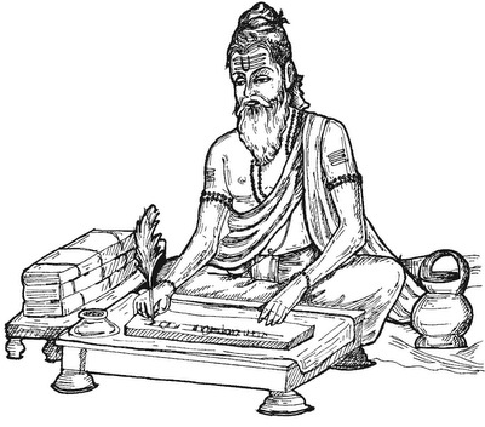

॥ ॐ श्रीपरमात्मने नमः ॥
रहस्यमयी वार्ता
[ हस्तलिखित डायरीसे ]
[ विविध विषयोंसे सम्बन्धित प्रश्न और परमश्रद्धेय स्वामीजी श्रीरामसुखदासजी महाराज द्वारा उनके उत्तर ]
त्वमेव माता च पिता त्वमेव
त्वमेव बन्धुश्च सखा त्वमेव।
त्वमेव विद्या द्रविणं त्वमेव
त्वमेव सर्वं मम देवदेव॥
“हे प्रभो! आप ही मेरी माता हो, आप ही पिता हो, आप ही बन्धु हो, आप ही सखा हो, आप ही विद्या हो, आप ही धन हो। हे देवदेव! मेरे सब कुछ आप ही हो।
लेखक — राजेन्द्र कुमार धवन
गीता प्रकाशन, गोरखपुर
गीता प्रकाशन, गोरखपुरके मूल ग्रंथ — सरल एवं सुगम पठन के लिए नवीन प्रस्तुति।
॥ ॐ श्रीपरमात्मने नमः ॥
नम्र निवेदन
इस युगके अप्रतिम महापुरुष परमश्रद्धेय स्वामीजी श्रीरामसुखदासजी महाराज अहोरात्र ऐसी युक्तियोंकी खोजमें लगे रहते थे, जिनसे मानवमात्र शीघ्र-से-शीघ्र तथा सुगमतापूर्वक अपना कल्याण कर सके। इस विषयमें उन्होंने अनेक क्रान्तिकारी युक्तियोंकी खोज भी की और उन्हें अपने प्रवचनों तथा पुस्तकोंके माध्यमसे जनतातक पहुँचाया।
प्रायः प्रतिदिन प्रातः तीन बजे पुस्तक-लेखन-कार्यके निमित्त मेरा श्रीस्वामीजी महाराजके पास जानेका नियम था। अतः मैं पहले ही अपने प्रश्नोंकी सूची तैयार कर लेता था और उस समय श्रीस्वामीजी महाराजसे उनके उत्तर पूछकर डायरीमें लिख लेता था। मुझे श्रीस्वामीजीके समान दूसरा ऐसा कोई सन्त नहीं दीखा, जिसपर मैं विश्वास कर सकूँ कि उसके द्वारा मेरे प्रश्नोंका सन्तोषजनक उत्तर मिल जायगा! श्रीस्वामीजी महाराज भी बार-बार मुझसे कहते थे-
“पारसार्थिक बाते, करणसापेक्ष या करणनिरपेक्षकी बातें येरेसे खूब एछो। अधियानकी बात है कि शरीर जानेपर ये बातें तुमको कौन बतायेगा? अभी जितना लाथ उठा सकते हो, उठा लो। मेरेसे प्रशन पूछ लो। इसमें तुस थी राजी, मैं थी राजी, संसार थी राजी और भगवान् थी राजी//”
“कहीँ कोई बात समझमें न आये तो मेरेसे पूछ लेना चाहिये। सेरेसे प्रश्न करना मेरी सेवा है। मेरेको तो सेठजीका वरदान मिला हुआ है कि कोई सातवीं शूमिकाकी बात थी पूछे तो स्वामीजी बता देंगे/”
श्रीस्वामीजी महाराज विविध लौकिक तथा पारमार्थिक विषयोंके मर्मज्ञ थे। उनका ज्ञान अपार, अगाध था! एक प्रवचनमें आपने डंकेकी चोट कहा था कि ‘गुरु आपको जो बातें बतायेग, उससे में कस नहीं बताऊँगा। मैं अभियान नहीं करता हूँ। आपको किसी भी विषयकी बात गुरुसे पूछनी हो) वह मेरेसे पूछो। ज्ञानयोग कर्मयोग भक्तियोग ध्यानयोग, लययोग हठयोग, राजयोग मन्त्रयोगु तन्त्रयोग आदिकी जो बात पूछनी हो) एछो। (१३.९.९९, प्रातः ८.३०, नोखा)
इसलिये मैंने श्रीस्वामीजी महाराजसे अनेक विषयोंसे सम्बन्धित विविध प्रश्न पूछे और उनका सन्तोषजनक उत्तर प्राप्त किया। कई बार मैंने एक ही प्रश्नको अनेक बार पूछा और प्रत्येक बार उसका अलग-अलग ढ़ंगसे उत्तर प्राप्त हुआ! जैसा उत्तर मिला, वैसा-का-वैसा डायरीमें लिख लिया । उन प्रश्नोत्तरोंमेंसे पाँच सौ प्रश्नोत्तर गीताप्रेस, गोरखपुरसे ‘प्रशनोत्तरमणिमाला’ नामक पुस्तकमें बहुत पहले प्रकाशित हो चुके हैं। उनके अतिरिक्त जो प्रश्नोत्तर शेष बचे थे, उनमेंसे कुछ चुने हुए प्रश्नोत्तर इस ‘रहस्यमयी वार्ता’ नामक पुस्तकमें दिये जा रहे हैं। ये प्रश्नोत्तर एक क्रममें अथवा एक समयमें किये हुए नहीं हैं, प्रत्युत यह सन् १९६८ से लेकर २००५ तकके एक लम्बे अन्तरालमें (अलग-अलग समयपर) किये हुए प्रश्नोत्तरोंका विषय-क्रमसे संकलन है। प्रभुको इच्छा हुई तो प्रश्नोत्तरके सिवाय अन्य मार्मिक बातोंका संकलन भी भविष्यमें प्रकाशित करनेका विचार है। मैं चाहता हूँ कि मेरे पास हस्तलिखित रूपसे श्रीस्वामीजी महाराजकी जो सामग्री रखी हुई है, वह यों ही न पड़ी रहे, प्रत्युत जिज्ञासु साधकोंतक पहुँच जाय, उनके काम आ जाय!
यद्यपि इस पुस्तकमें परमप्रेम-विषयक अनेक रहस्योंका उद्घाटन हुआ है, तथापि जीवनके अन्तिम दिनोंमें श्रीस्वामीजी महाराजका इस बातपर विशेष जोर रहा कि प्रेममें प्रतिक्षण वर्धमानता क्या है--इसका वर्णन कैसे किया जाय? क्योंकि अभीतक इसका बढ़िया, सन्तोषजनक खुलासा हुआ नहीं! परन्तु अन्तमें आपने यही कहा कि भीतरमें तो यह बात पकड़में आ गयी है, पर उसको कहें कैसे, कहनेके लिये शब्द नहीं मिल रहे हैं! और वह बात अनकही ही रह गयी! !
एक बात ध्यान देनेकी है कि जीवन्मुक्तिके बादकी स्थितिके विषयमें जो प्रश्नोत्तर हुए हैं, उनमें कहीं-कहीं अपनी दृष्टिसे परस्पर मतभेद अथवा विरोध भी दीख सकता है। इसका कारण यही है कि वह स्वसंवेद्य स्थिति है, उसका वर्णन नहीं किया जा सकता- ‘यन समेत जेहि जान न बानी’ (मानस, बाल० ३४१। ४) । वर्णनातीतका वर्णन करेंगे तो उसमें दोष आयेगा ही । वास्तवमें वर्णनातीतका वर्णन नहीं होता, प्रत्युत संकेतमात्र होता है। किसी विचारकने ठीक ही कहा है कि ‘सत्य बोला अथवा लिखा नहीं जा सकता। जब सत्य बोलने अथवा लिखनेयें आ जाता है, तब वह सत्य नहीं रहता।’ हाँ, यदि श्रीस्वामीजी महाराज अभी सशरीर विद्यमान होते तो इन प्रश््नोत्तरांका और अधिक खुलासा किया जा सकता था। इस विषयमें श्रीस्वामीजी महाराज द्वारा कही गयी यह बात विशेष ध्यान देनेयोग्य है--
“ये बातें शब्दोसे समझमे नहीं आती; प्रत्युत चुप होनेसे समझमे आती हैं।”
“नातोंये समाधान नहीं होता। जो अपना कल्याण चाहता है; उसका समाधान हो सकता है। पर जो अपना कल्याण नहीं चाहता, जो जिज्ञासु नहीं है; उसका समाधान नहीं हो सकता।”
आशा है, प्रस्तुत पुस्तक ‘रहस्यमयी वार्ता’ से साधकोंको श्रीस्वामीजी महाराजके प्रवचनों एवं पुस्तकोंमें आये अनेक विषयोंको गहराईसे समझनेमें सहायता मिलेगी और आध्यात्मिक मार्गके अनेक गूढ़ रहस्य जाननेको मिलेंगे। पाठकोंसे प्रार्थना है कि वे परमश्रद्धेय श्रीस्वामीजी महाराजके सिद्धान्तसे, उनके विचारोंसे पूर्णतः परिचित होनेके लिये उनके सम्पूर्ण साहित्यका अध्ययन करनेकी कृपा करें।
निवेदक—राजेन्द्र कुमार धवन
श्रीकृष्णजन्माष्टमी, वि० सं० २०७१ (१७.८.२०१४ )
॥ ॐ श्रीपरमात्मने नमः ॥
अहम्
प्रश्न—स्वामीजी, आपने बताया कि भोगोंकी सत्ता ही नहीं है--इस युक्तिसे भोगोंका चिन्तन कट जाता है। इसी तरह अहमके नाशकी युक्ति क्या है?
स्वामीजी—परमात्मा प्रकाशक है और संसार (क्रिया और पदार्थ) प्रकाश्य है, फिर अहम् कहाँ रहा? प्रकाशक और प्रकाश्य-ये दो हैं और इन दोनोंमें ही अहम् नहीं है। दूसरी बात, जो चीज आदि और अन्तमें नहीं होती, वह मध्यमें भी नहीं होती। अहम् पहले भी नहीं था, बादमें भी नहीं रहेगा; अतः वह अभी भी नहीं है!
प्रश्न—अहंकारका सर्वथा नाश होनेपर भगवानसे ‘साधर्म्य’ हो जाता है और भगवानमें ‘परमप्रेम’ हो जाता है--दोनोंपें क्या फर्क है?
स्वामीजी—दोनों एक ही हैं। ‘साधर्म्य’ बाहरका लक्षण है और ‘प्रेम’ भीतरका लक्षण है। प्रेमको प्राप्ति और नित्ययोगकी प्राप्ति भी एक ही है। दोनोंमें भीतरका खिंचाव है।
प्रश्न—आप तीन बातें कहा करते हैं--मेरा कुछ नहीं है, मेरेको कुछ नहीं चाहिये और मैं कुछ नहीं। इनमें ‘मैं कुछ नहीं’ का क्या तात्पर्य है?
स्वामीजी—स्थूल, सूक्ष्म और कारण--तीनों ही शरीर ‘मैं’ नहीं हैं। वास्तवमें ‘मैं’-पन अपरा प्रकृति है। ‘मैं’ नहीं है, प्रत्युत मैं-तू-यह-वह जिस प्रकाशमें दीखते हैं, वह प्रकाश है ।.......एकदम सम, शान्त.......इसको मान लो, कोई विकल्प मत करो तो बस, हो गया.......वह सम, शान्त स्वाभाविक है, स्वतः है, करना कुछ नहीं, कोई आकर्षण नहीं.......‘नष्टो मोहः स्मृतिर्लब्धा’ (गीता १८ । ७३ ).......एक परमात्मा है--यह सत्ताकी स्मृति है।.......यह स्वाभाविक है। इसमें कोई संकल्प-विकल्प नहीं है, कोई परिश्रम नहीं है।
प्रश्न—‘मैं’-पनकी मान्यता किसपर टिकी हुई है?
स्वामीजी—मैं-पनकी मान्यता ‘है’ पर टिकी हुई है। मैं-पनका आधार है-‘है’ अर्थात् सत्ता। उस सत्तामें मैं-पन नहीं है। सत्तामें मैं-तू-यह-वह कुछ भी नहीं है।
प्रश्न—‘मैं’ को छोड़कर ‘है’ में स्थित होनेकी क्या युक्ति है?
स्वामीजी—‘मैं’ को रखनेमें जो अभिमान है, वही अभिमान ‘मैं’ को छोड़नेमें भी है। अभिमान दोनोंमें समान है। करनेमें भी अभिमान है और न करनेमें भी अभिमान है। इसलिये ‘मैं’ की उपेक्षा कर दें, उससे उदासीन हो जायँ। उदासीन होनेमें युक्ति यह है कि वास्तवमें ‘मैं’-पन है नहीं! मैं- पन अपरा प्रकृति है, जो असत् है-‘नासतो विद्यते भावः’ (गीता २। १६) ।
प्रश्न—स्वामीजी, आपने मैं-पनको मिटानेका उपाय बताया कि ‘हूँ’ को ‘है’ में लीन कर दे। इसका तात्पर्य ?
स्वामीजी—‘हूँ’ ‘है’ के अर्पित हो जाय। तात्पर्य है कि जो ‘हूँ’ है, वह वास्तवमें ‘है’ ही है- ऐसा मान ले। फिर में-पन नहीं रहेगा।
प्रश्न—सृष्टि परमात्मासे पैदा हुई या ‘मैं’ से ? यदि सृष्टि ‘मैं’ के अन्तर्गत है तो ‘मैं’ के मिटनेपर स्वर्ग-नरकादि लोक मिट जाते हैं क्या?
स्वामीजी—जीवोंके शुभाशुभ संस्कार जब परिपक्व हो जाते हैं, तब परमात्मामें जीवोंके लिये सृष्टि पैदा करनेका संकल्प होता है। जैसे हम दौड़ते-दौड़ते थक जाते हैं तो विश्राम करते हैं। विश्राम करनेसे पुनः दौड़नेकी शक्ति संचित हो जाती है। ऐसे ही महाप्रलयके विश्राममें पुनः शक्ति संचित, परिपक्व हो जाती है तो सृष्टि-रचना होती है।
परमात्मासे पैदा हुई सृष्टि परमात्मस्वरूप ही है, पर जगत्रूपसे जगत्की सृष्टि जीवकृत है। ‘में’ के कारण जगत् जगत्रूपसे दीखता है। अतः ‘में’ के मिटनेपर लोक मिटते नहीं, प्रत्युत परमात्मस्वरूप हो जाते हैं।
‘मैं’ के कारण ही जगत्, जीव और परमात्मा--ये तीन दीखते हैं, अन्यथा तीनों एक ही हैं।
प्रश्न—प्रकृतिके धातुरूप अहम्का क्या स्वरूप है?
स्वामीजी—उसका स्वरूप है--परिवर्तन, बदलना ।
प्रश्न—अभिमानशून्य अहम् क्या है?
स्वामीजी—यह कर्तृत्वाभिमान-रहित अहम् है अर्थात् यह वह ‘हूँ’ है, जो ‘है’ हो गया है! स्वरूप (स्वयं)-को बतानेवाला और कोई शब्द नहीं है, इसलिये उसको ‘अभिमानशून्य अहम्’ कहा है।
जीवन्मुक्तकी क्रियाएँ अभिमानशून्य अहम्से होती हैं, जिसको ‘अहंवृत्ति’ (वृत्तिरूप समष्टि अहंकार) भी कहते हैं। अभिमानशून्य अहम्से ही दार्शनिक मतभेद पैदा होते हैं। जैसे विवेक तत्त्वज्ञानमें परिणत होता है, ऐसे ही अभिमानशून्य अहम् प्रेममें परिणत होता है। वह अहम् मिटनेपर प्रेमको प्राप्ति होती है, जिसमें कोई मतभेद नहीं होता।
प्रश्न—अहम्ू अभिमानशून्य कैसे हो?
स्वामीजी—मैं जानता हूँ-यह भी न रहे, तब अहम् अभिमानशून्य होगा।
प्रश्न—स्वामीजी, आपने एक बात यह कही कि अभिमानशून्य अहम् प्रेममें परिणत होता है, और एक बात यह कही कि अहम् मिटनेपर प्रेमकी प्राप्ति होती है। दोनोंमें ठीक क्या है?
स्वामीजी—दोनों ही ठीक हैं। परिणत होना और मिटना एक ही बात है, कोई फर्क नहीं । ज्ञानकी दृष्टिसे मिटना कहते हैं और भक्तिकी दृष्टिसे परिणत होना।
प्रश्न—अहम्ू अभिमानशून्य है या नहीं, इसकी पहचान क्या है?
स्वामीजी—अहम् अभिमानशून्य होनेपर सब सन्देह मिट जायँगे-
भिद्यते हदयग्रन्थिश्छिद्यन्ते संर्वसंशयाः।
क्षीयन्ते चास्य कर्माणि तस्मिन्दृष्टे परावरे ॥
(मुण्डक० २। २। ८)
“परमात्मतत्त्वको जान लेनेपर हृदय-ग्रन्थि खुल जाती है, सम्पूर्ण संशय मिट जाते हैं और समस्त कर्म नष्ट हो जाते हैं।”
प्रश्न—आपने कहा कि जिसमें ‘यह’ की ममता और ‘है’ की जिज्ञासा है, उसे ‘में’ कहते हैं। परन्तु लोगोंमें ममता तो दीखती है, पर जिज्ञासा नहीं दीखती, तो जिज्ञासा क्या है?
स्वामीजी—अपनेमें करने-जानने-पानेकी कमी मालूम देती है--यह जिज्ञासा है।
प्रश्न—क्या दार्शनिक मतभेद और अहम् भी सुखलोलुपतापर टिका हुआ है?
स्वामीजी—स्थूल अहम् सुखलोलुपतापर टिका है। परन्तु सूक्ष्म अहममें सुखलोलुपता नहीं है, प्रत्युत एक निजपना (अपना मत) है, जिससे दार्शनिक मतभेद होते हैं।
प्रश्न—क्या साधक निर्मम होनेसे निरहंकार स्वतः हो जायगा?
स्वामीजी—स्वतः नहीं होगा, विचार करनेसे होगा। निर्मम होनेसे निरहंकार होना सुगम हो जायगा।
प्रश्न—आप कहते हैं कि ‘मैं’ ( अहम्) है ही नहीं, तो फिर एकदेशीयता क्यों दीखती है?
स्वामीजी—एकदेशीयता दीखती है मूर्खतासे। वास्तवमें ‘मैं’ नहीं है, ‘है’ ही है।
प्रश्न—फिर ‘में’ कहाँसे आया?
स्वामीजी—‘मैं’ आया है केवल मूर्खतासे। बीकानेरको ढूँढ़ो, ईंट-ईंटमें देखो, बीकानेर मिलेगा क्या? जैसे बीकानेर केवल मान्यता है, ऐसे ही ‘मैं’ भी केवल मान्यता है।
अहम् (‘मैं’) प्रकाशित होता है। जिस ज्ञानमें अहम् दीखता है, वह ज्ञान ही हमारा स्वरूप है। प्रकाश है, अहम् नहीं है। स्वयंका कोई प्रकाशक नहीं है।
प्रश्न—अहम् ( मैंपन ) किसपर टिका है?
स्वामीजी—अज्ञानपर, मूर्खतापर टिका है।
प्रश्न—वह अज्ञान कैसे मिटेगा?
स्वामीजी—विवेकका आदर करनेसे मिटेगा। अहम् अपरा प्रकृति है। अपरा प्रकृतिका किंचित् भी सहारा है तो वह बिल्कुल अज्ञानी है। इसलिये अहम् अभिमानशून्य होना चाहिये ।
प्रश्न—अहम् मिटनेपर प्रेम प्राप्त होता है या प्रेम प्राप्त होनेपर अहम् मिटता है?
स्वामीजी—प्रेम प्राप्त होनेपर धीरे-धीरे अहम् मिट जाता है।
प्रश्न—अहंकार तो अपरा प्रकृतिका कार्य है और अपरा प्रकृति परमात्मामें रहती है, फिर अहंकार कैसे मिटेगा?
स्वामीजी—अपरा प्रकृति परमात्मामें कारणरूपसे रहती है, कार्यरूपसे नहीं। इसलिये परमात्मासे अभिन्नता, आत्मीयता होनेपर अहंकार सर्वथा नष्ट हो जाता है।
प्रश्न—कारण है तो वह कार्यमें भी बदल सकता है?
स्वामीजी—वास्तवमें अपरा प्रकृति नहीं मिटती, प्रत्युत उसका सम्बन्ध मिटता है। जीवका अपरासे सर्वथा सम्बन्ध-विच्छेद हो जाता है।
॥ ॐ श्रीपरमात्मने नमः ॥
आचार-व्यवहार
प्रश्न—अमुक तिथि-वारको अमुक कार्य करना चाहिये, अमुक कार्य नहीं करना चाहिये--ऐसा विधि-निषेध विदेशी लोग नहीं मानते, फिर भी उनका काम चलता है?
स्वामीजी—काम चलनेकी बात नहीं है। यह विधि-निषेध उनके लिये आवश्यक है, जो अपना कल्याण चाहते हैं। विदेशी लोग अपने कल्याणके लिये थोड़े ही कार्य करते हैं!
विदेशी लोग इन बातोंको मानते नहीं-यह बात नहीं है, वे तो इन बातोंको जानते ही नहीं ! ये बातें ऋषि-मुनियोंकी खोज है, जिनका प्रभाव अवश्य होता है। इन बातोंको माननेवालेमें विलक्षणता आती है।
प्रश्न—पुराणोंमें कई जगह ऐसा आया है कि अपनी शय्या, स्त्री, कमण्डलु आदि तो शुद्ध हैं, पर दूसरोंके अशुद्ध हैं। परन्तु आपसे सुना है कि अपना माननेसे वस्तु अशुद्ध हो जाती है?
स्वामीजी—तात्पर्य है कि ये ‘अपने लिये’ शुद्ध हैं, ‘दूसरोंके लिये’ अशुद्ध हैं। जैसे, हम भोजन करते हैं तो वह थाली हमारे लिये शुद्ध है, पर दूसरोंके लिये उच्छिष्ट (जूठन) है। यदि वह हमारे लिये उच्छिष्ट होती तो फिर एक ग्रास लेनेके बाद और कैसे खाते? क्योंकि ग्रास लेनेसे वह सब जूठा हो गया!
प्रश्न—चरण धोनेका तात्पर्य क्या है?
स्वामीजी—बड़े-बूढ़ोंके, विशेषरूपसे ब्राह्मणके चरण धोये जाते हैं। चरणोंके देवता विष्णु हैं; अतः यह विष्णुका ही पूजन हुआ। जब चरणोंका पुष्प-गन्धादिसे पूजन किया जाता है, तब दाहिने चरणके अँगूठेका पूजन करते हैं। उस जलको घरमें छिड़क देते हैं। चरणामृत भी ले सकते हैं।
हाथोंके देवता इन्द्र हैं; अतः गाते-बजाते समय हाथ हिलते हैं ।
प्रश्न—तिलक लगवाते समय सिरपर हाथ क्यों रखते हैं?
स्वामीजी—पगड़ी पीछे न गिर जाय, इसलिये पुराने जमानेमें सिरपर हाथ रखा करते थे।
प्रश्न—तुलसीपत्रको चबाना चाहिये या नहीं ?
स्वामीजी—सुना तो है कि चबाना नहीं चाहिये, पर ऐसा शास्त्र-प्रमाण हमें मिला नहीं। हम तो चबाते हैं !
प्रश्न—एक वृद्ध सज्जनका प्रश्न है कि क्या लाँगके बिना भी धोती पहन सकते हैं?
स्वामीजी—भीतर लंगोटी हो तो पहन सकते हैं। लंगोटी न हो तो लाँग लगानी चाहिये।
प्रश्न—कोई सूर्यास्तसे पहले सायंकाल मानता है, कोई सूर्यास्तके बाद, ठीक क्या है?
स्वामीजी—वास्तवमें सूर्यास्तसे पहले और बादका (सूर्यास्तके आसपासका) समय सायंकाल है अर्थात् सूर्यास्तसे पहले भी सायंकाल है और सूर्यास्तके बाद भी सायंकाल है। इसी तरह सूर्योदयसे पहले और बादका समय प्रातःकाल है।
॥ ॐ श्रीपरमात्मने नमः ॥
आनन्द ( अविनाशी सुख )
प्रश्न—शान्त आनन्द, अखण्ड आनन्द और अनन्त आनन्दमें क्या फर्क है?
स्वामीजी—संसारसे सम्बन्ध-विच्छेद होनेपर अशान्ति मिट जाती है तो शान्तिका अनुभव होता है--‘त्यागाच्छान्तिरनन्तरम्’ (गीता १२। १२) । इसको ‘शान्त आनन्द’ कहते हैं ।
अपने स्वरूपमें स्थिति होनेपर अखण्ड आनन्द’ का अनुभव होता है। इसमें निजपना रहता है, इसलिये इसको ‘निजानन्द’ भी कहते हैं।
परमप्रेमकी प्राप्ति होनेपर निजपना मिट जाता है और ‘अनन्त आनन्द’ का अनुभव होता है। इसको ‘परमानन्द’ भी कहते हैं।
अंशमें निजानन्द और अंशीमें परमानन्द है। निजानन्द सीमित होता है, पर परमानन्द असीम होता है।
कर्मयोगसे ‘शान्त आनन्द’ (शान्ति या शान्तरस), ज्ञानयोगसे ‘अखण्ड आनन्द’ (परमशान्ति या अखण्डरस) और भक्तियोगसे ‘अनन्त आनन्द’ (परमानन्द या अनन्तरस) प्राप्त होता है ।
प्रश्न—स्वरूपके आनन्द और जीवन्मुक्तिके आनन्दमें क्या फर्क है?
स्वामीजी—कोई फर्क नहीं है। जीवन्मुक्त होते ही स्वरूपके ‘अखण्ड आनन्द’ का अनुभव हो जाता है।
प्रश्न—शान्ति ( शान्त आनन्द ) और सात्त्विक सुखमें क्या फर्क है?
स्वामीजी—शान्ति जड़ताके त्यागसे मिलती है-‘त्यागाच्छान्तिरनन्तरम्’ (गीता १२। १२) । परन्तु सात्त्विक सुख चिन्मयताके सम्बन्धसे मिलता है-‘आत्मबुद्धिप्रसादजम्’ (गीता १८। ३७)। कीर्तनमें सात्त्विक सुख मिलता है।
आरम्भमें सात्त्विक सुख है, फिर शान्तरस है। सात्त्विक सुख एक अंग है, शान्तरस व्यापक है। सात्त्विक सुखमें गुण है, शान्तरस गुणातीत है।
प्रश्न—‘सत्’ और ‘चित्’ का जैसा अनुभव होता है, वैसा ‘आनन्द’ का नहीं होता, क्या कारण है?
स्वामीजी—सत्तासे कम चित् और चित्से कम आनन्द है। सत्त्वगुणमें आनन्द विशेष होता है, तभी मनुष्य सुखसंगसे बँध जाता है--‘सुखसङ्गेन बध्चाति’ (गीता १४। ६) । तमोगुणमें सत्ता तो है, पर चित् (ज्ञान) और आनन्द नहीं है। सत्तापर तमोगुणका जोर नहीं चलता। तमोगुणकी प्रधानतासे आनन्द (सहज सुखराशि)-का भान नहीं होता। भान न होनेपर भी आनन्द ज्यों-का-त्यों है।
यदि अनुभव करना हो तो सत्ू-चित्को पकड़ो, आनन्दको मत पकड़ो। सत्-चित्की खोज करो। आनन्दकी खोज करोगे तो नींद आ जायगी। मनुष्य विषय-भोगोंके बिना जी सकता है, पर नींदके बिना नहीं जी सकता। नींदमें संसारको भूलनेसे ही सुख होता है, फिर त्यागसे कितना सुख होगा? आनन्दको जरूरत आपको नहीं है, प्रत्युत आनन्द आपकी गरज करेगा। ज्ञान होते ही आनन्द स्वतः होता है; जैसे-कोई नयी बात सुनते ही सुख मिलता है, प्रसन्नता होती है।
प्रश्न—क्या सुखासक्ति सर्वथा छूटनेसे पहले भी वह ‘अक्षय सुख’ मिल सकता है, जिसमें कभी कोई कमी नहीं आती और जो कभी नष्ट नहीं होता?
स्वामीजी—हाँ, सुखासक्ति सर्वथा नष्ट होनेसे पहले भी उसको झलक मिल सकती है। सात्त्विक सुखका अनुभव होनेपर साधक स्वतः निर्गुण सुखको तरफ चला जाता है।
प्रश्न—आपने कहा कि पारमार्थिक सुख सांसारिक सुखको तरह संयोगजन्य नहीं है, तो क्या पारमार्थिक सुख कोई कमी नहीं रहनेका सुख है?
स्वामीजी—कमी न रहनेका सुख तो मुक्तिमें होता है, जिसमें मतभेद रहता है। आचार्योमें कोई कमी न रहनेका सुख था, इसलिये उनमें मतभेद है। परन्तु अनन्तरस कमी न रहनेके सुखसे भी विलक्षण है! उसमें एक आकर्षण (प्रेम)-का सुख है। मुक्तिमें दुःखोंकी निवृत्ति होती है, पर प्राप्ति नहीं होती ।
मुक्ति होनेपर कोई बड़ा भारी आनन्द हो जायगा-ऐसी बात नहीं है। मुक्तिमें संसारका दुःख मिटता है और स्वयं है जैसा रहता है।
प्रश्न—गीतामें आया है-‘यं लब्ध्वा चापरं लाभं मन्यते नाधिकं ततः’ (गीता ६। २२ )--यह कौन-सा रस है?
स्वामीजी—यह अखण्डरस है। जो अखण्डरस ज्ञानसे मिलता है, वही ध्यानसे भी मिलता है।
प्रश्न—रसका अनुभव क्यों नहीं होता?
स्वामीजी—रसकी चाहना होनेसे ही रसका अनुभव नहीं हो रहा है। अतः न रसकी चाहना करे, न ज्ञानको चाहना करे, न मुक्तिको चाहना करे। कोई चाहना करे ही नहीं।
मुक्तिके लिये मुक्तिको चाहना नहीं करनी है, प्रत्युत संसारकी चाहना मिटानेके लिये मुक्तिको चाहना करनी है; जैसे-काँटा निकालनेके लिये काँटेकी जरूरत है। निषेध (संसारसे सम्बन्ध-विच्छेद) करनेपर विधि स्वतः आ जायगी, उसकी चाहना करनी नहीं पड़ेगी। अतः चाहनामात्रका त्याग करना है। चाहना करते ही प्रकृतिके साथ सम्बन्ध हो गया! मुक्तिको चाहना करना मुक्तिसे दूर होना है। अतः चाहना न करके ‘चुप’ होना है। परमात्माको प्राप्ति भी स्वतः है औ संसारको निवृत्ति भी स्वतः है अतः ‘चुप’ हो जाओ।
॥ ॐ श्रीपरमात्मने नमः ॥
आस्तिकता-नास्तिकता
प्रश्न—स्वामीजी, आपने कहा कि अधूरी जानकारीको पूरा मान लेनेसे नास्तिकता आती है, कैसे?
स्वामीजी—जितना जान लिया, उसीको पूर्ण मान लेनेसे और जाननेकी इच्छा नहीं होगी तथा शास्त्रों आदिसे जो जानेगा, उसको मानेगा नहीं कि यह सब गलत है, जो मैं जानता हूँ, वही ठीक है--यही नास्तिकताका आना है। अभिमान भी अधूरी जानकारीमें ही आता है। परमात्मप्राप्तिमें जितनी भी बाधाएँ हैं, उन सब बाधाओंमें अभिमान सबसे अधिक बाधक है!
प्रश्न—आप कहते हैं कि विश्वास भगवान्से माँगो, फिर यह क्यों कहा जाता है कि भगवान्पर विश्वास करो?
स्वामीजी—जितना हम कर सकते हैं, उतना हमारेपर करनेकी जिम्मेवारी है। जो हम नहीं कर सकते, वह भगवान् करते हैं। हमने नाशवान्पर विश्वास कर लिया, इसलिये अविनाशीपर विश्वास करनेकी हमारेपर जिम्मेवारी है। भगवान्के सिवाय कुछ नहीं है--यह विश्वास फिर भगवान् देते हैं।
प्रश्न—आपने कहा है कि परमात्मामें जगत्को देखना नास्तिकता है। यह कैसे? क्योंकि यह तो एक साधन है-‘सर्व च मयि पश्यति’ (गीता ६। ३०); ‘अथो मयि’ (गीता ४। ३५ )।
स्वामीजी—ऐसा कहनेका तात्पर्य है--जो परमात्माकी जगह केवल जगत्को ही देखता है अर्थात् परमात्माको न मानकर केवल जगत्को ही सच्चा मानता है-‘जगदाहुरनीश्वरम्’ (गीता १६। ८) ।
प्रश्न—आपने कहा कि नास्तिक भी यदि ईमानदार हो तो उसका भी उद्धार हो सकता है, तो नास्तिकमें ईमानदारी क्या है?
स्वामीजी—ईश्वरको देखूँगा, तभी मानूँगा-यह उसकी ईमानदारी है।
प्रश्न—बौद्ध तथा जैन दर्शनको नास्तिक क्यों कहा गया है? वे आत्माको मानते हैं। आत्मा और परमात्माकी सत्ता तो एक ही है!
स्वामीजी—वे ईश्वरका खण्डन करके आत्माका आग्रह रखते हैं। इस आग्रहके कारण ही बाधा है। आग्रह न हो तो सब ठीक है। कारण कि आग्रहसे अहम् रहता है, जिससे मतभेद पैदा होते हैं।
॥ ॐ श्रीपरमात्मने नमः ॥
उद्देश्य
प्रश्न—मनुष्यको अपने लक्ष्यको पहचान कैसे हो?
स्वामीजी—मनुष्य या तो स्वयं विचार करके अपना लक्ष्य पहचाने, या शास्त्र तथा सन्तोंके वचनोंपर विश्वास करके अपना लक्ष्य पहचाने । विचार करें कि हम चाहते क्या हैं? हम ऐसा पूर्ण सुख चाहते हैं, जो सदा बना रहे। जैसे भूख लगती है तो इससे सिद्ध होता है कि ऐसी कोई वस्तु अवश्य है, जिससे भूख मिटती है। ऐसे ही पूर्ण सुखकी इच्छा होती है तो ऐसा सुख अवश्य है, जिससे सदाके लिये सुख मिल जाता है। नाशवान् सुखका त्याग करनेसे अविनाशी सुखकी प्राप्ति हो जाती है। ऐसा निश्चय कर लो कि हमें नाशवान् सुख नहीं लेना है।
अपने लक्ष्यको पहचान लें तो फिर दूसरे लक्ष्यकी तरफ कभी ध्यान नहीं जायगा। यदि दूसरी तरफ ध्यान जाता है तो लक्ष्यको पहचाना ही नहीं !
प्रश्न—जीवका उद्देश्य अपना कल्याण करना है, फिर तैत्तिरीयोनिषदमें पहले ‘आचार्यदेवो भव’ न कहकर मातृदेवो भव’ क्यों कहा?
स्वामीजी—पहला गुरु माँ है। मातामें आदरभाव होगा तो आचार्यमें स्वतः आदरभाव हो जायगा। परन्तु बालक माँका उतना आदर नहीं करता, तभी ‘मातृदेवो भव’ पहले कहा।
॥ ॐ श्रीपरमात्मने नमः ॥
उपासना एवं अनुष्ठान
प्रश्न—आजकल मन्त्रॉकी सिद्धि न होनेमें क्या कारण है?
स्वामीजी—मनमें परस्त्रीका चिन्तन करनेसे मनमें वैसी शक्ति नहीं रहती। इसलिये कहा है--
जिह्वा दग्धा परान्नेन करौ दग्धौ प्रतिग्रहात्।
मनो दग्धं परस्त्रीभिः कार्यसिद्धिः कथं भवेत्॥
(कुलार्णव० १५। ७७)
“दूसरेका अन्न खानेसे जिसकी जीभ जल गयी है, दान लेनेसे जिसके हाथ जल गये हैं और दूसरेकी स्त्रीका चिन्तन करनेसे जिसका मन जल गया है, उसे सिद्धि कैसे मिल सकती है?”
दूसरी बात, आजकल तन्त्रविद्याके जानकार गुरु भी प्रत्यक्षमें नहीं मिलते। उत्तराखण्डमें सैकड़ों वर्षकी आयुवाले ऐसे महापुरुष विद्यमान हैं। परन्तु अपनी सच्ची, तीव्र लगन हो तो वे स्वयं आकर मिलते हैं ।
प्रश्न—किसी मन्त्र, तन्त्र अथवा यन्त्रका प्रभाव कबतक रहता है?
स्वामीजी—यदि अनुष्ठानकर्ता संयमी है, श्रेष्ठ आचरण तथा भाववाला है तो उसके द्वारा प्रयुक्त किये गये, बनाये गये यन्त्र आदि अधिक समयतक प्रभावशाली रहते हैं।
प्रश्न—सन्तोषी माताके प्रचारमें क्या वास्तविकता है?
स्वामीजी—बिल्कुल शास्त्रविरुद्ध, मनगढ़ंत है! मनगढंत देवी-देवताओंको नहीं मानना चाहिये।
प्रश्न—कलियुगमें चार गुना अधिक मन्त्रजप करनेकी बात आती है, आपका क्या मत है?
स्वामीजी—मन लगाकर जप करे तो आधी जप-संख्यासे ही सिद्धि हो जाती है। अगर मन न लगाये तो चार गुना अधिक जप करनेसे सिद्धि होती है।
प्रश्न—आपने कहा कि भागवतमें राम और कृष्णको उपासना कलियुगमें मुख्य बतायी है; परन्तु ‘कलौ चण्डीविनायकौ’ भी तो कहा है?
स्वामीजी—कलियुगमें कोई अपना उद्धार करना चाहे तो राम तथा कृष्णको प्रधानता है, और सिद्धियाँ प्राप्त करना चाहे तो शक्ति तथा गणेशकी प्रधानता है।
प्रश्न—कोई कमरदर्द आदिके कारण बैठकर रामायणका पाठ न कर सके तो क्या लेटकर पाठ कर सकता है?
स्वामीजी—हाँ, कर सकता है। भावका महत्त्व है। भाव पाठमें रहना चाहिये, शरीर चाहे जैसा रहे । नाशवान् शरीरका क्या मूल्य है!
प्रश्न—शाबर मन्त्रॉकी रचना कैसे होती है?
स्वामीजी—आरम्भमें भगवान् शंकरने अनेक भाषाओंमें असंख्य शाबरमन्त्रोंकी रचना की थी--‘साबर मंत्र जाल जिन्ह सिरिजा’ (मानस, बाल० १५। ३)। पीछे सिद्ध महापुरुषोंने अपने तपोबलसे उनकी रचना की है। उनके तपोबलसे उनके बनाये हुए शाबरमन्त्रोंसे कार्यसिद्धि होती है। जैसे उनके शाप अथवा वरदानमें शक्ति होती है, ऐसे ही उनके द्वारा रचित मन्त्रोमें भी शक्ति होती है ।
प्रश्न—एक व्यक्तिको प्रेतबाधा है। वह प्रेत उसे नामजप, पाठ आदि नहीं करने देता। तो क्या प्रेत साधन-भजनमें बाधा डाल सकता है? इससे बचनेका उपाय क्या है?
स्वामीजी—साधकके भीतर जिस अंशमें संसारको मुख्यता है, उसी अंशमें प्रेत बाधा डाल सकता है। जिस अंशमें भगवानको मुख्यता है, उस अंशमें वह बाधा नहीं डाल सकता। जैसे, ‘भगवान् मेरे हैं, मैं भगवानका हूँ-इस अपनेपनमें, भगवान्की प्रियतामें वह बाधा नहीं डाल सकता।
इस बाधासे बचनेका उपाय है-‘हे मेरे नाथ! हे मेरे प्रभो!’-एऐसा पुकारे। दूसरे व्यक्तिसे नारायणकवच, हनुमानचालीसा आदि सुने और उसके द्वारा अभिमन्त्रित जल पीये। सत्संग करनेसे भी फर्क पड़ता है। अतः सत्संग, कीर्तनके समय वह मेरे सामने बैठे। कीर्तन करनेसे प्रेत भागता है। हनुमानचालीसाके पाठसे प्रेतपर हनुमानूजीकी मार पड़ती है।
जो पति अपनी पत्नीको कीर्तन, पाठ-पूजा नहीं करने देते, वे भी प्रेत ही हैं!!
प्रश्न—कोई स्त्री या पुरुष मन्त्रके द्वारा दूसरेको अपने वशमें करके उससे कोई अनुचित कार्य करवाता है तो इसका दोष वशीभूत व्यक्तिको लगेगा या नहीं ?
स्वामीजी—ज्यादा दोष तो वशमें करनेवालेको लगेगा, वशीभूत व्यक्तिको कम लगेगा। वास्तवमें वशीकरण मन्त्र उसीपर चलते हैं, जिसके भीतर कामना है। जितनी कामना होगी, उतना दोष लगेगा। अगर कोई कामना न हो तो उसपर मन्त्र नहीं चल सकता; जैसे-पत्थरपर जोंक नहीं लग सकती ।
प्रश्न—कोई हमारे विरुद्ध तान्त्रिक प्रयोग ( अभिचार आदि) करे तो उससे बचावका क्या उपाय है?
स्वामीजी—भगवान्का भजन करे। भजन करनेवालेपर अभिचार नहीं चलता; जैसे-प्रह्वादजीपर कोई प्रयोग नहीं चला। हनुमानचालीसा, सुन्दरकाण्ड या रामायणका पाठ करनेसे भी प्रयोग नहीं चलता। इनसे हनुमानजी रक्षा करते हैं।
प्रश्न—क्या केवल हनुमानूजीकी उपासनासे कल्याण हो सकता है?
स्वामीजी—हाँ, हो सकता है। हनुमानूजी शंकरके अवतार हैं । परन्तु ‘पंचमुखी हनुमान्’ की उपासना न करके ‘दास हनुमान्’ की उपासना करनी चाहिये।
प्रश्न—आपने प्रवचनमें कहा है कि हनुमानूजीको भगवान् माननेसे वे प्रसन्न नहीं होते, प्रत्युत भक्त माननेसे प्रसन्न होते हैं। परन्तु जिनके इष्टदेव हनुमानजी ही हैं, उनमें क्या अपूर्णता रहेगी?
स्वामीजी—हनुमान्ूजी अपूर्णता नहीं रहने देंगे। वे राम-कथासे बहुत प्रसन्न होते हैं। राम-कथा सुननेके लिये ही उन्होंने रामजीको छोड़कर पृथ्वीपर रहना स्वीकार किया!
प्रश्न—हनुमानूजीको उनका बल याद करानेके बाद फिर कबतक उन्हें अपना बल याद रहता है?
स्वामीजी—जिस विषयमें उन्हें बल याद कराया जाय, उस विषयमें याद रहता है।
प्रश्न—एक सज्जनने पूछा है कि तुलसीदासजीने ‘बजरंगबाण’ क्यों बनाया?
स्वामीजी—तुलसीदासजीने ‘बजरंगबाण’ बनाया ही नहीं! वे ऐसी रचना कर सकते ही नहीं!
कार्यसिद्धिके लिये अपने इष्टदेवसे प्रार्थना करना तो ठीक है, पर उनपर दबाव डालना, उनको शपथ या दुहाई देकर कार्य करनेके लिये विवश करना, उनसे हठ करना सर्वथा अनुचित है। उदाहरणके लिये, ‘बजरंगबाण’ में हनुमानूजीपर ऐसा ही अनुचित दबाव डाला गया है; जैसे- ‘इन्हें यारु तोहि सपथ राम की, सत्य होहु हरि सपथ पाड़ के ; जनकसुता हरिदास कहावौ। ता की सपथ विलंब न लावौ॥, उठ उठ चलु तोहि राम दोहाई । इस तरह दबाव डालनेसे इष्टदेव प्रसन्न नहीं होते, उल्टे नाराज होते हैं, जिसका पता बादमें लगता है। इसलिये में “बजरंगबाण” के पाठके लिये मना किया करता हूँ।
प्रश्न—क्या स्त्री हनुमानचालीसाका पाठ कर सकती है?
स्वामीजी—हाँ, कर सकती है, पर अशुद्ध अवस्थामें पतिको पाठ करना चाहिये।
प्रश्न—हनुमानचालीसाका पाठ बोलकर करें या मानसिक?
स्वामीजी—बोलकर पाठ करना अच्छा है। चलते-फिरते भी बोलकर पाठ कर सकते हैं।
प्रश्न—चलते-फिरते बोलकर पाठ करनेसे क्या अशुद्धि नहीं लगेगी?
स्वामीजी—नहीं लगेगी ।
प्रश्न—हनुमानूजी आदिका अनुष्ठान करते समय कोई मनुष्य गलती कर देता है तो वे उसका अनिष्ट क्यों करते हैं? वे तो कृपा करनेवाले हैं!
स्वामीजी—इसका कारण है--सकामभाव। एक तो मनुष्य उनको न चाहकर भोगोंको चाहता है अर्थात् सकामभाव रखता है, और फिर विधिमें गलती करता है, इसीलिये अनिष्ट होता है।
प्रश्न—हनुमानूजीका अनुष्ठान करनेसे कई उपासकोंको बड़ा भय लगता है, कई पागल हो जाते हैं, इसका क्या कारण है?
स्वामीजी—नीयतमें गड़बड़ी होनेसे, कामना होनेसे अथवा विधिमें त्रुटि होनेसे ऐसा हो सकता है, अन्यथा हनुमानजी तो बड़े दयालु हैं! वे भक्त हैं, सन्त हैं!
प्रश्न—क्या तुलसी और रुद्राक्षको माला एक साथ धारण कर सकते हैं?
स्वामीजी—ऐसे निषेधका लेख हमने कहीं देखा नहीं। हम तो दोनों एक साथ धारण कर लेते हैं।
प्रश्न—गलेमें ताबीजके रूपमें गीता धारण की जाय तो क्या अशुद्ध अवस्थामें उसे उतार देना चाहिये ?
स्वामीजी—उसको उतारनेकी जरूरत नहीं है। स्त्रीको भी अशुद्ध अवस्थामें उसे उतारनेकी जरूरत नहीं है। उसको हर समय धारण किया जा सकता है।
प्रश्न—नारदपश्चरात्रमें आये ‘गोपालकवच’ में लिखा है कि इसके बिना जो गोपालका पूजन करता है, वह शास्त्रघातसे मरता है! आपके विचारसे क्या कृष्णोपासकके लिये गोपालकवचका पाठ अनिवार्य है?
स्वामीजी—अनिवार्य नहीं है।
प्रश्न—कई लोगोंके सामने यह समस्या रहती है कि कोई भी काम करें, पूरा होनेसे पहले कोई- न-कोई विघ्न आ जाता है, जिससे वह काम पूरा नहीं हो पाता! इसके लिये कोई उपाय?
स्वामीजी—‘हे मेरे नाथ!’ कहकर भगवानको याद करें ।
प्रश्न—एक व्यक्ति आर्थिक समस्यासे बहुत दुःखी है और इससे छूटनेका उपाय जानना चाहता है। हनुमानचालीसा आदिका पाठ भी करता है। उसे क्या करना चाहिये।
स्वामीजी—वह जो अनुष्ठान करता है, उसको करता रहे । जब अनुष्ठान प्रारब्धसे तेज हो जायगा, तब उसकी समस्या दूर हो जायगी।
श्रीदः श्रीशः श्रीनिवासः श्रीनिधिः श्रीविभावनः ।
श्रीधरः श्रीकरः श्रेयः श्रीमाँल्लोकत्रयाश्रयः॥
( श्रीविष्णुसहस्ननाम० ७८)
इसका सम्पुट लगाकर श्रीविष्णुसहस्ननामस्तोत्रका रोज एक पाठ करे।
प्रश्न—एक व्यक्तिका पत्र आया है। वह गम्भीर संकटमें है और उससे बचनेके लिये आपसे उपाय पूछ रहा है। उसे क्या करना चाहिये?
स्वामीजी—सम्पूर्ण संकटोंको दूर करनेवाला एक उपाय है। श्रीहनुमानूजीके चित्रको लाल वस्त्र धारण कराके लाल आसनपर विराजमान करे। सामने भोग-सामग्री रखे-चनेकी दाल और गुड़। दाल कच्ची हो और गंगाजल अथवा कुएँके जलसे धोयी हुई हो। गायके घीका दीपक जलाकर चित्रके दाहिनी ओर रखे। फिर ‘श्रीहनुमानूचालीसा’ के एक सौ आठ पाठ करे। पाठ समाप्त होनेपर भोग- सामग्रीको बच्चोंमें अथवा बन्दरोंमें बाँट दे। पाठके समय अपने वस्त्र तथा आसन भी लाल रंगके हों तो उत्तम है।
--इस प्रकार बिना नागा किये एक सौ आठ दिनतक प्रतिदिन एक सौ आठ पाठ करे। अनुष्ठान- कालमें पूर्ण संयम रखे।
प्रश्न—यदि एक समय पूरा पाठ न कर सकें तो?
स्वामीजी—अगर एक समय पूरा पाठ न कर सके तो प्रातः-साय॑ आधा-आधा पाठ भी कर सकते है।
प्रश्न—किसी कार्यको करें या न करें--इसका निर्णय कैसे करें?
स्वामीजी—किसी कार्यको करें या न करें-इसका उत्तर पाना हो तो किसी दिन अपने इष्टका खूब भजन-ध्यान, नामजप, कीर्तन करें। फिर कागजकी दो पुड़िया बनायें। एकमें लिखें ‘कार्य करें’ और दूसरीमें लिखें ‘कार्य नहीं करें’। फिर किसी बच्चेसे कोई एक पुड़िया उठवायें और उसे पढ़कर उसके अनुसार कार्य करें।
प्रश्न—रामनवमी अथवा कृष्णजन्माष्टमीके अवसरपर व्रत क्यों रखते हैं? प्रसन्नताके अवसरपर व्रत कैसा?
स्वामीजी—व्रत एक ‘तप’ है। प्रसन्नताके अवसरपर भोग करना उचित है या तप करना? परन्तु शरीरमें, भोगोंमें मोह होनेके कारण मनुष्यको यह बात समझमें नहीं आती।
प्रश्न—एक सज्जनने पूछा है कि मेरे पास राम-दरबारकी मूर्तियाँ हैं, उनमेंसे एक लक्ष्मणजीकी मूर्ति खण्डित हो गयी है। क्या करना चाहिये?
स्वामीजी—लक्ष्मणजीको मूर्तिको नदी या समुद्रमें प्रवाहित कर दें और उसकी जगह दूसरी मूर्ति ले आयें।
प्रश्न—स्त्रीको शंकरका पूजन करना चाहिये या नहीं ?
स्वामीजी—स्त्रीको शिवलिंगका पूजन तथा स्पर्श नहीं करना चाहिये। उसे शिवमूर्तिका पूजन करना चाहिये ।
प्रश्न—क्या टोने-टोटके होते हैं?
स्वामीजी—हाँ, होते हैं।
प्रश्न—उनका असर विफल करनेके लिये क्या करना चाहिये?
स्वामीजी—हनुमानचालीसा, सुन्दरकाण्ड आदिका पाठ करना चाहिये।
प्रश्न—पूजा-स्थलमें अनेक देवी-देवताओंकी मूर्तियाँ या चित्र रखना उचित है क्या?
स्वामीजी—रख सकते हैं, पर अपना इष्ट एक ही होना चाहिये।
प्रश्न—आजकल सात्त्विक अनुष्ठानका उतना असर नहीं दीखता, जितना तामस अनुष्ठानका, क्या कारण है?
स्वामीजी—अभी भगवान्ने कलियुगको राज्य दिया है। कलियुग तामसकी वृद्धिमें सहायक होता है। कलियुगको अधर्मका मित्र कहा गया है है-‘कलिनाधर्ममित्रेण’ (श्रीमद्भा० १। १५। ४५) ।
प्रश्न—परन्तु अन्य युगोंमें भी देखा जाता है कि असुर देवताओंपर भारी पड़ते हैं!
स्वामीजी—प्रकृतिकी स्वाभाविक प्रवृत्ति तामसकी तरफ है। सात्त्विक मनुष्योंमें आध्यात्मिक बल होता है और तामस मनुष्योंमें भौतिक बल। सात्त्विक मनुष्योंकी आध्यात्मिक उन्नति होती है और तामस मनुष्योंकी भौतिक उन्नति।
भागवतमें देखें तो राजाओंका चरित्र अधिक आया है। तपस्या आदि सकाम बातोंका ही वर्णन ज्यादा आया है, निष्कामका बहुत कम। सदासे सकाम मनुष्य ही अधिक होते आये हैं। निष्कामभाववाले बहुत कम हुए हैं। गीतामें भी आया है-‘मनुष्याणां सहस्त्रेषु कश्चिद्यतति सिद्धये’ (गीता ७। ३) ‘हजारों मनुष्योंमें कोई एक सिद्धि (कल्याण)-के लिये यत्न करता है’। इसलिये मनुस्मृतिमें आया है-‘प्रवृत्तिरेषा भूतानां निवृत्तिस्तु महाफला’ (५। ५६) ।
प्रश्न—अनुष्ठान करते समय दीपक क्यों जलाते हैं?
स्वामीजी—घीका दीपक जलानेसे, गंगाजीके तटपर बैठकर जप करनेसे आवरण (मोह)-का नाश होता है। श्रद्धालुको ज्यादा लाभ होता है। तर्क करनेवालेका हृदय कठोर होता है। भाव तेज हो तो दीपक आदिको भी जरूरत नहीं ।
प्रश्न—जिस समय यहाँ प्रातः पाँच बजे प्रार्थना होती है, उस समय अमेरिकाके कुछ प्रान्तोंमें दोपहरके लगभग साढ़े तीन बजे होते हैं। ऐसी स्थितिमें अमेरिकामें रहनेवाले व्यक्तिको प्रार्थना कितने बजे करनी चाहिये?
स्वामीजी—उसको दोपहर साढ़े तीन बजे ही प्रार्थना करनी चाहिये, जिससे यहाँ प्रार्थना करनेवालों के साथ उसकी एकता हो जाय। अगर वह प्रातः प्रार्थना करे तो भी कोई दोष नहीं है। केवल यह फर्क रहेगा कि सबके साथ एकता नहीं होगी।
प्रश्न—बलिप्रथाके विषयमें आपका क्या मत है?
स्वामीजी—में इसके विरुद्ध हूँ। मूलमें कामना है, जिसके कारण ऐसे पाप होते हैं। कामनाके कारण ही मनुष्य तामस अनुष्ठान करता है।
प्रश्न—मन्त्र-जपमें दीक्षाकी आवश्यकता है या नहीं?
स्वामीजी—शिव, हनुमान् आदि जिसमें साधककी रुचि हो अथवा जिनके मन्त्रका वह जप करता हो, उन्हींको अपना गुरु मान लेना चाहिये। अगर उसकी दृष्टिमें कोई भगवत्प्राप्त महात्मा हो तो उनसे दीक्षा लेनी चाहिये। वास्तवमें सांसारिक कामनाओंकी सिद्धिके लिये दीक्षाकी जरूरत है। भगवत्प्राप्तिके लिये दीक्षा लेनेकी जरूरत नहीं है।
प्रश्न—मन्त्र-जपसे पहले उसके ( दोष-निवारणके लिये ) दस संस्कार करनेकी जरूरत है या नहीं ?
स्वामीजी—मन्त्रका संस्कार करनेकी जरूरत सांसारिक कामना-पूर्तिके लिये है। भगवत्प्राप्तके लिये इसको जरूरत नहीं है।
प्रश्न—अपने हाथसे लिखे स्तोत्रका पाठ करनेका निषेध आता है; अतः ऐसी स्थितिमें क्या करना चाहिये ?
स्वामीजी—किसीसे लिखवा लेना चाहिये। कण्ठस्थ होनेपर फिर पढ़नेकी जरूरत नहीं।
प्रश्न—यदि अपने हाथसे लिखे स्तोत्रको कण्ठस्थ करें तो?
स्वामीजी—कोई आपत्ति नहीं है।
प्रश्न—स्तोत्रके आदि और अन्तमें जो संवाद या माहात्म्य आता है, उसे प्रत्येक बार पढ़ना आवश्यक है क्या?
स्वामीजी—पहले एक बार उस संवाद या माहात्म्यको पढ़कर समझ लें, फिर केवल स्तोत्रका ही पाठ करते रहें। उसको प्रत्येक बार पढ़नेकी जरूरत नहीं ।
प्रश्न—‘गं गणपतये नमः’ के आदिमें ‘ॐ लगाना चाहिये या नहीं ?
स्वामीजी—अगर यज्ञोपवीत (जनेऊ) धारण न किया हो तो ‘ॐ‰’ लगानेकी आवश्यकता नहीं है। जिसका श्रुतियोंमें अधिकार है, उसीका 3ॐकारमें अधिकार है।
॥ ॐ श्रीपरमात्मने नमः ॥
कल्याण ( मुक्ति )
प्रश्न—यदि भगवान् हमारा कल्याण चाहते हैं तो फिर उनको बाधा क्या है?
स्वामीजी—बाधा है हमारी विमुखता! जैसे, गंगाजी बह रही हैं सबके कल्याणके लिये। चाहे कोई भी गंगाजीमें स्नान करे, सबके लिये वे समान हैं, पर कोई उनके पास जाय ही नहीं तो वे क्या करें? भगवान्से भी अधिक भगवद्धक्त हमारा कल्याण चाहते हैं!
प्रश्न—अधिक धनी, अधिक बलवान्, अधिक पण्डित और अधिक रोगीका कल्याण जल्दी नहीं होता--इसका क्या तात्पर्य है?
स्वामीजी—इसका तात्पर्य कल्याणका निषेध करनेमें नहीं है, प्रत्युत कल्याणमें कठिनता बतानेमें है। कारण कि अधिक धनवान्, बलवान् और विद्वानमें अभिमान ज्यादा होता है। अभिमान कल्याणमें बाधक है--
संसृत मूल सूलप्रद नाना। सकल सोक दायक अभिमाना॥
(मानस, उत्तर० ७४। ३)
रोगीमें शरीरका अधिक ध्यान और चिन्ता रहती है।
प्रश्न—भागवतमें आया है कि भगवान् नर-नारायण दुनियाके कल्याणके लिये हिमालयमें तप कर रहे हैं--‘क्षेमाय स्वस्तये नृणाम्’ ( श्रीमद्भा० १०। ८७। ६), तो वह कल्याण क्या है?
स्वामीजी—नर-नारायण बद्रीनारायणमें लोगोंके उद्धारके लिये तप कर रहे हैं। संसारमें जितना भी सद्भावोंका प्रचार है, सद्गुण-सदाचार हैं, मर्यादा है, यह उनकी ही कल्याणको भावनाका परिणाम है। परन्तु युगधर्मके कारण वैसा परिणाम देखनेमें नहीं आता।
जैसे, अभी कोई हमें लूटने आ जाय, मारने आ जाय तो हम क्या कर सकते हैं? पर ऐसा नहीं होता तो यह मर्यादा उनके तपके कारण ही है। अभी जैसे हम बैठे विचार करते हैं तो हृदयमें अपने-आप अच्छी-अच्छी बातें पैदा होती हैं-यह उनके तपोबलका प्रभाव है! प्रभाव तो सबपर पड़ता है, पर राग-द्वेष बहुत अधिक होनेसे वह दब जाता है।
अभी हिमालयमें तपस्या कर रहे नर-नारायणकी कृपासे बचाव हो रहा है, नहीं तो गर्भपात आदि पापोंके अनुसार भयंकर प्रलय होनी चाहिये थी!!
प्रश्न—ऐसी बात कही जाती है कि ‘मुक्ति ब्राह्मणको ही होती है’, इसका क्या कारण है?
स्वामीजी—इसका कारण है--अभिमान! ऐसा कहनेवाले मनुष्य (शरीर)-को पहले मानते हैं, साधकको पीछे, जबकि वास्तवमें साधक पहले हैं, मनुष्य पीछे। शरीर (असत्)-की तो सत्ता ही नहीं है-‘नासतो विद्यते भावः’ (गीता २। १६), फिर ब्राह्मण आदिकी सत्ता कैसे?
शास्त्रोंमें ऐसी कई बातें आती हैं, जो मुझे जँचती नहीं ! जैसे, ब्राह्मण-शरीर मिलनेपर तथा संन्यास- आश्रममें जानेपर ही मुक्ति होती है; विवाह किये बिना स्त्रीकी मुक्ति नहीं होती, आदि-आदि। वास्तवमें चेतन-तत्त्वमें ब्राह्मण, क्षत्रिय आदि, स्त्री-पुरुष आदि हैं ही नहीं!
प्रश्न—‘मैं योगी ( मुक्त ) हूँ-यह योगका भोग है और जो योगका भोगी है, वह कभी भोगका भोगी भी हो सकता है--इस बातसे ऐसा असर पड़ता है कि मुक्त होनेपर भी पतन हो सकता है!
स्वामीजी—मुक्ताभिमानीका तो पतन हो सकता है, पर मुक्तका पतन नहीं हो सकता। उसमें मुक्तिका अभिमान होता है और मान लेता है कि मैं मुक्त हूँ। अतः जहाँ मुक्तके पतनकी बात आयी हो, वहाँ मुक्ताभिमानीका पतन समझना चाहिये।
प्रश्न—अगर कोई मनुष्य संसार, आत्मा अथवा परमात्मा--किसीको भी नहीं माने और अपना कल्याण चाहे तो वह किस योगमें जायगा?
स्वामीजी—वह ज्ञानयोगमें जायगा; क्योंकि ज्ञानयोग अपने सिवाय सबका अभाव ही करता है। संसार, आत्मा अथवा परमात्मा--किसीको भी नहीं माननेसे उसपर किसीका भी प्रभाव नहीं पड़ेगा। प्रभाव न पड़नेसे मुक्ति स्वतः हो जायगी ।
प्रश्न—एक बात है--अपना कल्याण करो (‘उद्धरेदात्मनात्मानं०’ गीता ६। ५), और एक बात है--अपना कल्याण न चाहकर दूसरेका कल्याण चाहो। दोनोंमें सामंजस्य कैसे हो?
स्वामीजी—सामान्य रीतिसे ‘आत्मकल्याण’ ठीक है, इसमें अपने-परायेका भेद नहीं है। परन्तु अन्य माननेसे अहंकार आता है। अपने उद्धारका अभिमान न हो तो अपना कल्याण चाहे या दूसरोंका, एक ही बात है। अपना कल्याण चाहनेसे एक अहंकार आता है।
प्रश्न—आपने कहा कि व्यक्तिगत कल्याण चाहनेसे देहाभिमान पुष्ट होता है, पर साधक व्यक्तिगत कल्याणको लेकर ही तो साधनमें लगता है!
स्वामीजी—वास्तवमें व्यक्तिगत कल्याण चाहना दोषी नहीं है, प्रत्युत ‘मैं जानता हूँ, दूसरे नहीं जानते’-यह अभिमान दोषी है। गुण दोषी नहीं हैं, गुणोंका अभिमान दोषी है। अतः खास बात है-- योग्यताको, जानकारीको अपना न माने ।
मुक्तिमें व्यक्तित्व बाधक है। साधन व्यक्तिगत होता है, पर साधन-तत्त्व व्यक्तिगत नहीं होता। मैं जानकार हूँ-यह व्यक्तिगत अभिमान है, जिससे प्रेम उदय नहीं होता।
साधकको व्यक्तिगत बन्धन दीखता है, इसलिये वह व्यक्तिगत कल्याण ही चाहेगा! पर वास्तवमें कल्याण चाहनेसे बन्धन दृढ़ होता है! साधक चेष्टा तो मुक्तिको करता है, पर बन्धन तेज होता है! अतः साधक उदासीनकी तरह रहे अर्थात् अपनेको एक जगह न माने-‘येन सर्वमिदं ततः’ (गीता २। १७) । वह अपनी स्थिति ‘है’-रूपसे माने। ‘है’ एकदेशीय नहीं होता।
प्रश्न—जीवन्मुक्त होनेपर क्या होता है?
स्वामीजी—जीवन्मुक्त होनेपर जानने, करने तथा पानेकी शक्तिको जरूरत नहीं रहती । प्रकृतिसे सर्वथा सम्बन्ध-विच्छेद हो जाता है। किसीसे अपना सम्बन्ध रहता ही नहीं। उसमें भीतरका लेप नहीं रहता-- ‘न करोति न लिप्यते’ (गीता १३। ३१) ।
॥ ॐ श्रीपरमात्मने नमः ॥
कामना
प्रश्न—स्वामीजी, आपकी यह बात ठीक समझमें आती है कि वस्तुके अभावसे दुःख नहीं होता, प्रत्युत वस्तुको इच्छासे दुःख होता है। परन्तु आवश्यक वस्तुके अभावके कारण उस वस्तुको इच्छा हो ही जाती है, क्या करें?
स्वामीजी—वास्तवमें उसी वस्तुका अभाव होता है, जो आवश्यक नहीं है, जिसके मिलनेमें हमारा हित नहीं है, जिसके न मिलनेसे हमें लाभ है, हमारे पाप कटते हैं ! आवश्यक वस्तु अवश्य मिलती है।
वस्तुका मिलना या न मिलना इच्छाके अधीन नहीं है, फिर इच्छा क्यों करें ? इच्छा करनेसे वस्तु कठिनतासे मिलती है। ऐसा भी होता है कि इच्छा करते रहनेसे तो वह वस्तु नहीं मिलती, पर इच्छाका त्याग करते ही वह वस्तु मिल जाती है!
वस्तुएँ मनुष्यके लिये हैं, मनुष्य वस्तुओंके लिये नहीं है। मनुष्य रोटी न खाये तो दो दिनमें रोटी सड़ जाती है, पर मनुष्य रोटीके बिना दो दिनमें सड़ नहीं जाता!
प्रश्न—लोग यह शंका करते हैं कि अगर कामना न करें तो देशकी उन्नति कैसे होगी ? व्यापारीलोग कामनाको लेकर ही व्यापार करते हैं, कारखाने खोलते हैं!
स्वामीजी—लोगोंको कैसे लाभ हो, उनका जीवन-निर्वाह कैसे हो, देशकी उन्नति कैसे हो-इस भावसे ही व्यापार आदि करना चाहिये । कामना करनेसे पारमार्थिक लाभ तो होता नहीं, लौकिक लाभमें भी बाधा लगती है! निष्काम, त्यागी व्यक्तिको सब देना चाहते हैं, पर कामनावाले व्यक्तिको कोई देना नहीं चाहता। अभी जो देशकी उन्नतिकी बात करते हैं तो लोगोंकी चिन्ता, कलह, अशान्ति आदि ही बढ़ी है! ऐसी उन्नतिसे क्या लाभ?
साधुओंमें भी देखें तो जो कामना करते हैं, उनको वह आराम-सुविधा नहीं मिलती, जो हमें मिलती है! यह कामनाकी महिमा हुई कि त्यागको?
प्रश्न—यह त्यागके कारण है या प्रारब्धके कारण?
स्वामीजी—यह त्यागके कारण है। त्यागसे नया प्रारब्ध बन जाता है! कारण कि त्यागसे बड़ा भारी पुण्य होता है!
प्रश्न—लोग यह भी शंका करते हैं कि कामना नहीं करेंगे तो नये-नये आविष्कार कैसे होंगे?
स्वामीजी—बिल्कुल गलत धारणा है! कामना नहीं होगी तो आपको शान्ति मिल जायगी, दुनियाका चाहे जो हो! अनेक बड़े-बड़े वैज्ञानिक आविष्कार हुए हैं, पर उनसे मनुष्य सुखी हो गया क्या? आदमी चन्द्रमामें पहुँच गया तो क्या लोगोंको सुख-शान्ति मिल गयी? क्या कामनाएँ मिट गयीं? आजसे सौ वर्ष पहले आदमी जितना सुखी था, उतना आज है क्या?
प्रश्न—सब कुछ समझते हुए भी कामना आ ही जाती है, क्या करें?
स्वामीजी—पहलेका स्वभाव पड़ा होनेसे कामना आ जाती है। कामना आ जाय तो आ जाय, पर उसको पकड़े नहीं अर्थात् उसको तरफसे बेपरवाह रहे। जैसे, यात्रा आदिमें सुविधा मिले-यह देखनेमें कोई दोष नहीं, पर सुविधा न मिले तो परवाह न करे। मिल जाय तो ठीक, न मिले तो ठीक।
प्रश्न—स्वामीजी, आपने बताया कि ‘कुछ नहीं चाहना’ साधकका स्वरूप है, तो चाहना किसपर टिकी है?
स्वामीजी—चाहना टिकी है, मूर्खतापर, बेसमझीपर !
प्रश्न—मूर्खता क्या है?
स्वामीजी—न जगत्को जानते हैं, न अपनेको जानते हैं, न परमात्माको जानते हैं-यह मूर्खता है। अपनेको जानें तो तत्त्वज्ञान हो जायगा। जगत्को जानें तो जगत्से सम्बन्ध-विच्छेद हो जायगा। परमात्माको जानें तो उनकी प्राप्ति हो जायगी।
प्रश्न—सत्संगमें सुना है कि ‘एक गिलास पानी भी निष्कामभावसे पिला दे तो कल्याण हो जायगा’, फिर अन्य साधन करनेकी क्या जरूरत है?
स्वामीजी—कल्याण क्रियासे नहीं होता, निष्कामभावसे होता है। यदि निष्कामभावकी महत्ता समझमें आ जायगी तो फिर मनुष्य सकामभावसे कर्म कर सकेगा ही नहीं। एक राजाने किसी व्यक्तिसे कहा कि यह हीरेकी खान है, यह सोनेकी खान है, यह चाँदीकी खान है, यह कोयलेकी खान है। इनमेंसे जो चाहे सो ले लो। उसने हीरेकी खान ले ली, पर साथमें थोड़ा कोयला भी ले लिया कि भोजन पकानेके काम आयेगा। विचार करें, एक हीरेमें कितना कोयला आ सकता है, फिर कोयला लेनेकी क्या जरूरत? यदि वह हीरेकी महत्ता समझ जाय तो कोयला कैसे लेगा? इसी तरह मनुष्यको निष्कामभावकी महत्ता समझमें आ जाय तो फिर वह सकामभावसे कर्म कैसे करेगा? यदि सकामभावसे कर्म करता है तो वास्तवमें उसने निष्कामभावको समझा ही नहीं है। अतः सर्वथा निष्कामभाव होनेपर ही कल्याण होगा।
प्रश्न—कामना और आशामें क्या फर्क है?
स्वामीजी—‘मिल जाय’-यह इच्छा है और ‘मिल जायगा’-यह आशा है।
दुःखका प्रभाव होनेसे सुखकी इच्छा, आशा और भोग तीनों मिट जायँगे। आशा मिट जाय, भोग रहे नहीं और इच्छा पूरी नहीं हो तो दुःख होता है। तीनोंमें मूल है--सुखकी इच्छा। जिसकी इच्छा नहीं होती, उसके अभावका दुःख नहीं होता। इच्छासे ही अभाव होता है और अभावसे ही दुःख होता है।
प्रश्न—कामनाके त्यागपर जोर लगायेंगे तो कामनाकी सत्ता दृढ़ होगी?
स्वामीजी—इसलिये कामनाके त्यागपर जोर न लगाकर उसकी उपेक्षा करें। उपेक्षा ऐसे करें कि वस्तु न मिले तो नहीं सही! मिल जाय तो ठीक, न मिले तो ठीक।
प्रश्न—आप कहते हैं कि न संसारसे कुछ चाहे और न भगवान्से कुछ चाहे, पर अर्थार्थी, आर्त आदि भक्त चाहके कारण ही तो हुए हैं?
स्वामीजी—अर्थार्थी, आर्त आदि भक्तोंमें चाह (लेनेकी इच्छा) मुख्य नहीं है, प्रत्युत भगवान्का सम्बन्ध (मैं भगवानका हूँ) मुख्य है।
प्रश्न—आपने कहा कि शरीरको अपना मानते हुए निष्कामभाव करना कठिन है। कठिन है या असम्भव है?
स्वामीजी—असम्भव-सा ही है! कठिन इसलिये कहा कि अगर साधकका उद्देश्य निष्कामभावका हो तो शरीरका सम्बन्ध छूट जायगा।
प्रश्न—आपके प्रवचनमें आया है कि वृक्षोमें भी खाद और जलकी इच्छा होती है?
स्वामीजी—हाँ, उनमें भी इच्छा होती है। वे भी सुखी-दुःखी होते हैं। वर्षा होनेपर वे प्रसन्न, हरे-भरे हो जाते हैं।
प्रश्न—इच्छा मिटनेपर माँग रहेगी क्या?
स्वामीजी—इच्छा मिट जायगी और माँग पूरी हो जायगी। नाशवान्का नाश हो जायगा और जो सत्य है, वह रह जायगा। सत्य मिटता नहीं, नाशवान् टिकता नहीं!
प्रश्न—निष्काम होनेका उपाय क्या है?
स्वामीजी—कामना करनेसे मिला क्या ? कामनासे फायदा क्या हुआ? ऐसा विचार करे । ब्रह्मलोकतक जाकर फिर पीछे आ गये तो फायदा क्या हुआ? जैसे किसी अच्छे होटलमें जाकर फिर वापिस आ गये, नींद आ गयी, फिर जग गये, लाभ क्या हुआ?
निष्काम होनेका सुगम और अचूक उपाय है--कामनाकी पूर्तिमें तथा अपूर्तिमें हम वही-के-वही रहते हैं। यह देखना चाहिये कि हमारेमें क्या फर्क पड़ा? ठीक अपना अनुभव होनेसे पता लगेगा कि हमारेमें कुछ भी फर्क नहीं पड़ा। कामनाकी पूर्ति तथा अपूर्ति एक अवस्था है, पर हमारा स्वरूप अवस्था नहीं है। जैसे कोई बदरीनाथ-धामकी प्रशंसा तो करे, पर किराया न दे तो क्या लाभ? ऐसे ही निष्काम होनेकी महिमा तो कही, पर अब वहाँ जानेका टिकट दिया है कि इससे निष्काम होंगे!
॥ ॐ श्रीपरमात्मने नमः ॥
कृपा
प्रश्न—स्वामीजी, आप कहते हैं कि प्रेम भगवत्कृपासे ही प्राप्त होता है, तो भगवत्कृपा कैसे प्राप्त होती है?
स्वामीजी—भगवत्कृपा प्राप्त होती है-एक भगवानको ही अपना मानकर उनपर निर्भर रहनेपर।
एक भरोसो एक बल एक आस बिस्वास।
एक राम घन स्याम हित चातक तुलसीदास ॥
(दोहावली २७७)
संसारसे उकता जाय। संसारकी अनुकूलता भाये नहीं। न जीनेकी इच्छा हो, न मरनेकी इच्छा हो। विचार करे, लोगोंने हमें अच्छा मान लिया तो क्या हुआ! हमें क्या मिला? संसारमें लाभ हो जाय तो क्या हुआ! हानि हो जाय तो क्या हुआ! खा लिया, पी लिया और सो लिया--यह क्या जीवन है!
प्रश्न—योगवासिष्ठमें आया है कि भगवानको कृपा कुछ नहीं कर सकती, साधकको स्वयं ही करना पड़ेगा, आदि। इसका क्या तात्पर्य है?
स्वामीजी—वक्ताका आशय देखना चाहिये कि वह कौन-सी बात किस आशयसे कह रहा है। यहाँ वक्ताका आशय यह है कि कृपाके भरोसे साधक निठल्ला न हो जाय। दूसरी बात, योगवासिष्ठमें सगुणकी बात भी नहीं आयी है, फिर कृपाकी बात कैसे आयेगी? सेठजी ( श्रीजयदयालजी गोयन्दका) कहते थे कि योगवासिष्टका रचयिता या तो सगुणको, भगवान्को जानता नहीं था, या उसने सगुणका वर्णन नहीं किया।
प्रश्न—‘तत्तेऽनुकम्पां सुसमीक्षमाणः’ ( श्रीमद्भा० १०। १४। ८ )--भगवान्की कृपाकी ओर भलीभाँति देखते रहनेका तात्पर्य क्या है?
स्वामीजी—मेरेपर कृपा है--यह भाव हर समय रहना चाहिये। कमी हमारे भावकी है। हमारा भाव बन जाय तो भगवान्को शक्ति थोड़ी नहीं है। अपने ‘उद्योग’ में तो कमी न रखे, पर ‘होने’ में कृपा समझे। कृपाको देखनेसे अभिमान नहीं आयेगा।
प्रश्न—स्वामीजी, आपने कहा कि भगवान्की कृपासे ही काम होता है, तो वह कृपा कब होगी?
स्वामीजी—कृपा कब होती है, कैसे होती है-यह हम जानते नहीं! बैठे-बैठे अचानक हो जाती है! कारण हम जानते नहीं। कोई चिन्तन बार-बार होता है और हम जानते हैं कि यह ठीक नहीं है, फिर भी मन उसको छोड़ता नहीं। पर अचानक वह मिट जाता है! यह कृपा ही तो है! सन्त- कृपा भी ऐसे ही है। कब हो जाय, पता नहीं! यही मालूम होता है कि ऐसा कोई समय आता है, जिसमें कृपा होती है!
खास बात तो मेरेको यह जँचती है--‘हारि से लगे रहो थाई, तेरी बिगड़ी बात बन जाई।’ यही बात समझमें आती है! ‘भजत कृपा करिहहिं रघुरा्ग’ (मानस, बाल० २००। ३) ।
प्रश्न—जब भगवान्की कृपा सबपर समान रूपसे है तो फिर उस कृपासे सबको समान लाभ क्यों नहीं होता?
स्वामीजी—भगवान्के सम्मुख न होनेके कारण समान लाभ नहीं होता। मैं तो सम्मुख भी नहीं हुआ, फिर भी भगवान्ने मेरेपर कृपा की! ! सम्मुख होनेपर कृपा करे, सम्मुख न होनेपर न करे तो कृपा क्या हुई? उनकी कृपा अहैतुकी है। ऐसा कोई अवसर आता है कि उनकी कृपासे काम हो जाता है! वह अवसर कैसे आता है, कब आता है, हम जानते नहीं !
वे कृपालु हैं। कृपा करनेका उनका स्वभाव है। कृपा करनेमें उनका स्वभाव कारण है, और कोई कारण नहीं। सम्पूर्ण जीव उनकी कृपासे ही जी रहे हैं।
प्रश्न—उनकी कृपासे लाभ कैसे उठायें ?
स्वामीजी—‘हे नाथ! हे नाथ!’ पुकारो।
प्रश्न—वह कृपा सबपर क्यों नहीं होती?
स्वामीजी—क्योंकि सब उस कृपाके सम्मुख नहीं होते।
प्रश्न—कृपाके सम्मुख होना क्या है?
स्वामीजी—केवल एक ही ध्येय हो, एक ही आश्रय हो-
एक भरोसो एक बल एक आस बिस्वास।
एक राम घन स्याम हित चातक तुलसीदास॥
(दोहावली २७७)
प्रश्न—आपने कहा कि भगवान्की कृपासे ही ‘सब कुछ भगवान् ही हैं’--यह बात स्वीकार करनेमें आती है, तो वह कृपा कैसे होगी?
स्वामीजी—भगवान्के अनुकूल चलनेसे उनकी कृपा होती है।
प्रश्न—अनुकूल चलना क्या है?
स्वामीजी—स्वार्थबुद्धिका त्याग करना। भगवान्की कृपा तो है, पर स्वार्थबुद्धि अधिक होनेसे वह कृपा माननेमें नहीं आती।
प्रश्न—भगवत्कृपा कब होती है?
स्वामीजी—अपनी स्थितिमें सन्तोष नहीं होनेपर जब व्याकुलता होती है, तब कृपा होती है। अहम्का सर्वथा नाश कृपासे ही होता है। वास्तवमें कृपा तो है ही, पर व्याकुलताके बिना उसका अनुभव नहीं होता।
प्रश्न—भगवान्की कृपा हमारी बाधाको क्यों नहीं छुड़ा देती?
स्वामीजी—हम उनकी कृपाको तो देखते हैं, पर यह नहीं देखते कि हमने खुद उसको कितना स्वीकार किया है, कितना महत्त्व दिया है!
प्रश्न—भगवत्कृपा और सन्तकृपामें क्या फर्क है?
स्वामीजी—दोनों एक ही हैं। परन्तु भगवत्कृपाकी अपेक्षा सन्तकृपा सुगम है।
॥ ॐ श्रीपरमात्मने नमः ॥
गाय
प्रश्न—गायके शरीरमें सब देवताओंका निवास कैसे?
स्वामीजी—गायके शरीरमें सब देवताओंका निवास साक्षात्-रूपसे नहीं है। दियासलाईमें अग्निका निवास है, पर वह दीखती नहीं। देवताओंका निवास कहनेका तात्पर्य है कि गाय महान् पवित्र है। पवित्रताकी दृष्टिसे ऐसा कहा गया है।
प्रश्न—पर शास्त्रमें ऐसा आता है कि गायके शरीरमें देवताओंने अपनी-अपनी जगह ग्रहण कर ली, लक्ष्मी और गंगा देरसे आयीं तो उन्हें जगह नहीं मिली, आदि?
स्वामीजी—ऐसा कहनेके सिवाय और कैसा कह सकते हैं? समझानेके लिये ही ऐसा कहा गया है। जो जिस भाषाको समझता है, उसको उसी भाषामें समझाया जाता है।
प्रश्न—पद्मपुराणमें गायको मुक्तिको अधिकारिणी बताया है, तो क्या गायकी मुक्ति हो जाती है?
स्वामीजी—वास्तवमें गायकी मुक्ति नहीं होती, अन्यथा कभी गायका शरीर मिलनेपर हम भी मुक्त हो गये होते! मुक्तिके लिये उद्योगको आवश्यकता भी नहीं होती! अतः इसका तात्पर्य है कि जैसे निष्कामभावपूर्वक मुक्त महापुरुषकी सेवा करनेसे मुक्ति हो जाती है, ऐसे ही निष्कामभावपूर्वक गायकी सेवा करनेसे भी मुक्ति हो जाती है।
प्रश्न—कुछ लोग दूधको शाकाहारी नहीं मानते, इसमें आपका क्या विचार है?
स्वामीजी—जैसे माँका दूध है, ऐसे ही गायका दूध है! गाय प्रसन्नतासे दूध देती है तो उसे लेनेमें कोई दोष नहीं है।
प्रश्न—गाय इतनी शुद्ध होते हुए भी ओखर ( मलभक्षण ) क्यों करती है?
स्वामीजी—शुद्ध होते हुए भी आखिर है तो पशु ही!
प्रश्न—कपिला गाय कौन-सी होती है?
स्वामीजी—कपिला गाय पीले रंगकी होती है। अन्य गायोंकी नाक, खुर और पूँछ-ये तीनों काले होते हैं, पर कपिला गायके ये तीनों पीले होते हैं ।
प्रश्न—गोरोचन कहाँ होता है?
स्वामीजी—यह किसी-किसी गायके गलेसे नीचे, आगेकी दोनों टाँगोंके बीचमें होता है। यह गेंदको तरह छोटा-सा होता है। गायके द्वारा खाँसी करनेसे यह बाहर निकल जाता है।
प्रश्न—किसी भी प्राणीका वध करना पाप है, फिर केवल गौहत्या-बन्दीकी ही बात क्यों कही जाती है, सभी पशु-पश्चियोंकी हत्या बन्द करनेकी बात क्यों नहीं ?
स्वामीजी—यह तो हम कहते ही हैं कि सभी प्राणियोंको जीनेका अधिकार है, मारनेका अधिकार किसीको नहीं है, तथापि गायकी हत्यासे देशकी विशेष हानि है! गायें कट रही हैं तो मानो देशकी जड़ कट रही है!
॥ ॐ श्रीपरमात्मने नमः ॥
गीता
प्रश्न—कौरवसेनामें तो कई प्रकारके बाजे बजे (गीता १। १३ ), पर पाण्डवसेनामें केवल शंख ही बजे (गीता १। १४-१८ )। इसका कारण क्या था?
स्वामीजी—वहाँ (गीता १। १३ में) सेनाका वर्णन होनेसे कई प्रकारके बाजे बजनेकी बात आयी है। परन्तु यहाँ (गीता १। १४-१८ में) सेनाका वर्णन न होकर विशिष्ट व्यक्तियोंका वर्णन है। अतः पाण्डवसेनाके विशिष्ट व्यक्तियोंने कौन-कौनसे शंख बजाये-इसका वर्णन किया गया है।
प्रश्न—गीतामें धृतराष्ट्रे लिये ‘परन्तप’ ( शत्रुको तपानेवाला ) कहनेका तात्पर्य क्या है ( गीता २। ९)? उनके शत्रु तो पाण्डव थे!
स्वामीजी—धूृतराष्ट्रको ‘परन्तप’ इसलिये कहा कि वे शत्रुओंको तपाना, दुःख देना चाहते थे, और उनको (पाण्डवोंको) दुःख देते भी थे। तभी उन्होंने लोहेसे बनी भीमकी मूर्तिको मसल दिया! ‘परन्तप’ शब्दका भाव है-शूरवीर।
प्रश्न—गीतामें एक जगह कहा है कि अपरा प्रकृतिको सत्ता ही नहीं है--‘नासतो विद्यते भाव: (गीता २। १६ ), और दूसरी जगह कहा है कि वह अव्यय है--’ अव्ययम्” (गीता १५। १)। इसका तात्पर्य क्या हुआ?
स्वामीजी—सत्ता ही नहीं है--ऐसा कहनेका तात्पर्य है कि प्रकृतिको स्वतन्त्र (भगवान्से अलग) सत्ता नहीं है, और ‘अव्यय’ कहनेका तात्पर्य है कि वह भगवत्स्वरूप है। जैसे शरीरसे नख-केश पैदा होते हैं तो वे शरीररूप ही हैं, पर शरीरसे अलग उनकी सत्ता नहीं है।
प्रश्न—गीतामें आया है--‘स्वल्पमप्यस्य धर्मस्य त्रायते महतो भयात्’ ( गीता २। ४० )। अगर थोड़ी भी समता, निष्कामभाव कल्याण कर दे तो फिर पूरेकी क्या जरूरत है?
स्वामीजी—इसमें थोड़े-ज्यादाकी बात नहीं है। समताके टुकड़े नहीं होते। इसका तात्पर्य है कि जितनी समता आ गयी, उतनी समता स्थिर रहेगी, उसका कल्याणके सिवाय और कोई फल नहीं होगा। उस थोड़ी समताका भी नाश नहीं होगा।
प्रश्न—गीतामें आया है--‘स्वल्पमप्यस्य धर्मस्य त्रायते महतो भयात्’ ( गीता २। ४० )। यदि स्वल्प होते हुए भी समता महान् है, पूरी-की-पूरी है, तो फिर तत्काल कल्याण हो जाना चाहिये? थोड़ा- सा भी निष्कामभाव आते ही कल्याण हो जाना चाहिये ? अगर देरी लगती है तो इससे ऐसा दीखता है कि तत्काल कल्याण न होकर क्रमसे कल्याण होता है?
स्वामीजी—‘महतो भयात्’ को अर्थात् असत्को सत्ता देनेसे ही देरी लगती है-‘क्रममुक्ति’ होती है। यदि सर्वथा सत्ता न दें तो तत्काल कल्याण है--‘सद्योमुक्ति’ है।
प्रश्न—दियासलाई छोटी होती है। जब वह रुईको जलाती है, तब रुई खुद जलकर जलनेमें सहायता करती है--इसका तात्पर्य ?
स्वामीजी—क्रिया भले ही छोटी हो, पर निष्कामभाव पूरा होना चाहिये, तभी ‘स्वल्पमप्यस्य धर्मस्य त्रायते महतो भयात्’ होगा। जैसे रुई ही अग्नि बन जाती है, ऐसे ही तत्त्वज्ञान होनेके बाद निष्ठा अपने-आप होती है, उसके लिये प्रयत्न नहीं करना पड़ता।
प्रश्न—गीतामें आये ‘योगस्थः कुरु कर्माणि’ (गीता २। ४८ ) पदोंसे क्या यह सिद्ध नहीं होता कि कर्मयोग सिद्धके द्वारा होता है?
स्वामीजी—यहाँ साधन बताया गया है कि साधक योग अर्थात् समतामें स्थित होकर कर्म करे अर्थात् कर्म करते समय साधक सावधान रहे कि अपनेमें राग-द्वेष, हर्ष-शोक न आ जायँ। सिद्ध होनेपर योग अर्थात् समतामें स्थित होना नहीं पड़ता, प्रत्युत स्वाभाविक समता रहती है।
प्रश्न—स्वामीजी, आपने निर्मम-निष्काम-निरहंकार--यह क्रम बताया है, और गीतामें निष्काम- निर्मम-निरहंकार--यह क्रम बताया है--‘विहाय कामान्यः सर्वान्०’ (गीता २। ७१ )। साधक किस क्रमको माने?
स्वामीजी—जैसे शास्त्रीय दृष्टिसे बन्धनका मूल कारण ‘अज्ञान’ है, पर साधककी दृष्टिसे मूल कारण’राग‘है, ऐसे ही शास्त्रीय दृष्टिसे पहले “निष्काम” होनेके बाद निर्मम होनेकी बात ठीक है, पर साधककी दृष्टिसे पहले’ निर्मम” (ममतारहित) होनेकी बात ठीक है। कारण कि मनुष्य पहले ममतामें ही फँसता है। सबसे पहले ममता ही होती है। इसलिये साधक निर्मम-निष्काम-निरहंकार-इस ढ़ंगसे चले तो सुगमतासे प्राप्ति हो जायगी। निर्मम होनेसे निष्काम होनेकी सामर्थ्य आ जायगी और निष्काम होनेसे निरहंकार होनेकी सामर्थ्य आ जायगी।
शास्त्रीय दृष्टिके अनुसार चलनेसे मनुष्य पण्डित (विद्वान्) होता है और साधककी दृष्टिके अनुसार चलनेसे उसको अनुभव होता है।
प्रश्न—उपदेशके अधिकारी तो मनुष्य हैं, फिर ब्रह्माजीने मनुष्योंके साथ-साथ देवताओंको भी उपदेश क्यों दिया?
स्वामीजी—देवता भी स्वार्थका त्याग करके अपना कल्याण कर सकते हैं। उनमें भी देवर्षि नारद- जैसे ऋषि हुए हैं।
प्रश्न—गीतामें आया है कि वर्षा यज्ञसे अर्थात् कर्तव्य-कर्म करनेसे होती है--‘यज्ञाद्धवति पर्जन्यः (गीता ३। १४), तो फिर कहीं कम वर्षा और कहीं अधिक वर्षा क्यों?
स्वामीजी—कर्मोसे वर्षा होती है तो जन्म भी कर्मोंसे होता है। जहाँ अधिक वर्षा होती है, वहाँ अपने कर्मोके अनुसार मनुष्य जाते हैं। भूमण्डलकी रचनाके कारण भी अधिक या कम वर्षा होती है।
‘वर्षा’ शब्द उपलक्षण है, जिसका तात्पर्य केवल ‘जल’ से नहीं है, प्रत्युत ‘अनुकूलता’ से भी है। वर्षा होना अनुकूल परिस्थिति है और अतिवृष्टि एवं अनावृष्टि होना प्रतिकूल परिस्थिति है। अनुकूल अथवा प्रतिकूल परिस्थिति कर्मोसे ही प्राप्त होती है।
प्रश्न—गीता काम-क्रोधका वेग सहनेके लिये कहती है ( ३। ३४; ५। २३ ), पर मनोवैज्ञानिक कहते हैं कि इनका वेग सहनेसे हानि होती है, क्या करें?
स्वामीजी—इनकी सत्ता मानकर सहनेसे हानि होती है। इनकी सत्ता न मानकर सहें अर्थात् निर्विकार रहें।
प्रश्न—साधक-संजीवनी १३। ५ में मनको अपंचीकृत महाभूतोंसे उत्पन्न बताया है और १५। ९ में मनको पंचमहाभूतोंसे उत्पन्न बताया है, यह फर्क कैसे?
स्वामीजी—वास्तवमें दोनों जगह एक ही बात है। मन पंचमहाभूतोंका कार्य है, चाहे वह पंचीकृत हों, चाहे अपंचीकृत। पहले पंचमहाभूत अपंचीकृत थे, पीछे पंचीकृत हुए।
प्रश्न—साधक-संजीवनी ( १३। १४ )-में पाँच विषयोंको इन्द्रियोंका कार्य बताया है, यह कैसे?
स्वामीजी—ठीक बात है। शब्द, स्पर्श आदि क्रमशः आकाश, वायु आदिको तन्मात्राएँ (कारण) हैं। अतः ये शब्दादि कारण भी हैं और कार्य भी। परन्तु कार्यमें कारणको अपेक्षा विशेष गुण होता है। कारणमें ‘सत्ता’ विशेष है और कार्यमें ‘गुण’ विशेष है; जैसे-मिट्टी कारण है और घड़ा कार्य है। घड़ा पानीसे भर सकता है, पर मिट्टी नहीं-यह कार्यका गुण है। पर कार्यमें भी सत्ता तो कारण (मिट्टी )-की ही है। कार्यको स्वतन्त्र सत्ता नहीं होती।
विषयोंको कार्य इसलिये कहा कि विषयोंका ज्ञान इन्द्रियोंसे ही होता है। इन्द्रियाँ ही विषयोंको प्रकाशित करती हैं।
प्रश्न—साधक-संजीवनी ( ३। ३७ )-में आया है कि ‘शरीर-निर्वाहमें भी शास्त्रोंगें केवल अपने लिये भोग भोगनेका निषेध है’, इसका तात्पर्य क्या है?
स्वामीजी—तात्पर्य है कि शरीर-निर्वाहमें भी भोगबुद्धि नहीं होनी चाहिये।
प्रश्न—पृथ्वी, जल आदि तो प्रकृतिके कार्य हैं, पर भगवान्ने इनको ही प्रकृति बताया है-- ‘भूमिरापोऽनलो वायुः खं मनो बुद्धिव च। अहङ्कार इतीयं मे भिन्ना प्रकृतिरष्टधा ॥’ ( गीता ७। ४ )। इसका क्या कारण है?
स्वामीजी—भगवान्के कथनमें कार्य और कारण दोनों आ गये अर्थात् निराकार और साकार दोनों प्रकृतियाँ आ गर्यीं। भूमि, जल और तेज--ये तीनों साकार और निराकार दोनों होते हैं। वायु दो नहीं होती, प्रत्युत केवल स्पन्द और निःस्पन्द होती है। आकाश एक ही होता है। इसलिये कुछ मतावलम्बी आकाशको नित्य मानते हैं। परन्तु हमारे ग्रन्थोंगें आकाशको भी उत्पन्न होनेवाला बताया गया है-‘तस्माद्वा एतस्मादात्मन आकाशः सम्भूतः’ (तैत्तिरीयोपनिषद् २। १) ।
प्रश्न—गीतामें आये ‘सम्भवाम्यात्ममायया’ ( गीता ४। ६) और ‘योगमायासमावृतः’ ( गीता ७। २५ )--इन दोनों पदोंमें आया ‘योगमाया’ और ‘आत्ममाया’ क्या है? क्या यह ‘अपरा प्रकृति’ है?
स्वामीजी—भगवान्की मरजी (इच्छा) ही योगमाया या आत्ममाया है, जो अपरा प्रकृतिसे श्रेष्ठ है।
प्रश्न—गीतामें भगवानने कहा है--
वेदाहं समतीतानि वर्तमानानि चार्जुन।
भविष्याणि च भूतानि मां तु वेद न कश्चन॥
(गीता ७। २६)
“हे अर्जुन! जो प्राणी भूतकालमें हो चुके हैं तथा जो वर्तमानमें हैं और जो भविष्यमें होंगे, उन सब प्राणियोंको तो मैं जानता हूँ; परन्तु मुझे ( भक्तके सिवाय ) कोई भी प्राणी नहीं जानता।”
तात्पर्य है कि भगवान् सर्वज्ञ हैं। इसलिये किस प्राणीको क्या गति होगी, अमुक जीवकी मुक्ति होगी या अमुक जीव बन्धनमें रहेगा--यह भी भगवान् जानते हैं। उनकी इस सर्वज्ञतासे मनुष्य परतन्त्र हो गया; क्योंकि वे जैसा जानते हैं, वैसा ही होगा?
स्वामीजी—ऐसी बात नहीं है। इसके उत्तरमें कई बातें हैं; जैसे-
१) ईश्वरको सर्वज्ञता कैसी है, वे क्या-क्या जानते हैं आदि बातोंको जीव नहीं जान सकता। अगर जीव जान जाय तो वह ईश्वरको अपेक्षा ज्यादा सर्वज्ञ हो गया! परन्तु यह सम्भव नहीं है। अतः ईश्वरको सर्वज्ञताको हम जान ही नहीं सकते।
२) भगवान्ने अपनी तरफसे जो मनुष्यजन्म दिया है, वह सम्पूर्ण जन्मोंका आदि भी है और अन्त भी है। अतः मनुष्य चाहे तो इस जन्ममें मुक्त हो सकता है। इसमें वह स्वतन्त्र है।
३) संसारको जानकारीका महत्त्व उन्हींकी दृष्टिमें है, जो संसारको सच्चा मानते हैं। वास्तवमें संसार असत् है, उसकी सत्ता ही नहीं है। भगवान्को दृष्टिमें संसार है ही नहीं!
४) भगवान्में जाननेकी शक्ति है, पर वे जानते नहीं। इसलिये नहीं जानते कि जाननेसे मनुष्यको स्वतन्त्रतामें बाधा न लगे, वह पराधीन न हो जाय।
५) जैसे निद्राके आदि और अन्तमें मनुष्य ही है, ऐसे ही यह सृष्टि मनुष्यसे ही चली है और मनुष्यमें ही समाप्त होती है। मनुष्यजन्म ही आदि और अन्तिम जन्म है। अतः भगवान् तो मनुष्यजन्म देते हैं, पर आगेके जन्मोंका निर्माण मनुष्य खुद करता है।
६) भगवान्के वचनोंसे यह तात्पर्य भी निकलता है कि मैं केवल जीवोंको जानता हूँ, उनके कर्मोको नहीं। वे जीव चाहे मुक्त हों, चाहे बन्धनमें हों, जीव तो वही हैं! जीव तो वे-के-वे ही रहेंगे। सब जीव भगवानके ज्ञानके अन्तर्गत हैं। अगर भगवान् यह जानेंगे कि जीव क्या करेगा तो जीव परतन्त्र हो जायगा। अतः भगवान् जीवोंको जानते हैं, उनकी गतिको नहीं ।
७) जीव क्या करेंगे, उनकी क्या गति होगी आदि सब वर्णन सृष्टिको सच्चा मानकर ही है। सृष्टिको सत्ता मानकर ही यह कहा जाता है कि ज्ञानीका व्यवहार ऐसा-ऐसा होता है। वास्तवमें ज्ञानीका व्यवहार होता ही नहीं ।
वसिष्ठजीका ‘अजातवाद’ है कि सृष्टि पैदा हुई ही नहीं! जैसे कोई कहे कि रातको स्वणप्नमें मैंने आपसे बात की थी, तो क्या दूसरेको इस बातका पता होता है? स्वप्न आना क्या सृष्टिका पैदा होना है? स्वप्नमें एक बूढ़ा आदमी गाय लाया और गायका बछड़ा पैदा हुआ तो बूढ़ा आदमी, गाय और बछड़ा--तीनों स्वप्नमें एक साथ पैदा हुए!
प्रश्न—गीतामें आये ‘सर्वभूतानि सम्मोहं सर्गे यान्ति परन्तप’ (गीता ७। २७) पदोंसे यह भाव निकलता है कि कोई भी प्राणी मोहरहित नहीं हो सकता?
स्वामीजी—इसका तात्पर्य है कि जिनमें मोह (मूढ़ता) रहता है, वही प्राणी जन्म-मरणको प्राप्त होते हैं। जिनका मोह दूर हो गया है, वे जन्म-मरणको प्राप्त नहीं होते--‘सर्गेडपि नोपजायन्ते०’ (गीता १४। २); ‘ते द्वन्द्वमोहनिर्मुक्ताः०’ (गीता ७। २८) । सृष्टिके आदिमें जो पैदा होते हैं, वे मोहित ही होते हैं। अगर मोहित न हों तो पैदा ही क्यों हों?
प्रश्न—आपकी ‘सब साधनोंका सार’ पुस्तकमें गीता ८। १४ के ‘सततम्’ पद का अर्थ आया है--उस दिनसे लेकर मृत्युतक, और ‘नित्यशः’ पद का अर्थ आया है--सुबहसे लेकर शामतक। परन्तु ‘साधक -संजीवनी’ में उससे उल्टा अर्थ है?
स्वामीजी—उपर्युक्त अर्थ ही ठीक लगता है। परन्तु ‘साधक-संजीवनी’ की बहुत प्रतियाँ छप गयीं, इसलिये अब उसमें परिवर्तन करना उचित नहीं! सिद्धान्तमें तो कोई फर्क है नहीं !
प्रश्न—स्वामीजी, आपने कहा है कि भक्त तो स्वयं व्यवसित होता है--‘सम्यग्व्यवसितो हि सः’ (गीता ९। ३०), पर कर्मयोगी तथा ज्ञानयोगीकी बुद्धि स्थिर होती है--‘तस्य प्रज्ञा प्रतिष्ठिता’ ( गीता २।५७, ५८, ६१, ६८ )। परन्तु ‘स्थितप्रज्ञ’ ( स्थिरबुद्धि )-की बात कर्मयोगीके लिये आयी है, ज्ञानयोगीके लिये नहीं ?
स्वामीजी—कर्मयोग और ज्ञानयोगका परिणाम एक ही है, दोनों समकक्ष हैं (गीता ४। ४-५) । अतः ‘स्थितप्रज्ञ’ कहनेसे सिद्ध हुआ कि कर्मयोग तथा ज्ञानयोग करणसापेक्ष हैं; क्योंकि बुद्धि एक करण है।
प्रश्न—परन्तु आप पहलेसे यह कहते आये हैं कि कर्मयोग तथा ज्ञानयोग दोनों करणनिरपेक्ष हैं?
स्वामीजी—गीताके भावोंका अन्त नहीं आता! नये-नये भाव पैदा होते हैं!
प्रश्न—वरुण तो जलके अधिपति हैं, फिर गीतामें उन्हें जल-जन्तुओंका अधिपति क्यों कहा-- ‘वरुणो यादसामहम्’ (गीता १०। २९)?
स्वामीजी—जलमें रहनेके कारण जल-जन्तु भी जलरूप ही हुए।
प्रश्न—अर्जुनने भगवान्से द्विभुजरूप होनेके लिये क्यों नहीं कहा, चतुर्भुजरूप होनेके लिये ही क्यों कहा? जब चतुर्भुजरूप होनेके लिये ही कहा तो फिर भगवान् अपनी मरजीसे द्विभुजरूप क्यों हो गये ? खुद प्रार्थना करनेपर भी अर्जुन चतुर्भुजरूपको देखकर स्थिरचित्त नहीं हुए, प्रत्युत द्विभुजरूपको देखकर ही स्थिरचित्त हुए ऐसा क्यों?
स्वामीजी—भगवान्के विराट्रूपमें अर्जुनने सर्वप्रथम चतुर्भुजरूपके दर्शन किये थे; अतः उसीको देखनेके लिये अर्जुन प्रार्थना करते हैं। कारण कि अत्युग्र विराट्रूपको देखकर अर्जुन बहुत घबरा गये और पूछने लगे कि ‘आप कौन हैं? यहाँ किसलिये आये हैं ?’ तब भगवान्ने चतुर्भुजरूपमें दर्शन देकर उनको आश्वासन दिया, और फिर यह बतानेके लिये अपने मनुष्यरूप, द्विभुजरूपमें आ गये कि तू डरता क्यों है, मैं तो वही हूँ!
भगवान् श्रीकृष्ण हरदम द्विभुजरूपसे ही रहते थे, चतुर्भुजरूपसे नहीं। अगर चतुर्भुजरूपसे रहते तो लोगोंके सामने भगवान्रूपसे प्रत्यक्ष रहते। परन्तु भगवान् मनुष्यरूपसे रहते थे, तभी भगवान्ने कहा है--‘अवजानन्ति मां मूढा मानुषीं तनुमाश्रितम्’ (गीता ९। ११), आदि।
प्रश्न—जब सभी साधकोंका उद्देश्य ‘त्याग’ है, तो फिर गीतामें ‘कर्मफलत्याग’ को पहलेके तीन साधनोंसे श्रेष्ठ क्यों बताया गया है (१२। १२)?
स्वामीजी—तात्पर्य है कि त्यागमें ‘कर्मफल’ का त्याग श्रेष्ठ है। त्याग करना है तो कर्मफलका ही त्याग करना है-‘यस्तु कर्मफलत्यागी स त्यागीत्यभिधीयते’ ‘जो कर्मफलका त्यागी है, वही त्यागी कहा जाता है’ (गीता १८। ११) । यह सब संसार कर्मफल है। कर्मफलके त्यागसे मूल कट जायगा।
प्रश्न—गीतामें ‘अनहंकार एव च’ ( गीता १३। ८ ) पदोंसे साधकके लिये अनहंकार होनेकी बात कैसे कही? अनहंकार होनेपर तो वह सिद्ध हो गया, साधक कहाँ रहा?
स्वामीजी—अहंकार मिटा नहीं, पर साधकमें यह मान्यता होती है, विचार होता है कि मेरेमें अहंकार नहीं है। अतः ‘मेरेमें अहंकार नहीं है’--यह मान्यता होना ही उपर्युक्त पदोंका तात्पर्य है।
प्रश्न—गीतामें प्रकृतिको अनादि कहा है--‘प्रकृतिं पुरुषं चैव विद्धयनादी उभावपि’ ( गीता १३। १९)। और यह भी कहा है कि जीवने जगत्को धारण किया है--‘ययेदं॑ धार्यते जगत्’ ( गीता ७। ५ )। दोनों बातें कैसे?
स्वामीजी—परा प्रकृति, अपरा प्रकृति और परमात्मा--तीनों ही अनादि हैं, पर जीवने जगत्को परमात्मासे अलग (स्वतन्त्र) सत्ता मान ली-‘ययेदं धार्यते जगत्’। इतना ही नहीं, वह खुद भी जगत्- रूप बन गया-‘सर्वमिदं जगत्’ (गीता ७। १३)!
समझानेके लिये प्रकृतिको अनादि कहा है, पर वह सान्त है, अनन्त नहीं। ऐसा कोई क्षण नहीं, जिसमें उसका अन्त न होता हो।
प्रश्न—‘श्रुत्वान्येभ्य उपासते’ (गीता १३। २५ )--इसमें ‘उपासते’ का तात्पर्य क्या है?
स्वामीजी—‘उपासते’ का तात्पर्य है--सुननेके अनुसार जीवन बनाना।
प्रश्न—संसार अभावरूप है, फिर उसे अव्यय क्यों कहा है--‘ऊर्ध्वमूलमधःशाखमश्चत्थं प्राहुरव्ययम् (गीता १५। १)?
स्वामीजी—संसारको अव्यय कहते हैं (प्राहुः), अव्यय है नहीं!
प्रश्न—जो संसारको जानता है, वह वेदवित् है--‘यस्तं वेद स वेदवित्’ (गीता १५। १), तो वह क्या जानता है?
स्वामीजी—यह जानता है कि संसार नहीं है, परमात्मा है--नासतो विद्यते भावो नाभावो विद्यते सतः” (गीता २। १६) । वेदवित्, तत्त्वदर्शी तथा सर्ववित्--तीनों एक ही हैं।
प्रश्न—गीतामें ‘अध्यात्मनित्याः’ ( गीता १५। ५ )--यह पद तो ज्ञानमार्गका है और ‘तमेव चाद्यं पुरुषं प्रपद्ये (गीता १५। ४ )--यह पद भक्तिमार्गका है; अतः दोनोंकी संगति ठीक नहीं बैठती कि भक्तिके वर्णनमें ज्ञानकी बात कैसे?
स्वामीजी—इसका समाधान ऐसे कर सकते हैं कि समग्रमें सब आ जाते हैं !
प्रश्न—‘मनःषष्ठानीन्द्रियाणि प्रकृतिस्थानि कर्षति’ ( गीता १५। ७ )--इसमें किसका आकर्षण है?
स्वामीजी—मन-बुद्धि-इन्द्रियाँ ही खिंचती हैं। स्वयंमें आकर्षण है ही नहीं। परन्तु मोहके कारण स्वयं खिंचता दीखता है।
प्रश्न—गीताके सातवें अध्यायमें तो अपरा प्रकृतिको भगवान्से अभिन्न बताया है और पन्द्रहवें अध्यायमें भगवानको अपरा प्रकृतिसे अतीत बताया है--इसका क्या तात्पर्य है?
स्वामीजी—जबतक हमारी दृष्टिमें संसारकी सत्ता है, तबतक भगवान् अपरा प्रकृति (क्षर)-से अतीत हैं, अन्यथा दोनों एक ही हैं। स्वतन्त्र सत्ता भगवान्की ही है। अपनी स्वतन्त्र सत्ता माननेसे साधक ‘ज्ञानी’ हो जाता है और भगवान्की स्वतन्त्र सत्ता माननेसे ‘भक्त’ हो जाता है।
प्रश्न—प्रकृति-विभाग तो पतन करनेवाला है और दैवी-आसुरी सम्पत्ति भी प्रकृति-विभागमें है, फिर दैवी सम्पत्ति मुक्तिके लिये कैसे-‘दैवी सम्पद्विमोक्षाय’ (गीता १६। ५)?
स्वामीजी—प्रकृति-विभागमें भी एक विभाग ‘उत्थानोन्मुख’ करनेवाला और एक विभाग ‘पतनोन्मुख’ करनेवाला है । दैवी सम्पत्ति, सात्त्विक-राजस भाव आदि उत्थानोन्मुख करनेवाले विभागमें हैं, और आसुरी सम्पत्ति, तामस भाव आदि पतनोन्मुख करनेवाले विभागमें हैं।
प्रश्न—‘न कर्मस्वनुषजते’ (गीता ६। ४) और ‘स्वे स्वे कर्मण्यभिरतः’ (गीता १८। ४५ )- दोनोंमें क्या फर्क है?
स्वामीजी—कर्मोमें ‘आसक्ति’ नहीं होनी चाहिये, पर’ अभिरति‘होनी चाहिये। आसक्तिमें’ लेना‘है और अभिरतिमें’ देना‘है।’ आसक्ति’ होनेपर मनुष्य अपने स्वार्थके लिये कर्म करता है और ‘अभिरति’ होनेपर दूसरोंके हितके लिये कर्म करता है। ‘आसक्ति’ बाँधनेवाली है और ‘अभिरति’ मुक्त करनेवाली है।
प्रश्न—भगवान्को मान ही सकते हैं, जान सकते ही नहीं-‘न मे विदुः सुरगणा०’ ( गीता १०। २)। फिर ‘भक्त्या मामभिजानाति०’ (गीता १८। ५५ )--इसका तात्पर्य क्या हुआ?
स्वामीजी—यहाँ जानना वास्तवमें मानना ही है; क्योंकि भगवानको जान सकते ही नहीं। जैसे, हम भगवानको जानते नहीं, फिर भी भगवान्के होनेके विषयमें हमें कोई सन्देह नहीं होता--इस प्रकार सन्देहरहित होना ही उन्हें जानना है। मानना जाननेसे कमजोर नहीं होता। भक्तिमें मानना (विश्वास) ही जानना है।
प्रश्न—स्वामीजी, आपने ‘कौन्तेय प्रतिजानीहि’ ( गीता ९। ३१ )-का यह अर्थ किया कि ‘कौन्तेय, तू प्रतिज्ञा कर’ और मामेवैष्यसि सत्यं ते प्रतिजाने” (गीता १८। ६५ )-का यह अर्थ किया कि ‘मैं प्रतिज्ञा करता हूँ’--ऐसा फर्क क्यों?
स्वामीजी—इसका तात्पर्य है कि भक्तका विनाश नहीं होता--यह प्रतिज्ञा तू कर, और तू मेरा अत्यन्त प्रिय है--यह प्रतिज्ञा मैं करता हूँ।
प्रश्न—‘स्मृतिर्लब्धा’ ( गीता १८। ७३ ) मान्यता है या अनुभव?
स्वामीजी—दूढ़ मान्यता है।
प्रश्न—स्मृति जाग्रत् होनेमें हेतु क्या है?
स्वामीजी—मोहका नाश होना-‘नष्टो मोहः स्मृतिर्लब्धा’ (गीता १८ । ७३) । मोहका नाश भगवान्को कृपासे होता है-‘त्वत्प्रसादान्मयाच्युत’ (गीता १८। ७३) । इसलिये जो ईश्वरको कल्पित मानते हैं, उनके मोहका नाश नहीं होता, प्रत्युत वहम होता है! वे अधूरी जानकारीको ही पूरा मान लेते हैं!
प्रश्न—पहले मोहका नाश होता है या स्मृति होती है?
स्वामीजी—मोहका नाश होते ही स्मृति होती है और स्मृति होते ही मोहका नाश होता है। दोनों काम तत्काल होते हैं, देरीका काम नहीं है।
प्रश्न—स्वामीजी, आपने गीताका तात्पर्य बताया--शरण हो जाना और कुछ न करना। फिर करिष्ये वचनं तव” (गीता १८। ७३) का तात्पर्य क्या हुआ?
स्वामीजी—तात्पर्य है कि अपने लिये कुछ करना है ही नहीं! जैसा आप कहो, वैसा करना है।
प्रश्न—गीताके अन्तमें संजयने भगवान्के विश्वरूपको स्मरण किया, चतुर्भुजरूपको नहीं, क्यों ?
स्वामीजी—चतुर्भुजरूप तो प्रसिद्ध है, पर विश्वरूप उतना प्रसिद्ध नहीं है। विश्वरूप जितना दुर्लभ है, उतना चतुर्भुजरूप नहीं। चतुर्भुजरूपको देखनेका उपाय भी भगवान्ने बताया, पर विश्वरूप देखनेका उपाय बताया ही नहीं !
प्रश्न—कर्मयोग, ज्ञानयोग और भक्तियोग--इन तीनों योगोंको गीता किस क्रमसे मानती है?
स्वामीजी—गीता कर्मयोग और ज्ञानयोगको एक मानती है; अतः इनका क्रम नहीं बताती (गीता ५। ४-५) । गीताको दृष्टिसे कर्मयोग तथा ज्ञानयोग दोनों लौकिक हैं, और भक्तियोग अलौकिक है।
प्रश्न—गीतामें भगवानने ज्ञानयोगको ‘सांख्ययोग’ नामसे क्यों कहा है?
स्वामीजी—सत्-असत् आदि दो संख्या अर्थात् विभाग (विवेक) होनेसे ‘सांख्य’ कहा है। यद्यपि विवेक सभी साधनोंमें रहता है, पर विवेकप्रधान होनेसे ज्ञानयोगको ‘सांख्ययोग’ कहा है।
प्रश्न—भगवान् कहते हैं कि मैंने योगमें स्थित होकर गीता कही थी--‘परं हि ब्रह्म कथितं योगयुक्तेन तन्मया’ ( महाभारत, आश्व० १६। १३ )। योगमें स्थित होनेका तात्पर्य क्या है?
स्वामीजी—योगमें तो भगवान् निरन्तर ही स्थित रहते हैं। यहाँ योगमें स्थित होनेका तात्पर्य है कि सुननेवालेका हित किसमें है; उसके लिये क्या कहना चाहिये; जो मैं कहूँगा, उसका भविष्यमें क्या असर पड़ेगा-इस प्रकार श्रोताके हितमें स्थित होकर (विशेष सावधानीपूर्वक) गीता कही है।
यहाँ श्रोताके भावकी भी मुख्यता है। अर्जुनका विशेष भाव होनेसे ही भगवान्ने गीता कही। अन्य समय वैसा भाव न होनेसे नहीं कही ।
प्रश्न—भगवान्ने भगवद्गीता गद्यमें कही, जिसे महर्षि वेदव्यासजीने बादमें श्लोकबद्ध कर दिया, फिर इसे ‘गीता’ (गाया हुआ गीत) क्यों कहते हैं?
स्वामीजी—जब मनुष्य मस्ती, आनन्दमें होता है, तब उसके मुखसे स्वतः गीत निकलता है। भगवान् हर समय मस्तीमें रहते हैं; अतः उनके वचन ‘गीत’ होते हैं।
प्रश्न—स्वामीजी, आपने कहा है कि गीताको जाननेसे जो विषय गीतामें नहीं आया है, उसका भी ज्ञान हो जायगा। कैसे?
स्वामीजी—गीताके अनुसार अपने स्वार्थका त्याग (निष्कामभाव) और दूसरेके हितका भाव हो जायगा तो उसके भीतर स्वतः बात पैदा होगी। तभी मनुस्मृतिमें कहा है कि सभी देशोंके मनुष्य भारतमें उत्पन्न मनीषियोंसे अपने-अपने कर्तव्यको शिक्षा ग्रहण करें-
एतद्देशप्रसूतस्य सकाशादग्रजन्मनः ।
स्वं स्वं चरित्रं शिक्षेरन्पृथिव्यां सर्वमानवाः ॥
(मनुस्मृति २। २०)
प्रश्न—भागवत-माहात्म्यमें आया है कि भक्तिके दो पुत्र-ज्ञान और वैराग्य अचेत हुए पड़े थे। उन्हें बार-बार गीतापाठ सुनानेपर भी होश नहीं आया। ऐसा कहनेका क्या तात्पर्य है?
स्वामीजी—इसका तात्पर्य गीताको निन्दा करनेमें नहीं है, प्रत्युत भागवतमें प्रवृत्ति करानेमें है। प्रत्येक ग्रन्थमें यह बात है कि एकको महिमा बतायी जाती है और दूसरोंको कमजोर बताया जाता है। वास्तवमें साधक किसी एक तत्त्वमें गहरा उतर जाय तो उसीसे सब कुछ मिल जायगा।
प्रश्न—गीताका पाठ अनुलोम विधिसे करना चाहिये या प्रतिलोम विधिसे?
स्वामीजी—अगर गीता कण्ठस्थ हो तो बिना पुस्तकके प्रतिलोम पाठ करनेसे बड़ी शान्ति मिलती है। मैंने करके देखा है। कलकत्तेके एक सज्जन गीताका प्रतिलोम पाठ करते-करते तीसरे अध्यायमें पहुँचे तो उनको नींद आ गयी। स्वप्नमें उन्होंने गोपियोंक साथ बालकृष्णको देखा। भगवान् उनके मुखके पास आकर कुछ बोले; क्योंकि बच्चा समझता है कि मुखसे बोलते हैं तो सुनते भी मुखसे ही होंगे! भगवान्की वाणी तथा मुखके स्पर्शसे वे रोमांचित हो गये!
प्रश्न—अर्जुनका मोह नष्ट हो गया था-‘नष्टो मोहः स्मृतिर्लब्धा’ (गीता १८। ७३ )। फिर उन्हें अभिमन्युके मरनेका और गोपी-हरणका शोक क्यों हुआ?
स्वामीजी—(१) यह लोकसंग्रह था। अगर शोक न करते तो घरवाले कहते कि ये तो बड़े ज्ञानी बन गये! इनको दुःख क्यों हो? दुःखी तो हम हैं! अतः अर्जुनने दुःखी होकर घरवालोंका साथ दिया, जिससे उनका दुःख हल्का हो जाय।
(३) कोई अभिमान बाकी रह गया होगा! पूरी बातका पता नहीं! हम तो यही मानकर समाधान कर लेते हैं कि ऐसी भगवान्की मरजी थी!
(२) मैं तो यह मानता हूँ कि अर्जुनका मोह नष्ट हो गया था, और एक बार मोह नष्ट होनेपर पुनः मोह नहीं होता-‘यज्ज्ञात्वा न पुनर्मोहम्’ (गीता ४। ३५)। आगे जो कुछ हुआ, वह लीला थी। जैसे, जटायुने रामजीको सीताका पता बता दिया, फिर भी रामजीने सीताको खोज करवायी, पर अँगूठी हनुमानूजीको ही दी! इसलिये कहा है-
संतों की गति रामदास, जग से लखी न जाय।
बाहर तो संसार-सा, भीतर उल्टा थाय॥
===°‘’ (ै)’ + + ‘= = =
॥ ॐ श्रीपरमात्मने नमः ॥
गुरु-शिष्य
प्रश्न—स्वामीजी, आप कहते हैं कि गुरु शिष्यको कोई नया ज्ञान नहीं देता, प्रत्युत शिष्यके भीतर पहलेसे विद्यमान ज्ञानका लक्ष्य कराता है, तो फिर गुरु-कृपा क्या है?
स्वामीजी—जब गुरु बात कहते हैं, तब उनके भीतर यह भाव आता है कि इसको बोध हो जाय, यह जान जाय, तो यह भाव आना ही गुरु-कृपा है। अतः उनके शब्दोंके साथ-साथ उनके भावका भी श्रोतापर असर पड़ता है।
प्रश्न—तत्त्वप्राप्ति शिष्यकी जिज्ञासासे होती है या गुरुकी कृपासे ?
स्वामीजी—जैसे सूर्यमें स्वाभाविक प्रकाश होता है, ऐसे ही भगवत्प्राप्त महापुरुषमें स्वाभाविक कृपा होती है-‘सुहृदः सर्वदेहिनाम्’ (श्रीमद्भा० ३। २५। २१) ।
हेतु रहित जग जुग उपकारी। तुम्ह तुम्हार सेवक असुरारी॥
(मानस, उत्तर० ४७। ३)
वे कृपा करते नहीं, प्रत्युत स्वतः कृपा होती है। अपने शरीरपर कृपा करनी पड़ती है क्या? महात्मा भी अपने शरीरकी तरह सबको देखता है--‘आत्मौपम्येन सर्वत्र समं पश्यति’ (गीता ६। ३२) । जो जिज्ञासु होता है, सम्मुख होता है, उसको वह कृपा प्राप्त हो जाती है। जैसे, वर्षाके सम्मुख पात्र रहे तो वह जलसे भर जाता है। जिज्ञासा महात्माको कृपाको खींच लेती है।
प्रश्न—शिष्य तो जिज्ञासु है, पर गुरु भगवत्प्राप्त नहीं है तो क्या होगा?
स्वामीजी—जबतक भगवत्प्राप्त न हो, तबतक गुरु बननेका अधिकार ही नहीं है!
प्रश्न—पर जिज्ञासुको क्या पता कि गुरु भगवत्प्राप्त है या नहीं ?
स्वामीजी—सच्चा जिज्ञासु उसीको पकड़ता है, जो भगवत्प्राप्त हो; क्योंकि दोनोंकी एक जाति हो जाती है! तभी कहा है--
गुरु लोभी सिष लालची, दोनों खेले दाँव।
दोनों डूबा ‘परसराम’, बैठ पथर की नाँव॥
जेहि कें जेहि पर सत्य सनेहू। सो तेहि मिलड़ न कछु संदेहू ॥
(मानस, बाल० २५९। ३)
प्रश्न—स्वामीजी, आप कहते हैं कि गुरु-शिष्यमें भी मतभेद रह सकता है, तो मतभेद रहते हुए गुरु-शिष्यका सम्बन्ध कैसे ?
स्वामीजी—मतभेद रहनेपर भी प्रेममें कोई फर्क नहीं होता। जैमिनि वेदव्यासजीके शिष्य थे, पर वेदव्यासजीकी पूर्वमीमांसा है और जैमिनिको उत्तरमीमांसा! गीताके विषयमें सेठजी (श्रीजयदयालजी गोयन्दका) और मुझमें मतभेद है ही! मतभेद होनेपर भी सिद्धान्तभेद नहीं होता।
प्रश्न—जैसे ‘बिन्दुज प्रजा’ में पिताके संस्कार पुत्रमें आ जाते हैं, ऐसे क्या ‘नादज प्रजा’ में भी होता है?
स्वामीजी—हाँ, होता है। लक्ष्मणजीने निषादको उपदेश दिया (लक्ष्मणगीता, अयोध्या० ९२-९३) तो निषादमें उनका अवतार हो गया। तभी रामायणमें आया है--
निरखि निषादु नगर नर नारी। भए सुखी जनु लखनु निहारी॥
(मानस, अयोध्या० १९६। ३)
“नगरके स्त्री-पुरुष निषादको देखकर ऐसे सुखी हुए, मानो लक्ष्मणजीको देख रहे हों।”
प्रश्न—भगवतत्त्व और गुरुतत्त्वमें क्या फर्क है?
स्वामीजी—मूलमें दोनों एक ही हैं। सामर्थ्यमें भगवतत्त्व विशेष है और करुणा, दयामें गुरुतत्त्व विशेष है। भगवानके समान सामर्थ्य किसीकी नहीं है। गुरुतत्त्वके द्वारा दुनियामात्रको बहुत लाभ हुआ है। संसारमें जितना प्रचार हुआ है, सब सन्तोंके द्वारा हुआ है।
भागवतके एकादश स्कन्धमें आता है कि मूलमें एक ही तत्त्व है, पर सम्प्रदायके कारण वह अनेक हो गया। सम्प्रदायविशेष होनेके कारण गुरुतत्त्वसे बहुत कम लाभ होता है। कारण कि सम्प्रदायमें एक पक्ष (पक्षपात) रहता है।
मनुष्यमात्रके भीतर एक पक्षपात रहता है-‘रुचीनां वैचित्र्याः’ (शिवमहिम्रः० ७)। सम्प्रदायको लेकर मनुष्य ज्यों-ज्यों आगे बढ़ता है, त्यों-त्यों यह पक्षपात बढ़ता रहता है। मतभेद होनेके कारण तत्त्वकी तरफ दृष्टि कम और सम्प्रदायको तरफ दृष्टि ज्यादा हो जाती है। सम्प्रदाय-भेद होनेके कारण आपसमें संघर्ष होता है। सम्प्रदाय मुख्य हो जाता है, मनुष्यका उद्धार मुख्य नहीं रहता।
॥ ॐ श्रीपरमात्मने नमः ॥
गृहस्थ
प्रश्न—परिवारमें प्रेम कैसे हो?
स्वामीजी—प्रेम तब होता है, जब ‘बुद्धि’ में स्वार्थ तथा अभिमान न हो, और ‘कार्य’ में अपने अधिकारका त्याग तथा दूसरेके अधिकारको रक्षा हो। अपने कर्तव्यका तत्परतासे पालन करे। मान, बड़ाई, महिमा, आदर, सम्मान दूसरेको दे। कष्ट, अपमान आदि खुद सह ले। मेंने शुरूसे ही दो बातें अपनायी हैं-अपने पास जो वस्तु हो, वह दूसरोंके लिये खुली रखे, दूसरोंको दे, और दूसरेकी बात रखे।
ये बातें तभी काममें आती हैं, जब हमारा उद्देश्य अपने कल्याणका, परमात्मप्राप्तिका हो। जहाँ पैसा और भोगका उद्देश्य होगा, वहाँ कलह होगा ही! वहाँ ये बातें समझमें नहीं आयेंगी!
पारमार्थिक उन्नति और शुद्ध व्यवहार एक चीज है, दो नहीं !
प्रश्न—एक संयुक्त परिवार है। भाइयोंमें प्रेम है, पर उनके बेटे बड़े हो गये और खटपट करने लगे हैं! घरमें कलह होने लगी है! अब वे क्या करें?
स्वामीजी—उन्हें अलग हो जाना चाहिये। बेटोंको समझाना चाहिये कि साथ-साथ रहनेसे क्या लाभ हैं। अलग होनेसे धन अधिक हो जायगा--यह वहम है। एक साथ रहनेसे धन बढ़ता है। लोगों में भी इज्जत बढ़ती है। धन कम रहनेपर भी लोग अधिक धनवाला समझते हैं। अलग होनेसे पोल निकल जायगी!
प्रश्न—वे कहते हैं कि हम अलग भी नहीं हो सकते!
स्वामीजी—‘अलग होनेमें यही तो भय है कि हमारी पाँतीका पैसा और जमीन-मकान हमें नहीं मिलेगा या कम मिलेगा! यदि ऐसी बात है तो अपनी पाँती छोड़ दो और अलग काम करो। हमारा भाग्य तो हमारे साथ है ही! धनकी पाँती हो सकती है, पर भाग्यकी पाँती नहीं हो सकती!
प्रश्न—एक सज्जनने बताया कि सम्पत्तिका बँटवारा करते समय उनके बड़े भाईने उनके साथ विश्वासघात किया! जो हक बनता था, वह भी नहीं दिया! इस बातको लेकर उनके मनमें बड़ी हलचल है! आप उनके सन्तोषके लिये कुछ बतायें।
स्वामीजी—एक मार्मिक बात है कि ऐसी परिस्थिति आनेसे प्रायः धन आनेकी कोई आड़ (प्रतिबन्धक पाप) हट जाती है, फिर बादमें उससे भी दुगुना, सवाया धन प्राप्त हो जाता है!
जो हक मारता है, उसके भीतर यह खुशी रहती है कि इतना धन मेरे पास आ गया, पर परिणाममें वह दुःखी हो जायगा; क्योंकि उसने अन्याय किया है। ऐसे ही जिसका हक मारा गया है, उसको दुःख होता है, पर परिणाममें उसका दुःख मिट जायगा और वह सुखी हो जायगा।
अगर अपने हकके रुपये मिल भी जाते, तो भी उनको खर्च ही करते; अतः यही समझे कि जो खर्च करने थे, वे लिये ही नहीं। जिसने कुछ नहीं लिया, उसने हजार गुना दिया! लेकर देनेकी अपेक्षा न लेना ही बढ़िया है।
प्रश्न—एक स्त्रीके पतिका सम्बन्ध दूसरी स्त्रीके साथ है, वह बड़ी दुःखी है, क्या करे?
स्वामीजी—बढ़िया बात तो यह है कि वह भगवानके भजनमें लग जाय! पर अपनी रुचिके बिना ऐसा होना कठिन है! वह रामायणका पाठ इस सम्पुटके साथ करे-
मन करि बिषय अनल बन जरई। होइ सुखी जौं एहिं सर परई॥
(मानस, बाल० ३५। ४)
प्रश्न—कोई पुरुष यदि पत्नीका त्याग कर दे तो उनकी सन्तानको किसके पास रहना चाहिये, पिताके पास या माताके पास?
स्वामीजी—माताके पास रहना चाहिये । परन्तु वह स्त्री अगर दूसरा विवाह कर लेगी तो सन्तानको दुर्दशा होगी! उसका दूसरा पति उन बच्चोंको कैसे स्वीकार करेगा?
प्रश्न—क्या पतिव्रता स्त्री भगवानका पूजन करती है?
स्वामीजी—हाँ, पर वह सब कुछ पतिको आज्ञासे करती है। एक पतिव्रता-भाव होता है। उस भावको कोई मिटा नहीं सकता। शरीरसे तो पतिव्रताका सम्बन्ध पतिके साथ है, पर आत्माका सम्बन्ध भगवान्के साथ है। कारण कि वास्तवमें भगवान् ही सबके परमपति हैं।
प्रश्न—यदि पत्नी सन्तान न चाहे तो पतिका क्या कर्तव्य है?
स्वामीजी—इस विषयमें पत्नीकी सम्मति आवश्यक है। पति-पत्नी दोनोंमें सम्मति होनी चाहिये। वह न चाहे तो न सही। संयम रखें ।
प्रश्न—यदि पत्नी सत्संग, साधन-भजन करनेसे रोके तो पतिका क्या कर्तव्य है?
स्वामीजी—इस विषयमें पत्नीको सम्मति आवश्यक नहीं है। वह रोके तो भी सत्संग, साधन- भजन न छोड़े। पत्नीकी परमात्मामें रुचि बढ़ानी चाहिये। उसको भक्त-चरित पढ़ाने चाहिये।
प्रश्न—अपने परिवारके लोग हमारा चरण-स्पर्श करें तो क्या करना चाहिये ? क्या उन्हें भी प्रणाम करें?
स्वामीजी—उनको मनसे प्रणाम करे, बाहरसे नहीं। आशीर्वाद न देकर राम-राम ( भगवान्के नाम)- का उच्चारण करना चाहिये।
प्रश्न—परिवारके मृत व्यक्ति बार-बार स्वप्नमें आयें तो क्या करना चाहिये?
स्वामीजी—सम्भव है कि उनकी गति न हुई हो। इसलिये उनके निमित्त रामायण, गीता आदिका पाठ करें, नामजप करें। किसी अच्छे ब्राह्मणसे गया-श्राद्ध करवायें ।
प्रश्न—एक स्त्रीने पूछा है कि उसके लड़के शराब पीते हैं, कहना मानते नहीं, बड़ी दुःखी हूँ, क्या करूँ ?
स्वामीजी—वह लड़कोंको अपना मत माने और प्रसन्न रहे। जूँ भी हमारेसे ही पैदा होती है, हमारी ही सन्तान है, ऐसे ही वे लड़के भी जूँकी तरह ही हैं! उनको अपना मत मानो ।
प्रश्न—आजकल बालकोंको ठीक शिक्षा न मिलनेसे वे बिगड़ रहे हैं! इसके लिये क्या करें?
स्वामीजी—घरमें बालकोंके सामने अच्छा आचरण करें, अच्छे चित्र रखें, अच्छी बातें सुनायें, अच्छी पुस्तकें पढ़ायें।
प्रश्न—आपके प्रवचनमें यह सुना है कि पतिका आधा पुण्य पत्नीको तथा पत्नीका आधा पाप पतिको लगता है?
स्वामीजी—पतिके पुण्यमें पत्नीकी सम्मति होगी, तभी उसे पतिका आधा पुण्य मिलेगा। ऐसे ही पत्नीके पापमें पतिकी सम्मति होगी, तभी उसे पत्नीका आधा पाप मिलेगा। सम्मति होनेसे ही पाप- पुण्य लगते हैं।
प्रश्न—पत्नी पतिव्रता हो और पति पापी हो तो पतिकी क्या गति होगी?
स्वामीजी—पतिकी सद्गति हो जायगी, उसके पाप भस्म हो जायँगे। कारण कि पतिव्रता तो नरकोंमें जायगी नहीं !
प्रश्न—अगर पत्नी पापिनी हो और पति धर्मात्मा हो तो?
स्वामीजी—पतिकी सद्गति होगी और पत्नी नरकोंमें जायगी। धर्मपत्नी होती है, धर्मपति नहीं होता। महिमा पतिव्रताकी है। पतिव्रता ही पतिको नरकोंसे बचा सकती है।
ऐसा नियम है कि लौकिक सम्पत्तिके विषयमें तो बड़े (पति, गुरु, पिता आदि)-का अधिकार होता है, पर पारमार्थिक सम्पत्तिके विषयमें छोटे (पत्नी, शिष्य, पुत्र आदि)-का अधिकार होता है।
प्रश्न—माताकी अपेक्षा भी विमाताका दर्जा ऊँचा क्यों माना गया है?
स्वामीजी—जैसे गंगाजीके पार जाना हो तो उसको सीधे पार नहीं कर सकते। इसलिये उसको आगे जाकर पार करेंगे। जिस तरफ प्रवाह है, उसी तरफ पार उतरेंगे। ऐसे ही विमाताका अधिक आदर करेंगे, तब माताके समान आदर होगा।
प्रश्न—परिवारमें जननाशौच-मरणाशौच ( सूतक ) क्यों लगता है?
स्वामीजी—मूलमें मनुकी सन्तान होनेसे सभी मनुष्य एक हैं। परन्तु जो मनुष्य (माता, पिता, भाई आदि) हमारे जितने नजदीक पड़ते हैं, उनमें जितनी अधिक ममता होती है, उतना ही उनका असर (सूतक आदि) पड़ता है।
॥ ॐ श्रीपरमात्मने नमः ॥
चुप-साधन
प्रश्न—‘चुप-साधन’ में क्या कारणशरीरसे सम्बन्ध रहता है?
स्वामीजी—में शान्त रहूँ- ऐसा भाव होनेसे कारणशरीरका सम्बन्ध रहता है। यह भाव न रहे तो कारणशरीरका सम्बन्ध छूट जायगा। परमात्मतत्त्व स्वाभाविक है, उसमें कारणशरीर या व्यक्ति नहीं है। मैं शान्त हूँ--इसमें कारणशरीर है।
प्रश्न—‘विश्राम’ (कुछ न करना) साधन है या साध्य?
स्वामीजी—दोनों है। जबतक कमी रहे, तबतक साधन है। पूर्णता होनेपर साध्य है।
एक ‘साधन विश्राम’ है, जो परिश्रमकी अपेक्षासे है। उसके लिये कहा है कि चलते-फिरते हर समय शान्त रहनेका स्वभाव बनायें। एक ‘साध्य विश्राम’ है, जो निरपेक्ष है। उसके लिये गोस्वामीजीने कहा है-‘यायो परम बिश्रामु’ (मानस, उत्तर० १३०) ।
प्रश्न—स्वामीजी, आपने कहा कि वस्तु और क्रियासे रहित होनेका स्वभाव बना लें। स्वभाव बनानेका तात्पर्य ?
स्वामीजी—जैसे बिना याद किये ‘मैं अमुक नामवाला हूँ’ ऐसा स्वभाव बनाया है, ऐसे ‘है’ को स्वीकार कर ले। उसको याद न करे, उसका चिन्तन न करे।
प्रश्न—एक साधकको ( चुप-साधनमें ) ‘चुप’ होते ही भय लगने लगता है, इसका क्या कारण है?
स्वामीजी—कुछ हमारे पास है, संसार पूरा छूटा नहीं, इसलिये भय लगता है। अतः राग, आसक्तिका त्याग पहले करना चाहिये । भयका कारण शरीरका राग है कि कहीं शरीर छूट न जाय! गरीब आदमीकी लॉटरी खुल जाय तो प्रायः उसका हार्टफेल हो जाता है; क्योंकि वह पात्र है नहीं, पर लॉटरी खुल गयी! ऐसे ही शक्तिपात भी हरेक आदमी सह नहीं सकता। सहनेकी शक्ति ‘त्याग’ से आती है। इसलिये कर्मयोगसे शक्ति आती है।
मार्ग ठीक है, इसलिये भयको प्रधानता नहीं देनी चाहिये। कारण कि अभय तो सदा रहता है, पर भय आगन्तुक है। इतना ही नहीं, अभयके द्वारा ही भयको प्रतीति होती है। वास्तवमें भय आता नहीं, प्रत्युत जाता है। इसलिये या तो भयके समय अभय कर ले, या भयसे पहले रागको मिटा ले।
॥ ॐ श्रीपरमात्मने नमः ॥
जीवन्मुक्त महापुरुष
प्रश्न—‘साधक -संजीवनी’ ( गीता ७। १९, ८। १६ )-में आया है कि जीवन्मुक्तके दर्शनसे कल्याण हो जाता है। इसका तात्पर्य क्या है?
स्वामीजी—‘दर्शन’ शब्दके दो अर्थ हैं-नेत्रोंसे देखना और जानना अर्थात् अनुभव करना (परं दृष्ट्रा निवर्तते’ गीता २। ५९) । जीवन्मुक्तके दर्शनसे भी लाभ होता है, पर कल्याण वास्तविक दर्शनसे ही होता है। वास्तविक दर्शन है-अनुभव करना। घुल-मिलकर दर्शन करे। तत्त्व क्या है-ऐसी जिज्ञासापूर्वक दर्शन करे।
जीवन्मुक्तका दर्शन करनेसे हमारे भीतर भी जीवन्मुक्त होनेकी इच्छा जाग्रत् हो जाय। कारण कि जीवन्मुक्तको ठीक देखनेसे मालूम होता है कि इनके भीतर कोई इच्छा नहीं है! इनमें कितनी मौज है! कितना आनन्द है! उनको जितनी गहराईसे समझेंगे, अनुभव करेंगे, उतना ही लाभ होगा।
प्रश्न—सेठजी ( श्रीजयदयालजी गोयन्दका )-ने लिखा है कि जिसे जीवन्मुक्त महापुरुष मिल गये, उसे भगवद्दर्शनकी दरकार नहीं--इसका तात्पर्य क्या है?
स्वामीजी—उस महापुरुषमें और भगवानमें कोई फर्क नहीं है-‘तस्मिंस्तजने भेदाभावात्’ (नारदभक्ति० ४१। संसारभरमें भगवानका जो पूजन हो रहा है, वह उस महापुरुषका भी पूजन है! वे महापुरुष मिल गये तो मानो सगुण भगवान् मिल गये!
वास्तवमें अपना भाव मुख्य है। भाव होनेसे ही दर्शनका लाभ होता है। भगवान्ने अवतार लिया तो उनके दर्शनसे भी कल्याण उसका हुआ, जिसका वैसा भाव था। सन्तोंका शरीर भगवानको तरह दिव्य नहीं होता।
जो केवल संसारका उद्धार करनेके लिये आते हैं, उनके लिये यह बात विशेषरूपसे है, जैसे सेठजी !
प्रश्न—आपने कहा है कि तत्त्वज्ञ, जीवन्मुक्त महापुरुषको पीड़ाका अनुभव नहीं होता, यह कैसे?
स्वामीजी—उसको ‘अपनेमें’ पीड़ाका अनुभव नहीं होता, पीड़ाका ज्ञान तो होता ही है । वैराग्यवान्को अपनेमें पीड़ाका कुछ अनुभव होता है; क्योंकि उसमें जड़-चेतनकी ग्रन्थि रहती है। परन्तु जीवन्मुक्तमें जड़-चेतनकी ग्रन्थि न रहनेसे उसे अपनेमें पीड़ाका अनुभव नहीं होता।
प्रश्न—जनक-सुलभाकी कथा ( महाभारत, शान्ति० ३२० )-से यह बात सिद्ध होती है कि जीवन्मुक्तको जीवन्मुक्त भी जान नहीं सकता। दूसरी ओर, आपके सत्संगी भी दूसरेका प्रवचन सुनकर जान सकते हैं कि यह अनुभवको बात कहता है या सीखी हुई बात?
स्वामीजी—बात यही ठीक है कि जीवन्मुक्तकी पहचान जीवन्मुक्त भी नहीं कर सकता। कारण कि जीवन्मुक्ति स्वसंवेद्य स्थिति है, परसंवेद्य नहीं। सत्संगीको दूसरेकी कमीका ज्ञान तो हो सकता है, पर पूर्णताका ज्ञान नहीं हो सकता।
‘यह जीवन्मुक्त है’--ऐसी पहचान नहीं कर सकते, पर यह बद्ध नहीं है’-यह पहचान कर सकते हैं। यह अनुभवी नहीं है--यह पहचान कर सकते हैं। तात्पर्य है कि पूर्णता नहीं पहचान सकते, पर कमी पहचान सकते हैं ।
मुक्त होनेपर जो सूक्ष्म अहम्का संस्कार रहता है, उसकी पहचान नहीं होती। उसकी पहचान मतभेद देखनेसे होती है कि मतभेद है तो सूक्ष्म अहम्का संस्कार भी अवश्य होगा।
जैसे जीवन्मुक्तकी पहचान नहीं होती, ऐसे ही ऊँचे साधककी भी पहचान नहीं होती। यह ऊँचा साधक है या सिद्ध है--इसका पता लगाना कठिन है। कारण कि साधकमें जो विकार होते हैं, वे (वेग अधिक होनेसे) बाहर प्रकट हो जाते हैं, वह उनके अनुसार क्रिया कर बैठता है। परन्तु ऊँचे साधकमें विकार (वेग कम होनेसे) बाहर प्रकट नहीं होते, प्रत्युत सूक्ष्मरूपसे भीतर ही रहते हैं।
साधकको दूसरेकी कमी न देखकर अपनी कमी देखनी चाहिये और उसको दूर करना चाहिये।
प्रश्न—तत्त्वज्ञान होनेके बाद क्या महापुरुषके मनमें व्यर्थ चिन्तन होता है?
स्वामीजी—जब सब कुछ परमात्मा ही हैं, तो फिर उसके लिये कोई चिन्तन व्यर्थ कैसे? जो भी चिन्तन होता है, तत्त्वका ही होता है। उनमें परवशता नहीं होती।
प्रश्न—क्या उनके मनमें सबके हितका चिन्तन होता है?
स्वामीजी—उनकी दृष्टिमें ‘सब’ रहता ही नहीं! एक तत्त्वके सिवाय कुछ नहीं रहता--यह खास बात है।
प्रश्न—क्या उनमें पहलेके संस्कार रहते हैं?
स्वामीजी—पहलेके संस्कार गौण हो जाते हैं। वहाँ ज्ञानी रहता ही नहीं।
प्रश्न—आप कहते हैं कि जीवन्मुक्त महापुरुष दूसरेको अपनी आयु दे सकता है, फिर प्रारब्धके भोगका क्या होगा?
स्वामीजी—आयु देगा तो उसके साथ प्रारब्धका भोग भी चला जायगा।
प्रश्न—योगदर्शनमें आया है कि अपरिग्रह ( असंगता )-में स्थिति होनेपर पूर्वजन्मका ज्ञान हो जाता है, फिर प्रत्येक जीवन्मुक्तको पूर्वजन्मका ज्ञान क्यों नहीं होता?
स्वामीजी—योगदर्शनके विभूतिपादमें यह बात है कि सूक्ष्म वासना रहनेसे ही सिद्धियाँ प्रकट होती हैं। अपरिग्रहमें भी प्रकृतिके साथ सम्बन्ध है, तभी पूर्वजन्म-ज्ञानरूप सिद्धि प्राप्त होती है। प्रकृतिके सम्बन्धके बिना सिद्धि प्रकट हो ही नहीं सकती।
जीवन्मुक्तमें सर्वज्ञता आदि सिद्धियाँ नहीं होतीं। पर योगी अपनी योगशक्तिसे सर्वज्ञता आदि सिद्धियाँ प्राप्त कर सकता है।
प्रश्न—क्या महापुरुष इच्छामृत्यु होते हैं?
स्वामीजी—(१) नहीं। उनमें इच्छा होती ही नहीं, न जीनेकी, न मरनेकी। उनमें इच्छा नहीं होती, प्रत्युत संकल्प होता है कि यह शरीर नहीं रहेगा, तो उनका शरीर चला जाता है।
(२) ख्याल नहीं होनेसे मृत्यु नहीं होती, ख्याल हो जाय तो मृत्यु हो जायगी। उनमें शरीरको रखनेका अधिकार तो है, पर अभिमान नहीं है।
(३) उनमें इच्छा नहीं होती। शरीर ज्यादा बीमार हो तो उनके मनमें आती है कि ‘लगता है कि शरीर जायगा’ तो शरीर मर जाता है।
प्रश्न—जीवन्मुक्तके द्वारा जो व्यवहार होता है, उसे प्रकृति कराती है या परमात्मा?
स्वामीजी—जीवन्मुक्तके यन्त्र (शरीर, इन्द्रियाँ आदि) तो प्रकृतिके हैं और प्रेरणा भगवान्की है। वह प्रेरणा स्वतः है, भगवान् करते नहीं। भगवान् प्रकृतिसे, यन्त्रोंसे दूर थोड़े ही हैं! उन्हींकी शक्तिसे प्रकृति कार्य करती है।
प्रश्न—जीवन्मुक्त होनेपर प्रारब्ध-कर्म भी नष्ट हो जाता है--यह केसे?
स्वामीजी—वास्तवमें प्रारब्ध नष्ट नहीं होता, प्रत्युत उसका वेग रहता है, जैसे छूटा हुआ बाण। तभी कहा है-
तत्त्वज्ञान जब होत है, संचित कर्म बिलाय।
क्रीयमाण उपजै नहीं, प्रारब्ध रह जाय॥
जीवन्मुक्त होनेपर प्रारब्ध नष्ट हो जाता है-यह कहनेका तात्पर्य इतना ही है कि प्रारब्धसे आनेवाली परिस्थितिसे वह सुखी-दुःखी नहीं होता, उसकी मूर्खता नष्ट हो जाती है।
प्रश्न—स्वामीजी, आपने कहा कि ज्ञानीके द्वारा होनेवाली क्रिया ग्रन्थिरूप अहंकारसे नहीं होती, प्रत्युत धातुरूप अहंकारसे होती है, तो क्रिया ग्रन्थिरूप अहंकारसे हो रही है या धातुरूप अहंकारसे-- इसका पता कैसे लगे?
स्वामीजी—धातुरूप अहंकारसे क्रिया होनेपर बुद्धिमें लिप्तता नहीं होती-‘बुद्धिर्यस्य न लिप्यते’ (गीता १८। १७) ।
प्रश्न—गीतामें आया है--‘सदृशं चेष्टते स्वस्याः प्रकृतेर्ज्ञानवानपि’ ( गीता १५। ७) ‘ज्ञानी महापुरुष भी अपनी प्रकृतिके अनुसार चेष्टा करता है’। परन्तु आप कहते हैं कि तत्त्वज्ञान होनेपर रंग नहीं बदलता, ढंग ( स्वभाव ) बदलता है।
स्वामीजी—तात्पर्य है कि उसके स्वभावमें राग-द्वेष आदि विकार नहीं रहते। उसका स्वभाव शुद्ध हो जाता है।
प्रश्न—आप कहते हैं कि ज्ञानीमें काम-क्रोधादि नहीं होते, पर दुर्वासाका क्रोधी स्वभाव था ही?
स्वामीजी—दुर्वासाको हम महात्मा नहीं मानते। मुक्त होनेपर कामी अथवा क्रोधी-स्वभाव नहीं रहता।
आधुनिक वेदान्तमें ऐसा मानते हैं कि जीवन्मुक्त महापुरुष तीन प्रकारके स्वभाववाले होते हैं- सात्त्विक, राजस और तामस । जैसे, दुर्वासा ऋषि तामस स्वभाववाले (क्रोधी) थे। परन्तु मैं इस सिद्धान्तको नहीं मानता। जीवन्मुक्त महापुरुषमें क्रोध नहीं रहता। हाँ, वे क्रोधकी लीला कर सकते हैं।
प्रश्न—वे क्रोधकी लीला कर रहे हैं या उनमें वास्तवमें क्रोध है--इसका पता कैसे चले?
स्वामीजी—इसका पता नहीं चल सकता; क्योंकि यह स्वसंवेद्य स्थिति है।
एक ज्ञानीमें क्रोध है और एक ज्ञानीमें क्रोध नहीं है-दोनोंमें श्रेष्ठ उसीको माना जायगा, जिसमें क्रोध नहीं है। दुर्वासामें क्रोध होनेके पीछे कोई कारण हो सकता है। संसारमें अनन्त प्रकारके व्यक्ति हैं!
प्रश्न—ऐसा एक मत है कि जबतक शारीर है, तबतक विकार रहते हैं। वेदव्यासजी महाराज कारक महापुरुष माने जाते हैं, पर घृताची अप्सराको देखकर उनमें भी विकार आ गया!
स्वामीजी—साधकोंको सावधान करनेके लिये यह उनकी लीला थी। साधकको तो निर्विकार होनेका ही उद्देश्य रखना चाहिये ।
मैयाजी (विद्यावतीजी )-की भगवान्से बातें हुआ करती थीं। मैंने एक दिन उनसे पुछवाया कि विकार क्यों होता है? भगवान्ने उत्तर दिया कि यह ‘विकार’ नहीं है, प्रत्युत कमजोरी है। विकार दोषी है, कमजोरी दोषी नहीं है।
प्रश्न—विकार और कमजोरीमें क्या फर्क है?
स्वामीजी—विकार होनेसे मनमें भोग करनेकी आती है, पर कमजोरी होनेसे वस्तुका असर पड़ता है।
प्रश्न—मुक्त होनेपर स्वभाव बदल जाता है तो फिर कई मुक्त पुरुषोंके स्वभावमें भी दोष क्यों पाया जाता है?
स्वामीजी—वह महात्मा उसको दोष मान ले तो उसका स्वभाव बदल जायगा, और दोष नहीं माने तो नहीं बदलेगा। जैसे, रामकृष्ण परमहंस मछली खाते थे; क्योंकि उसको उन्होंने दोष नहीं माना। परन्तु काम-क्रोधादि दोष ज्ञानीमें नहीं रहते।
प्रश्न—रामकृष्ण परमहंसके विषयमें ऐसी बात आती है कि उनमें भोजनकी आसक्ति थी, जो उन्होंने इसलिये रखी कि शरीर बना रहे। इस विषयमें आपका क्या विचार है?
स्वामीजी—यह बात व्यक्तिविशेषकी है। हरेकको ऐसी बात नहीं है।
प्रश्न—स्वामीजी, आपने कहा कि मुक्त होनेपर स्वाभाविक ही सन्तोष हो जाता है, पर जिसके भीतर भक्तिके संस्कार हैं, उनको भगवानको विशेष कृपाके कारण सन्तोष नहीं होता। वह विशेष कृपा हरेक मुक्तपर क्यों नहीं होती?
स्वामीजी—वह कृपा भक्तपर होती है; क्योंकि भगवानका स्वभाव है-‘ये यथा मां प्रपद्यन्ते तांस्तथैव भजाम्यहम्’ (गीता ४। ११) । भक्तिके संस्कारवालेपर विशेष कृपा होती है! भगवान् उसको कहीं अटकने नहीं देते। भक्त भगवानका आश्रय लेता है-‘मामाश्रित्य यतन्ति ये’ (गीता ७। २९) । आश्रय लेनेसे कृपा ज्यादा होती है!
प्रश्न—शरणानन्दजी महाराजको वाणीमें आया है कि स्वाधीन पुरुषको आदरपूर्वक भोजन मिलता है। इसका तात्पर्य क्या है?
स्वामीजी—स्वाधीन (मुक्त) होनेसे पहले भी मिलता है और नहीं भी मिलता, पर स्वाधीन होनेके बाद भोजन, जल, वस्त्र आदि सदैव आदरपूर्वक मिलते हैं। वास्तविक बात तो यह है कि उसको भोजन आदि कैसे ही मिलें, उसके भीतर इन वस्तुओंकी दासता नहीं रहती; क्योंकि उसके भीतर शरीरका महत्त्व नहीं रहता।
प्रश्न—मैंने ऐसा पढ़ा है कि जीवन्मुक्त होनेपर शरीर नहीं रहता?
स्वामीजी—ऐसा भी मत आता है, पर वह मेरेको जँचता नहीं! कारण कि ऐसा होनेपर ज्ञानको परम्परा (उपदेश-परम्परा) कैसे चलेगी?
प्रश्न—परम्परा सीखे हुए ज्ञानकी चलती है, तत्त्वज्ञानकी नहीं। क्या कोई दूसरेको तत्त्वज्ञान दे सकता है?
स्वामीजी—हाँ, वह चाहे तो दे सकता है।
प्रश्न—परन्तु इस बातका तो आपने खण्डन किया है?
स्वामीजी—आजकल वैसे महात्मा, गुरु हैं नहीं, पाखण्ड ज्यादा है, इसलिये खण्डन किया है।
ज्ञानमार्गमें दो मत हैं-१) तत्त्वज्ञान, मुक्ति होते ही शरीर छूट जाता है, और २) तत्त्वज्ञान होनेपर शरीर नहीं छूटता, अगर छूट जाय तो ब्रह्मविद्याका उपदेश कौन करेगा? इन दोनोंका मेरे मनमें यह समाधान आया है कि जो दूसरोंकी सेवा, हितका भाव रखते हैं, उनका शरीर तत्त्वज्ञान होनेपर भी रहता है। परन्तु जो दूसरोंके हितमें रत नहीं रहते, उनका शरीर क्यों रहेगा? क्योंकि उसके रहनेका प्रयोजन ही नहीं है!
प्रश्न—शास्त्रमें आया है--‘तस्य पुत्रा दायमुपयन्ति सुहृदः साधुकृत्यां द्विषन्तः पापकृत्याम्’ अर्थात् उस तत्त्वज्ञका धन पुत्र, पुण्यकर्म सुहृद और पापकर्म शत्रु ले लेते हैं। इसका तात्पर्य क्या है?
स्वामीजी—यह आधुनिक वेदान्तमें आता है, पर यह ठीक नहीं है। हमें यह बढ़िया नहीं लगा। ग्रन्थोंमें कई बातें बादमें मिलायी गयी हैं।
प्रश्न—मुक्त होनेके बाद ‘मैं भगवानका हूँ’--यह स्वीकृति करनी पड़ती है क्या?
स्वामीजी—भक्तिके संस्कार हों तो मुक्त होनेके बाद ‘मैं भगवान्का हूँ’--यह स्वीकृति करनी नहीं पड़ती, प्रत्युत स्वतः भक्ति (प्रेम) -की प्राप्ति होती है।
प्रश्न—फिर आप मुक्त होनेके बाद स्वीकृतिकी बात क्यों कहते हैं?
स्वामीजी—उनके लिये कहता हूँ, जो ईश्वरको नहीं मानते, जो भगवान्की अस्वीकृति करते हैं।
प्रश्न—ऐसा सुना है कि जीवन्मुक्तको स्वप्न नहीं आता? इस विषयमें आपका क्या विचार है?
स्वामीजी—इस बातको मैं नहीं मानता। सेठजी (श्रीजयदयालजी गोयन्दका)-को स्वप्न आता था। जीवन्मुक्तमें निरर्थक संकल्प, वृथा चिन्तन नहीं होता। वस्तवमें स्वप्न आना या न आनाये बातें असतमें हैं, चेतनमें नहीं। मनुष्य जीवन्मुक्त होता है तो उसका शरीरसे सम्बन्ध-विच्छेद हो जाता है। स्वप्न सूक्ष्मशरीरमें होते हैं ।
प्रश्न—तत्त्वज्ञान होनेपर संचित आदि सब कर्म विलीन हो जाते हैं, फिर संचितसे उत्पन्न होनेवाला स्वप्न क्यों नहीं ?
स्वामीजी—उन कर्मोसे सम्बन्ध न रहना ही उनका विलीन होना है। क्या ज्ञानीका शरीर बूढ़ा नहीं होता? ज्ञानीका शरीरसे सम्बन्ध-विच्छेद होता है। ज्ञानीका शरीर बूढ़ा होता है तो शरीर बूढ़ा हुआ कि ज्ञानी?
प्रश्न—क्या जीवन्मुक्त स्वप्नका साक्षी अथवा द्रष्टा होता है?
स्वामीजी—उसको स्वप्नका ज्ञान तो होता है, पर वह लिप्त नहीं होता। जीवन्मुक्तका जड़तासे सम्बन्ध नहीं रहता, जो वास्तवमें अभी भी है-‘शारीरस्थोऽपि कौन्तेय न करोति न लिप्यते’ (गीता १३। २१)!
प्रश्न—क्या साधारण मनुष्य और जीवन्मुक्तो निद्रामें अन्तर होता है?
स्वामीजी—बड़ा भारी अन्तर होता है! जीवन्मुक्त निद्रामें बेहोश नहीं होता। उसे निद्रामें बड़ी शान्ति मिलती है।
प्रश्न—मुक्त होनेके बाद भी दार्शनिकोंमें रहनेवाला सूक्ष्म अहम् क्या है?
स्वामीजी—वह स्वयंमें रहनेवाला अहंकारका संस्कार है, जो जन्म-मरण देनेवाला नहीं होता। एक गुणसंग होता है, एक मार्गसंग। गुणसंग ही जन्म-मरणका करण होता है-‘कारणं गुणसङ्खोऽस्य सदसद्योनिजन्मसु’ (गीता १३। २१), मार्गसंग जन्म-मरणका कारण नहीं होता। मार्गसंग है--जिस मार्गसे सिद्धि प्राप्त की, उस मार्गका संस्कार। वह मार्गसंग ही सूक्ष्म अहंकार है, जिससे दार्शनिक मतभेद पैदा होते हैं। सूक्ष्म संस्कारमें स्वयंका मुख संसारको तरफ न होकर तत्त्वकी तरफ है।
मुक्त होनेपर एक सूक्ष्म अहम् रहता है, जिससे दार्शनिक मतभेद पैदा होते हैं--ऐसा कहनेसे लोग उस ‘सूक्ष्म अहम्’ को समझ नहीं पाते। अतः ऐसा न कहकर ‘जिस साधनसे सिद्ध प्राप्त की है, उस साधनके प्रति कृतज्ञताका भाव’--ऐसा कहना चाहिये। दार्शनिक मतभेद सूक्ष्म अहम्से पैदा होते हैं--ऐसी बात ‘तटस्थ’ व्यक्ति कह रहा है अर्थात् यह तटस्थ व्यक्तिका विवेचन है।
प्रश्न—आचार्योमें जो मतभेद दीखता है, वह उनमें था अथवा उस समय वैसे प्रचारकी आवश्यकता थी?
स्वामीजी—वह मतभेद उनमें था; क्योंकि उसीसे उन्होंने सिद्धि पायी। जिस साधनसे सिद्धि पायी, उस अनुभूत साधनको ही वे बताते हैं और अपने मतको विशेष मानते हैं।
प्रश्न—स्वामीजी, एक बात आप कहते हैं कि समयके अनुसार भगवान्की इच्छासे महापुरुषों ने अपना अलग-अलग मत बताया। दूसरी तरफ आप कहते हैं कि उनमें मतभेद अहम्की सूक्ष्म गन्धके कारण था। दोनोंमें सही बात क्या है?
स्वामीजी—समयके अनुसार जो आवश्यक था, वही मत उन्होंने प्रकट किया--यह बात इसलिये कहता हूँ कि कोई उनका तिरस्कार न करे। वास्तवमें तो अहमूके कारण ही मतभेद है! वे सभी साधक हैं। सिद्ध वही है, जिसको ‘वासुदेवः सर्वम्’ का अनुभव हो गया है।
प्रश्न—मुक्त महापुरुषमें जो सूक्ष्म अहम्की गन्ध रहती है, उसके कारण क्या उनमें मान-बड़ाईकी इच्छा भी रह सकती है?
स्वामीजी—नहीं रह सकती। जबतक मान-बड़ाईकी इच्छा है, तबतक मुक्ति नहीं हुई। उनमें जो सूक्ष्म अहम्की गन्ध है, वह वास्तवमें अपने साधन (जिससे सिद्धि प्राप्त की)-का एक आग्रह है, कृतज्ञता है, जो कि उचित ही है। अगर उनमें मान-बड़ाईकी इच्छा होती है तो वे मुक्त नहीं हैं।
प्रश्न—ऐसा कौन महापुरुष हो चुका है, जिसमें सूक्ष्म अहम्के कारण मतभेद नहीं था, जिसके अहम्का सर्वथा नाश हो गया था?
स्वामीजी—वेदव्यासजी महाराज! उनके सिवाय और हमें ज्ञात नहीं। गीताने ऐसे महात्माओंको ‘सुदुर्लभ’ बताया है--स महात्मा सुदुर्लभः” (गीता ७। १९) । मैंने सेठजीसे भी पूछा था कि आप किस आचार्यके सिद्धान्तको मानते हैं, तो उन्होंने कहा कि वेदव्यासजीके सिद्धान्तको ।
वास्तवमें महापुरुषोंमें मतभेद था कि नहीं था, इसका पता लगता नहीं ! अधिकतर उनके अनुयायियोंने देहाभिमानके कारण मतभेद पैदा किया है।
प्रश्न—ऐसे कौन-से महापुरुष हैं, जिन्हें मुक्तिके बाद परमप्रेमकी प्राप्ति हो चुकी थी?
स्वामीजी—वेदव्यासजी, सनकादि, शुकदेवजी, जनकजी, वसिष्ठजी, आदि ।
प्रश्न—मुक्त होनेपर मतका भेद दोषी होता है या प्रीतिका भेद?
स्वामीजी—मतका भेद दोषी नहीं है, प्रत्युत प्रीतिका भेद दोषी है। मतमें रुचि तो व्यक्तिगत है, पर प्रेम व्यक्तिगत नहीं है। इसलिये प्रेमको प्राप्ति होनेपर प्रीतिकी एकता हो जाती है।
सूक्ष्म अहमूवाले ज्ञानीके भीतर पहले (साधनावस्थामें) भक्तिके साथ जो वैर था, वह वैर तो मुक्त होनेपर नहीं रहता, पर उपेक्षा रहती है। कारण कि वैर साधनावस्थामें होता है।
प्रश्न—मुक्तिके बादका सूक्ष्म अहम् केवल ज्ञानयोगीमें रहता है या कर्मयोगी और भक्तियोगीमें भी रहता है?
स्वामीजी—सूक्ष्म अहम् तीनों योगोंमें रहता है। परन्तु भक्तका सूक्ष्म अहम् भगवान् मिटा देते हैं।
प्रश्न—क्या दार्शनिक मतभेद अभिमानशून्य अहमसे पैदा होते हैं?
स्वामीजी—नहीं। अभिमान सर्वथा न रहे तो मतभेद नहीं होगा। सूक्ष्म अभिमान रहता है, तभी मतभेद होते हैं। अभिमानशून्य अहम् और प्रकृतिका धातुरूप अहम्-दोनों एक ही हैं।
प्रश्न—यदि मुक्त होनेके बाद शरीर छूट जाय तो सूक्ष्म अहम् मिटकर प्रेमकी प्राप्ति स्वतः हो जायगी या उसके लिये पुनर्जन्म लेना पड़ेगा?
स्वामीजी—अगर भक्तिके संस्कार हों तो भगवत्कृपासे प्रेमकी प्राप्ति हो जायगी, उसके लिये पुनर्जन्म नहीं लेना पड़ेगा। अगर उसमें भक्तिके संस्कार न हों, उसने भक्तिका खण्डन किया हो तो उसको परमप्रेमकी प्राप्ति नहीं होगी। यद्यपि भगवानको ओरसे कोई आड़ नहीं है, तथापि मनुष्य खुद अपने आगे आड़ लगा लेता है।
प्रश्न—मुक्तिके बाद जो सूक्ष्म अहम् रहता है, वह कब मिटता है?
स्वामीजी—भक्तिकी प्राप्ति होनेपर ही मिटता है।
प्रश्न—क्या सभी मुक्त पुरुषोंको भक्ति प्राप्त हो जायगी?
स्वामीजी—हो जायगी। परन्तु जिसमें भक्तिके संस्कार नहीं हैं, जिसका भक्तिसे द्वेष है, जो भक्तिका खण्डन करता है, उसको भक्ति प्राप्त नहीं होगी।
प्रश्न—फिर उसका सूक्ष्म अहम् कैसे मिटेगा?
स्वामीजी—सत्तामात्रमें स्थिति होनेपर भगवान्को कृपासे मिट जायगा। कारण कि भगवानको कृपा सबपर है। भगवानका किसीसे राग-द्वेष नहीं है। अगर सूक्ष्म अहम् न भी मिटे, तो भी उसको कोई बाधा नहीं है। वह मुक्त तो हो ही गया!
कहीं-कहीं ऐसा भी आता है कि भक्तिके संस्कार न होनेपर भी मुक्त पुरुषको प्रेमको प्राप्ति हो जायगी । परन्तु जिसने भक्तिका खण्डन किया है, उसको मुक्तिके बाद प्रेमकी प्राप्ति हो जाय--यह बात मेरेको जँचती नहीं !
प्रश्न—आप कहते हैं कि मानव-जीवनकी पूर्णता प्रेम-प्राप्तिमें ही है। जिस मुक्त पुरुषमें भक्तिके संस्कार नहीं हैं, उसे कभी प्रेम-प्राप्ति नहीं होगी तो उसकी सदा अपूर्णता ही रहेगी?
स्वामीजी—वास्तवमें मुक्ति होनेपर पूर्णता हो गयी, अपूर्णता नहीं रही; क्योंकि वही उसका लक्ष्य, उद्देश्य था। उसका ध्येय ज्ञान था, जो पूरा हो गया। प्रेमको लेकर कमी कह देते हैं, पर वास्तवमें उसमें कोई कमी नहीं है। उसमें मतभेद रहेगा, पर जन्म-मरण नहीं होगा।
प्रश्न—स्वामीजी, आप कहते हैं कि जो भक्तिका निषेध करता है, उसे मुक्त होनेपर भी प्रेमको प्राप्ति कभी नहीं होगी, पर भगवत्कृपा क्या उसके मुक्तिके रसको फीका नहीं करेगी?
स्वामीजी—नहीं। वह निषेध, खण्डन करता है तो कृपा क्या कर सकती है?
प्रश्न—परन्तु भक्तिके आचार्योमें भी मतभेद देखा जाता है?
स्वामीजी—इसलिये उन आचार्योंके अहम्का सर्वथा नाश नहीं हुआ और परम प्रेमको प्राप्ति भी वास्तवमें नहीं हुई!
प्रश्न—क्या प्रेमको प्राप्ति होनेसे पहले भी वह सूक्ष्म अहम् मिट सकता है?
स्वामीजी—हाँ, अगर उस महापुरुषके मनमें यह बात आये कि मतभेद ठीक नहीं है, उसको मतभेद बुरा लगने लगे तो वह अहम् मिट जायगा। कारण कि वह अहम् मतभेद करनेवाला तो होता है, पर बाधक नहीं होता।
प्रश्न—आधुनिक वेदान्तमें आया है कि मुक्त होनेपर भी राग अथवा काम रहता है और आप कहते हैं कि मुक्त होनेपर भी सूक्ष्म अहम् रहता है, तो दोनोंमें फर्क क्या हुआ?
स्वामीजी—मुक्त होनेपर जो सूक्ष्म अहम् रहता है, उसमें काम नहीं रहता। सूक्ष्म अहम् केवल मतभेद करता है। राग अथवा काम स्थूल अहममें रहता है।
राग स्थूल है, अहम् सूक्ष्म है। रागसे पतन हो सकता है, पर सूक्ष्म अहम्से पतन नहीं होता। रागके कारण पाँचवीं-छठी-सातवीं भूमिकाएँ होती हैं ।
प्रश्न—मुक्तिके बाद होनेवाले दास्य, सख्य आदिका भेद और सालोक्य, सामीप्य आदिका भेद किस कारणसे है? क्या सूक्ष्म अहमके कारणसे?
स्वामीजी—नहीं, इसमें सूक्ष्म अहम् कारण नहीं है। यह मुक्तिके बाद होनेवाला भेद है, जिसके विषयमें कहा है--
द्वैतं मोहाय बोधात्प्राग्जाते बोधे मनीषया।
भक्त्यर्थ कल्पितं द्वैतमद्वैतादपि सुन्दरम् ॥
(बोधसार, भक्ति० ४२)
“बोधसे पहलेका द्वैत मोहमें डाल सकता है; परन्तु बोध हो जानेपर भक्तिके लिये कल्पित (स्वीकृत) द्वैत अद्वैतसे भी अधिक सुन्दर (सरस) होता है।”
प्रश्न—मुक्तिके बाद जीवभाव तो रहता नहीं, फिर सख्य, दास्य आदि भाव कैसे?
स्वामीजी—वह (मुक्तिके बाद) भक्तिके लिये स्वीकार किया हुआ द्वैत है--‘भक्त्यर्थ कल्पितं द्वैतमद्वैतादपि सुन्दरम्’ (बोधसार, भक्ति० ४२) । ये भाव मुक्तिसे पहले भी साधकमें हो सकते हैं।
॥ ॐ श्रीपरमात्मने नमः ॥
ज्ञानयोग
प्रश्न—ज्ञानमार्गमें आया है--‘गुणाः गुणेषु वर्तन्ते’ (गीता ३। २८ ) गुण ही गुणोंमें बरत रहे हैं’, और भक्तिमार्गमें आया है--‘स्वकर्मणा तमभ्यर्च्य’ ( गीता १८। ४६ ) ‘अपने कर्मोके द्वारा भगवानका पूजन करे’-ये दोनों क्या एक ही हैं?
स्वामीजी—नहीं, दोनोंमें बड़ा फर्क है। ‘गुणाः गुणेषु नर्तन्ते’ में जड़ताकी मुख्यता रहती है; क्योंकि ज्ञानयोगी जड़ताका त्याग करता है। परन्तु स्वकर्मणा तमभ्यर्च्य’ में चिन्मयताको मुख्यता रहती है; क्योंकि भक्त चिन्मयताको ग्रहण करता है।
प्रश्न—क्या अपने होनेपनका ज्ञान भी असत्का ज्ञान है?
स्वामीजी—हाँ; क्योंकि अपने होनेपनका ज्ञान भेद पैदा करता है। इसमें साधककी बुद्धि साथमें रहती है। ‘सर्व ब्रह्मात्मकम्’-यह भी असत् है; क्योंकि इसमें ‘सर्व’ की सत्ता है। इसलिये इससे भी उपराम हो जाय--
सर्व॑ ब्रह्मात्मकं तस्य विद्याऽऽत्ममनीषया।
परिपश्यन्नुपरमेत् सर्वतो मुक्तसंशयः ॥
(श्रीमद्भा० ११। २९। १८)
“जब सबमें भगवद्बुद्धि की जाती है, तब ‘सब कुछ भगवान् ही हैं’--ऐसा दीखने लगता है। फिर इस परमात्मदृष्टिसि भी उपराम होनेपर सम्पूर्ण संशय स्वतः निवृत्त हो जाते हैं।”
अपने होनेपनका ज्ञान असत् है--ऐसा न कहकर यह कहना चाहिये कि यह साधनावस्था है, सिद्धावस्था नहीं है।
प्रश्न—स्वामीजी, आपने कहा कि ज्ञानयोगमें पहले निरहंकार होता है, फिर निर्मम-निष्काम होता है। अहंकार तो सबका मूल है, जब वह मिट गया तो निर्मम-निष्काम होना बाकी कैसे रहा?
स्वामीजी—तात्पर्य है कि ज्ञानयोगमें सबसे पहले अहंकार छोड़नेका उद्देश्य होता है।
प्रश्न—वेदान्तके अनुसार ज्ञानकी चौथी भूमिकामें बोध हो जाता है, फिर पाँचवीं, छठी और सातवीं भूमिका बतानेका तात्पर्य ?
स्वामीजी—यह भूमिकावाली बात मुझे जँचती नहीं! वास्तवमें ऐसा है नहीं। केवल विद्वत्ताकी दृष्टिसे ऐसा कहा गया है। जड़ चीज है ही नहीं !
प्रश्न—आपने प्रवचनमें कहा कि ज्ञानीके द्वारा व्यवहारमें सावधानी रखना गलती है। इसका तात्पर्य क्या हुआ?
स्वामीजी—यह बात जल्दी समझमें नहीं आती ! व्यवहारमें सावधानी रखनेका अर्थ है--व्यवहारको, संसारको सत्ता और महत्ता देना!
प्रश्न—ज्ञानमार्गमें प्राप्ति नहीं होती, भक्तिमें प्राप्ति होती है--ऐसा आप कहते हैं, फिर गीतामें ‘यं लब्ध्वा चापरं लाभम्’ (गीता ६। २२) में प्राप्ति (लाभ )-की बात आनेका तात्पर्य?
स्वामीजी—ज्ञानमार्गमें अज्ञान मिट जाता है, जन्म-मरण मिट जाता है--यही बड़ा भारी लाभ है, प्राप्ति है। अज्ञान मिट जाता है, ज्ञान ज्यों-का-त्यों रह जाता है, नया कुछ प्राप्त नहीं होता।
॥ ॐ श्रीपरमात्मने नमः ॥
ज्योतिष
प्रश्न—स्वामीजी, आप चन्द्रमाके वस्त्रकी बात कहते हैं, पर यह बात कहीं पढ़ने-सुननेको मिलती नहीं ? आप बतायें कि चन्द्रमाके वस्त्र कब कैसे होते हैं?
स्वामीजी—यात्रा-मुहूर्तमें चन्द्रमाके वस्त्रका विचार किया जाता है । चन्द्रमा वृश्चिक-मेष-सिंह राशिमें हो तो ‘लाल’ वस्त्र, वृष-कर्क-तुला राशिमें हो तो’श्वेत‘वस्त्र, धनु-मिथुन-मीन राशिमें हो तो’ पीत’ वस्त्र, और कन्या-कुम्भ-मकर राशिमें हो तो ‘श्याम’ वस्त्र होते हैं। यात्राके समय चन्द्रमाके लाल वस्त्र होनेसे युद्ध, श्वेत वस्त्र होनेसे सिद्धि, पीत वस्त्र होनेसे लक्ष्मी-प्राप्ति और श्याम वस्त्र होनेसे मृत्यु होती है।
किस राशिमें चन्द्रमा सोता है, बैठा है या खड़ा है-यह भी विचार किया जाता है। चन्द्रमा सोता हो तो नींव रखनी चाहिये, बैठा हो तो गृह-प्रवेश करना चाहिये, और खड़ा हो तो यात्रा करनी चाहिये । विस्तारसे जाननेके लिये ‘मुहूर्तचिन्तामणि’ आदि ग्रन्थ देखने चाहिये ।
एक ‘निरंजनकाल’ होता है, इसका भी उल्लेख पुस्तकोंमें मिलता नहीं। इसका विचार यात्रामें किया जाता है। रवि और गुरुको आग्नेय दिशामें, सोम और शुक्रको नैरृत्य दिशामें, मंगल और शनिको वायव्य दिशामें तथा बुधको ईशान दिशामें ‘निरंजनकाल’ का वास होता है। यात्राके समय निरंजनकाल सामने और दाहिने नहीं होना चाहिये ।
प्रश्न—स्वरोदयके द्वारा प्रश्नोत्तर कैसे निकाला जाता है?
स्वामीजी—पहले प्रश्नके अक्षर गिनें। सम अक्षर चन्द्रे और विषम अक्षर सूर्यके हैं। फिर वार, दिशा और तिथि देखें। रवि, शनि और मंगल-ये वार सूर्यके हैं। सोम, बुध, बृहस्पति और शुक्र-- ये वार चन्द्रके हैं। नीचे, पीछे और दायें-ये दिशाएँ सूर्यकी हैं। ऊपर, सामने और बायें-ये दिशाएँ चन्द्रकी हैं। कृष्णपक्षको प्रथम तीन तिथियाँ सूर्यको हैं, फिर तीन चन्द्रकी, फिर तीन सूर्यकी-इस क्रमसे गणना करें। शुक्लपक्षकी प्रथम तीन तिथियाँ चन्द्रकी हैं, फिर तीन सूर्यकी, फिर तीन चन्द्रकी-- इस क्रमसे गणना करें ।
अगर प्रश्नकर्ताके प्रश्नके अक्षर, वार, दिशा और तिथि एक समान (सूर्य अथवा चन्द्रके) हों तो कार्य सिद्ध होता है। सूर्यके हों तो कार्य तत्काल सिद्ध होता है और चन्द्रके हों तो धीरे-धीरे होता है। अगर प्रश्नके अक्षर, वार, दिशा और तिथि एक समान न होकर अलग-अलग (कोई सूर्य, कोई चन्द्रका) हों तो कार्य सिद्ध नहीं होता।
प्रश्न—कई बार ऐसी परिस्थिति आती है, जिसमें कोई निर्णय लेना कठिन हो जाता है! तब क्या करें?
स्वामीजी—शान्त होकर भगवानका चिन्तन करे और फिर जो मनमें आये, वैसा कर दे। सेठजी कहते थे कि मनसे देखे कि भगवान् प्रसन्न हैं या नहीं। जिस काममें भगवान्के मुखमें प्रसन्नता दीखे, वह काम कर दे। रामायणमें रामशलाका-प्रश्नावली भी देख सकते हैं।
प्रश्न—रामशलाका-प्रश्नावली, हनुमान्-ज्योतिष आदिमें अँगुली रखनेसे अपने प्रश्नका उत्तर कैसे मिलता है?
स्वामीजी—यह शकुन है। भगवानको याद करके अँगुली रखते हैं तो वास्तवमें भगवानको याद करना मुख्य है।
प्रश्न—रामशलाका, प्रश्नोत्तरी आदिका फल कभी ठीक निकलता है, कभी नहीं, इसका क्या कारण है?
स्वामीजी—भगवान्पर श्रद्धा-विश्वास कम होनेके कारण ऐसा होता है। इस प्रकारके चक्रोंसे प्रश्नोत्तर निकालना एक प्रकारका शकुन है। शकुन कभी ठीक निकलते हैं, कभी नहीं। ठीक, सत्य तो एक परमात्मा ही हैं !
प्रश्न—‘धर्मसिन्धु’ ( तृतीय परिच्छेद, पूर्वार्ध )-में शकुन, स्वप्न आदिको कलियुगमें कहीं-कहीं सत्य होनेवाला कहा है--
शपथाः शकुनाः स्वप्नाः सामुद्रिकमुपश्रुतिः।
देवपूजोपहारादेः संकल्पः कार्यसिद्धये ॥
प्रश्नोत्तरं कालविदां सम्भवन्ति कलौ क्वचित्॥
ऐसा क्यों?
स्वामीजी—इसको मैं इस प्रकार मानता हूँ कि कलियुगमें मनुष्योंकी बुद्धि कमजोर होती है, तत्त्वको जाननेवाले मनुष्य कम होते हैं, वे विचार कम करते हैं, किसी विषयमें गहरे नहीं उतरते, इसलिये ज्योतिषकी बातें प्रायः सही नहीं निकलतीं। परन्तु जहाँ गहरा विचार करते हैं, वहाँ ये बातें सत्य निकलती हैं। तभी ‘धर्मसिन्धु’ में कहा है कि ये बातें कहीं-कहीं सत्य निकलती हैं।
ज्योतिष तो भगवानके नेत्र हैं। अतः ज्योतिष सत्य है। आज भी खेतीके विषयमें गाँवोंके लोग जो भविष्यवाणी करते हैं, वह सत्य निकलती है।
प्रश्न—ज्योतिषके ग्रन्थोंमें आया है कि उत्तराफाल्गुनी नक्षत्र ( अन्धलोचन नक्षत्र )-में चोरी की हुई वस्तु मिल जाती है; परन्तु गोस्वामी तुलसीदासजीने लिखा है कि इस नक्षत्रमें चोरी की हुई वस्तु कभी मिलती नहीं (दोहावली ४५७)?
स्वामीजी—ज्योतिषमें ऐसे मतभेद बहुत पाये जाते हैं। मुसलमानोंने कई ग्रन्थ जला दिये। पूरी बात मिलती नहीं !
प्रश्न—क्या आँख फड़कनेमें स्थानभेद भी होता है?
स्वामीजी—हाँ। पुरुषकी बायीं आँख और स्त्रीकी दायीं आँख फड़कना अशुभ होता है। परन्तु आँख यदि ऊपरसे फड़के तो शुभ होती है और नीचेसे फड़के तो अशुभ होती है। कानकी तरफवाला कोना फड़के तो अशुभ होता है और नाककी तरफवाला कोना फड़के तो शुभ होता है।
प्रश्न—कपोत ( कबूतर )-को पक्षियोंमें ब्राह्मण माना गया है, पर उसके गृहप्रवेशको बड़ा अशुभ, अनिष्टकर बताया गया है, ऐसा क्यों?
स्वामीजी—ऐसा शकुनकी दृष्टिसे बताया गया है।
प्रश्न—आपने कहा कि अपशकुन अमंगलसूचक होते हैं, अमंगलकारक नहीं होते, तो फिर उनके निवारणका उपाय क्यों बताया गया है?
स्वामीजी—योगदर्शनमें आया है-‘हेयं दुःखमनागतम्’ (योगदर्शन २। १६) अर्थात् जो दुःख अभी आया नहीं है, आनेवाला है, उसको मिटानेका उपाय करना चाहिये । अपशकुनके द्वारा आनेवाले दुःखका पहले पता लगेगा, तभी तो उसके निवारणका उपाय करेंगे!
प्रश्न—कुत्ता लम्बी आवाज निकालकर रोता क्यों है?
स्वामीजी—कुत्तेको आते-जाते यमदूत दीख जाते हैं, तब वह ऐसी आवाज निकालता है। कई बार ऐसी आवाज निकालनेके बाद किसीकी मृत्यु भी सुनी जाती है।
प्रश्न—एक व्यक्ति बिना बताये घरसे कहीं चला गया है। उसका पता कैसे लगे?
स्वामीजी—अभी तुम्हारी घड़ीमें जो समय है, उसको लिख लो। फिर उस व्यक्तिके स्थान (गाँव या शहर)-के सूर्योदय तथा सूर्यास्तका समय लिखो। सूर्योदयसे सूर्यास्ततक कुल जितने घण्टे-मिनट आयें, उनको आठसे भाग दो। भाग देनेपर जो आये, उसे सूर्योदयसे गिनना आरम्भ करो। दिनके आठ भागोंमेंसे जिस भागमें पूछे गये प्रश्नका समय आये, उस भागको संख्याको उस दिनके वारसे इस प्रकार गिनो--
सूर्य शुक्र बुध चन्द्रमा, शनि जीव अरु कुंज।
षट षट अन्तर जानिये, भेद दुघड़िया गुंज॥
१-सूर्य, २-शुक्र, ३-बुध, ४-चन्द्र, ५-शनि, ६-गुरु, ७-मंगल। (प्रत्येक भागके चार अवान्तर भाग भी होते हैं-बाल, युवा, प्रौढ़ तथा वृद्ध)
जैसे, आज बुधवार है और दिनके पाँचवें भागमें प्रश्न पूछा गया है तो बुधवारसे गिननेपर पाँचवाँ ‘मंगल’ आया। अतः मंगलका जो फलादेश हो, वह देख लो। फलादेश इस प्रकार है-
बुध चन्द्रान्तरे मार्गे समीपे गुरुशुक्रयो।
भौमादित्य तथा दूरे आपदाश्च शानैश्चरे॥
अर्थात् ‘बुध या चन्द्र’ आये तो खोया हुआ व्यक्ति कुछ दूर मार्गपर है, आ रहा है। ‘गुरु या शुक्र’ आये तो समीप है। ‘मंगल या सूर्य’ आये तो दूर है। ‘शनि’ आये तो आपत्तिमें है, जीवित होनेमें सन्देह है।
प्रश्न—मकानकी छत आदिमें पीपल लग जाय तो उसका क्या करें?
स्वामीजी—मकानके उस हिस्सेको तोड़कर पीपलको निकाल लें और उसको दूसरी जगह लगा दें। पीपलकी जड़ें ज्यादा गहरी नहीं जातीं। हाँ, जहाँ जलाशय होता है, उस तरफ उसकी जड़ें ज्यादा जाती हैं।
प्रश्न—क्या तीनकी संख्या अशुभ होती है?
स्वामीजी—यात्रामें अथवा शुभ कार्यमें तीनको संख्या अशुभ मानी गयी है। परन्तु हरेक जगह तीनको संख्या अशुभ, वर्जित नहीं है।
प्रश्न—ऐसी मान्यता है कि शनिवारको लोहेका क्रय नहीं करना चाहिये, आपकी मान्यता क्या है?
स्वामीजी—भगवान्का स्मरण करके क्रय करे तो कोई दोष नहीं है।
प्रश्न—‘विश्वकर्मप्रकाश’ ग्रन्थमें आया है कि वास्तुशास्त्र लोगोंके हितके लिये कहा गया है-- ‘वरास्तुशास्त्रं प्रवक्ष्यामि लोकानां हितकाम्यया’, तो वास्तुशास्त्रके पालनसे कल्याण कैसे?
स्वामीजी—शास्त्रको मर्यादाके अनुसार चलनेसे अन्तःकरण शुद्ध, निर्मल होता है। परमात्मप्राप्तिकी जोरदार जिज्ञासा शुद्ध अन्तःकरणमें जाग्रत् होती है।
प्रश्न—ऐसा भी देखा जाता है कि मकान वास्तुशास्त्रके अनुसार होनेपर भी मनुष्य दुःखी है और वास्तुशास्त्रके प्रतिकूल होनेपर भी मनुष्य सुखी है! इसमें क्या कारण है?
स्वामीजी—मूलमें प्रारब्ध कारण है। खराब वास्तु तो कुपथ्यकी तरह है, जो इलाज करनेसे ठीक हो जाता है। परन्तु प्रारब्धका भोग इलाजसे ठीक नहीं होता, वह तो भोगना ही पड़ता है। तात्पर्य है कि वास्तुदोषके कारण जो कष्ट है, वह वास्तुदोष दूर करनेसे मिट जाता है; परन्तु प्रारब्धके कारण जो कष्ट है, वह वास्तुदोष दूर करनेपर भी नहीं मिटता।
प्रश्न—जो होता है, प्रारब्धके अनुसार ही होता है, फिर वास्तुविद्याके अनुसार मकान ठीक करनेकी चेष्टा क्यों?
स्वामीजी—प्रारब्धके अनुसार जो होना है, वह तो होगा ही, पर अपने विवेकका आदर करना मुख्य है। सन्त-महात्मा भी विवेकका आदर करनेपर ही जोर देते हैं।
प्रश्न—ऐसा पढ़नेमें आया है कि वास्तुदोषसे अशान्ति होती है, पर वास्तवमें अशान्ति वास्तुदोषसे होती है या कामनासे?
स्वामीजी—अशान्तिका कारण कामना ही है। वास्तुशास्त्रका महत्त्व भी कामना होनेसे ही है। कामना न हो तो कैसी ही परिस्थिति आये, धन आये या न आये, क्या फर्क पड़ता है? अतः कामना न हो तो वास्तुदोष नहीं लगता।
प्रश्न—वास्तुशास्त्रमें आया है कि द्वारके सामने द्वार नहीं होना चाहिये। कौन-सा द्वार नहीं होना चाहिये, अपने घरका या दूसरेके घरका ?
स्वामीजी—मुख्य द्वारके ठीक सामने दूसरेके घरका मुख्य द्वार नहीं होना चाहिये। अपने घरमें भी द्वारके सामने द्वार होना शुभ नहीं है।
जिस दिशामें राहुका निवास हो, उस दिशामें द्वार नहीं बनाना चाहिये। जैसे, मार्गशीर्ष, पौष और माघ--इन तीन महीनोंमें राहु पूर्वमें रहता है; अतः उस समय पूर्वमें द्वार बनाना अशुभ है। यदि उस समय द्वार बनाना अनिवार्य हो तो उस दोषसे बचनेके लिये द्वारके सामने खिड़की बना दे तो राहु खिड़कीसे निकल जायगा और दोष नहीं रहेगा।
प्रश्न—दक्षिणमें द्वार अशुभ माना गया है, पर कहीं-कहीं वैश्य वर्णके लिये विहित बताया गया है; अतः कौन-सी बात मानें?
स्वामीजी—दक्षिणमें द्वार अशुभ होता है--यह सामान्य नियम है, और वैश्यके लिये दक्षिण द्वार शुभ है--यह विशेष नियम है।
प्रश्न—मुख्य द्वार मकानका माना जाय या चहारदीवारीका ?
स्वामीजी—मुख्य द्वार चहारदीवारीका माना जाता है।
प्रश्न—कुछ वास्तुविद् कहते हैं कि पूरे भूखण्डमें वास्तु लागू होता है, और कुछ कहते हैं कि भूखण्डके जितने हिस्सेमें मकान बनाया जाय, उतने हिस्सेमें ही वास्तु लागू होता है। आपकी क्या राय है?
स्वामीजी—मेरे विचारसे तो भूमि और मकान--दोनोंमें ही वास्तु लागू होता है। अतः दोनोंमें ही वास्तुका विचार करना चाहिये।
प्रश्न—सूर्यके उत्तरायण या दक्षिणायन होनेपर पूर्व दिशामें अन्तर आ जाता है। अतः सही पूर्वदिशा कैसे निकालें?
स्वामीजी—सूर्य उत्तरायणमें उत्तरको तरफ और दक्षिणायनमें दक्षिणको तरफ चलता है। अतः उत्तर और दक्षिण तो वही रहते हैं, पर पूर्व और पश्चिममें फर्क पड़ जाता है। अगर वास्तविक पूर्व दिशा निकालनी हो तो उत्तरायण और दक्षिणायनके बीचकी स्थिति (सन्धि)-में ही निकालनी चाहिये।
प्रश्न—वास्तुशास्त्रमें चारों ओरसे समान मकान शुभ कहा गया है, फिर गोमुखी मकान शुभ कैसे ?
स्वामीजी—मकान तो चारों तरफ समान रखे, पर दरवाजेको बाहरसे तंग और भीतरसे चौड़ा रखे ।
प्रश्न—मकानके मध्यमें अग्नि जलानेका निषेध है, पर विवाहके अवसरपर अग्नि जलाते हैं। ऐसी स्थितिमें क्या करें ?
स्वामीजी—कोई दोष नहीं है। विवाहकी बात अलग है; क्योंकि वह अग्नि रसोई आदिको अग्निको तरह नहीं है।........विवाहके समय अग्निके चारों तरफ खूँटी गाड़ते हैं। पीछे तीन खूँटी निकाल लेते हैं। एक खूँटी शेषनागके सिरपर गाड़ते हैं, अन्यथा उसके सिर उठानेसे किसीकी मृत्यु हो जाती है। सुना है कि बादमें जब वह खूँटी निकालते हैं तो उसके नीचे लाल रंग (रक्त) लगा दीखता है! ये बड़ी विचित्र बातें हैं, जिनको आज लोग भूलते जा रहे हैं!
प्रश्न—प्राचीन ग्रन्थोंमें ऊर्ध्व टंकीका वर्णन नहीं मिलता, केवल कुएँ और जलाशयका वर्णन मिलता है, तो फिर ऊर्ध्व टंकीको क्या मानें?
स्वामीजी—पहले ऊर्ध्व टंकी नहीं होती थी, पर आजकल बनाते हैं। अतः ऊर्ध्व टंकीको ‘जलाशय’ मानना चाहिये।
प्रश्न—सुना है कि ईंट-पत्थरकी दीवारके भीतर वास्तुदोष लगता है, पर लोहेकी तार लगानेसे ( तारबन्दीके भीतर ) वास्तुदोष नहीं लगता-क्या यह ठीक है?
स्वामीजी—ऐसा ठीक जँचता है; क्योंकि तार लगानेसे दोष भीतर बँधा नहीं रहता, बाहर निकल जाता है।
प्रश्न—पहले मकान बनाकर पूजन कर लिया, फिर उसमें तोड़फोड़ करनेसे क्या दोष लगेगा?
स्वामीजी—हाँ, दोष लगेगा। आजकल जो लोग मकानमें तोड़फोड़ करते हैं, उनका वास्तुपर तो विश्वास है, पर देवताओंपर विश्वास नहीं है! अतः उसमें तोड़फोड़ न करके नया निर्माण करना चाहिये।
प्रश्न—वास्तुदोष दूर करनेके लिये क्या करना चाहिये?
स्वामीजी—घरमें अखण्डरूपसे श्रीरामचरितमानसके नौ पाठ करने चाहिये। नौ दिनतक अखण्ड भगवन्नाम-कीर्तन करनेसे भी वास्तुदोष दूर हो जाता है।
घरमें सुन्दरकाण्ड, हनुमानचालीसाका पाठ और भगवन्नाम-कीर्तन करनेसे वास्तुदोष मिट जाता है।
प्रश्न—इससे वास्तुदोष तात्कालिक दूर होगा है या स्थायी?
स्वामीजी—मेरे विचारसे स्थायी प्रभाव होना चाहिये ।
प्रश्न—वास्तुदेवकी पूजामें अशुद्ध पदार्थका विधान भी शास्स्त्रोंगें आया है! ऐसी स्थितिमें क्या करना चाहिये?
स्वामीजी—शुद्ध वस्तुओंसे ही पूजन करना चाहिये।
प्रश्न—वास्तुविद्याके विषयमें प्राचीन और आधुनिक अनेक मतभेद पाये जाते हैं, ऐसी स्थितिमें क्या करें?
स्वामीजी—आधुनिक मतको छोड़कर प्राचीन ऋषियोंका मत ही मानना चाहिये।
प्रश्न—छायापुरुष किसे कहते हैं?
स्वामीजी—प्रातःकाल एकान्त स्थानपर जाकर खुले आकाशके नीचे खड़े हो जायँ। सूर्यकी ओर पीठ करके अपने दोनों हाथों और पैरोंको कुछ फैला लें। फिर ह्वीं परब्रह्मणे नमः‘-मन्त्रका जप करते हुए अपनी छायाकी गरदनको कुछ देरतक अपलक देखें। फिर अपनी दृष्टिको उठाकर आकाशमें अपलक देखें तो आकाशमें अपनी सफेद रंगकी छाया दीखेगी। इसीको’ छायापुरुष‘कहते हैं। इसको शिवस्वरूप माना गया है। इसका फलादेश “शिवस्वरोदय” आदि पुस्तकोंमें लिखा है।
यह क्रिया प्रतिदिन निरन्तर करते रहनेसे छायापुरुषमें अनेक प्रकारके रंग भी दीखने लगते हैं, जिनका अलग-अलग फल होता है।
प्रश्न—छायापुरुष तो बिना मन्त्रके भी दीख जाता है, तो क्या मन्त्रजप करना आवश्यक है?
स्वामीजी—मन्त्रजपके बिना भी छायापुरुष दीख जाता है, पर मन्त्रजप करनेसे उसका फलादेश ठीक होगा।
॥ ॐ श्रीपरमात्मने नमः ॥
तत्त्वज्ञान
प्रश्न—स्वामीजी, आप कहते हैं कि तत्त्वज्ञान सबसे सरल, सुगम तथा प्रत्यक्ष है, तो इसका तात्पर्य क्या है?
स्वामीजी—तात्पर्य है कि करनेमें, समझनेमें तथा पानेमें कठिनता नहीं है। नित्यप्राप्त होनेसे उसमें करना-समझना-पाना तीनों ही लागू नहीं होते। अतः उसकी प्राप्िकि सभी अधिकारी हैं।
प्रश्न—आपने कहा कि अपनी जिज्ञासा हो तो सन्तके इशारेसे तत्त्वज्ञान हो जाता है! वह इशारा क्या है?
स्वामीजी—जैसे, ‘यह लोटा है’--ऐसा कहते हैं तो इसमें ‘है’-रूपसे परमात्मा ही है। ‘लोटा’ तो रहेगा नहीं, नष्ट हो जायगा, बदल जायगा, पर ‘है’ ज्यों-का-त्यों रहेगा। परन्तु जिज्ञासा होनेपर ही यह इशारा पकड़में आता है!
प्रश्न—ज्ञान होनेपर क्या उस सत्तामात्र (‘है’ )-की तरफ ही दृष्टि रहती है?
स्वामीजी—उधर दृष्टि नहीं रहती, प्रत्युत अनुभव रहता है।
प्रश्न—‘ज्ञान’ और ‘ज्ञप्तिमात्र’ में क्या फर्क है?
स्वामीजी—‘ज्ञान’ त्रिपुटीवाला है अर्थात् ज्ञानके साथ ज्ञाता और ज्ञेय भी है। परन्तु ‘ज्ञप्तिमात्र’ त्रिपुटीसे रहित है अर्थात् उसके साथ ज्ञाता और जेय नहीं है। ज्ञान स्वतन्त्र नहीं है, पर ज्ञप्तिमात्र स्वतन्त्र है। ज्ञप्तिमात्र ज्ञाता और ज्ञेयके अधीन नहीं है। ज्ञप्तिमात्रमें अहंकार (ज्ञानी) भी नहीं है।
प्रश्न—क्या तत्त्वज्ञान होनेके बाद भी ज्ञान बढ़ता है?
स्वामीजी—हाँ, अन्तःकरणमें विशेष प्रकाश आता है। जहाँ अपनेको ज्ञानी माना, वहीं रुकावट आ जाती है।
प्रश्न—पहले उत्तम अधिकारी होते थे तो सुनते ही तत्काल बोध हो जाता था, पर आजकल वैसे अधिकारी नहीं हैं, फिर बोध कैसे हो?
स्वामीजी—बातोंपर विचार करेगा तो उत्तम अधिकारी हो जायगा। आजकल विचार नहीं करते, अपनेको ज्यादा समझदार समझते हैं, यह कमी है!
प्रश्न—आपने कहा कि महात्मा दूसरेको तत्त्वज्ञान दे सकता है, पर आप यह भी कहते हैं कि गुरु ज्ञान नहीं देता, प्रत्युत शिष्यके भीतर विद्यमान् ज्ञानको ही जाग्रत् करता है?
स्वामीजी—दोनों एक ही बात है। ज्ञान तो सभी मनुष्योंके भीतर विद्यमान् है। गुरु उस ज्ञानको जाग्रत् कर देता है--इसको ही ज्ञान देना कहा है।
प्रश्न—तो फिर वे हरेक मनुष्यके ज्ञानको जाग्रत् क्यों नहीं करते?
स्वामीजी—हरेक मनुष्य अधिकारी नहीं होता। इसी तरह हरेक गुरुको वह ज्ञान जाग्रत् करनेका अधिकार नहीं होता। आजकल वैसे गुरु हैं नहीं !
गुरु ऐसा नहीं मानता कि मैंने शिष्यको ज्ञान दिया है, प्रत्युत यह मानता है कि उसीका ज्ञान उसको दिया है, उसीकी वस्तु उसको दी है। परन्तु शिष्यकी दृष्टि यह रहती है कि गुरुने ज्ञान दिया।
प्रश्न—मनुष्य ज्ञानका अधिकारी क्या पूर्वजन्ममें अर्जित साधन-सामग्रीसे बनता है?
स्वामीजी—में गुरुकी कृपा मानता हूँ, साधनका बल नहीं। कृपाको मैं विशेष मानता हूँ। काम कृपासे होता है, अपने उद्योगसे नहीं।
प्रश्न—गुरु कृपा किसपर करते हैं?
स्वामीजी—गुरुके प्रति जितना अधिक भाव होगा, उतना लाभ होगा। गुरुके परायण होनेसे, उनकी आज्ञाका पालन करनेसे शिष्य अधिकारी होता है।
प्रश्न—तत्त्वज्ञान और तत्त्वनिष्टामें क्या फर्क है?
स्वामीजी—तत्त्वज्ञान होनेपर पहलेके जो संस्कार रह जाते हैं, उनके कारण निष्ठा नहीं होती। पर वे संस्कार बिना कोई साधन किये स्वतः मिट जाते हैं।
प्रश्न—तत्त्वज्ञान तो हो गया, पर तत्त्वनिष्ठा नहीं हुई, ऐसी स्थितिमें मरनेपर क्या पुनर्जन्म होगा?
स्वामीजी—नहीं। तत्त्वज्ञान हो गया तो पूर्णता हो गयी। अब पुनर्जन्म नहीं होगा।
प्रश्न—‘सर्वं कर्माखिलं पार्थ ज्ञाने परिसमाप्यते’ ( गीता ४। ३३ )--जिस ज्ञानमें सम्पूर्ण कर्म और पदार्थ समाप्त हो जाते हैं, वह ज्ञान क्या है?
स्वामीजी—‘वासुदेवः सर्वम्’ या ‘सर्वं खल्विदं ब्रह्म’ (एक परमात्माके सिवाय कुछ नहीं है)- यह ज्ञान है।
प्रश्न—स्वामीजी, आपने कहा कि सीख लेनेसे अनुभव नहीं होता; परन्तु जबतक अनुभव न हो, तबतक तो सीखा हुआ ही रहता है?
स्वामीजी—सीखे हुएमें सन्तोष न करे तो अनुभव हो जायगा। अनुभवकी लालसा जगी रहनी चाहिये । सीखे हुएमें अभिमान हो जायगा तो अनुभव नहीं होगा। इसलिये जो पढा-सुना है, उसमें सन्तोष न करे। जबतक सन्तोष करते हैं, तबतक बोध नहीं है। बोध होनेपर सन्तोष हो जाता है, करते नहीं !
॥ ॐ श्रीपरमात्मने नमः ॥
त्याग
प्रश्न—स्वामीजी, आपने त्यागके दो फल बताये--शान्ति और सामर्थ्य। त्यागका फल सामर्थ्य कैसे?
स्वामीजी—कामना पैदा होनेपर मनुष्य काम्य वस्तुके बिना अपनेमें निर्बलताका अनुभव करता है। अतः कामनासे शक्ति क्षीण होती है, मनुष्य शक्तिहीन होता है। दूसरी बात, कामना होनेसे मनुष्य काम्य वस्तुके पराधीन हो जाता है। पराधीनमें सामर्थ्य कैसे ? कामनावाला मनुष्य गरीब, कृपण, दीन, कमजोर हो जाता है। इसलिये त्यागमें शक्ति है।
प्रश्न—असत्का त्याग करनेमें असमर्थता क्यों मालूम देती है?
स्वामीजी—सांसारिक सुखमें आसक्ति होनेसे ही असमर्थता, निर्बलता मालूम देती है। सुखासक्ति दूर होती है दूसरोंको सुख देनेसे। दूसरोंको सुख देनेसे अपने सुखके त्यागका बल आ जाता है।
प्रश्न—असत्का त्याग और सत्की खोजमें क्या फर्क है?
स्वामीजी—असत्ूका त्याग करणनिरपेक्ष है और सत्की खोज करणसापेक्ष है; क्योंकि खोजके लिये कुछ-न-कुछ वस्तु (मन-बुद्धि)-की सहायता लेनी ही पड़ेगी। वास्तवमें सत्की प्राप्ति स्वतःसिद्ध है, कमी असत्के त्यागकी ही है। त्यागमें अहम् नहीं रहता, पर विधिमें अहम् रहता है। संसारकी प्राप्तिमें विधि मुख्य है और परमात्माकी प्राप्तिमें निषेध मुख्य है।
असत् वस्तु कल्पित है। उसकी जड़, मूल, आधार नहीं है। अतः उसका त्याग सुगम और श्रेष्ठ है। परन्तु शास्त्रोंका, सन्तोंका प्रायः सत्की खोजको तरफ ही प्रवाह है, असत्के त्यागकी तरफ नहीं ! असत्को हमने सत्ता और महत्ता दे दी, इसलिये उसका त्याग कठिन दीखता है।
असत्को मिटाना नहीं है, त्याग करना नहीं है, प्रत्युत ‘असत् है ही नहीं’-इस प्रकार उसके अभावका अनुभव करना है। कारण कि त्याग करनेसे त्यागी (अहम्) रहेगा।
प्रश्न—आपने कहा कि भगवानमें प्रेम होनेपर संसारका त्याग स्वतः होता है, पर अन्यके आश्रयका त्याग किये बिना भगवानमें प्रेम कैसे होगा?
स्वामीजी—वास्तवमें अन्यके आश्रयका त्याग मुख्य नहीं है, प्रत्युत भगवान्का प्रेम मुख्य है! ज्यों- ज्यों भगवानमें प्रेम होता जायगा, त्यों-त्यों रागका त्याग होता जायगा। वास्तवमें त्याग करनेकी अपेक्षा स्वतः होनेवाला त्याग श्रेष्ठ होता है। कारण कि त्याग करनेपर त्याज्य वस्तुको सत्ता रहती है।
प्रश्न—आप कहते हैं कि जिसका त्याग हो रहा है, उसीका त्याग करना है। परन्तु जिसका त्याग हो रहा है, उसकी आसक्ति कैसे छूटे?
स्वामीजी—आसक्तिको छोड़ना नहीं है। छोड़नेसे वह नहीं छूटेगी। ज्यों छोड़ना चाहेंगे, त्यों दीखेगी! उसकी उपेक्षा कर दो।
प्रश्न—त्याग और वैराग्यमें क्या अन्तर है?
स्वामीजी—त्याग रागरहित भी होता है और रागसहित भी। त्यागमात्रसे कल्याण नहीं होता। मुक्ति वैराग्यसे होती है, केवल त्यागसे नहीं। त्याग बाहरका और वैराग्य हृदयका होता है। वैराग्यमें संसारका भीतरसे सम्बन्ध-विच्छेद होता है।
प्रश्न—‘नीतिवाक्यामृत’ में आया है कि जन्मकालसे जो अपनी प्रकृतिके अनुकूल हो गया हो, वह विष भी पथ्य होता है--‘आजन्मसात्म्यं विषमपि पथ्यम्’ ( नीतिवाक्यामृत २५। ५१ )। इस रीतिसे यदि कोई निषिद्ध वस्तु पथ्य हो गयी हो तो उसका त्याग कैसे होगा?
स्वामीजी—मनुष्य चाहे तो त्याग कर सकता है। एकदम त्याग करनेसे कष्ट हो तो धीरे-धीरे कम करते हुए त्याग कर सकता है। इसमें मनुष्य स्वतन्त्र है।
॥ ॐ श्रीपरमात्मने नमः ॥
दोष
प्रश्न—स्वामीजी, आपने कहा कि राग मूलमें एक ही है, पर वस्तुके भेदसे भिन्न दीखता है, उस रागका स्वरूप क्या है?
स्वामीजी—मूलमें नाशवानूका आकर्षण है। यही एक दोष विषयभेदसे अलग-अलग दीखता है।
प्रश्न—भीतरमें जो राग पड़ा है, वह कैसे निकलेगा?
स्वामीजी—संसारका राग टिकता ही नहीं। वह तो स्वतः छूटता है। बचपनमें खेलमें राग था, पर वह स्वतः छूट गया। रागको रखना असम्भव है। राग मिटता है और मिटती वही चीज है, जो होती नहीं। जब नाशवान्की सत्ता ही नहीं रहेगी, तो फिर नाशवान्का राग कैसे रहेगा?
‘है’ में स्थित हो जायँ तो राग स्वतः मिट जायगा; मिटनेवाला मिट जायगा, रहनेवाला रह जायगा । ‘है’ में स्थिति होनेपर योग, बोध और प्रेम सब अपने-आप हो जायूँगे।
कुछ करना नहीं और कुछ चाहना नहीं-एऐसा करके ‘है’ में चुप हो जाय। फिर तत्त्वज्ञान हो जायगा !
प्रश्न—पहली बात, दोष अन्तःकरणके विकार हैं, धर्म नहीं, और दूसरी बात, दोष संस्काररूसे निरन्तर अन्तःकरणपमें रहते हैं, मौका पाकर जाग्रत् हो जाते हैं--इन दोनों बातोंमें सामंजस्य कैसे?
स्वामीजी—जबतक असत्की सत्ता मानते हैं, तबतक यह कहा जाता है कि दोष अन्तःकरणमें संस्काररूपसे निरन्तर रहते हैं ।
प्रश्न—आपने कहा कि कालकी दृष्टिसे भी देखें तो वर्तमान निर्दोष है, कैसे?
स्वामीजी—हम भूतकालमें किये दोषसे ही अपनेको दोषी मानते हैं। दोष करते समय बेहोशी रहती है, होश नहीं रहता; अतः उस समय हम अपनेको दोषी नहीं मानते। इसलिये वर्तमानमें दोष नहीं है। दूसरी बात, वास्तवमें वर्तमान है ही नहीं! भूत और भविष्यकी सन्धिको ही वर्तमान कह देते हैं-‘वर्तमानसामीप्ये वर्तमानवद्वा’ (पाणिनि० ३। ३। १३१) । जो (वर्तमान) है ही नहीं, वह दोषी कैसे हो सकता है?
प्रश्न—आप कहते हैं कि ‘दोष अपनेमें नहीं हैं’--यह दूढ़तासे अनुभव कर लो, पर सुखासक्ति तो अपनेमें रहती है?
स्वामीजी—सुखासक्ति भी अपनेमें नहीं है, प्रत्युत पकड़ी हुई है। जो चीज अपनेमें है, वह सदा रहनी चाहिये। परन्तु सुखासक्ति अपनेमें सदा नहीं रहती। विषयभोगमें जो सुख आरम्भमें दीखता है, वह भोगके अन्तमें नहीं रहता। जो अन्तमें रहता है, वही नित्य है।
प्रश्न—आपने कहा कि दोष न ‘यह’ में है, न ‘है’ में है, तो फिर दोष किसमें है?
स्वामीजी—दोष अविवेकमें है।
प्रश्न—अविवेक क्या है?
स्वामीजी—‘मैं’ की स्वीकृति। ‘मैं’ की स्वीकृतिमें दोष है। स्वीकृति अस्वीकृतिसे मिट जाती
प्रश्न—फिर संसारमें दोष दीखता है, आसुरी सम्पत्ति दीखती है?
स्वामीजी—वह सब संसारकी सत्ता मानकर है। जब हम प्रतीतिको सत्ता देते हैं, तब उसका नाम ‘जगत्’ होता है।
प्रश्न—जब दोष है ही नहीं तो फिर त्याग किसका होता है?
स्वामीजी—त्याग उसका होता है, जो नहीं है! ग्रहण उसका होता है, जो है!
प्रश्न—बुराई देखते तो नहीं, पर दीख जाय तो क्या करें?
स्वामीजी—बुराई दीखती है तो उसकी सत्ता है क्या? वह तो आगन्तुक है। बुराई आते ही नष्ट होना शुरू हो जाती है। क्रोध आया तो आते ही नष्ट होना शुरू हो गया। शोक आते ही नष्ट होना शुरू हो गया। दुःख आते ही जाना शुरू हो गया, मानो कहता है कि मैं तो जाता हूँ, तुम बैठे रोओ!! हमारे जिम्मे केवल रोना-रोना रहा! परन्तु सत्ता नहीं मिटती, ज्यों-की-त्यों रहती है।
‘बुराई है’-यह झूठी बात है, ‘बुराई जा रही है’--यह सच्ची बात है। सच्ची बातको ही पकड़ना है।
प्रश्न—आप दूसरेके दोष न देखनेकी बात कहते हैं, पर यदि पिता पुत्रके, गुरु शिष्यके दोष न देखे तो उसका सुधार कैसे होगा?
स्वामीजी—जो उपदेश, शिक्षा है, वह उसीकी दृष्टि है। जिसकी जो भाषा है, वह उसी भाषासे समझेगा, अपनी भाषासे कैसे समझेगा ? अतः सिद्धान्तको दृष्टिसे तो उसमें निर्दोषता देखे, पर व्यावहारिक दृष्टिसे (उसकी दृष्टिको स्वीकार करके) उसका सुधार करे।
प्रश्न—आपने कहा कि अपने बलसे कोई अवगुण दूर न होता हो तो उसे भूल जानेसे कभी सहसा भगवानको कृपासे वह दूर हो जाता है! यह कैसे होगा?
स्वामीजी—दोष दूर करनेकी लगन हो। फिर कभी वह लगन भी भूल जाय तो सहसा भगवान्को कृपासे वह दूर हो सकता है। कारण कि लगनके समय हमारा सम्बन्ध उस दोषके साथ रहता है, पर लगन भूलते ही हमारा सम्बन्ध भगवानके साथ हो जाता है।
प्रश्न—असत्का संग पहले हुआ या दोष पहले हुआ?
स्वामीजी—पहले मिली हुई स्वतन्त्रताका दुरुपयोग हुआ, दुरुपयोगसे असत्का संग हुआ और संगसे दोष पैदा हुए।
हम सत्य अथवा असत्य बोल भी सकते हैं और नहीं भी बोल सकते। कपट, छल, हिंसा, व्यभिचार आदि कर भी सकते हैं और नहीं भी कर सकते। यही मिली हुई स्वतन्त्रता है। इस स्वतन्त्रताके कारण हम असत्को सत्ता दे भी सकते हैं और नहीं भी दे सकते। इस स्वतन्त्रताका दुरुपयोग ही जन्म-मरणका खास कारण है ।
प्रश्न—जड़ताका सम्बन्ध किसपर टिका हुआ है?
स्वामीजी—अहंतापर ।
प्रश्न—ममता किसपर टिकी है?
स्वामीजी—अज्ञानपर, मूर्खतापर, बेसमझीपर ।
प्रश्न—ममता-कामना छूटे कैसे?
स्वामीजी—दृढ़ विचार हो जाय कि हमें ममता-कामना करनी ही नहीं हैं तो ये छूट जायँगी। अपना मानने या न माननेमें मनुष्य स्वतन्त्र है। जैसे, कन्याका विवाह होनेपर, साधु बननेपर अथवा किसीकी गोद जानेपर हम अपनापन बदल देते हैं ।
अपनेपनकी मान्यता हमारी तरफसे है, वस्तुको तरफसे नहीं। रुपये किसीको अपना नहीं मानते, निर्लेप होकर फिरते रहते हैं, उनको अपना मानकर हम ही फसते हैं। कोई वस्तु साथमें लाये नहीं, साथमें ले जा सकते नहीं। वस्तु तो साथमें रहेगी नहीं, फँसना-फँसना अपना रहेगा! इसलिये वस्तु अपनी नहीं है--यह पता लगते ही सावधान हो जाना चाहिये ।
प्रश्न—स्वामीजी, आपने कहा कि अवगुण है ही नहीं, गुण ही है--इसका तात्पर्य ? अवगुण तो दीखता है!
स्वामीजी—अवगुण न पुरुषमें है, न प्रकृतिमें है, प्रत्युत प्रकृति-पुरुषके सम्बन्धमें है। जिसके साथ हमारा सम्बन्ध ही नहीं है, उससे सम्बन्ध जोड़नेपर अवगुण पैदा होते हैं। जिसके साथ हमारा वास्तविक सम्बन्ध है, उससे सम्बन्ध जोड़नेपर अवगुण पैदा होते ही नहीं ।
वास्तवमें अवगुण हैं ही नहीं, गुणोंकी कमीका नाम ही अवगुण है।
प्रश्न—विकार जड़में कैसे हो सकते हैं? जड़में काम-क्रोध आदि कैसे होंगे?
स्वामीजी—विकार ‘मैं’ में हैं, ‘हूँ’ में नहीं हैं। सब विकार अहंकारमें, तादात्म्यमें, मैं-पनमें ही हैं, जो कि अपरा प्रकृति है। तात्पर्य है कि जड़से एकता मान ली, अपना सम्बन्ध मान लिया- इसीमें सब विकार हैं। जड़के सम्बन्धको मान्यतामें होनेपर भी विकार हैं जड़में ही!
प्रश्न—कामना, ममता आदि दोष चेतनमें तो हो ही नहीं सकते और जड़में भी नहीं रह सकते हैं, फिर वे किसमें रहते हैं?
स्वामीजी—वास्तवमें दोष न चेतनमें हैं, न जड़में, प्रत्युत अनजानपनेसे अपनेमें माने हुए हैं।
प्रश्न—काम-क्रोधादिकी वृत्ति कैसे मिटे?
स्वामीजी—कैसे मिटे ? कहाँ जाऊँ? क्या करूँ? किससे पूछूँ ?--ऐसी लगन होनेपर मिट जायगी।
प्रश्न—जब काम-क्रोधादिकी वृत्ति पैदा हो, तब साधक क्या करे?
स्वामीजी—(१) वह वृत्ति भी भगवान् ही हैं--ऐसा देखे। मैं, शरीर, मन, बुद्धि, इन्द्रियाँ, प्राण-- सब कुछ वासुदेव ही है-‘वासुदेवः सर्वम्’ (गीता ७। १९)-ऐसा करके चुप हो जाय।
(२) मेरा मन भगवान्के सिवाय कहीं जाता नहीं और भगवान्के सिवाय मेरे मनमें कुछ आता नहीं-यह बात एकान्तमें बैठकर दृढ़ कर ले।
(३) विकार आते ही ‘आगमापायिनोऽनित्याः’ (गीता २। १४) का जप शुरू कर दे तो विकार चला जायगा! यह मन्त्र है, जिसे भगवान्ने गीतामें दिया है। मैंने भी करके देखा है। पन्द्रह-बीस- तीस बार जप करते ही विकार ऐसे दूर होता है, जैसे बिच्छुका जहर उतरता है!
प्रश्न—काम मिट जाय, इसके लिये क्या उपाय है? इसके लिये क्या रासपंचाध्यायीका पाठ करना ठीक है?
स्वामीजी—रासपंचाध्यायीका पाठ करना अच्छा है, पर इससे विशेष लाभ दीखा नहीं! विवेक- विचारसे बहुत जल्दी काम मिट जाता है। विवेक-विचारकी अपेक्षा भी भक्तिमार्ग बहुत श्रेष्ठ है। भक्तिमें एक भगवान्के सिवाय दूसरी सत्ता न रहनेसे स्त्रीका आकर्षण नहीं रहता। ज्ञानमार्गमें तो अपनी शक्ति काम करती है, पर भक्तिमार्गमें भगवान्की शक्ति काम करती है। मेरेपर असर है कि भगवत्कृपासे काम मिट जाता है। व्याकुल होकर हे मेरे नाथ! हे मेरे नाथ!’ पुकारना चाहिये ।
प्रश्न—कृपा तो सबपर है!
स्वामीजी—पर लाभ उसको होता है, जो कृपाको स्वीकार करता है अर्थात् मानता है कि मेरेपर कृपा है।
प्रश्न—साधकोंसे सुना है कि जब काम-क्रोधादि आते हैं, तब भगवानको पुकार काम नहीं करती! इसमें क्या कारण है?
स्वामीजी—कामादिका सुख छूटता नहीं, तभी पुकार काम नहीं करती। संसारका आश्रय रखते हुए पुकारते हैं। संसारका आश्रय छोड़कर पुकारें तो तत्काल काम होता है।
प्रश्न—कामके नाशके लिये कोई अनुष्ठान हो तो बतायें।
स्वामीजी—एक अनुष्ठान है, जो मैंने करवाया भी है।
मन करि बिषय अनल बन जरई। होइ सुखी जौं एहिं सर परई॥
(मानस, बाल० ३५। ४)
--इसका प्रत्येक चौपाईमें सम्पुट लगाकर श्रीरामचरितमानसके नौ पाठ करें।
प्रश्न—पढ़नेमें आया है कि एक ऐसी बूटी होती है, जिसकी जड़ सूँघनेसे काम-वासना सदाके लिये मिट जाती है! क्या ऐसा सम्भव है?
स्वामीजी—औषधसे काम-वासना नष्ट नहीं होती, प्रत्युत इन्द्रिय-शक्ति नष्ट होती है!
प्रश्न—आपके एक पुराने प्रवचन ( २९.११.१९९४, प्रातः ५ )-में आया है कि मनके अनुकूल परिस्थिति न होनेसे बाहरसे उच्चाटन होता है और काम-क्रोधादि दोषोंसे भीतरसे उच्चाटन होता है। इसका तात्पर्य ?
स्वामीजी—बाहरसे उच्चाटन है--व्यापारमें घाटा लग गया, अब इस कामको छोड़ो, आदि। भीतरसे उच्चाटन है--इतने दिन साधन किया, पर अभीतक काम-क्रोध दूर नहीं हुए, फिर साधन करनेसे क्या लाभ? आदि।
प्रश्न—एक दोहा आता है--
कंचन तजना सहज है, सहज त्रिया का नेह।
मान बड़ाई इंरषा, दुरलभ तजनी येह ॥
स्वामीजी—एऐसा सिद्धान्तको दृष्टिसे कहा गया है। परन्तु साधककी दृष्टिसे स्त्रीको आसक्ति सबसे प्रबल है।
॥ ॐ श्रीपरमात्मने नमः ॥
धर्म
प्रश्न—स्वामीजी, आप कहते हैं कि धर्मका पालन सुखके लिये नहीं किया जाता, पर कणादने कहा है कि जिससे इस लोक और परलोकमें भी निःश्रेयस हो, वह धर्म है--‘यतोऽभ्युदयनिः श्रेयससिद्धिः स धर्मः’ ( वैशेषिक० १। २)।
स्वामीजी—धर्मका पालन करनेवालेको इस लोकमें सुख नहीं होता--ऐसी बात नहीं है। परिणाममें सुख होता ही है, पर अभी थोड़ा धैर्य रखे!
प्रश्न—धर्ममें कुधर्म, अधर्म और परधर्म होनेमें क्या हेतु है?”
स्वामीजी—मनुष्य कई प्रकारके होते हैं, उनके अलग-अलग सात्त्विक, राजस तथा तामस भाव होते हैं-‘ये चैव सात्त्विका भावा राजसास्तामसाश्च ये’ (गीता ७। १२) । इसलिये धर्मका वर्णन भी विविध प्रकारसे किया जाता है।
प्रश्न—धर्म और सम्प्रदायमें क्या फर्क है?
‘प्रत्येक धर्ममें कुधर्म, अधर्म और परधर्म--ये तीनों होते हैं। दूसरेके अनिष्टका भाव, कूटनीति आदि’ धर्ममें कुधर्म’ है। यज्ञमें पशुबलि देना आदि ‘धर्ममें अधर्म’ है। जो अपने लिये निषिद्ध है, ऐसा दूसरे वर्ण, आश्रम आदिका धर्म ‘धर्ममें परधर्म’ है। कुधर्म, अधर्म और परधर्म--इन तीनोंसे कल्याण नहीं होता। कल्याण उस धर्मसे होता है, जिसमें अपने स्वार्थ तथा अभिमानका त्याग एवं दूसरेका वर्तमानमें और भविष्यमें हित होता हो।
स्वामीजी—धर्म सामान्य होता है और सम्प्रदाय एकदेशीय होता है। सम्प्रदाय किसी मनुष्य (आचार्य )- का बनाया हुआ होता है, पर धर्म किसी मनुष्यका बनाया हुआ नहीं होता।
एक ही धर्मको माननेवाले मुख्य धर्माचार्योकी (व्यक्तिको) उपज अलग-अलग होनेसे उनके अलग- अलग सम्प्रदाय बन जाते हैं, जैसे शंकराचार्यका अद्वैत सम्प्रदाय आदि। ये सम्प्रदाय अपना कल्याण करनेके लिये हैं, दूसरेकी निन्दा करनेके लिये नहीं ।
भारतमें सभी सम्प्रदाय अपना कल्याण करनेके लिये हैं। दूसरेकी निन्दा करनेकी रीति पहली बार मूर्तिपूजाका खण्डन करनेवाले एक सज्जनने आरम्भ की! पहले यह रीति नहीं थी। पर दूसरोंकी निन्दा करनेसे कल्याण होता है--यह उसने भी नहीं लिखा!
सभी सम्प्रदायोंगें अच्छे लोग भी होते हैं और बुरे भी। जब सम्प्रदायमें बुरे लोगोंकी अधिकता हो जाती है, तब वह सम्प्रदाय भी बुरा हो जाता है।
प्रश्न—विदेशमें रहनेवाले कुछ हिन्दू कहते हैं कि हिन्दूधर्ममें राम, कृष्ण, शिव आदि कई ईश्वर हैं, चाहे जिस ईश्वरको मानें। अतः हम ईसामसीहको मानें तो क्या आपत्ति है?
स्वामीजी—वास्तवमें वे जानते नहीं कि हिन्दूधर्ममें क्या है! राम, कृष्ण आदि एक ही परमात्माके अनेक रूप हैं। परन्तु ईसामसीह भक्त हैं, भगवान् नहीं हैं। रामानुज सम्प्रदाय आदि सम्प्रदायोंकी तरह ईसाईधर्म भी एक सम्प्रदाय है।
प्रश्न—आजकल एक हिन्दू संस्थाके लोग ( कुछ सन्त भी ) हरिजनोंके साथ भोजन करके अपना गौरव समझ रहे हैं और कहते हैं कि हम छुआछूत मिटाते हैं! इसपर आपके क्या विचार हैं?
स्वामीजी—रामायणमें कलियुगका पहला ही लक्षण बताया है--
बरन धर्म नहिं आश्रम चारी। श्रुति बिरोध रत सब नर नारी॥
(मानस, उत्तर० ९८। १)
भोजन कर लेनेसे शान्ति नहीं, प्रत्युत अशान्ति ही होगी। शान्ति तो मर्यादासे आती है। पहले लोग छुआछूत मानते थे, पर बड़ी शान्ति थी। हरिजनोंके साथ बड़ा प्रेम, स्नेह था। वैसा प्रेम अब उनके साथ भोजन करके भी नहीं हो सकता।
वास्तवमें छुआछूत घृणा नहीं है, प्रत्युत शुद्धि है। घृणा तो वास्तवमें शास्त्रको बात न माननेसे ही है। अम्बेडकरने मनुस्मृतिपर जूतेसे प्रहार किया था--यह घृणा है। हम स्नान करके सन्ध्या-वन्दनके लिये बैठते हैं और कोई बच्चा हमारी तरफ आता है तो हम उसकी माँसे कहते हैं कि बच्चेको पीछे कर लो, उठा लो। यह बच्चेसे घृणा करना नहीं है, प्रत्युत अपनी शुद्धि रखना है। रामायणमें आया है-‘पूजा हेतु कीन्ह अस्नाना’ (मानस, बाल० २०१। १) । कौसल्या माता रोजाना स्नान करती ही थीं, पर बालक रामके द्वारा स्तनपान करनेसे शरीर जूठा हो गया; अतः पूजाके लिये कौसल्या माताने पुनः स्नान किया। क्या यह बालकसे घृणा है ? यह तो शुद्धि है। बाहरसे शुद्धि रखनेपर भीतर स्नेह आता है; जैसे-छोटे बालकको देखकर स्नेह आता है। शुद्धि रखनेसे अपने शरीरके अंगोंसे वैराग्य और दूसरोंसे संसर्ग न करनेकी इच्छा उत्पन्न होती है--‘शौचात् स्वाङ्गजुगुप्सा परैरसंसर्गः’ (योगदर्शन २। ४०) ।
हरिजनोंके हाथसे अन्न खानेसे वृत्तियाँ बहुत खराब होंगी! इसका परिणाम भी बहुत खराब होगा! कारण कि यह काम ‘धर्म’ को लेकर नहीं है, प्रत्युत वोटके ‘लोभ’ को लेकर है। लोभ नरकोंका दरवाजा है--
त्रिविधं नरकस्येदं द्वारं नाशनमात्मनः ।
कामः क्रोधस्तथा लोभस्तस्मादेतत्त्रयं त्यजेत्॥
(गीता १६। २१)
“काम, क्रोध और लोभ-ये तीन प्रकारके नरकके दरवाजे जीवात्माका पतन करनेवाले हैं, इसलिये इन तीनोंका त्याग कर देना चाहिये।”
एकका उद्देश्य ‘शुद्धि’ है और एकका उद्देश्य ‘वोट’ है, दोनोंके उद्देश्यमें बड़ा भारी फर्क है! भगवान्ने शबरीके बेर किस उद्देश्यसे खाये? शबरीका भाव ऋषियोंसे भी ऊँचा था, इसलिये भगवान् सबसे पहले शबरीके आश्रममें गये। भाव जितना कीमती है, उतना शरीर कीमती नहीं है।
जैसे माँ बालककी सेवा करती है, उसके मल-मूत्र साफ करती है, ऐसे ही एक ब्राह्मण भी हरिजनकी सेवा कर सकता है, इसमें कोई दोष नहीं है। दोष है--जीविकामें, लोभमें। जीविका या लोभकी दृष्टिसे हरिजनकी सेवा करनेका ही शास्त्रोंगें निषेध है।
कुछ सन्तोंने मेहतरके हाथका भोजन कर लिया तो यह इसलिये सम्भव हुआ कि सन्तोंमें त्यागको शक्ति है! यह बड़ी मार्मिक बात है! एक चमार मेहतरके घरका अन्न नहीं खा सकता; क्योंकि उसमें त्यागकी शक्ति नहीं है। इसी तरह हिन्दूमें त्यागकी जो शक्ति है, वह मुसलमानमें नहीं है। ब्राह्मणमें त्यागको जो शक्ति है, वह मेहतरमें नहीं है। ब्राह्मण सूर्योदयसे पहले उठकर स्नान कर सकता है, पर मेहतर ऐसे स्नान नहीं कर सकता। वह स्नान करनेसे डरेगा, अगर कर ले तो बीमार हो जायगा, उसको जुकाम लग जायगा!
ब्राह्मण या साधु मेहतरका अन्न खा सकते हैं, पर यह त्यागकी शक्तिका दुरुपयोग है; जैसे-- परमाणु बम आदिका आविष्कार करना विवेकशक्तिका, सात्त्विक बुद्धिका दुरुपयोग है।
प्रश्न—वे इस भयसे हरिजनोंके साथ भोजन करने आदिका प्रचार कर रहे हैं कि हरिजनलोग मुसलमान या ईसाई न बन जायँ। इस विषयमें आपका क्या विचार है?
स्वामीजी—भय नहीं करना चाहिये। भय तो आसुरी सम्पत्ति है। भय न करे, प्रत्युत अपने धर्मका, शास्त्र-मर्यादाका पालन करे। धर्मके पालनमें दृढ़ता होनी चाहिये; क्योंकि ‘धर्म एव हतो हन्ति धर्मो रक्षति रक्षितः’ (मनुस्मृति ८। १५) ‘नष्ट किया गया धर्म ही नष्ट करता है और रक्षित धर्म ही रक्षा करता है’। हरिजन मुसलमान या ईसाई न बन जायँ-इस भयसे अपने धर्मका, शास्त्र-मर्यादाका त्याग नहीं करना चाहिये। सब काम धर्मको सामने रखकर ही करने चाहिये। धर्मका पालन न करनेसे हम तो भ्रष्ट हो जायँगे, पर होगा वही, जो होनेवाला है--
होतब होत बड़ो बली, ताको अटल विचार।
किण मानी मानी नहीं, होनहार से हार॥
मेहतरके घर खानेसे होनहार थोड़े ही टल जायगी! हरिजनोंके भीतर मान-आदरका इतना भाव नहीं है कि मान-आदर करनेसे वे प्रसन्न हो जायँगे। उनमें इतनी धर्मकी आस्था, एकता थोड़े ही है कि उनके साथ खानेसे वे राजी हो जायँगे, हमारे धर्ममें बने रहेंगे! हरिजनोंके साथ छुआछूतका व्यवहार प्राचीनकालसे होता चला आया है; अतः उनमें मान-आदर आदिको परवाह नहीं है। पहलेवाले हरिजन क्या इतने मूर्ख थे कि सब कुछ चुपचाप सहते रहे! उनके मनमें द्वैप आदिका कोई भाव नहीं था। उन्होंने कभी छुआछूत, भेदभावका प्रश्न नहीं उठाया। यह तो काँग्रेसियोंने ही उभाड़ा है! दण्डी स्वामी भी मन्दिरको मूर्तिका स्पर्श नहीं कर सकता तो क्या वह नीचा हो गया? यह तो शास्त्रको मर्यादा है।
अगर हरिजन मुसलमान या ईसाई बन जायँ तो हानि किसकी होगी? हानि या पतन तो उनका ही होगा! परन्तु हम अपने धर्मका त्याग करें तो यह हमारी ही धर्मकी आस्थामें कमी है।
आजकल भय इस बातका है कि कहीं हमारा राज्य न चला जाय! भीतरमें वोटोंका लोभ है! राज्य तो नाशवान् है, पर धर्म, शास्त्र-मर्यादा अविनाशी है। भय अविनाशीका होना चाहिये, नाशवान्का नहीं। अर्जुनने भी पूछा था कि मनुष्य न चाहते हुए भी किससे प्रेरित होकर पाप करता है, तो भगवान्ने कामनाको सब पापोंका कारण बताया (गीता ३। ३६-३७) । अतः काम, क्रोध और लोभमें आकर कोई कार्य करना नरकोंका दरवाजा है।
आजकल पक्षपातको लेकर लड़ते हैं, धर्मको लेकर नहीं। लोभ, भय आदिके कारण कभी धर्मका त्याग और दोषोंकी स्वीकृति नहीं करनी चाहिये। महाभारतके अन्तमें वेदव्यासजी घोषणा करते हैं-
ऊर्ध्वबाहुर्विरोम्मेष न च कश्चच्छृणोति मे।
धर्मादर्थश्च कामश्च स किमर्थ न सेव्यते॥
“मैं दोनों हाथ ऊपर उठाकर पुकार-पुकारकर कह रहा हूँ, पर मेरी बात कोई नहीं सुनता! धर्मसे मोक्ष तो सिद्ध होता ही है, अर्थ और काम भी सिद्ध होते हैं, तो भी लोग उसका सेवन क्यों नहीं करते ?”
न जातु कामान्न भयान्न लोभाद् धर्म त्यजेज्जीवितस्यापि हेतोः।
नित्यो धर्मः सुखदुःखे त्वनित्ये जीवो नित्यो हेतुरस्य त्वनित्यः॥
(महाभारत, स्वर्गा० ५। ६२-६३)
“कामनासे, भयसे, लोभसे अथवा प्राण बचानेके लिये भी धर्मका त्याग न करे। धर्म नित्य है और सुख-दुःख अनित्य, इसी प्रकार जीवात्मा नित्य है और उसके बन्धनका हेतु (राग) अनित्य ।”
पाण्डवोंमें धर्मका आश्रय था और कौरवोंमें राज्यका आश्रय था। पाण्डवोंमें एक भी नहीं मरा और कौरवोंमें एक भी नहीं बचा! नाशवान् वस्तुके प्रलोभनमें आकर अविनाशी तत्त्वकी उपेक्षा करना और उससे विरुद्ध चलना कहाँतक उचित है?
वर्तमान परिस्थितिसे भय करनेकी जरूरत नहीं है। एक महान् विप्लव, बड़ा संहार होगा तो सब ठीक हो जायगा। यह सब महान् संहारकी ही तैयारी हो रही है! महाभारत-युद्धको भीष्म, विदुर आदि भी नहीं रोक सके। उतंक मुनि भगवानको शाप देनेके लिये तैयार हो गये, पर भगवान् उस युद्धको कैसे रोकते? युद्ध होना तो भगवानके मनकी बात थी! अतः स्वतन्त्रता भोगी है तो दण्ड भी भोगना पड़ेगा। सब कटकर मरेंगे, तभी ठीक होगा! बड़े ऑपरेशनकी तैयारी हो रही है!
अगर हमें भय लगता है, हमारे भीतर बड़ी हलचल होती है तो यह दूसरोंका नहीं, प्रत्युत हमारा ही दोष है, हमारी ही कमजोरी है; क्योंकि इससे सिद्ध होता है कि धर्म और भगवान्पर हमारी आस्था कम है!
प्रश्न—कबीरजीने कहा है कि ब्राह्मण और शूद्र दोनों एक ही मूतसे उत्पन्न हैं, पर शरीरको दृष्टिसे देखें तो जातिका भेद तो है ही?
स्वामीजी—एक ब्राह्मणका मूत है और एक शूद्रका मूत है; अतः मूतमें भेद होनेसे जातिभेद तो है ही! कोई सौ बार कुल्ला करके हमारे ऊपर थूक दे तो क्या वह शुद्ध माना जायगा? कबीरजीके कथनका तात्पर्य है कि जातिका अभिमान नहीं होना चाहिये। ब्राह्मण आदिमें जातिका अभिमान होनेसे ही कबीर आदि सन्तोंने जातिका खण्डन किया।
कबीर आदि सन्तोंने जात-पाँतका खण्डन किया था। वास्तवमें बात तो यही ठीक है, पर यह देखना चाहिये कि यह किस स्थितिको बात है। एक नदीमें तीन नौकाएँ थीं-एक किनारे खड़ी थी, एक नदीके बीचमें थी और एक नदीके पार थी। नदीके पारवाली नौकासे यात्रियोंको उतरते देखकर अगर नदीके बीचवाली नौकासे भी यात्री उतरने लगें तो क्या दशा होगी?
॥ ॐ श्रीपरमात्मने नमः ॥
नामजप
प्रश्न—स्वामीजी, आप कहते हैं कि श्रम संसारके लिये है और विश्राम अपने लिये, तो क्या नामजप भी श्रम है?
स्वामीजी—नामजपमें केवल क्रिया होना ‘श्रम’ है। परन्तु भगवानका ध्येय, भगवान्के साथ सम्बन्ध होनेसे वह ‘उपासना’ ( भगवान्के पास बैठना) है। नामजपमें ‘हम भगवानका नाम लेते हैं’-इस प्रकार भगवान्का सम्बन्ध रहता ही है।
नामीमें प्रेम होना चाहिये और ‘हमारे प्यारेका नाम है’--इस भावसे नामजप करना चाहिये। नामीमें प्रेम होनेसे साधन स्वतः होगा, करना नहीं पड़ेगा। परन्तु प्रेम न होनेसे साधन करना पड़ेगा। साधन करना पड़ेगा तो उसमें विशेष कर्तृत्व आयेगा। जितना ज्यादा कर्तृत्व होगा, उतना साधन बढ़िया नहीं होगा।
प्रश्न—नामजपको क्रिया मानें या उपासना ?
स्वामीजी—वास्तवमें नामजप क्रिया ही है। परन्तु इसमें भगवत्सम्बन्धकी, भावको मुख्यता रहनेसे यह ‘उपासना’ हो जाती है।
प्रश्न—शास्त्रोंमें नामजपकी बड़ी महिमा है, पर शरणानन्दजी महाराज कहते हैं कि शरीरसे होनेवाला नामजप सत्संग नहीं है! इसका तात्पर्य ?
स्वामीजी—जप करनेकी क्रिया सत्संग नहीं है, प्रत्युत उद्देश्य सत्संग है; जैसे-व्यापारीका उद्देश्य धन है! भगवानके लिये, उनकी प्रसन्नताके लिये ही जप करे।
नाम भी भगवान् है, जप भी भगवान् है, जप करनेवाला भी भगवान् है, जगत् भी भगवान् है-‘वासुदेवः सर्वम्’--ऐसा भाव होनेसे यह सत्संग हो गया!
प्रश्न—अन्तकालमें नामजप सुननेसे सद्गति होती है या कल्याण हो जाता है या ऊँचे लोकोमें जाता है?
स्वामीजी—जैसा अपना भाव होगा, उसके अनुसार गति होगी।
प्रश्न—स्वामीजी, आपने कहा कि विनाशीके आश्रयसे अविनाशी ( परमात्मा )-की प्राप्ति नहीं होती। अविनाशीका आश्रय ही अविनाशीकी प्राप्ति कराता है। परन्तु जब कीर्तन करते हैं, तब वाणी, राग- रागिनी, ताल आदि विनाशी चीजोंका आश्रय लेते ही हैं?
स्वामीजी—वाणी आदिको सहायता ली है, आश्रय नहीं लिया है। ‘नाम’ का आश्रय नहीं लिया है, प्रत्युत ‘नामी’ का आश्रय लिया है।
प्रश्न—किसीको कीर्तनके समय उबासी आती है तो क्या वह बाधक होती है?
स्वामीजी—एक उबासी प्रेमका विकार होती है, वह बाधक नहीं होती। अश्रुपात भी प्रेमका विकार है। निद्रा-आलस्यसे उबासी आये तो वह बाधक है। प्रेमके विकारवाली उबासी लम्बी होती है, जिसमें साधक वायु मुँहसे अधिक खींचता है।
भक्तमें अश्रुपात, रोमांच आदि होना विकार नहीं हैं; क्योंकि ये भगवानके सम्बन्धसे होते हैं, जड़के सम्बन्धसे नहीं ।
॥ ॐ श्रीपरमात्मने नमः ॥
परमधाम
प्रश्न—स्वामीजी, आप कहते हैं कि सब कुछ चिन्मय है, जड़ कोई वस्तु है ही नहीं, तो फिर परमधामकी क्या विशेषता हुई ? क्योंकि जैसे यहाँ ( संसारमें ) सब कुछ चिन्मय है, ऐसे ही परमधाममें भी सब कुछ चिन्मय है!
स्वामीजी—परमधामका वर्णन संसारको अपेक्षासे किया जाता है। वास्तवमें सब कुछ चिन्मय परमधाम ही है। तात्पर्य है कि अगर संसारको सत्ता न दें तो एक चिन्मय तत्त्व ही है।
प्रश्न—ऐसा वर्णन आता है कि भगवानके धाममें पेड़-पौधे, पशु-पक्षी, मकान आदि सब-के- सब चिन्मय ही हैं!
स्वामीजी—इसका कारण यह है कि भगवद्धाममें अज्ञान है ही नहीं, फिर जड़ता कैसे दीखे? इसी तरह यहाँ भी सब कुछ चिन्मय है-‘वासुदेवः सर्वम्’ (गीता ७। १९) । बुद्धिमें जड़ता (राग, आसक्ति, अज्ञान) होनेके कारण जड़ संसार दीखता है, नहीं तो जड़ कुछ है ही नहीं, सब कुछ चिन्मय ही है!
प्रश्न—मीराबाईका शरीर तो यहीं लीन हो गया, पर तुकारामजी सशरीर कहाँ गये ? जबकि परमधाम तो सर्वत्र है!
स्वामीजी—सब अपनी-अपनी साधना और भावनाके अनुसार है, तत्त्वमें कोई फर्क नहीं है। परमधाम सब जगह भी है और एक जगह भी है। नरक सब जगह भी हैं और एक जगह (स्थानविशेषमें) भी हैं। जो व्यक्ति दुःखमें, पीड़ामें है, वह भी नरकमें ही है!
प्रश्न—क्या अपनी वासनाके कारण ही भक्त भगवान्के दिव्यलोकमें जाता है?
स्वामीजी—अपना भाव होनेपर ही जाता है, पर वह असत्-भाव नहीं है, प्रत्युत सदभाव है।
प्रश्न—आपने प्रवचनमें कहा कि वासनाके रहनेसे कोई-कोई परमधामसे लौटकर आ जाते हैं। फिर ‘यद्गत्वा न निवर्तन्ते’ (गीता १५। ७)-का क्या तात्पर्य हुआ?
स्वामीजी—परमधामके भी कई भेद हैं। जो वास्तविक परमधाम है, वहाँसे लौटकर कोई नहीं आता। जहाँसे लौटकर आ जाय, वह वास्तविक परमधाम नहीं है।
कोई कमी रहती है, तभी जीव लौटकर आता है। सिद्धोंगें भी परस्पर मतभेद रहता है। एक सिद्धान्तको माननेवालोंमें भी परस्पर मतभेद रहता है। सबके हितका भाव रहनेसे भी सूक्ष्म अहम् रहता है, जिससे जीव ‘कारक पुरुष’ के रूपमें लौटकर आता है।
जिनके मनमें लोगोंके हितकी भावना रहती है, उनको भगवान् कारकपुरुष बनाकर भेजते हैं। जबतक सबके हितकी भावना रहती है, तबतक सूक्ष्म अहम् रहता है; क्योंकि उसकी दृष्टिमें ‘दूसरा’ रहता है।
प्रश्न—भगवान्के धामसे कारक पुरुषके सिवाय क्या अन्य सन्त-महापुरुष भी आते हैं?
स्वामीजी—हाँ। कारक पुरुष तो भगवानके अवतारको तरह ही होता है। उसके शरीरमें रोग नहीं होता। उसके सिवाय अन्य महापुरुष भी भगवान्की लीलामें सहयोग देने आ सकते हैं। उनके शरीरमें रोग भी हो सकता है। कई स्तर हैं। जैसे कोई विशेष काम पड़नेपर सरकार वृत्तिभोगी (पेंशन लेनेवाले) आदमियोंको भी बुला लेती है, ऐसे ही विशेष काम पड़नेपर मुक्त महापुरुषको भी बुलाया जा सकता है।
भगवान् स्वयं भी अवतार लेते हैं, कारक पुरुषोंको भी भेजते हैं और सन्त-महात्माओंके द्वारा भी काम करवाते हैं। भगवान् सन्तोंको स्वयं आज्ञा देते हों-ऐसा जरूरी नहीं है। भगवान् जैसा चाहते हैं, वैसी बात सन्तोंके हृदयमें स्वतः पैदा हो जाती है।
॥ ॐ श्रीपरमात्मने नमः ॥
परमात्मा
प्रश्न—स्वामीजी, आप कहते हैं कि परमात्मतत्त्व असीम, अनन्त, अपार है। ऐसी दशामें साधक परमात्माका क्या स्वरूप माने?
स्वामीजी—साधकके लिये सत्तामात्र-‘है’ मानना बढ़िया है। अपने स्वरूपको भी सत्तामात्र माने। वह सत्ता चिन्मय, ज्ञानस्वरूप है।
प्रश्न—आप कहते हैं कि परमात्माको तथा हमारी सत्ता एक है, फिर परमात्मासे दूरी क्यों दीखती है?
स्वामीजी—दूरी दीखती है-दूसरी सत्ता माननेसे; अन्यमें आस्था और प्रियता होनेसे; परमात्माके सिवाय दूसरी चीजोंकी इच्छा होनेसे ।
प्रश्न—आप कहते हैं कि तत्त्व निरपेक्ष है, पर परमात्माको ‘अचल’ कहा गया है?
स्वामीजी—वास्तवमें तत्त्व न अचल है, न चल; न स्थिर है, न चंचल, प्रत्युत दोनोंसे परे है। वह अचलता-चंचलता दोनोंको प्रकाशित करनेवाला है। उसका वर्णन नहीं कर सकते!
प्रश्न—आप कहते हैं कि भगवानको मान ही सकते हैं, जान नहीं सकते, और मानना जाननेसे भी अधिक दृढ़ होता है। संसारको भी मानते हैं, फिर भगवानको मानना दृढ़ कैसे?
स्वामीजी—संसारको मानना जड़को मानना है और भगवान्को मानना चेतनको मानना है। हम भी चेतन हैं। अतः चेतनके द्वारा चेतनको मानना जाननेसे भी अधिक दृढ़ होता है।
हम शरीर नहीं हैं, शरीर हमारा नहीं है--यह जानना है। भगवान् भी चेतन हैं, हम भी चेतन हैं-यह अनुभव है। संसार जड़ है, हम चेतन हैं--यह भी अनुभव है।
प्रश्न—भगवान्को जान नहीं सकते, मान ही सकते हैं--इससे यह अर्थ निकलता है कि भगवान् जीवकी मान्यता ( कल्पना ) हैं?
स्वामीजी—भगवान् जीवको भावनासे नहीं हैं। मानो चाहे न मानो, भगवान् तो हैं ही। जीव माने तो भगवान् हैं, नहीं माने तो वह अनजान है, बेसमझ है! हाँ, भगवान् माता हैं, पिता हैं, भ्राता हैं, सखा हैं, पति हैं-यह जीवकी भावना (मान्यता)-से है। भगवान् मान्यतासे अतीत हैं ।
प्रश्न—यदि ईश्वर विचारका विषय नहीं है, प्रत्युत मानने-न माननेका विषय है, तो फिर शंकराचार्य आदि महापुरुषोंने ईश्वरपर विचार क्यों किया?
स्वामीजी—उन्होंने ईश्वरपर विचार नहीं किया, प्रत्युत शास्त्रोंपर विचार किया है। कारण कि शास्त्रोंको प्रमाण माना गया है। शास्त्रोंमें ईश्वरका वर्णन है, जिसको कई मानते हैं, कई नहीं मानते। उनके लिये विचार किया गया है।
प्रश्न—परमात्मा है--ऐसा मान लेनेसे ही सिद्धि हो जायगी या सांसारिक सुखासक्ति छोड़नेसे सिद्धि होगी?
स्वामीजी—पहले मान लो, फिर संयोगकी रुचि मिट जायगी। ज्यों-ज्यों रुचि मिटेगी, त्यों-त्यों मानना दृढ़ होगा।
प्रश्न—ब्रह्म और ईश्वरमें क्या फर्क है?
स्वामीजी—ईश्वर समग्र है और ब्रह्म उस समग्रका अंग है। ब्रह्मके साथ हमारी ‘तात्त्विक एकता’ है और ईश्वरके साथ इमारी ‘आत्मीय एकता’ है।
प्रश्न—स्वामीजी, आप कभी तो ब्रह्म और ईश्वरको अलग-अलग बताते हैं और कभी कहते हैं कि एक सत्तामात्रमें जीव, ईश्वर, ब्रह्म सब एक हैं अर्थात् एक सत्तामात्रके सिवाय कुछ नहीं है! हम किस बातको सही मानें ?
स्वामीजी—वास्तवमें परमात्मतत्त्वका पूरा वर्णन नहीं कर सकते, इसलिये उसका तरह-तरहसे वर्णन करते हैं !
प्रश्न—परमात्माको घन ( ठोस ) कहा गया है, फिर संसार प्रलयकालमें उनमें लीन हो जाता है-- यह कहना कैसे बनता है?
स्वामीजी—परमात्माको ‘घन’ कहनेका तात्पर्य है कि एक परमात्माके सिवाय कुछ नहीं है। जिनकी दृष्टिमें संसारकी सत्ता है, उनके लिये कहा गया है कि संसार परमात्मामें लीन होता है!
प्रश्न—भगवान् सबके हृदयमें रहते हैं, पर डॉक्टरलोग हृदयका प्रत्यारोपण कर देते हैं?
स्वामीजी—जो स्थूलशरीरमें दीखता है, वह ‘हृत्पिण्ड’ (हृदय-पिण्ड) है। भगवान् ‘हृत्शक्ति’ (हृदय- शक्ति)-में रहते हैं, जो सूक्ष्मशरीरमें है। प्रत्यारोपण ‘हत्पिण्ड’ का होता है, उसमें रहनेवाली ‘हत्शक्ति’ का नहीं । आत्मा-परमात्मा हत्शक्तिमें रहते हैं। जैसे आँखोंका गोलक तो दीखता है, पर नेत्रेन्द्रिय अर्थात् देखनेकी शक्ति नहीं दीखती, ऐसे ही हृदय दीखता है, पर हत्शक्ति नहीं दीखती। इसलिये अन्धे व्यक्तिको आँखोंके रहते हुए भी नहीं दीखता। हाथ कट जाय तो पकड़नेकी शक्ति नष्ट नहीं होती, प्रत्युत पकड़नेका औजार नष्ट होता है। इन्द्रियाँ सूक्ष्मशरीरमें रहती हैं, इसलिये देखनेमें नहीं आतीं। डॉक्टरलोग हृदय बदलते हैं तो हत्शक्ति दूसरे हत्पिण्डमें आ जाती है। शक्ति तो वहीं-की-वहीं रहती है।
कार्यसे ही कारणका अनुमान होता है। अग्नि काठमें होनेपर भी नहीं दीखती, चाहे काठके टुकड़े- टुकड़े क्यों न कर दिये जायँ। पृथ्वी, चन्द्र आदि दीखते हैं, पर पृथ्वीदेवता, चन्द्रदेवता आदि नहीं दीखते। मन-बुद्धि भी किसीको नहीं दीखते।
कारणशरीरमें हृदय कारणरूपसे रहता है। वास्तवमें कारणशरीरमें सब कुछ कारणरूपसे रहता है; जैसे-बीजमें सब कुछ बीजरूपसे विद्यमान रहता है। स्थूल और सूक्ष्मशरीर कार्य हैं ।
प्रश्न—भगवान्के सामने उद्धव, अर्जुन, बलराम, गोपी आदि जो आ गया, उसीसे भगवान् कहते हैं कि तुम्हारे जैसा प्रिय मेरा और कोई नहीं! इसका तात्पर्य ?
स्वामीजी—(१) भगवान् सामनेवालेके भावके अनुसार ही कहते हैं कि जितने तुम मेरे प्रिय हो, उतना और कोई नहीं-‘ये यथा मां प्रपद्यन्ते तांस्तथैव भजाम्यहम्’ (गीता ४। ११) ।
(२) मनुष्यके सामने भी जब स्त्री आती है-जब उसका स्त्रीमें आकर्षण होता है, तब रुपयोंमें आकर्षण नहीं दीखता, और जब रुपयोंमें आकर्षण होता है, तब स्त्रीमें आकर्षण नहीं दीखता। हाँ, एक अन्तर है कि मनुष्यका संसार (स्त्री, पुत्र, रुपये आदि)-में आकर्षण तो बीचमें टूटता है, पर भगवानका प्रेम कभी टूटता नहीं, प्रत्युत निरन्तर ज्यों-का-त्यों रहता है। जैसे, मनुष्यको क्रोध आता है तो स्त्रीसे झगड़ा भी कर लेता है, और काम-वासना जाग्रत् होती है तो उसमें आकर्षित हो जाता है अर्थात् उसका स्त्रीमें आकर्षण निरन्तर नहीं रहता, खण्डित होता है। परन्तु भगवानका प्रेम कभी खण्डित नहीं होता। हाँ, उनके प्रेममें न्यूनाधिकता दीखती है; जो सामने आता है, उसमें अधिक प्रेम दीखता है, दूसरेमें न्यून ।
मेरे स्वभावमें भी ऐसी बात है! जो सामने आता है, उसका कहा मान लेता हूँ। वह कहता है कि आपके लिये यह पथ्य है, तो मेरी उसी खाद्य-वस्तुमें रुचि हो जाती है, और वह कहे कि यह कुपथ्य है, तो वहाँसे मन हट जाता है। कारण कि अपना कोई आग्रह नहीं है।
(३) भगवान्को दृष्टिमें उनके सिवाय दूसरा कोई है ही नहीं, फिर सब उनके प्यारे हुए! स्वयं प्यारा किसको नहीं लगता? अपना वियोग कोई नहीं चाहता।
प्रश्न—स्वामीजी, आपने कहा कि परमात्मा समस्त शक्तियों के मूल हैं, पर यदि प्रकृतिमें सब शक्तियाँ मानें तो?
स्वामीजी—मान सकते हैं। अगर प्रकृतिमें शक्ति मानें तो वह ज्ञानपूर्वक है या अज्ञानपूर्वक ? ज्ञानपूर्वक मानें तो परमात्मामें शक्ति माननी ही पड़ेगी। सब शक्ति प्रकृतिको है--यह ज्ञान कहाँसे आया?
प्रश्न—ज्ञान, प्रेम आदि सब कुछ भगवान् ही देते हैं तो फिर देनेमें देर क्यों करते हैं?
स्वामीजी—वे अधिकारी, योग्य बनाकर फिर देते हैं। योग्यता है--भगवान्के सम्मुख होना, अपनी स्थितिमें सन्तोष न करना। हम ज्यों-ज्यों उनके सम्मुख होते हैं, वे त्यों-त्यों कृपा करके देते हैं । लगन बढ़ानेके लिये वे प्रतिकूलता भेजते हैं ।
प्रश्न—भगवान् एकसे दो हुए--राधा और कृष्ण। फिर असंख्य जीव कैसे हुए?
स्वामीजी—खेलके लिये जितने अधिक हों, उतना अच्छा! संसारकी सब चीजोंमें स्त्री-पुरुषका, नर-मादाका भेद है। अतः सम्पूर्ण जगत् राधा-कृष्णरूप है!
प्रश्न—भागवत अपराधसे बचनेका उपाय क्या है?
स्वामीजी—बचनेका उपाय है--किसीका भी अपराध न करे अर्थात् किसीका भी तिरस्कार, निन्दा, खण्डन, वैर, विरोध न करे। कोई निर्गुण-निराकारको मानता है तो ठीक है, पर वह सगुण-साकारका खण्डन करता है तो यह अपराध है। स्वयंज्योतिजी महाराज कहते थे कि जो निर्गुणको मानते हैं और सगुणकी निन्दा करते हैं, वे राक्षस होते हैं (हिरण्यकशिपु आदि राक्षस निर्गुणको माननेवाले थे) । अतः किसीका भी विरोध न करे-‘निज प्रभुमय देखहिं जगत केहि सन करहिं बिरोध’ (मानस, उत्तर० ११२ ख) । तात्पर्य है कि वासुदेवः सर्वम्’ अर्थात् सबको परमात्माका स्वरूप समझना ही मुख्य है। इसलिये यही निरापद साधन है!
प्रश्न—भगवान्को ‘ठाकुर’ क्यों कहते हैं?
स्वामीजी—‘ठाकुर’ मालिकको कहते हैं। क्षत्रियोंमें भी जिनके पिता जीवित हैं, उनको ‘कुँवर’ और जिनके पिता जीवित नहीं हैं, उनको ‘ठाकुर’ कहते हैं। कारण कि क्षत्रियोंमें ‘ईश्वरभाव’ (शासन करनेका भाव) रहता है-‘दानमीश्वरभावश्च क्षात्रं कर्म स्वभावजम्’ (गीता १८। ४३) ।
प्रश्न—भगवान् युक्तयोगी हैं, पर अवतारके समय वे युञ्जानयोगी क्यों दीखते हैं?
स्वामीजी—वह भगवान्की लीला है। अवतारके समय वे मनुष्यों-जैसी लीला करते हैं। सगुण भगवान् युक्तयोगी हैं, सत्तामात्र नहीं।
प्रश्न—स्वामीजी, आप कहते हैं कि भगवानमें परस्परविरोधी सब भाव रहते हैं, वे दयालु भी हैं और उदासीन भी हैं, तो फिर उनकी दयालुता कहाँ काम आती है?
स्वामीजी—जिसके भीतर भक्तिके संस्कार हों, उसपर दयालुता होती है। वास्तवमें ‘भगवान् दयालु हैं?-ऐसा लोभी मानता है, जो कुछ लेना चाहता है। खास बात है, भगवान् कैसे भी हों, वे हमारे हैं--
असुन्दरः सुन्दरशेखरो वा
गुर्णैविहीनो गुणिनां वरो वा।
द्वेषी मयि स्यात् करुणाम्बुधिर्वा
श्यामः स एवाद्य गतिर्ममायम्॥
“मेरे प्रियतम श्रीकृष्ण असुन्दर हों या सुन्दर-शिरोमणि हों, गुणहीन हों या गुणियोंमें श्रेष्ठ हों, मेरे प्रति द्वेष रखते हों या करुणासिन्धु-रूपसे कृपा करते हों, वे चाहे जैसे हों, मेरी तो वे ही एकमात्र गति हैं।”
प्रश्न—वास्तवमें भगवान् उदासीन हैं कि दयालु?
स्वामीजी—वास्तवमें स्वरूपसे भगवान् स्वाभाविक उदासीन हैं, पर भक्तके लिये दयालु हैं। भक्तों के भावसे भगवानका भाव बदल जाता है! इसलिये भगवान् कहते हैं-
अहं भक्तपराधीनो ह्यस्वतन्त्र इव द्ठिज।
साधुभिर्ग्रस्तहदयो भक्तैर्भक्तजनप्रियः ॥
(श्रीमद्धा० ९। ४। ६३)
“हे द्विज! मैं सर्वथा भक्तोंक अधीन हूँ, स्वतन्त्र नहीं। मुझे भक्तजन बहुत प्रिय हैं। उनका मेरे हृदयपर पूर्ण अधिकार है।”
वे ग्वालबालोंके साथ खेलते हैं तो तरह-तरहके भावोंकी लीला करते हैं। उनमें क्रोध नहीं है, पर नरसिंहरूपसे ऐसा क्रोध किया कि सदा साथ रहनेवाली लक्ष्मीजी भी डर गयीं ! इसलिये भगवान्के भावोंको कह नहीं सकते! मनुष्य कैसे कहे? सोच भी नहीं सकता! वे अनन्त-अपार हैं! उनका स्वभाव विचित्र है!
प्रश्न—भगवान् सर्वसमर्थ और दयालु हैं तो फिर वे पतनमें जाते हुए मनुष्यको क्यों नहीं रोकते?
स्वामीजी—भगवान् और सन्त-महात्मा आदर्श हैं। आदर्श पुरुष जबर्दस्ती नहीं करते। वे अपनी बात दूसरेपर नहीं लादते, अपना आग्रह नहीं रखते। अगर वे जबर्दस्ती करें तो अपना आग्रह हो जायगा। हम अपनी तरफ देखें तो एक-दो बार कहनेपर कोई हमारी बात न माने तो हम कहते हैं कि अच्छा, जैसी तुम्हारी मरजी! जबर्दस्ती चोर-डाकू करते हैं। पिताकी तो पुत्रपर ममता होती है, इसलिये पिता उसके साथ जबर्दस्ती करता है।
भगवान् किसीको भी अपना चेला, मातहत (अधीन) नहीं बनाते, प्रत्युत सबको अपना मित्र ही बनाते हैं और मित्र ही मानते हैं। नर और नारायण--दोनों समान सखा हैं। उपनिषदोंमें भी आया है-‘द्वा सुपर्णा सयुजा सखाया’ (मुण्डक० ३। १। १; धश्वेताश्चतर० ४। ६)। अर्जुनको भी भगवान् अपना मित्र मानते हैं-‘भक्तोऽसि मे सखा चेति’ (गीता ४। ३) ।
प्रश्न—आप कहते हैं कि भगवान् शासन नहीं करते, पर कठोपनिषद् ( २। ३। ३ )-में आया है--
भयादस्याग्रिस्तपति भयात् तपति सूर्यः।
भयादिन्द्रश्च वायुश्च मृत्युर्धावति पञ्चमः ॥
‘इसीके भयसे अग्नि तपता है, इसीके भयसे सूर्य तपता है तथा इसीके भयसे इन्द्र, वायु और पाँचवें मृत्यु देवता अपने-अपने कार्यमें प्रवृत्त हो रहे हैं।’ [ तैत्तिरीयोपनिषद् ( २। ८। १ )-में भी इसी भावका श्लोक आया है।]
स्वामीजी—भगवान् जीवपर शासन नहीं करते, प्रत्युत जीवको स्वतन्त्रता सुरक्षित रखनेके लिये, जीवके हितके लिये, प्राणियोंकी व्यवस्थाके लिये अग्नि, सूर्य, इन्द्र, वायु, यम आदिपर शासन करते हैं।
भगवानका स्वभाव है कि जीव जिसमें राजी होता है, उसे हटाते नहीं; क्योंकि वे जीवपर शासन नहीं करते। जैसे, बालक खिलौनेसे खेल रहा हो माता-पिता उसे हटाते नहीं, खेलने देते हैं। भगवान् जीवको भोगोंसे हटाते भी नहीं और भोगोंको टिकने भी नहीं देते। भोगोंको टिकने नहीं देते-यह भगवान्की कृपा है। भगवान् जीवकी स्वतन्त्रताको छीनते नहीं ।
प्रश्न—परन्तु उपनिषदोंमें जीवपर भी शासन करनेकी बात भी आयी है--
क्षरं प्रधानममृताक्षरं हरः क्षरात्मानावीशते देव एकः ।
( श्चेताश्चतर० १। १०)
‘प्रकृति तो विनाशशील है और इसको भोगनेवाला जीवात्मा अमृतस्वरूप अविनाशी है। इन दोनों ( विनाशशील और अविनाशी )-को एक ईश्वर अपने शासनमें रखता है।’ [ श्वेताश्वतरोपनिषद् ( ५। १ )-में भी इसी भावका श्लोक आया है।]
स्वामीजी—मनुष्यके और भगवानके शासनमें फर्क है। भीतरमें कुछ स्वार्थ और अभिमान होनेपर ही मनुष्य शासन करता है। वे ही स्वार्थ और अभिमान जब अधिक बढ़ जाते हैं, तब शासक डाकू बन जाता है। परन्तु भगवानमें स्वार्थ और अभिमान हैं ही नहीं। वे स्वार्थ और अभिमानसे शासन नहीं करते, प्रत्युत जीवका जिससे हित हो, वही काम करते हैं।
हेतु रहित जग जुग उपकारी। तुम्ह तुम्हार सेवक असुरारी॥
(मानस, उत्तर० ४७। ३)
प्रश्न—भगवान् मूर्ति बनकर मूर्तिको तरह ही लीला करते हैं, तो फिर हमें भी उनसे मूर्तिको तरह ही व्यवहार करना चाहिये अर्थात् उनको भोजन कराना, स्नान कराना आदि क्रियाएँ नहीं करनी चाहिये ?
स्वामीजी—भक्त पूजन उसीका करता है, जिसमें कुछ अपने साथ समानता हो और कुछ अपनेसे विशेषता हो। वह मूर्तिको अपने समान समझकर व्यवहार करता है। वह मूर्तिका नहीं, भगवानका पूजन करता है। उसके भावसे भगवानको भी भूख लग जाती है!
प्रश्न—स्वामीजी, आप कहते हैं कि जानने, समझने, देखनेमें जो कुछ आता है, वह सब क्षेत्र है, फिर परमात्मा और स्वयं ( अपना होनापन ) भी तो अपने जाननेमें आते हैं ?
स्वामीजी—जो जानने, समझनेमें आता है, वह बुद्धिग्राह्य होता है, उसमें बुद्धिका मिश्रण होता है; अतः वह परमात्माका स्वरूप नहीं होता। परन्तु परमात्मा उसको अपना मान लेते हैं! अगर परमात्माको अथवा स्वयंको जान जायँ तो तत्त्वज्ञान, जीवन्मुक्ति हो जाय!
प्रश्न—प्रकृति कार्यरूप ( संसाररूप )-में परिणत होती है, पर परमात्मा कार्यरूपमें परिणत नहीं होते--इसका तात्पर्य क्या है?
स्वामीजी—भगवान् संसारके ‘कारण’ नहीं कहलाते, प्रत्युत ‘अभिन्ननिमित्तोपादानकारण’ कहलाते हैं। अगर भगवान् और प्रकृतिको अलग-अलग देखें तो संसारका ‘उपादानकारण’ प्रकृति है और ‘निमित्तकारण’ भगवान् हैं अर्थात् संसाररूपमें भगवान् परिणत नहीं होते, प्रत्युत उनकी शक्ति प्रकृति परिणत होती है। परन्तु भगवान् (शक्तिमान्) और उनकी प्रकृति (शक्ति) दोनों एक ही हैं; अतः भगवान् ‘अभिन्ननिमित्तोपादानकारण’ कहलाते हैं ।
प्रश्न—शरणानन्दजी महाराज कहते थे कि मैं ईश्वरका प्रचारक नहीं हूँ, और सेठजी ( श्रीजयदयालजी गोयन्दका ) कहते थे कि ईश्वरका प्रचार भक्त ही करते हैं, ईश्वर नहीं--इन दोनों बातोंमें क्या फर्क है?
स्वामीजी—शरणानन्दजीके कथनका तात्पर्य है कि मैं ईश्वरके ‘अस्तित्व’ का प्रचारक नहीं हूँ, और सेठजीके कथनका तात्पर्य है कि ईश्वरकी ‘भक्ति’ का प्रचार भक्त ही करते हैं।
प्रश्न—आपने कहा कि ‘निषेध’ परमात्मामें और ‘विधि’ संसारमें चलती है, तो ‘परमात्मा है’-- ऐसा माननेके लिये क्यों कहा जाता है?
स्वामीजी—वास्तवमें ‘परमात्मा है’--ऐसा मानना भी निषेधात्मक है; क्योंकि ऐसा माननेका तात्पर्य भी ‘संसार नहीं है’-ऐसा माननेमें ही है। परन्तु ‘मैं ब्रह्म हूँ-एऐसा मानना विध्यात्मक है। कारण कि विध्यात्मक साधनमें “मैं” साथमें रहता है।
प्रश्न—गीतामें भगवान्ने ‘समता ही योग है’--ऐसा कहा है, तो यह भी विधि है?
स्वामीजी—गीतामें आया है--‘समत्वं योग उच्यते’ (गीता २। ४८) तो समताको योग कहा है-- ‘उचद्यते’, है नहीं! यह विधि है और विधिमें मन साथमें रहता है-‘येषां साम्ये स्थितं मनः’ (गीता ५। १९) । हम संसारकी सत्ता मानते हैं और संसारमें हमें विषमता दीखती है, इसलिये हमें समझानेके लिये भगवान्ने ‘समत्वं योग उच्यते’ कहा है। वास्तवमें तो योग निषेधमें है--’तं विद्याद् दुःखसंयोगवियोगं योगसञ्ज्ञितम्‘(गीता ६। २३) जिसमें दुःखोंके संयोगका ही वियोग है, उसीको’योग‘नामसे जानना चाहिये’ ।
प्रश्न—क्या भगवान् प्राणिमात्रका कल्याण चाहते हैं?
स्वामीजी—जैसे भक्तमें दूसरेका कल्याण करनेकी इच्छा होती है, वैसी इच्छा भगवान्में नहीं होती। कारणकी अपेक्षा कार्यमें विशेष गुण होता है। इसीलिये भक्तके संग (भाव)-से भगवानको भी भूख- प्यास लग जाती है! जैसे बच्चा भूखा हो तो माँके मनमें खिलानेको आ जाती है, ऐसे ही बद्धके संगसे भक्तमें उसके कल्याणको इच्छा हो जाती है।
अगर भगवान् और जीवन्मुक्त महापुरुष ( भक्त )-में दूसरेका कल्याण करनेकी इच्छा हो जाय तो दूसरेका कल्याण हो ही जाय! परन्तु दूसरेके कल्याणकी इच्छा साधकमें रहती है, सिद्ध भक्तमें नहीं।
प्रश्न—सत्संगमें सुना है कि ‘प्रेम ही भगवान् हैं?-यह कहना ठीक नहीं है, प्रत्युत’ भगवानमें प्रेम है’-यह कहना चाहिये। इसका तात्पर्य ?
स्वामीजी—‘प्रेम ही भगवान् हैं’--ऐसा कहनेसे भगवान् सीमित हो जाते हैं, जबकि भगवान् असीम हैं। अतः ‘भगवानमें प्रेम है’--यह कहना ही ठीक है।
जैसे सूर्यकी किरणोंको सूर्य नहीं कह सकते, ऐसे ही प्रेमको भगवान्ूका स्वरूप नहीं कह सकते। जैसे राज्य राजाकी विभूति है, स्वरूप नहीं, ऐसे ही प्रेम भगवान्की विभूति है, ऐश्वर्य है, स्वरूप नहीं। परमात्मा प्रेमका कारण हैं। प्रेम जीवकी आखिरी स्थिति है, भगवानको आखिरी स्थिति नहीं। प्रेम प्राप्त हो गया तो जीवकी पूर्णता हो गयी। प्रेमसे पहले जीवकी स्थिति बोधमें होती है। जीव प्रेमस्वरूप है।
प्रेम ही परमात्मा है--ऐसा कहनेसे ज्ञानकी प्रधानता रहेगी। फिर प्रेम प्रतिक्षण वर्धमान नहीं होगा। अतः परमात्मामें प्रेम है और वह भक्तसे प्रकट होता है। प्रेमको प्रकट करनेके लिये ही भगवान् एकसे दो होते हैं-‘एकाकी न रमते’।
प्रश्न—परन्तु शास्त्रोंमें परमात्माको प्रेमस्वरूप भी कहा है?
स्वामीजी—परमात्माके विषयमें आजतक जिसने जो कहा है, सब ठीक कहा है, पर वह है अधूरा! परमात्माके विषयमें कितना ही कहो, वह अधूरा ही रहेगा।
प्रश्न—एक प्रश्न आया है कि सूर्य तो सैकड़ों हैं, फिर किस सूर्यको भगवान् मानें ?
स्वामीजी—सूर्य कितने ही हों, तत्त्वसे वे एक ही हैं।
प्रश्न—पद्मपुराणमें भगवान् विष्णुके शंख, चक्र, गदा और पद्म--इन चारों आयुधोंके अलग- अलग क्रमका वर्णन आया है। आपके विचारसे कौन-सा क्रम ठीक है?
स्वामीजी—मेरे विचारसे चक्र और गदा दायें हाथमें रहने चाहिये; क्योंकि शस्त्र दायें हाथसे ही उठाये जाते हैं।
प्रश्न—भगवान् श्रीकृष्ण मोर-मुकुट धारण क्यों करते हैं?
स्वामीजी—मोर श्रीजीको बहुत प्रिय था और उनका केलीमृग (खेलनेका पशु) था। श्रीजीके प्रेमके कारण भगवान्ने मोरपंख धारण किया।
प्रश्न—भगवान्ने गोपियोंसे कहा कि मैं तुम्हारा ऋण जन्मभर उतार नहीं सकता, तो भगवान्पर गोपियोंका क्या ऋण था?
स्वामीजी—गोपियोंने अपने-आपको भगवान्के समर्पित कर दिया था। भगवान्की तो कई गोपियाँ थीं, पर गोपियोंके एक भगवान् ही थे!
प्रश्न—क्रिया जड़ प्रकृतिमें होती है, और भगवान् प्रकृतिका आश्रय लेकर लीला करते हैं, फिर भगवान्की लीला चिन्मय केसे?
स्वामीजी—जड़ताकी प्रधानता न होकर भगवानको प्रधानता होनेसे लीला चिन्मय होती है। लीलासे दूसरोंका कल्याण होता है। सन्त-महापुरुषोंकी लीला भी चिन्मय होती है, इसलिये उनके शापसे भी दूसरेका अहित नहीं होता।
प्रश्न—आप कहते हैं कि भगवल्लीलाको देखनेसे मोह होता है और सुननेसे मोह नष्ट होता है, फिर इस पंक्तिका क्या तात्पर्य हुआ- सुगम अगम नाना चारित सुनि मुनि सन भ्रम होड़ ‘( मानस, उत्तर० ७३ ख)?
स्वामीजी—यह भगवल्लीलाको देखने या सुननेवालेकी वृत्तिपर निर्भर करता है। जब मनुष्य अपनी बुद्धि लगाता है, तब मोह होता है। अपनी बुद्धि न लगाकर भगवानके शरण हो जाय तो भगवल्लीला देखने अथवा सुननेसे भी मोह नहीं होता। भगवान् हमारी बुद्धिके अन्तर्गत नहीं आते। इसलिये भगवानको लीलाको जानना कठिन है, पर शरण हो जाना सुगम है।
प्रश्न—गीतामें भगवान्ूकी दो शक्तियाँ बतायी गयी हैं--परा और अपरा। राधिका आदि शक्तियाँ कौन-सी हैं?
स्वामीजी—भगवान्की शक्तियाँ अनन्त हैं। राधिका भगवान्की ह्लादिनी शक्ति, प्रेम-शक्ति है। वह शक्ति भगवान्ूसे अभिन्न है और बाधक नहीं है, प्रत्युत साधक है, जबकि अपरा शक्ति (जड़) बाधक है।
॥ ॐ श्रीपरमात्मने नमः ॥
परमात्मप्राप्ति
प्रश्न—स्वामीजी, आपने कहा कि तत्त्वप्राप्ति अभी हो सकती है, वह कैसे ?
स्वामीजी—परमात्मा सब जगह परिपूर्ण हैं। वे अपनेमें भी हैं। फिर उनकी प्राप्तिमें देरी कैसे? फिर भी जो अनुभव नहीं हो रहा है, उसका कारण यह है कि उस तत्त्वको प्राप्तिको तीव्र इच्छा नहीं है। जबतक भोग तथा संग्रहको इच्छा रहती है, तबतक परमात्मप्राप्तिकी तीव्र इच्छा नहीं हो सकती ।
प्रश्न—आपने कहा कि परमात्माका अनुभव होता नहीं, अनुभव तो है। इस बातको और स्पष्ट करें।
स्वामीजी—परमात्मतत्त्व अनुभवरूप ही है। उसका अनुभव होता नहीं, वह तो है। यदि अनुभव होगा तो मिट जायगा! अतः वह तो है, केवल उधर हमारी दृष्टि नहीं है। जैसे हमारा होनापन नित्य- निरन्तर रहता है, पर उस तरफ हमारी दृष्टि नहीं है। हमारी दृष्टि विनाशीकी तरफ रहती है।
दृष्टि जानेका अर्थ है-लक्ष्य होना। दृष्टि एक ही बार जाती है, बार-बार नहीं। कारण कि बार- बार दृष्टि जाना अभ्यास है। अभ्याससे पुरानी बात रद्दी होती है! तात्त्विक बात भीतर पड़ी-पड़ी स्वतः पकती है-‘विद्या कालेन पच्यते’। पकते ही दृष्टि चली जाती है कि ‘ओहो! यह बात है! मैं तो मुफ्तमें ही दुःख पाता था!’ फल पकनेमें क्या कुछ करना पड़ता है?
एक मार्मिक बात है कि तात्त्विक बात फलकी तरह पहले कच्ची तथा फिर पकती नहीं ! वह तो पकी हुई ही है! हमने असत्को सत्ता दे रखी है-यही कच्चापना है। असत्की सत्ताकी मान्यता मिटती है तो यह बात पकी हुई दीखती है। बनावटी चीज मिटती है तो असली चीज रह जाती है। बनावटी चीज तो मिटेगी ही और रहनेवाली चीज रहेगी ही। परमात्माने सृष्टि बनायी तो सृष्टि मिटेगी और एक परमात्मा ही रहेंगे-‘वासुदेवः सर्वम्’।
‘है’-पना (सत्की सत्ता) तो दृढ़ ही है। ‘नहीं’ का नहीं-पना समझमें आ जायगा तो ‘है’- पना दृढ़ दीखने लग जायगा। केवल सुखलोलुपतासे बाधा लग रही है, जिससे तत्त्वको तरफ दृष्टि नहीं होती। मुझे तत्त्वको जानना है-एऐसी लगन, व्याकुलता हो जाय तो चट दृष्टि हो जायगी!
प्रश्न—ऐसा कहा जाता है कि साधकमें जितनी लगन है, उससे अधिक मिलनेकी लगन भगवानमें है। इसका तात्पर्य क्या है?
स्वामीजी—वह लगन भी यथा-तथा होनेसे ही है-‘ये यथा मां प्रपद्यन्ते तांस्तथैव भजाम्यहम्’ (गीता ४। ११) । साधक अपनी शक्तिसे भगवानको ओर चलता है तो भगवान् भी अपनी शक्तिसे साधककी ओर चलते हैं। साधककी शक्तिसे भगवानको शक्ति अधिक है ही!
प्रश्न—परमात्मा नित्यप्राप्त हैं, फिर उनकी प्राप्तिमें, उनके अनुभवमें देरी क्यों ?
स्वामीजी—असत्की आसक्ति ही खास बाधा है। हम असत्की आसक्तिको नहीं छोड़ते, जाने हुए असत्का त्याग नहीं करते--यही बाधा है। असत् रहता नहीं, स्वतः छूट रहा है, फिर उसको छोड़नेमें कठिनता कैसी ? सब नष्ट हो रहा है, जा रहा है--इस बातपर दृढ़ता नहीं है। अगर इसको दृढ़ृतासे मान लो तो काम बन जायगा!
प्रश्न—दूढ़तासे कैसे मानें ?
स्वामीजी—रोजाना पन्द्रह-बीस मिनट इसपर विचार करना चाहिये, अच्छी तरह भीतर जमा लेना चाहिये कि सब नष्ट हो रहा है!
प्रश्न—स्वामीजी, आप कहते हैं कि भगवत्प्राप्तिका उद्देश्य होनेसे ही भगवान्की प्राप्ति होती है, पर जिनका उद्देश्य सांसारिक था, उन्होंने भी तपस्या करके भगवान्के दर्शन किये?
स्वामीजी—सांसारिक उद्देश्य होनेसे भगवद्दर्शन होनेपर भी वे संसारमें, पतनमें ही जायँगे। भगवद्दर्शनका कोई फल नहीं होगा। तपस्यामें भगवत्प्राप्ति करानेकी ताकत नहीं है। किसी सन्त-महात्माकी कृपासे उनको दर्शन हो जाते हैं।
जिन्होंने सांसारिक उद्देश्यकी सिद्धिके लिये वरदान माँगा, उनको भगवान्ने देवरूपसे आकर दर्शन और वरदान दिया। देवता भी दर्शन देकर वरदान देते हैं। विष्णु, शक्ति, सूर्य, शिव और गणेश-- ये पाँच ईश्वरकोटिके देवता कहलाते हैं। ये पाँचों देवता भी हैं और ईश्वर भी। परन्तु भक्तिसे साक्षात् भगवान्के दर्शन होते हैं-
मम दरसन फल परम अनूपा। जीव पाव निज सहज ससरूपा॥
(मानस, अरण्य० ३६। ५)
दर्शनके बाद तत्त्वज्ञान, सम्पूर्ण विकारोंका नाश करानेकी जिम्मेवारी भगवान्पर होती है। भक्तको इसके लिये चिन्ता करनेकी जरूरत नहीं है।
प्रश्न—स्वामीजी, आपने एक मार्मिक बात बतायी कि केवल विवेचनसे परमात्माको प्राप्ति हो सकती है, तो विवेचनका स्वरूप क्या है?
स्वामीजी—विवेचनका स्वरूप है--गहरा विचार करना कि तत्त्व क्या है? गहरा विचार करनेसे जो तत्त्व है, उसकी स्थापना होती है और जो अतत्त्व है, उसकी निवृत्ति होती है। शंकराचार्यजीने कहा है-
को दीर्घरोगो भव एव साधो किमौषधं तस्य विचार एव॥
(प्रश्नोत्तरी ७)
“दीर्घरोग क्या है? हे साधो! संसारमें आना (जन्म-मरण) ही दीर्घरोग है, और उसकी दवा क्या है? विचार ही उसकी दवा है।”
प्रश्न—आपने कहा कि यह सबका अनुभव है कि हमें जो चाहिये, वह हमारेमें और हम उसमें सदा मौजूद हैं। यह सबका अनुभव कैसे है?
स्वामीजी—हमारा (स्वयंका) कभी अभाव नहीं होता-यह सबका अनुभव है। जिसका कभी अभाव नहीं होता, वही हमें चाहिये । इससे भी बढ़िया बात है कि स्वयं जिसका अंश है, वह (परमात्मा) अपना है--ऐसा मानना!
प्रश्न—राजा मुचुकुन्दको भगवान्के दर्शन किस साधनसे हुए?
स्वामीजी—परोपकारसे, त्यागसे हुए।
प्रश्न—आप कहते हैं कि परमात्माके सिवाय और किसीमें प्रत्यक्ष होनेकी ताकत ही नहीं है; परन्तु परमात्मा तो दीखते नहीं, पर उनकी शक्ति ( प्रकृति) दीखती है?
स्वामीजी—शक्तिकी सत्ता शक्तिमानूसे अलग नहीं है। तत्त्व एक ही है। अग्निकी प्रकाशिका और दाहिका शक्तिको अग्निसे अलग कर सकते हैं क्या? गिनती एककी हो या परार्धकी, फर्क क्या है? एकमें ही अनेक है और अनेकमें ही एक है-यही ‘वासुदेवः सर्वम्’ है। मौजूद परमात्मा ही हैं, संसार नहीं। तात्पर्य है कि एक परमात्माके सिवाय अन्य किसीसे हमारा मतलब नहीं है।
प्रश्न—आप कहते हैं कि असत्की स्वतः निवृत्ति है और सत्की स्वतः प्राप्ति है, तो फिर बाधा क्या है?
स्वामीजी—कल्याणकी इच्छा कम होना और सांसारिक सुखकी इच्छा होना-ये दो बाधाएँ हैं।
प्रश्न—प्रायः लोग यह शंका करते हैं कि यदि परमात्मप्राप्ति सुगम है तो फिर परमात्मप्राप्त करनेवालोंकी टोली क्यों नहीं दीखती ?
स्वामीजी—परमात्मप्राप्ति चाहते ही नहीं तो फिर सुगम क्या हुआ! कमी तो चाहनाको ही है। मुझे ऋषिकेश जाते हुए लगभग सत्तर वर्ष हो गये, पर मैं कभी ‘नीलकण्ठ’ गया ही नहीं, तो क्या नीलकण्ठ जाना बहुत कठिन हो गया? ‘नीलकण्ठ’ जाना चाहते ही नहीं, इसलिये कठिन है, नहीं तो कठिनता क्या है? ऐसे ही भगवान्को प्राप्त करना चाहते ही नहीं!
भोग तथा संग्रहकी इच्छाका त्याग कठिन है, परमात्मप्राप्ति कठिन नहीं है। विचार करें, अगर परमात्मप्राप्ति कठिन है तो क्या भोगोंकी प्राप्ति, धनकी प्राप्ति सुगम है? दुःख कोई नहीं चाहता, सब सुख चाहते हैं, तो क्या सब सुखी हैं? चाहते हैं सुख, पर भोगते हैं दुःख! अगर अपने-आपको जानना कठिन है तो फिर सुगम क्या होगा? माँकी गोदीमें जाना कठिन है तो सुगम क्या है?
प्रश्न—आपने कहा है कि परमात्मप्राप्तिकी इच्छा भी फलेच्छा है। इसका तात्पर्य क्या है? क्योंकि यह तो आवश्यकता है, इच्छा नहीं!
स्वामीजी—परमात्मप्राप्तिकी इच्छामात्र रहे तो यह ‘आवश्यकता’ है। परन्तु परमात्मप्राप्तके लिये कुछ करना पड़ेगा--इस प्रकार परमात्मप्राप्तिको क्रियासाध्य माननेसे यह ‘फलेच्छा’ है; क्योंकि ऐसा माननेसे परमात्मा क्रियाका फल हो गये! क्रियासे परमात्मप्राप्तिकी इच्छा जड़ पदार्थके सम्बन्धसे होती है। जड़ पदार्थके सम्बन्धसे ‘इच्छा’ है और जड़ पदार्थके सम्बन्धके बिना ‘आवश्यकता’ है।
प्रश्न—कई साधक भगवत्प्राप्तिसे निराश होकर साधन छोड़ देते हैं, इसमें क्या कारण है?
स्वामीजी—इसमें कारण है-फलकी इच्छा। उन्होंने परमात्माको साधनका फल माना। परमात्मा किसी साधनका फल नहीं हैं, इसलिये वे तो प्राप्त ही हैं, अप्राप्त नहीं हैं। केवल संसारकी कामना, आसक्ति ही उनके अनुभवमें बाधक है। अतः साधकमें मुख्यता इस बातकी रहनी चाहिये कि संसारकी कामना, आसक्ति कैसे मिटे?
प्रार्थना करनेसे भी वास्तवमें संसारकी कामनाका नाश होता है, परमात्मा नहीं मिलते। परमात्मप्राप्ति तो स्वतः ही है।
भगवान्को प्राप्तिको इच्छा करनेसे भगवान् नहीं मिलते! उनके टुकड़े नहीं होते कि इतनी इच्छा करनेसे इतने भगवान् मिलेंगे!
प्रश्न—पर उत्कट अभिलाषामात्रसे उनकी प्राप्ति होती है न?
स्वामीजी—हाँ, पर वह ‘मात्र’ हो, ‘उत्कट’ हो अर्थात् साथमें संसारकी इच्छा न हो। परमात्माकी ‘आवश्यकता’ (तत्त्वजिज्ञासा, मुमुक्षा, प्रेमपिपासा) तो कम है, पर संसारको ‘इच्छा तेज है, इसलिये परमात्मप्राप्ति नहीं होती। “आवश्यकता” तेज हो और “इच्छा” कमजोर हो तो प्राप्ति हो जायगी।
प्रश्न—स्वामीजी, आप कहते हैं कि मनुष्य प्रत्येक परिस्थितिमें परमात्माको प्राप्त कर सकता है, पर देखने-सुननेमें ऐसा आया है कि जो सत्संगमें लगा हुआ है, उसका विवाह हो जानेके बाद उसका सत्संग-भजन छूट गया?
स्वामीजी—एऐसी बात नहीं है। मनुष्य विवाहसे नहीं फँसता, प्रत्युत भोगोंसे फँसता है। कैसी ही परिस्थिति हो, मनुष्य भोगसे फँसता है, योगसे मुक्त होता है। परिस्थिति राग-द्वेष मिटानेके लिये है। जबतक यह भाव रहेगा कि सुख या दुःख देनेवाला दूसरा है, तबतक वह फँसेगा ही!
प्रश्न—भगवान्की प्राप्ति श्वास लेनेकी अपेक्षा भी सुलभ है तो फिर बाधा क्या है?
स्वामीजी—परमात्माकी जरूरत नहीं समझते ।
प्रश्न—जरूरत न समझनेमें कारण?
स्वामीजी—वस्तु, व्यक्ति, योग्यता, बल आदिका सहारा है। उनको अपना और अपने लिये मानते हैं। परमात्माके बिना आरामसे रहते हैं। रोटी खा ली और सो गये!
श्वास सब जगह नहीं ले सकते, ऊँचे पहाड़पर जानेपर ऑक्सीजनकी जरूरत पड़ती है, पर परमात्मा सब जगह हैं। उनकी केवल एक चाहना नहीं है। केवल एक चाहना हो जाय तो वे सुगम हैं।
ऐसा माने कि केवल वे ही मेरे हैं, और कोई मेरा नहीं है; क्योंकि हम उन्हींके अंश हैं। अगर और कोई मेरा है तो भगवान् कैसे मिलेंगे?
प्रश्न—केवल परमात्माकी चाहना कैसे हो?
स्वामीजी—भगवान् केवल चाहनासे मिलते हैं--ऐसा विश्वास हो जाय तो चाहना हो जायगी। भगवान् केवल चाहनासे मिलते हैं, योग्यतासे नहीं। बालकका माँमें एक मेरेपनके सिवाय और क्या बल, योग्यता आदि है?
प्रश्न—बुद्धको अवतार माना गया है, पर उन्होंने कठोर तपस्या करके सिद्धि प्राप्त की?
स्वामीजी—यह तो अवतारको लीला थी। अवतार माननेपर भी सनातनधर्ममें उनका सिद्धान्त मान्य नहीं है। उन्होंने म्लेच्छोंका निराकरण किया तो उसके साथ सनातनधर्मका भी निराकरण हो गया। इसलिये बौद्ध अलग हैं ।
प्रश्न—पहलेके सन्तोंमें ‘पर’ ( शरीर-इन्द्रियाँ-मन-बुद्धि आदि )-का आश्रय था, फिर भी उन्हें परमात्माकी प्राप्ति हो गयी ?
स्वामीजी—कारण कि उनका लक्ष्य परमात्मा था। इसलिये ‘पर’ का आश्रय छूटते-छूटते उनको परमात्माकी प्राप्ति हो गयी। उनका साधन तो परम्परासे था, पर हमारा साधन साक्षात् है।
प्रश्न—भगवान् अपने हैं तो फिर उन्हें पुकारनेकी जरूरत क्यों ?
स्वामीजी—पुकारनेकी जरूरत नहीं। दूसरा कोई साध्य न हो।
प्रश्न—प्रह्वादजीको देरसे भगवान् क्यों मिले?
स्वामीजी—उनमें कमी थी, तभी देरसे मिले। भगवान्ने क्षमा माँगी कि आनेमें देर हो गयी! वह कमी अन्ततक रही। भगवानसे वरदान माँगा तो आखिर यही माँगा कि मेरे पिताका कल्याण हो जाय!
प्रश्न—आप कहते हैं कि भगवान्के दर्शन होनेपर तत्त्वज्ञान हो जाय--यह नियम नहीं है। परन्तु रामायणमें आया है- मम दरसन फल परम अनूपा। जीव पाव निज सहज सरूपा ॥ ‘( मानस, अरण्य ० ३६। ५)
स्वामीजी—तत्त्वज्ञान हो भी सकता है, नहीं भी हो सकता। पर दर्शन होनेपर कोई कमी नहीं रहती। बढ़िया चीज ‘भक्ति’ है, ‘सहज स्वरूप’ (तत्त्वज्ञान) नहीं ।
प्रश्न—क्या दर्शनमें भी फर्क रहता है?
स्वामीजी—दर्शनमें फर्क नहीं है, अपने भावमें फर्क है। देवताओंके लिये आया है--‘नित्यं दर्शनकाडिस्मणः’ (गीता ११। ५२) । भक्तोंमें दर्शनका भाव भक्तिपूर्वक है । दुर्योधन आदिका भाव दूसरा था।
प्रश्न—आप कहते हैं कि परमात्मप्राप्ति सबको हो सकती है, तो फिर बाधा क्या है?
स्वामीजी—परिस्थितिको महत्त्व देते हैं--यह बाधा है। परिस्थितिको महत्त्व न देकर परमात्मप्राप्तिकी लालसाको महत्त्व देना चाहिये। अपनी उत्कट अभिलाषा होनी चाहिये।
प्रश्न—क्या भगवान्से माँगनेपर वे उत्कट अभिलाषा दे सकते हैं?
स्वामीजी—दे सकते क्या, देते ही हैं! उत्कट अभिलाषा भगवान् ही देते हैं।
प्रश्न—फिर क्यों नहीं देते?
स्वामीजी—क्योंकि हम क्रिया, पदार्थ और व्यक्तिका सहारा लेते हैं। सहारा केवल भगवानका ही हो। मनमें वस्तु-व्यक्तिका महत्त्व न हो। तात्पर्य है कि उत्पन्न और नष्ट होनेवाले पदार्थ, आरम्भ और समाप्त होनेवाली क्रियाको अपनी और अपने लिये न माने, उनका सहारा न ले।
प्रश्न—स्वामीजी, आपसे सुना है कि शंकराचार्यजीके समय तत्त्वप्राप्त जितनी कठिन थी, उतनी अब नहीं है, अब बहुत सुगम है। परन्तु देखनेमें यह आता है कि पहले जितने अनुभवी हुए, उतने अब नहीं हैं?
स्वामीजी—पहले अन्तःकरण ज्यादा शुद्ध था, भाव ठीक था, लगन भी थी; पर आज कलियुगमें वैसा रहा नहीं !
प्रश्न—जब मनुष्यशरीर मिला ही भगवत्प्राप्तके लिये है, तो फिर भगवत्प्राप्त कठिन क्यों दीखती है?
स्वामीजी—कुसंग ज्यादा होनेसे लोगोंकी परमार्थमें स्वाभाविक प्रवृत्ति नहीं है। कलियुग होनेसे उल्टी बात अच्छी लगती है! लोगोंकी अशुद्ध खान-पानमें ज्यादा प्रवृत्ति हो रही है।
प्रश्न—जैसे संसार मिलता और बिछुड़ता है, वैसे ही भगवान् भी दर्शन देते और चले जाते हैं, अवतार लेते और अन्तर्धान हो जाते हैं! ऐसा एक श्लोक भी आता है कि राम, कृष्ण आदि अब कहाँ हैं?
स्वामीजी—संसार मिला हुआ भी नहीं मिला है। भगवान् न मिले हुए भी मिले हुए ही हैं। वियोगमें भी वे बिछुड़ते नहीं । उनके वियोगमें भी योग है और योगमें भी योग है। भगवान् दर्शन न दें तो भी वे ज्यों-के-त्यों मिले हुए हैं। उनका मिलना-बिछुड़ना हमारी दृष्टिमें है।
प्रश्न—परमात्मप्राप्ति तत्काल होती है--ऐसा आप कहते हैं। ‘तत्काल’ के दो अर्थ होते हैं--‘उसी समय’ और ‘तुरन्त’। आप कौन-सा अर्थ मानते हैं?
स्वामीजी—मैं ‘तुरन्त’ मानता हूँ।
प्रश्न—फिर सबको तुरन्त प्राप्ति क्यों नहीं होती?
स्वामीजी—क्योंकि बतानेवाला सच्चा सन्त नहीं मिला.....क्योंकि लोग चाहते नहीं.....क्योंकि परमात्माके सम्मुख नहीं हुए..... !
प्रश्न—फिर परमात्मप्राप्तिको तत्काल कहना बनता नहीं! यह कह सकते हैं कि सम्मुख होनेपर तत्काल प्राप्ति होगी अथवा लगन होनेपर प्राप्ति होगी!
स्वामीजी—जब भी प्राप्ति होगी, तत्काल ही होगी!
प्रश्न—सांसारिक वस्तुकी भी जब प्राप्ति होगी, तत्काल ही होगी! फर्क क्या हुआ?
स्वामीजी—दोनों बातोंमें हमारा लाभ यही माननेमें है कि परमात्माको प्राप्ति तत्काल होती है। तत्काल प्राप्ति मानेंगे तो तत्काल होगी, देरीसे मानेंगे तो देरीसे होगी। जब मनके लड्डू बनायें तो उनमें घी-खाँड़ कम क्यों! नया निर्माण करनेमें देरी लगती है, पर जहाँ निर्माण करना ही नहीं है, वहाँ देरी क्यों?
जिसकी बुद्धि तेज हो और जिज्ञासा जोरदार हो, उसको तत्काल प्राप्ति होती है। परमात्मप्राप्तिको तत्काल मानें या न मानें, साधकके लिये यही मानकर चलना लाभप्रद है कि परमात्मा तत्काल मिलते हैं।
परमात्मप्राप्ति तत्काल होती है-यह बात सिद्धान्तसे ठीक है; क्योंकि तत्त्व वर्तमानमें है। तीव्र जिज्ञासा होनेसे तत्काल प्राप्ति होती है, पर किसी विरलेको! परन्तु संसारको आसक्ति होनेके कारण जिज्ञासा होनेमें देरी लग सकती है।
प्रश्न—परमात्मप्राप्ति वर्तमानको वस्तु कैसे ? जब कर्मयोग, ज्ञानयोग आदि योगमार्गकी बात कहेंगे तो तत्त्वप्राप्ति वर्तमानको वस्तु कैसे रही?
स्वामीजी—वर्तमानकी बात मेरेको भी जँचती नहीं, पर सिद्धान्तसे यह बात ठीक दीखती है; क्योंकि तत्त्वको प्राप्ति पहलेसे ही सबको है! देरी तब लगती है, जब देरी सहते हैं।
प्रश्न—स्वामीजी, आपसे एक बात तो यह सुनी कि साधन तत्परतासे करो, सिद्धिको मत देखो; और एक बात यह सुनी कि परमात्माको प्राप्ति वर्तमानमें हो सकती है, इसमें भविष्य नहीं है। इन दोनोंका तात्पर्य ?
स्वामीजी—परमात्मा हमें प्राप्त हैं, उनकी प्राप्तिमें भविष्य नहीं है-इसपर दृढ़ रहना, इस तरफ ध्यान देना भी एक साधन ही है! क्योंकि हमें अभी अनुभव तो हुआ नहीं! ऐसी शंका तब होती है, जब हम साधनको क्रिया मानते हैं । वास्तवमें साधनमें ‘क्रिया’ मुख्य नहीं है, प्रत्युत’ भाव‘और “विवेक” मुख्य हैं। क्रिया और पदार्थ असाधनमें मुख्य हैं! हाँ, भाव और विवेकको मुख्यता होनेसे क्रिया और पदार्थ भी मुख्य हो जायूँगे।
प्रश्न—एक तरफ आप कहते हैं कि तत्त्वप्राप्तिमें कामना ही बाधक है, दूसरी तरफ आप कहते हैं कि मूलमें कामना आदिको सत्ता है ही नहीं, तो फिर बाधा क्या है?
स्वामीजी—सत्ता तो नहीं है, पर हमने उसको पकड़ लिया अर्थात् उसको सत्ता और महत्ता दे दी-यही बाधा है। बाधा खुदने ही की है, इसलिये खुदपर ही जिम्मेवारी है। त्याग उसीका होता है, जो पहलेसे ही त्यक्त है!
प्रश्न—एक सत्संगी भाईका प्रश्न है कि स्वामीजी तत्त्वप्राप्तिको सुगम बताते हैं, पर हम वर्षोंसे साधन-सत्संग कर रहे हैं, फिर तत्त्वप्राप्ति क्यों नहीं हो रही है? अपनेमें कामना-ममता-आसक्ति भी दीखती नहीं!
स्वामीजी—अपनेमें कामना-ममता-आसक्ति होनेपर भी अपनेको उसका पता नहीं लगता! भगवान्ने कहा है--
अनन्यचेताः सततं यो मां स्मरति नित्यशाः ।
तस्याहं सुलभः पार्थ नित्ययुक्तस्य योगिनः ॥
(गीता ८। १४)
“हे पृथानन्दन! अनन्य चित्तवाला जो मनुष्य मेरा नित्य-निरन्तर स्मरण करता है, उस नित्य-निरन्तर मुझमें लगे हुए योगीके लिये मैं सुलभ हूँ अर्थात् उसको सुलभतासे प्राप्त हो जाता हूँ।”
कहीं अन्यका आश्रय रहता है, तभी देरी लगती है। अन्यके आश्रयका सर्वथा त्याग हो जाय तो काम हो जायगा!
प्रश्न—आप कहते हैं कि मनुष्य परमात्मप्राप्तिमें समर्थ है, तो फिर मनुष्य अपनेमें असामर्थ्यका अनुभव क्यों करता है?
स्वामीजी—जैसे मन्त्रीक अधीन हुआ राजा (सामर्थ्य रहते हुए भी) असमर्थ हो जाता है, ऐसे ही भोगोंके अधीन होनेके कारण मनुष्य अपनेमें असामर्थ्यका अनुभव करता है।
वास्तवमें सामर्थ्य मनुष्यको अपनी नहीं है, प्रत्युत भगवत्प्रदत्त है। भगवत्प्रदत्त सामर्थ्यको अपनी माननेसे वह असमर्थ हो जाता है।
प्रश्न—एक पुस्तकमें पढ़ा था कि साधककी आत्मा ही परमात्माके रूपमें साधकके सामने प्रकट होती है; अतः आत्मा है, परमात्मा नहीं है?
स्वामीजी—परमात्मा नहीं है-यह बात ठीक नहीं है। ऐसा कह सकते हैं कि आत्मा परमात्मामें लीन हो जाती है। जो परमात्माको न मानकर केवल आत्माको मानता है, उसके दुःखोंका नाश तो हो जायगा, पर परम आनन्दको प्राप्ति नहीं होगी! मुक्ति तो हो जायगी, पर परमप्रेमकी प्राप्ति नहीं होगी !
प्रश्न—कुछ लोग ऐसा कहते हैं कि भगवानका चिन्तन करते-करते मन ही भगवान्के रूपसे दीख जाता है। क्या ऐसा होता है?
स्वामीजी—हाँ, ऐसा भी होता है। मनसे बने हुए भगवान्के भी दर्शन होते हैं और वास्तविक भगवान्के भी दर्शन होते हैं। देवता भी भगवद्रूपसे दर्शन देते हैं ।
प्रश्न—दोनोंमें फर्क कैसे समझें?
स्वामीजी—वास्तविक भगवानके दर्शन होनेपर साधककी प्रकृति बदल जाती है, काम-क्रोधादि सब दोष मिट जाते हैं, संसारमें खिंचाव नहीं रहता, संसार सच्चा नहीं दीखता। वास्तविक भगवान् प्रसाद देते हैं तो वह प्रसाद स्थायी रहता है, कभी खराब नहीं होता, जबकि मानसिक भगवानका दिया हुआ प्रसाद खराब हो जाता है। मानसिक दर्शनसे भी लाभ होता है, वृत्ति भगवान्में लगती है।
प्रश्न—क्या मनसे बने हुए भगवान्से वार्तालाप भी कर सकते हैं?
स्वामीजी—हाँ, कर सकते हैं।
प्रश्न—मन तो जड़ है, फिर वह भगवान् कैसे बन जाता है?
स्वामीजी—चेतन साथमें होनेसे ही मनकी शक्ति काम करती है। चेतन तो सदा है ही।
प्रश्न—स्मृति और साक्षात्कारमें क्या फर्क है?
स्वामीजी—कोई फर्क नहीं, दोनों एक ही हैं। ज्ञानकी भाषामें इसको साक्षात्कार कह देते हैं । केवल भाषाका फर्क है।
प्रश्न—स्मृति होनेमें देरीका कारण क्या है?
स्वामीजी—स्मृतिमें देरीका कारण है-सुखासक्ति। सुखासक्ति होनेसे संसार भोगरूपसे दीखता है। सुख तो रहता नहीं, पर आसक्ति रह जाती है!
॥ ॐ श्रीपरमात्मने नमः ॥
परलोक
प्रश्न—मरनेके बाद जीव परलोकमें कैसे जाता है? इस विषयमें अलग-अलग बातें सुननेको मिलती हैं!
स्वामीजी—कई प्रकारकी गतियाँ हैं। अन्तकालीन चिन्तनके अनुसार योनि मिलती है। जिसको नरकोंमें जाना है, उसको पहले नरकोंकी प्राप्ति होगी, फिर अन्तकालीन चिन्तनके अनुसार योनि मिलेगी। कर्म बड़े बलवान् होते हैं; अतः उनके अनुसार ही चिन्तन होता है।
कई लोक हैं । जैसे मनुष्यलोकमें कई श्रेणियोंके जीव हैं, ऐसे ही उन लोकोंमें भी कई श्रेणियोंके जीव होते हैं। जीवको जिस लोककी प्राप्ति होती है, उस-उस लोकके प्राणी उसको लेने आते हैं; जैसे-नरकोंमें जानेवालेको यमदूत लेने आते हैं।
प्रश्न—शास्त्रमें मथुरा आदि पुरियोंको मोक्षदायिनी बताया गया है, पर ‘कल्याण’ के ‘परलोक और पुनर्जन्मांक’ में एक सत्य घटना छपी है कि मथुरामें मरनेके बाद दूसरी जगह जन्म हुआ?
स्वामीजी—भावमें ही देवताका निवास है-‘भावेषु विद्यते देवः’। उसका ऐसा भाव नहीं होगा कि मथुरा मोक्षदायिनी है। दूसरी बात, मथुराके स्थानमें भी परिवर्तन हो सकता है।
वास्तवमें काशीमें मरनेकी विशेष महिमा है। वहाँ ‘भाव’ की नहीं, प्रत्युत ‘स्थान’ की महिमा है। शंकर कानमें राम-मन्त्र देते हैं, पापीको मरनेके बाद भैरवी यातना भोगनी पड़ती है, आदि बातें काशीके विषयमें ही कही गयी हैं।
प्रश्न—जैसे नरक अनेक होते हैं, ऐसे स्वर्ग भी क्या अनेक होते हैं?
स्वामीजी—हाँ, स्वर्ग भी अनेक होते हैं। स्वर्गके अनेक भेद हैं। ‘मनीषीकी लोकयात्रा’ पुस्तकमें ‘परलोक-वार्ता’ के अन्तर्गत अनेक स्तरके लोकोंका वर्णन है। वहाँ गये हुए जीवका जन्म-मरण तो नहीं होता, पर सूक्ष्म अहम्के कारण भेद रहता है। सूक्ष्म अहम्के कारण ही उसके अनेक स्तर हैं। परन्तु भगवान्के परमधाममें अहम् बिल्कुल नहीं है।
प्रश्न—मनुष्यलोक एक है या अनेक ?
स्वामीजी—मनुष्यलोक अनेक हैं। कारण कि अनेक ब्रह्माण्ड हैं तो उनमें मनुष्यलोक होने ही चाहिये । रामायणमें भी काकभुशुण्डिजीने कहा है कि मैंने अनेक ब्रह्माण्डोंमें रामका अवतार देखा-- ‘प्रति ब्रह्मांड राय अवतारा। देखउँ बालाबिनोद अपारा॥’ (मानस, उत्तर० ८१। ४) ।
प्रश्न—पितृलोक ( पितरलोक ) क्या है?
स्वामीजी—पितर जिस योनिमें हैं, उसका नाम भी पितृलोक है और स्थानविशेष, लोकविशेषका नाम भी पितृलोक है। स्वर्गलोकको तरह पितृलोक भी एक लोक है, जहाँ वे लोग जाते हैं, जो उस लोकके अधिकारी हैं-‘पितृन्यान्ति पितृव्रताः’ (गीता ९। २५) ।
प्रश्न—‘मनीषीकी लोकयात्रा’ पुस्तकके ‘परलोक-वार्ता’ प्रकरणमें आया है कि परलोकमें भी सत्संग होता है, तो उस सत्संगका विषय क्या होता है?
स्वामीजी—वहाँ भक्तिभावमें वृद्धिके लिये सत्संग होता है। भक्तिभावमें जो कमी है, उसको दूर करनेके लिये सत्संग होता है।
प्रश्न—सत्संग तो मनुष्योंके कामका है, फिर परलोकमें सत्संग क्या होता है?
स्वामीजी—वे मनुष्यलोकके ही संस्कार हैं।
॥ ॐ श्रीपरमात्मने नमः ॥
पाप-पुण्य
प्रश्न—स्वामीजी, आपने प्रवचनमें कहा कि जो भगवान्के भजनमें लग जाता है, उसके पाप चुप हो जाते हैं--यह कैसे?
स्वामीजी—सामान्य रीतिसे तो फलभोग वही होता है, पर विशेष पाप अपना फल नहीं देता। जैसे, जो कर्जा चुकाना चाहता हो, जिसकी नीयत कर्जा चुकानेकी हो, उसको कैद नहीं करते। कैद करेंगे तो उल्टे और खर्चा लगेगा!
प्रश्न—शास्त्रमें आया है--
अवश्यमेव भोक्तव्यं कृत कर्म शुभाशुभम्।
नाभुक्तं क्षीयते कर्म जन्मकोटिशतैरपि॥
( नारदपुराण, पूर्व० ३१। ६९-७०; ब्रह्मवैवर्त० श्रीकृष्ण० ८५। २६)
“अपने किये हुए अच्छे और बुरे कर्मोका फल अवश्य ही भोगना पड़ता है। कोई भी कर्म सौ करोड़ कल्पोंमें भी बिना भोगे नष्ट नहीं होता।”
फिर साधकके पाप फल क्यों नहीं देंगे?
स्वामीजी—यह (अवश्यमेव भोक्तव्यं०) तो सामान्य नियम है। भगवान्ने यह भी कहा है-‘अहं त्वा सर्वपापेभ्यो मोक्षयिष्यामि’ (गीता १८। ६६) ‘मैं तुझे सम्पूर्ण पापोंसे मुक्त कर दूँगा’। ‘सर्व’ के अन्तर्गत संचित, क्रियमाण तथा प्रारब्ध तीनों आ गये। उसके संचित पाप तो नष्ट हो जाते हैं । प्रारब्धके अनुसार फल तो होता है, पर उसका असर (सुख-दुःख) नहीं होता। कारण कि उसका सम्बन्ध शरीरके साथ है ही नहीं।
प्रश्न—स्वामीजी, आपसे एक बात तो यह सुनी है कि पुण्य-कर्म साधुको तरह और पाप-कर्म डाकूकी तरह होते हैं; अतः पुण्यकी अपेक्षा पाप-कर्म जबर्दस्ती बाँधते हैं। दूसरी बात यह भी सुनी है कि पाप-कर्ममें आपको बाँधनेकी ताकत ही नहीं है! इसका तात्पर्य क्या हुआ?
स्वामीजी—पाप-कर्ममें हमारी आसक्ति ज्यादा होनेसे, उनको हमारे द्वारा अधिक आदर देनेसे ही वे हमें बाँधते हैं। तात्पर्य है कि उनको अधिक महत्त्व देकर हमने ही ताकत दी है, उनमें ताकत नहीं है। हम अपनी ही ताकतसे बँधे हैं, जड़में बाँधनेकी ताकत थोड़े ही है! ‘है’ में जो ताकत है, वह ‘नहीं’ में कैसे होगी? ‘नहीं’ तो नहीं ही है। उसको हमने ही महत्त्व दिया है।
प्रश्न—आप गर्भपातका निषेध करते हैं, पर परशुरामजीने भी गर्भ गिराये-गर्भन्ह के अर्थक दलन” ( मानस, बाल० २७२) और हनुमानूजीकी गर्जनासे भी राक्षसियोंके गर्भ गिरे?
स्वामीजी—उनका उद्देश्य गर्भ गिरानेका नहीं था। परशुरामजीने अपने ‘वैरी’ को मारा और हनुमान्जीने ‘दुराचारी’ को मारा। गीतामें भी आया है--‘गुरूनहत्वा हि महानुभावान्’ (गीता २।५) तो यहाँ गुरुजनोंकी हत्याका उद्देश्य नहीं है, प्रत्युत अपने कर्तव्यका पालन है।
प्रश्न—देवयोनि तो भोगयोनि है, फिर इन्द्रको ब्रह्महत्याका पाप क्यों लगा?
स्वामीजी—देवयोनि कीट-पतंगादिकी तरह केवल भोगयोनि नहीं है। उसमें विशेष ज्ञान है। अतः उसको पाप-पुण्य लग सकता है।
प्रश्न—पशु-पक्षी भी भोगयोनि है और देवता भी भोगयोनि है, दोनोंमें क्या फर्क है? क्या देवता नया कर्म ( पाप-पुण्य ) कर सकते हैं?
स्वामीजी—नया कर्म पशु भी कर सकते हैं! पशु-पक्षी, देवता आदि कोई योनि हो, उनमें जितना विवेक है, उतना ही उनमें मनुष्यपना है और उतना ही उनको पाप-पुण्य लगेगा!
प्रश्न—परन्तु जिन मनुष्योंमें विवेक नहीं है, उनको पाप-पुण्य नहीं लगेगा क्या?
स्वामीजी—नहीं लगे-ऐसा जँचता नहीं। कारण कि मनुष्यपर जिम्मेवारी ज्यादा है। अन्य योनियोंकी अपेक्षा उसमें विवेक विशेष है; क्योंकि मनुष्य कर्मयोनि है। मनुष्योंके लिये कर्तव्य-कर्म करनेका विशेष विधान है।
प्रश्न—धर्मशास्त्रके कलिवर्ज्य-प्रकरणमें आया है कि कलियुगमें संसर्गजन्य दोष नहीं लगता, तो क्या महापातकके संसर्गसे मनुष्य पापी नहीं बनेगा?
स्वामीजी—संसर्गजन्य दोष तो नहीं लगेगा, पर कुसंगजन्य दोष तो लगेगा ही। अगर मनुष्य स्वेच्छासे कुसंग करेगा तो दोष लगेगा ही। तात्पर्य यह हुआ कि अपनी इच्छा, नीयत अथवा सम्मतिके बिना संसर्गजन्य दोष नहीं लगता। जैसे, अपनी इच्छासे वरण (स्वयंवर) करनेसे ज्यादा दोष लगता है; क्योंकि स्वयंवरमें अपनी भोगबुद्धिसे वरको स्वीकार किया है, धर्मबुद्धिसे नहीं। ऐसे ही अपनी इच्छासे गुरु बनाये, पर उनकी आज्ञा न माने तो ज्यादा दोष लगता है।
प्रश्न—महाभारतमें माण्डव्य ऋषिको कथामें आया है कि चौदह वर्षकी उम्रतक किये गये पापका दण्ड नहीं होगा ‘। परन्तु आजकल छोटे बालकोंमें भी अपराधको प्रवृत्ति बढ़ रही है। पहले जमानेमें बालक भोलेभाले हुआ करते थे, पर आजके बालक वैसे नहीं रहे!
स्वामीजी—पहले युगोंकी अपेक्षा कलियुगमें मनुष्योंकी उम्र बहुत कम हो गयी है। जितनी उम्र कम होगी, उतनी ही आरम्भमें भी कमी आयेगी। अतः उम्रके हिसाबसे चौदह वर्षवाली अवधि भी कम हो गयी है। अब चौदहकी जगह एक-डेढ़ वर्ष मानना चाहिये।
पहले ग्यारह-बारह वर्षतकके बालक नग्न रहते थे, उनमें कोई विकार नहीं आता था। परन्तु आजकल छोटे-छोटे बालकोंमें भी विकार आ जाता है! अतः अब वह नियम लागू नहीं होगा। बालकमें ज्यों-ज्यों विवेक बढ़ेगा, त्यों-त्यों पाप लगेगा।
“आ चतुर्दशकाद् वर्षान्न भविष्यति पातकम्। परतः कुर्वतामेवं दोष एव भविष्यति॥
(महाभारत आदि० १०७। १७)
“( माण्डव्य ऋषिने धर्मराजसे कहा-- ) चौदह वर्षकी उम्रतक किसीको पाप नहीं लगेगा। उससे अधिककी आयुमें पाप करनेवालोंको ही दोष लगेगा।”
प्रश्न—मनुस्मृतिमें आया है कि जबतक मन हल्का न हो जाय, तबतक प्रायश्चित्त करना चाहिये ( ११। २३३ )। इसका तात्पर्य?
स्वामीजी—मेरेसे पाप हो गया--यह भाव मनमें न रहना ही मन हल्का होना है।
प्रश्न—एक पुलिस इंसपेक्टरको खुफिया सूचना मिली कि एक उग्रवादी अमुक शहरमें रिक्शा चला रहा है। उस सूचनाके अधारपर उसने उस आदमीको गोलीसे मार डाला। परन्तु पीछे पता चला कि वह उग्रवादी नहीं था! अब वह क्या प्रायश्चित्त करे?
स्वामीजी—वास्तवमें उसने अपने भावसे उग्रवादीको ही मारा है; अतः उसको गलती नहीं है। जैसे, एक आदमीने बाबाजीको चोर समझकर लाठी मारी तो बाबाजीने यही कहा कि तुमने चोरको मारा है, मुझे मारा ही नहीं! अब खास प्रायश्चित्त यह है कि आगेसे वह सावधानी रखे और सहसा गोली न चलाकर कैद कर ले और पूछताछ करे। दूसरी बात, वह एक सौ आठ माला नामजप करे।
॥ ॐ श्रीपरमात्मने नमः ॥
पितर
प्रश्न—गीतामें आया है कि श्राद्ध-तर्पण न मिलनेसे पितरोंका पतन हो जाता है--‘पतन्ति पितरो ह्येषां लुमपिण्डोदकक्रियाः’ ( गीता १। ४२ )। ये पितर कौन-से हैं?
स्वामीजी—पितरोंमें एक ‘आजानपितर’ होते हैं, एक ‘मर्त्यपितर’ होते हैं। जो पहलेसे ही पितृलोकमें रहते हैं, वे ‘आजानपितर’ हैं और जो मनुष्यलोकमें मरकर गये हैं, वे ‘मर्त्यपितर’ हैं। पतन मर्त्यपितरोंका होता है। पतन उन्हीं पितरोंका होता है, जो कुटुम्बसे सम्बन्ध रखते हैं। वे अपनी सन्तानसे सम्बन्ध रखते हैं और उनसे आशा भी रखते हैं, तभी श्राद्ध-तर्पण न मिलनेसे उनका पतन होता है।
प्रश्न—पितृदोष क्या होता है और उसके निवारणका उपाय क्या है?
स्वामीजी—श्राद्ध-तर्पण न करनेसे पितृदोष लगता है। अतः श्राद्ध-तर्पण करनेसे तथा सन्तान उत्पन्न करनेसे पितृदोष दूर हो जाता है।
पितरोंकी प्रसन्नताके निमित्तसे ब्राह्मण-बालकोंको अथवा गरीब बालकोंको मिठायी खिलाये, खिलौने दे। बालकोंको वह चीज दे, जिससे वे ज्यादा राजी हों। इससे पितर प्रसन्न होते हैं और पितृदोष मिट जाता है।
प्रश्न—पितर कौन बनते हैं?
स्वामीजी—जिनकी घरमें अथवा बच्चोंगें ज्यादा आसक्ति होती है, वे पितर बनकर घरमें रहते हैं। उन पितरोंकी सेवा करनी चाहिये; क्योंकि उनका कमाया धन हमने लिया है तो सेवा करना हमारा कर्तव्य है।
प्रश्न—वे घरमें कबतक रहते हैं?
स्वामीजी—शायद तीन पीढ़ियोंतक रहते हैं......ठीक याद नहीं !
प्रश्न—क्या घरमें पितर, भोमियाका पूजन करना चाहिये?
स्वामीजी—अपने बड़े-बूढ़ों (माता-पिता)-की तरह उनका पूजन करना चाहिये। उनका गयाश्राद्ध कराना चाहिये। परन्तु अपना इष्ट भगवान् ही होना चाहिये।
प्रश्न—पितरका पूजन कितनी अवधितक करना चाहिये?
स्वामीजी—जबतक उनकी गति न हो जाय। गति होनेपर वे खुद बता देते हैं।
॥ ॐ श्रीपरमात्मने नमः ॥
प्रेम
प्रश्न—साधक-संजीवनी ( ६। ४४ )-में आया है कि प्रेम प्रतिक्षण वर्धमान है तथा वृद्धि, क्षति और पूर्तिसे रहित है। प्रेम वर्धमान भी है और वृद्धिसे रहित भी--दोनों विरुद्ध बातें कैसे?
स्वामीजी—यहाँ ‘वृद्धि’ का तात्पर्य सापेक्ष वृद्धिसे है। यह वृद्धि घटने-बढ़नेवाली वृद्धि है, पर प्रेमकी वृद्धि घटने-बढ्नेवाली नहीं है। जैसे सूर्यमें रात-दिनवाला दिन नहीं है, ऐसे ही प्रतिक्षण वर्धमान प्रेममें घटने-बढ़नेवाली वृद्धि नहीं है।
प्रश्न—जिसका किसीके भी साथ द्वेष है, उसका भगवानमें प्रेम नहीं हो सकता--यह बात भी आती है, और द्रौपदीमें द्वेष भाव होते हुए भी भगवानमें प्रेम था--यह बात भी है! तात्पर्य क्या है?
स्वामीजी—पहले ज्ञान होनेके बाद जो प्रेम होता है, उसमें द्वेष आदि कोई विकार नहीं रहना चाहिये। परन्तु सीधे प्रेम होता है तो वह विकार रहते हुए भी हो सकता है। भगवानमें गाढ़ अपनापन होनेसे सीधे प्रेम प्राप्त हो जाता है। जैसे, पति कैसा ही हो, पातिव्रतधर्मसे कल्याण हो ही जाता है, ऐसे ही अन्तःकरण कैसा ही हो, भगवान्में अपनेपनसे कल्याण हो ही जाता है।
ज्ञानमार्गमें विवेक, निर्विकारता मुख्य है और भक्तिमार्गमें भगवान्में अपनापन मुख्य है।
प्रश्न—भगवान् प्रेमके लिये स्त्री (राधा ) और पुरुष ( कृष्ण )-रूपसे क्यों हुए?
स्वामीजी—संसारमें स्त्री और पुरुषके बीच विशेष आकर्षण होता है, इसलिये संसारी लोगोंको समझानेके लिये भगवान्ने स्त्री-पुरुषरूप धारण किया। जैसे प्रेममें ‘परकीया’ की बात परकीयाका भाव लेनेके लिये कही गयी है, ऐसे ही स्त्री-पुरुषका रूप भी स्त्री-पुरुषका भाव लेनेके लिये धारण किया गया है।
प्रश्न—आपने कहा कि जैसे ज्ञानमें सत्तामात्र है, ऐसे ही भक्तिमें प्रियतामात्र है। परन्तु सत्तामात्रका तो अनुभव होता है, प्रियतामात्रका अनुभव नहीं होता, ऐसा क्यों ?
स्वामीजी—सांसारिक प्रियताका त्याग करनेसे ही वह प्रियता उदित, प्रकट होगी।
प्रश्न—आपने कहा कि भक्तिमें एक प्रेमके सिवाय कुछ नहीं है, तो प्रेमके सिवाय कुछ नहीं या प्रेमास्पदके सिवाय कुछ नहीं ?
स्वामीजी—प्रेम और प्रेमास्पदमें कोई भेद नहीं है। वहाँ न प्रेमी है, न प्रेमास्पद है, केवल प्रेम- ही-प्रेम है! वहाँ प्रेमी-प्रेमास्पदका विभाग है ही नहीं कि कौन प्रेमी है, कौन प्रेमास्पद्!
प्रश्न—आप कहते हैं कि जीवका भगवान्में आकर्षण स्वाभाविक है, कैसे?
स्वामीजी—वास्तवमें मनुष्यका प्रेम भगवान्में ही है, पर भूलसे उसने संसारमें कर लिया। जैसे बालकका पहले माँमें आकर्षण होता है, पर विवाह होनेपर माँमें आकर्षण नहीं रहता, प्रत्युत स्त्रीमें आकर्षण हो जाता है, जबकि वह माँका अंश है, स्त्रीका नहीं। ऐसे ही भगवान्का अंश होनेके कारण जीवका भगवानमें स्वाभाविक आकर्षण है, पर उसने भगवान्को छोड़कर संसारमें आकर्षण कर लिया! भगवान्को अपना न मानकर संसारमें अपनापन कर लिया! भगवान्का आकर्षण स्वाभाविक है, संसारका आकर्षण कृत्रिम है।
प्रश्न—आप मुक्तिसे भी आगे प्रेमकी बात कहते हैं, परन्तु कोई साधक ऐसा भी कहते हैं कि जो बन्धनमें पड़ा है, दुःखी है, वह सबसे पहले यही चाहेगा कि मेरा बन्धन, दुःख कैसे छूटे ? बाकी बातें, प्रेम आदि वह क्यों चाहेगा ?
स्वामीजी—वे अपनी दृष्टिसे ठीक कहते हैं; क्योंकि इससे आगे उनकी दृष्टि जाती ही नहीं । इसलिये दर्शनशास्त्रोंमें दुःखोंसे छूटनेकी बात ही मुख्य आयी है। परन्तु मेरे विचारसे मुक्तिको भी इच्छा न रखकर भगवान्पर निर्भर हो जाना बढ़िया है।
मनुष्य उतना ही चाहता है, जितना उसे दीखता है; परन्तु आगे अनन्त है! वह ज्यों आगे बढ़ेगा, बढ़ता ही चला जायगा! भगवान्ने कहा है-‘ये यथा मां प्रपद्यन्ते तांस्तथैव भजाम्यहम्’ (गीता ४। ११) । जैसा हमारा भाव है, वैसा ही देखनेमें आता है। ‘यथा-तथा’ अपार, अनन्त है अर्थात् इसका अन्त नहीं है। अर्जुन शिक्षा चाहता था (शाधि मां०) तो भगवान्ने उसे शिक्षा दी। अर्जुन पापोंसे छूटना चाहता था तो भगवानने कहा कि मैं तुझे सब पापोंसे मुक्त कर दूँगा-‘अहं त्वा सर्वपापेभ्यो मोक्षयिष्यामि’ (गीता १८। ६६), जबकि वास्तवमें शरणागतिका फल इतना (पापोंसे मुक्ति) ही नहीं है! यदि अर्जुन घबराता नहीं तो न जाने कितना विराट्रूप देखता! तात्पर्य है कि आगे बहुत विलक्षण ऐश्वर्य है। ब्रह्म भी उस ऐश्वर्यका अंश है!
प्रश्न—मुक्त होनेके बाद जो प्रेम होता है, उसमें प्रेमी तथा प्रेमास्पद दोनों बराबर होते हैं; अतः वहाँ माधुर्यभाव होता है। फिर वहाँ दास्य, सख्य, वत्सल्य आदि भाव कैसे होंगे?
स्वामीजी—माधुर्यभावमें सभी भाव आ जाते हैं; जैसे-स्त्रीमें सभी भाव होते हैं, पत्नी माताका कार्य भी करती है और दासीका काम भी।
सख्य आदि सभी भाव प्रतिक्षण वर्धमान प्रेममें ही होते हैं। मुक्तिसे पहले भी ये भाव हो सकते हैं, पर वे दूसरी सत्ताको लेकर होते हैं। मुक्तके बाद एक सत्ता रहती है। दोनों ही प्रेमी और दोनों ही प्रेमास्पद होते हैं। सभी भाव दोनों तरफ होते हैं। अतः कभी कृष्ण राधा बन जाते हैं, कभी राधा कृष्ण बन जाती है। कभी राधा सेवक बन जाती है, कभी कृष्ण सेवक बन जाते हैं--‘देखाँ दुरयौ वह कुंज-कुटीर में बैठ्यौ पलोटत राधिका-यायन
प्रश्न—आपने कहा कि प्रेममें सूक्ष्म अहम् श्रीजीका स्वरूप होता है। यह कैसे?
स्वामीजी—सूक्ष्म अहम्में जो चेतन-अंश है, वह श्रीजी है। स्थूल अहम्में जड़-अंशकी प्रधानतासे भोगोंकी इच्छा होती है, और चेतन-अंशकी प्रधानतासे मोक्षकी इच्छा होती है। परन्तु अत्यन्त सूक्ष्म अहम्के जड़-अंशमें मतभेद रहता है, और चेतन-अंशमें प्रेम रहता है। फर्क इतना ही होता है कि मतभेदवाला जड़-अंश होनेपर चेतन-अंशका अभाव नहीं होता, और प्रेमवाला चेतन-अंश होनेपर जड़- अंशका सर्वथा अभाव हो जाता है। उसमें जड़ता किंचिन्मात्र भी नहीं रहती, केवल प्रेमका उपभोग करनेके लिये द्वैतकी स्वीकृति होती है।
‘मुक्त’ होनेपर अहम्का जो सूक्ष्म संस्कार रहता है, वह मतभेद पैदा करनेवाला होता है, और ‘प्रेम’ प्रकट होनेपर अहम्का जो सूक्ष्म संस्कार रहता है, वह प्रेमको वृद्धि करनेवाला होता है, जिससे प्रेम प्रतिक्षण वर्धमान होता है। प्रेममें वह सूक्ष्म अहम् भगवत्स्वरूप होता है, श्रीजी या सीता-स्वरूप होता है!
उपर्युक्त बात केवल समझानेकी दृष्टिसे ही कही है। वास्तवमें प्रेममें सूक्ष्म अहम् अथवा मन (अपरा प्रकृति) है ही नहीं, प्रत्युत केवल भगवान्की इच्छा ही है। प्रेमकी वृद्धि करनेके लिये, अपनेको तथा अपने भक्तोंको प्रेमका आस्वादन करानेके लिये भगवान् अपनी इच्छासे ही राधा और कृष्ण-- दो रूपोंमें प्रकट होते हैं।
प्रश्न—मुक्तिमें भी निजपना रहता है और प्रेममें भी, फिर दोनोंके निजपनेमें फर्क क्या हुआ?
स्वामीजी—मुक्तिमें जो निजपना अर्थात् अहम्का संस्कार है, उससे अपनेमें सन्तोष हो जाता है-- ‘आत्मतृप्तः’ (गीता ३। १७) । परन्तु प्रेममें जो निजपना है, उससे सन्तोष नहीं होता। कारण कि साधकमें पहले भक्तिके जो संस्कार रहे हैं, वे संस्कार मुक्तिमें सन्तोष नहीं होने देते। इसमें एक मार्मिक बात है कि प्रेममें जो निजपना अर्थात् अहम्का संस्कार है, वह भगवान्की इच्छासे है!
‘एकाकी न रमते’--यह इच्छा भगवान्में है, हुई नहीं ! इसलिये भगवान् निर्विशेष होते हुए भी सविशेष हैं और सविशेष होते हुए भी निर्विशेष हैं।
ज्ञानीमें भी प्रियता रहती है। फर्क यह है कि ज्ञानीकी प्रियता ‘स्व’ में रहती है और प्रेमी भक्तकी प्रियता ‘स्वकीय’ में रहती है। निजरस ‘मुक्ति’ है और भगवानका रस ‘प्रेम’ है।
वास्तवमें मुक्त होनेपर ही निजपना रहता है, जिससे मतभेद होते हैं; परन्तु प्रेम होनेपर निजपना नहीं रहता, यदि रह जाय तो पूर्णता कहाँ हुई!
प्रश्न—रासलीला क्या है?
स्वामीजी—रास है-रसका समूह, रसबाहुल्य अर्थात् प्रतिक्षण वर्धमान रस। सांसारिक सुखका तो हास होता है और अपना पतन तथा भोग्य वस्तुका नाश होता है, पर प्रेममें ऐसा नहीं है। प्रेममें हास अथवा नाश नहीं होता, प्रत्युत वृद्धि होती है। उस वृद्धिका नाम ‘रास’ है। प्यास बुझती नहीं, पेट भरता नहीं, जल घटता नहीं !!
प्रश्न—रासलीलाकी रात्रिको ‘ब्रह्मरात्रि’ क्यों कहा है ?--‘ब्रह्मरात्र उपावृत्ते०’ ( श्रीमद्भा० १०। ३३। ३९)
स्वामीजी—परमात्मस्वरूप होनेसे ही उसको ‘ब्रह्मरात्रि’ कहा है। वैष्णवलोग भगवान्के सम्बन्धको ‘ब्रह्मसम्बन्ध’ और भगवान्के उत्सवको ‘ब्रह्मोत्सव’ कहते हैं।
रामजीके जन्मके समय छः महीनेका दिन रहा था; क्योंकि सूर्य वहीं रुक गया। ऐसे ही रासलीलाके समय छः महीनेकी रात रही थी!
प्रश्न—प्रेमकी वृद्धि किसमें होती है?
स्वामीजी—प्रेमकी वृद्धि केवल चेतनमें ही होती है।
प्रश्न—गीताप्रेससे प्रकाशित एक स्तोत्र है- भगवान् श्रीकृष्णकी कृपा तथा दिव्यप्रेमकी प्रापिके लिये । आपसे सुना है कि प्रेमकी प्राप्ति भगवान्में अपनापन होनेसे प्राप्त होती है, किसी साधन, तपस्या आदिसे नहीं, फिर उपर्युक्त स्तोत्रका पाठ करनेसे प्रेमको प्राप्ति कैसे?
स्वामीजी—जिस संकल्पसे स्तोत्र लिखा गया है, उसीके अनुसार प्रभाव होता है। जिस उद्देश्यसे कार्य किया जाता है, उसीकी सिद्धि होती है। जैसे, मन्त्र पढ़नेसे बिच्छूका जहर उतर जाता है; क्योंकि जहर उतारनेके उद्देश्य (संकल्प)-से ही उस मन्त्रको रचना की गयी। ऐसे ही यह स्तोत्र प्रेम-प्राप्तिके उद्देश्यसे बनाया गया है। अतः स्तोत्रका पाठ करनेसे भगवान्में अपनापन होकर प्रेम हो सकता है।
प्रश्न—क्या मुक्तिसे पहले भी परमप्रेमकी प्राप्ति हो सकती है?
स्वामीजी—वास्तवमें प्रेमके अधिकारी मुक्त महापुरुष होते हैं, पर भगवान्की ऐसी कृपा है कि मुक्तिसे पहले, बद्धावस्थामें भी प्रेमकी प्राप्ति हो सकती है। भगवान् यह नहीं देखते कि यह बद्ध है या मुक्त, वे तो केवल पुकार देखते हैं-
रहति न प्रभु चित चूक किए की। करत सुरति सय बार हिए की॥
(मानस, बाल० २९। ३)
जैसे बालक माँको पुकारता है तो माँ उसके आचरण आदिको न देखकर केवल अपनेपनको देखती है कि मेरा बेटा है, ऐसे ही भगवान्को पुकारनेसे भगवान् केवल अपने अंशको देखते हैं, जिस ‘पर’ (शरीर-संसार)-के वह पराधीन हुआ है, उस ‘पर’ को नहीं देखते।
प्रश्न—वह पुकार क्या है?
स्वामीजी—जब साधक अपनी स्थितिमें सन्तोष नहीं करता, पराधीनताका अनुभव करता है, पर उसको छोड़नेमें अपनेको असमर्थ पाता है, तब वह भगवान्को पुकारता है। भगवान् उसकी पुकारकी तरफ देखते हैं, उसकी पात्रताकी तरफ नहीं देखते।
प्रश्न—भगवान् प्रेम, विश्वास कब देते हैं?
स्वामीजी—प्रेम, विश्वास सब भगवान् ही देते हैं, पर हम उनको लगाते किधर हैं? हम उनको संसारमें लगा देते हैं, जबकि लगाने चाहिये भगवानमें !
प्रश्न—प्रेम होनेसे ही तो दर्शन होते हैं, फिर दर्शन होनेपर प्रेमकी प्राप्ति हो जाय, यह नियम नहीं है’-यह बात कैसे?
स्वामीजी—प्रेमकी कई श्रेणियाँ होती हैं। दर्शनकी तीव्र अभिलाषा होनेसे दर्शन तो हो सकते हैं, पर प्रेम नहीं हो सकता। दर्शन आगन्तुक होते हैं, प्रेम आगन्तुक नहीं होता। दर्शन निरन्तर नहीं होते, पर प्रेम निरन्तर होता है।
अपना कुछ व्यक्तित्व रहता है, तभी प्रेमकी श्रेणियाँ होती हैं। परन्तु वह व्यक्तित्व दोषी नहीं होता, जन्म-मरण देनेवाला नहीं होता।
प्रश्न—क्या यह नियम है कि भगवानमें प्रेम होनेपर उनके दर्शन भी हो जाते हैं?
स्वामीजी—दर्शन तब होते हैं, जब भक्तकी इच्छा हो। प्रेम अधिक होनेपर दर्शनकी इच्छा ही नहीं होती । सेठजी ( श्रीजयद्यालजी गोयन्दका)-में दर्शनकी इच्छा नहीं थी। उनको दर्शनकी गरज नहीं थी। भगवान्को ही गरज हुई तो सेठजीको दर्शन दे दिये!
प्रश्न—अधिक प्रेम होनेपर भक्त भगवान्के दर्शन क्यों नहीं चाहता?
स्वामीजी—प्रेममें एक मादकता, तरावट रहती है, जिससे भक्तमें दर्शनकी इच्छा नहीं रहती, प्रत्युत भगवान् ही उसके दर्शन चाहते हैं! प्रेमको महत्ताको, उसके मूल्यको भगवान् ही जानते हैं, जीव नहीं जान सकता।
प्रश्न—शरणानन्दजी महाराज ‘प्रेमी’ सम्बोधन न देकर ‘प्रीति’ क्यों कहते हैं?
स्वामीजी—तात्पर्य है कि प्रेमीका अपना कोई अस्तित्व न रहे, केवल प्रीति रहे।
प्रश्न—प्रेमास्पदको लाड़-लड़ाना क्या है?
स्वामीजी—उनको तरफ देखकर प्रसन्न होता रहे!
प्रश्न—रस और रतिमें क्या अन्तर है?
स्वामीजी—रसमें जो सुखबुद्धिका भाग है, वह ‘रस’ है और जो आकर्षण, खिंचाव का भाग है, वह ‘रति’ है। दास्य, सख्य आदि सब रतियोंमें रस एक ही है।
प्रश्न—भगवान्का प्रेम कैसे मिले?
स्वामीजी—चलते-फिरते भगवान्से प्रार्थना करो कि ‘हे नाथ! ऐसी कृपा करो कि आप मीठे लगो, प्यारे लगो’। यह मान लो कि हमारे सब कुछ केवल भगवान् ही हैं। इस विषयमें मेरेको यह श्लोक बहुत अच्छा लगा-
त्वमेव माता च पिता त्वमेव
त्वमेव बन्धुश्च सखा त्वमेव।
त्वमेव विद्या द्रविणं त्वमेव
त्वमेव सर्व मम देव देव॥
(गर्गसंहिता, द्वारका० १२। १९)
भगवान्के सिवाय हमारा कोई नहीं है। सत्तामात्र उसीकी है। उसके सिवाय और कोई चीज क्षणमात्र भी ठहरती नहीं। इतना बड़ा ब्रह्माण्ड है, पर एक क्षण भी ठहरता नहीं!
प्रश्न—सभी भेद अहम्से ही होते हैं, फिर अहम्का नाश होनेपर प्रेमी-प्रेमास्पदका भेद कैसे होता है?
स्वामीजी—तत्त्वसे भेद नहीं है, प्रत्युत कल्पित भेद है--‘भक्त्यर्थ कल्पितं द्वैतमद्वेतादपि सुन्दरम्’ (बोधसार, भक्ति० ४२) । यह भेद केवल प्रेमके लिये ही कल्पित (स्वीकृत) है। जैसे, खेल खेलनेके लिये रामजी और भरतजी अलग-अलग, दो पक्षोंमें हो जाते हैं तो इससे प्रेम बढ़ता है। भरतजीकी विजयमें रामजी आनन्द मनाते हैं-
मैं प्रभु कृपा रीति जियँ जोही। हारेहूँ खेल जितावहिं मोही ॥
(मानस, अयोध्या० २६०। ४)
बोधसे पहले तो अपनी विजयमें आनन्द मनाते हैं, पर प्रेममें दूसरेकी विजयमें आनन्द मानते हैं! इसलिये प्रेममें ‘तत्सुखे सुखित्वम्’ का भाव रहता है। बोधसे पहलेका आकर्षण अपने सुखके लिये होता है, पर प्रेममें दूसरेके सुखके लिये होता है।
अहम् मिटनेसे पहलेका द्वैत बन्धनके लिये है और अहम् मिटनेके बादका द्वैत प्रेमके लिये है।
प्रश्न—मुक्त होनेपर सत्तामात्र रहती है, फिर प्रेम किसमें होगा? प्रेमके लिये तो अंश-अंशीभाव होना आवश्यक है?
स्वामीजी—यह मुक्त होनेके बाद प्रेमके लिये कल्पित अर्थात् स्वीकृत द्वैत है--‘भक्त्यर्थं कल्पितं द्वैतमद्वैतादपि सुन्दरम्’ (बोधसार, भक्ति० ४२) ।
प्रश्न—क्या यह स्वीकृति करनी पड़ती है?
स्वामीजी—स्वीकृति हो जाती है, करनी नहीं पड़ती।
प्रश्न—एक बात यह है कि आस्थाके साथ प्रियता भी होनी आवश्यक है, और दूसरी बात है कि आस्था होनेपर प्रियता अपने-आप हो जायगी-दोनोंमें कौन-सी बात ठीक है?
स्वामीजी—आस्था और प्रियता--दोनोंमें कोई एक भी हो जाय तो दोनों हो जायँगे। अगर प्रियता नहीं होती तो आस्थाकी कमी है अर्थात् साथमें संसारकी आस्था भी है। पूरी आस्था होनेपर एक सत्ताके सिवाय अन्यकी सत्ता ही नहीं रहेगी।
प्रश्न—सत्संगमें सुना है कि निष्काम होकर चाहे किसीसे प्रेम कर लो, भगवान् मिल जायेँगे। जब भगवत्प्राप्तिका उद्देश्य ही नहीं तो फिर प्राप्ति कैसे हो जायगी?
स्वामीजी—आड़ तो हमारी कामना ही है! कामना नहीं रही तो चाहे कुत्तेसे प्रेम कर लो, चाहे गधेसे, वह भगवान्से ही प्रेम हुआ! कामनाके कारण ही संसार है, अन्यथा सब कुछ परमात्मा ही हैं।
प्रश्न—किसीमें भी निष्काम प्रेम करें, पर संसारकी सत्ता तो रही! सत्ताका अभाव नहीं हुआ!
स्वामीजी—अगर हमारेमें कामना, आकर्षण नहीं है तो सत्ताका क्या मूल्य है!
प्रश्न—भगवानमें प्रियता कैसे हो?
स्वामीजी—प्रियता वह बढ़िया होती है, जो अपने-आप हो। ‘है’ में स्थित होनेसे प्रियता अपने- आप होती है। ‘करने’ से प्रियता बढ़िया नहीं होती। कुछ न करने (चुप होने)-से तत्त्वमें स्वाभाविक प्रियता होगी। अपने लिये कुछ भी करना--यही कमी है।
प्रश्न—प्रेमकी भूख कैसे बढ़े?
स्वामीजी—एक प्रभुके सिवाय और कोई है ही नहीं। जो पहले था, वह आज नहीं है और जो आज है, वह कल नहीं रहेगा-इससे सिद्ध होता है कि कुछ नहीं है अर्थात् एक प्रभुके सिवाय कुछ नहीं है।
प्रश्न—हमारी प्रत्येक प्रवृत्ति प्रेमसे पूर्ण कब होगी?
स्वामीजी—जब अपने स्वार्थका त्याग और दूसरेके हितका भाव होगा।
प्रश्न—परन्तु ऐसा भाव होनेसे उदासीनता आ जायगी?
स्वामीजी—अपने लिये उदासीनता होगी, दूसरेके सुखका भाव होगा।
प्रश्न—काम नष्ट होनेपर प्रेम होगा अथवा प्रेम होनेपर काम नष्ट होगा?
स्वामीजी—पहले काम-नाशका उद्देश्य होनेसे प्रेम होगा, फिर प्रेम होनेपर कामका नाश होगा। साधकमें पहले उद्देश्य होता है।
प्रश्न—स्वामीजी, आप कहते हैं कि एक सत्तामात्रके सिवाय कुछ नहीं है, तो फिर प्रेम कैसे होगा? प्रेम तो दोमें होता है!
स्वामीजी—प्रेम एकमें ही होता है, दोमें नहीं! तात्पर्य है कि एक ही जब दो हो जाता है, तब प्रेम होता है। जैसे, राधा और कृष्ण एक होते हुए भी दो हैं और दो होते हुए भी एक हैं।
प्रश्न—‘एकाको न रमते’--जब भगवान् एकसे दो रूप होते हैं तो निराकाररूप होते हैं, या साकाररूप ?
स्वामीजी—राधा और कृष्णरूपसे साकार होते हैं। नित्यलीला, नित्यरास भी साकाररूप हैं । वास्तवमें साकार-निराकार दो चीज नहीं हैं, तत्त्व एक ही है।
साकार-निराकारमें कोई फर्क नहीं है। पृथ्वी, जल आदि जड़ पदार्थ भी साकार-निराकार दो रूप होते हैं। बन्धन भी साकार-निराकार दो रूप होता है। महाप्रलयमें सब प्राणी लीन हो जाते हैं- यह बन्धनका निराकार होना है। ऐसे ही प्रेममें भी साकार-निराकार दोनों होते हैं। गाढ़ प्रेममें निराकार होता है। साधक अव्यक्त होता है अर्थात् निराकारकी मुख्यता होनेसे ही साधक होता है।
प्रश्न—प्रतिक्षण वर्धमान प्रेम क्या है?
स्वामीजी—राधा और कृष्ण कभी एक हो जाते हैं अर्थात् राधा कृष्ण और कृष्ण राधा बन जाते हैं, तब वियोग होता है- ‘स्याम स्याम रटत राधा स्याम ही धर री, पूछत सखियन सो प्यारी कहाँ गई री’ । परन्तु जब राधाजीको भान होता है कि ‘मैं राधा हूँ, वे कृष्ण हैं, तब मिलन होता है। इस प्रकार प्रेममें वियोग तथा मिलन--दोनों होनेसे प्रेम प्रतिक्षण वर्धमान होता है।
प्रेममें एकसे दो और दोसे एक होता रहेगा, तभी वह प्रतिक्षण वर्धमान होगा। जब प्रेमी अपनी तरफ देखता है, तब ‘भगवान् मेरे हैं, मैं भगवानका हूँ’ और जब भगवान्की तरफ देखता है, तब ‘एक भगवान्के सिवाय कुछ नहीं है-“वासुदेवः सर्वम्”। इससे प्रेम प्रतिक्षण वर्धमान होता है। यदि एकमें ही स्थिर रहे तो “ज्ञानयोग” हो जायगा।
प्रेममें मिलना और अलग होना भगवानको इच्छासे होता है, भक्तकी इच्छासे नहीं। इसमें ज्ञानाद्वैत अथवा स्वरूपाद्वैत नहीं होता, प्रत्युत प्रेमाद्वैत होता है।
प्रश्न—स्वामीजी, आप कहते हैं कि प्रेम तभी प्रतिक्षण वर्धमान होगा, जब पहली अवस्थाका क्षय और दूसरी अवस्थाका उदय होगा। प्रेममें क्षय-उदय कैसे?
स्वामीजी—वास्तवमें क्षय-उदय है नहीं, प्रत्युत क्षय-उदयकी तरह ही है। जैसे संसारमें संयोग- वियोग निरन्तर हो रहे हैं, ऐसे ही प्रेममें क्षय-उदय निरन्तर होता है। ‘दिने दिने नवं नवं नमामि नन्दसम्भवम्’-यह भी एक प्रकारका क्षय-उदय है, जिसमें भूतकाल फीका दीखता है कि आजका आनन्द बहुत विलक्षण हुआ!
प्रेममें एक कमीका भान होता है--यह नित्यविरह है। ‘और मिल जाय’--यही कमी है।’ और बढ़े -इसमें प्राप्ति भी है और कमी भी है। इसलिये प्रेमको अनिर्वचनीय कहा गया है-‘अनिर्वचनीयं प्रेमस्वरूपम्। मूकास्वादनवत्।’ (नारदभक्तिसूत्र ५१-५२) । आनन्द भी आये और कमी भी दीखे- यही अनिर्वचनीयता है। वास्तवमें प्रेमका निर्वचन हो ही नहीं सकता। यदि निर्वचन कर दें तो फिर वह अनिर्वचनीय कैसे रहेगा?
‘तृप्ति होती नहीं’-यह नित्यविरह है, और ‘छूटता है नहीं’--यह नित्यमिलन है। ‘तृप्ति होती नहीं’--इसमें भाव (प्राप्ति) और अभाव (कमी) दोनों हैं। अपनी तरफ भी देखें तो सत्संगमें पदगान, कीर्तन सुननेके बाद भी और सुननेकी इच्छा होती है--यह नित्यविरह और नित्यमिलन है। आनन्दका अनुभव होता है--यह नित्यमिलन है। और होता रहे, भजन-कीर्तन होता रहे--यह नित्यविरह है।
ज्ञानमें तो सन्तोष हो जाता है, पर प्रेममें सन्तोष नहीं होता। ज्ञानमें स्वरूपमें स्थिति होती है, पर प्रेममें स्थिति नहीं होती, प्रत्युत प्रतिक्षण वर्धमानता होती है । प्रेममें सन्तोष नहीं होता--यह नित्यविरह है।
भगवान् भी प्रेमके भूखे हैं, इसलिये उनके भीतर संकल्प हुआ-‘एकाकी न रमते’ (बृहदारण्यक० १। ४। ३) । भूखमें अभाव होता है। मेरे मनमें सुननेकी भी आती है और सुनानेकी भी आती है। शंकरजीके मनमें सुनानेकी आती है और पार्वतीजीके मनमें सुननेकी आती है तो क्या उनमें कोई कमी है? शंकरजी भगवान् कृष्णके दर्शन करने वाराणसीसे आते हैं तो उनमें कमी तो है ही, तभी दर्शन करनेकी मनमें आयी! पूर्णता भी है और अभाव भी है! कमी नहीं है और कमी है--यह प्रेमको अनिर्वचनीयता है। यही नित्यविरह और नित्ययोग है!
प्रश्न—नित्यवियोग अथवा नित्यविरहका क्या तात्पर्य है?
स्वामीजी—भक्त कभी ऐसा अनुभव करते ही नहीं कि मेरेमें पूरा प्रेम है, मेरेमें पूरी भक्ति है। भक्तिके आचार्य हनुमानजी भी कहते हैं-‘जानउँ नहिं कछु भजन उपाई’ (मानस, किष्किन्धा० ३। २) । इस प्रकार अपनेमें पूर्णता न मानना, सदा प्रेमको कमी मानना ही नित्यवियोग है।
भक्तको अपनेमें कमी-ही-कमी मालूम देती है। प्रेमको प्रतिक्षण वर्धमान कहा गया है। यदि पहले कमी न हो तो प्रेम बढ़ेगा कैसे? पहले कमी है, तभी प्रेम बढ़ता है। प्रेममें कभी तृप्ति होती ही नहीं ।
जब प्रेमीको वृत्ति प्रेमास्पदपर रहती है, तब एक भगवान्के सिवाय कुछ नहीं रहता। भक्त भगवानमें ही तल्लीन रहता है। पर जब उसकी वृत्ति अपनी तरफ जाती है, तब वह भगवान्से मिलनेको व्याकुल हो जाता है।
प्रश्न—आपने कहा कि ‘अहम्’ मिटनेसे नित्यमिलन होता है और ‘ममता’ मिटनेसे नित्यविरह होता है, इसका तात्पर्य क्या हुआ?
स्वामीजी—जहाँ ‘अहम्’ है, वहीं तत्त्व मिलता है। अतः अहम् जिस जगह था, उसी जगह (अहम् मिटनेपर) नित्यमिलन होता है। ऐसे ही जहाँ ‘ममता’ थी, वहीं नित्यविरह होता है। दूसरे शब्दोंमें कहें तो नित्यमिलन ही संसारमें लगनेसे ‘अहंता’ हो गया और नित्यविरह ही संसारमें लगनेसे ‘ममता’ हो गया!
प्रश्न—सिद्धके विरह और साधकके विरहमें क्या फर्क होता है?
स्वामीजी—सिद्धमें पूर्णता होनेपर भी विरह होता है। उसमें कमी तो रहती नहीं और पूर्णता दीखती नहीं, तभी प्रेम प्रतिक्षण वर्धमान होता है।
प्रश्न—आपने कहा कि प्रेमी भक्तमें नित्ययोग तथा नित्यवियोग दोनों रहते हैं, तो उस नित्यवियोगका स्वरूप क्या है?
स्वामीजी—नित्यवियोगका स्वरूप है--प्रेममें सन्तोष न होना। सन्तोष होनेपर ‘ज्ञान’ हो जाता है। केवल नित्ययोग रहे-यह ज्ञानीकी अवस्था है, प्रेमीको नहीं। नित्ययोगके बिना रसका अनुभव नहीं होता। रसके अनुभवमें सन्तोष न हो तो नित्यवियोग होता है। नित्यवियोगमें प्रेम प्रतिक्षण वर्धमान होता है।
प्रश्न—पर भक्त तो वियोग चाहता ही नहीं?
स्वामीजी—वियोग हमारी चाहनासे नहीं होता, प्रत्युत भगवान्ूकी कृपासे होता है! भगवान् जैसे भक्तको मुक्तिमें सन्तोष नहीं करने देते, मुक्तिके रसको फीका कर देते हैं, ऐसे ही प्रेममें भी सन्तोष नहीं होने देते और नित्यवियोग देते हैं। कारण कि भगवान् भक्तको वह आनन्द देना चाहते हैं, जो उनमें विद्यमान है।
भगवान् न भोगीको, न मुक्तको और न प्रेमीको ही टिकने देते हैं! वे भोगोंका सुख तो हटा देते हैं, पर मुक्तिका सुख नहीं हटाते; क्योंकि भोगोंके सुखका परिणाम तो दुःख होता है, पर मुक्ति होनेपर दुःख नहीं होता। परन्तु जो भक्त होता है, उसके मुक्तिके सुखको भी भगवान् टिकने नहीं देते!
प्रश्न—परमात्मासे अलग होनेपर जीवमें परमात्माकी प्रियता रहती है, पर परमात्मासे एक होनेपर किसकी प्रियता रहती है?
स्वामीजी—अपने प्रति प्रियता रहती है; क्योंकि अपना अभाव कोई भी नहीं चाहता, अपनेसे कभी अरुचि नहीं होती।
प्रश्न—बोधके बिना प्रेम आसक्ति है और प्रेमके बिना बोध शून्य है, कैसे?
स्वामीजी—बोधके बिना प्रेम आसक्ति है अर्थात् संसारका बोध नहीं है, संसारको सच्चा मानते हैं और संसारकी तरफ खिंचाव है तो यह ‘आसक्ति’ है। प्रेमके बिना बोध शून्य है अर्थात् संसारका अभाव करते-करते अन्तमें ‘शून्य’ (अभाव) ही शेष रह जाता है।
॥ ॐ श्रीपरमात्मने नमः ॥
बन्धन
प्रश्न—बन्धन और मोक्ष किसका होता है?
स्वामीजी—न बन्धन है, न मोक्ष है-
न निरोधो न चोत्पत्तिर्न बद्धो न च साधकः ।
न मुमुक्षुर्न वे मुक्त इत्येषा परमार्थता॥
( आत्मोपनिषद् ३१, माण्डूक्यकारिका २। ३२, तत्त्वोपदेश ८१, विवेकचूड़ामणि ५७५)
“न प्रलय है और न उत्पत्ति है, न बद्ध है और न साधक है, न मुमुक्षु है और न मुक्त है- यही पारमार्थता अर्थात् वास्तविक तत्त्व है।”
गुणोंका संग ही जन्म-मरणका कारण है-‘कारणं गुणसङ्गोऽस्य सदसद्योनिजन्मसु’ (गीता १३। २१) । परन्तु जीव स्वयं असंग है--‘असङ्गो ह्ययं पुरुषः’ (बृहदारण्यक० ४। ३। १५) ।
प्रश्न—रामायणमें आया है- ‘जड़ चेतनहि ग्रंथि परि गर्द़्। जदपि मृषा छूटत कठिन ॥’ ( मानस, उत्तर० ११७। ४)। जब यह ‘मृषा’ अर्थात् मिथ्या है तो फिर छूटनेमें कठिनाई क्यों है?
स्वामीजी—सुखको इच्छाके कारण ही छूटनेमें कठिनाई है।
प्रश्न—स्वामीजी, कभी आप कहते हैं कि ‘संसारकी सत्ता बाधक नहीं है, सम्बन्ध बाधक है’ और कभी आप कहते हैं कि ‘संसारको सत्ता दे दी--यही बाधा है’। वास्तवमें बाधक क्या है?
स्वामीजी—सत्ता माननेसे ही सम्बन्ध जुड़ता है। अतः संसारको स्वतन्त्र सत्ता मान ली--यह बाधक है।
प्रश्न—मूलमें संसारको सत्ता देना है या सुखेच्छा करना?
स्वामीजी—संसारको सत्ता देनेसे ही सुखेच्छा हुई है। अगर सत्ता न दें तो सुखेच्छा कहाँ होगी? क्यों होगी? किसकी होगी? स्वयं तो ‘सहज सुखराशि’ है, फिर उसमें सुखेच्छा कैसे पैदा हुई? असत्को सत्ता देनेसे ही पैदा हुई।
प्रश्न—मूलमें असत्का सम्बन्ध है या सुखासक्ति ?
स्वामीजी—मूलमें असत् (शरीर)-का सम्बन्ध है। उसीसे सुखकी इच्छा पैदा हुई है। हाँ, सम्बन्धके टूटनेमें सुखासक्ति बाधक है।
प्रश्न—आप कहते हैं कि गुणसंगके कारण ही असंख्य जन्म-मरण होते आये हैं, तो क्या गुणसंग इतना प्रबल है?
स्वामीजी—गुणसंग तभी प्रबल होता है, जब आप उसे पकड़ते हो। पकड़नेका कारण है--सुखासक्ति । स्टेशनपर खड़ी गाड़ीपर चढ़ जायँ तो गाड़ी बड़ी प्रबल है, ले ही जायगी! परन्तु गाड़ीपर चढें ही नहीं तो वह कैसे ले जायगी?
प्रश्न—जीव भगवानको छोड़कर खिलौनों ( सांसारिक भोगों )-में कैसे फँस गया?
स्वामीजी—उसे खेलमें थोड़ा न्यारा रस मिल गया तो उसीमें फँस गया!
प्रश्न—क्या विषयोंमें भी रस है?
स्वामीजी—हाँ है, तभी कहा है-‘’यत्तदग्नेऽमृतोपमम्” (गीता १८। ३८) ‘जो सुख आरम्भमें अमृतकी तरह है’। परन्तु परिणाममें वह विषकी तरह है-‘परिणामे विषमिव’ (गीता १८। ३८)!
प्रश्न—हम बाजारमें जाते हैं तो घरके लिये अपनी पसन्दगीके अनुसार वस्तु खरीदते हैं, यह भी बाँधनेवाली है क्या?
स्वामीजी—यह पसन्दगी यदि अपने सुखभोगके लिये है तो बन्धनकारक है, और यदि उपयोगको दृष्टिसे अथवा सभ्यता रखनेकी दृष्टिसे है तो बन्धनकारक नहीं है। वस्तु भले ही बढ़िया, सुन्दर, घरको सजावटकी दृष्टिसे आकर्षक देखकर खरीदे, पर समता रखकर खरीदे, अपने सुखभोगके लिये नहीं । इसकी पहचान यह है कि यदि वह वस्तु नष्ट हो जाय तो हृदयपर असर न पड़े।
॥ ॐ श्रीपरमात्मने नमः ॥
भक्त
प्रश्न—स्वामीजी, आपने कहा कि भगवान् तो बंधे हुए हैं, पर भक्त स्वतन्त्र हैं! यह कैसे?
स्वामीजी—मान लो, एक राजकुमार कैदियोंको देखने जेल गया। वहाँ उसने कुछ कैदियोंकी बुरी दशा देखी तो अधिकारियोंसे कहकर उनको छुड़वा दिया। राजाको पता लगा तो उसने राजकुमारसे पूछा कि तुमने उन कैदियोंको क्यों छुड़वाया? राजकुमारने कहा कि उनकी दशा देखकर मुझे दया आ गयी, इसलिये छुड़वा दिया। अगर आप चाहते हों तो उनको पुनः कैद करवा दो! राजाने कहा कि छोड़ो, जाने दो!
उपर्युक्त दृष्टान्तमें ‘भक्त’ राजकुमार है और ‘भगवान्’ राजा। यमराज आदि देवता नौकर हैं, वेतनभोगी अधिकारी हैं। राजकुमारके पास शक्ति तो राजाकी ही है, अपनी नहीं। अगर वह राजकुमार न होता तो कैदियोंको कैसे छुड़वाता? ऐसे ही भक्तके पास शक्ति तो भगवानको ही है।
परन्तु यह बात प्रेमी भक्तोंकी है, आचार्योकी, महापुरुषोंकी नहीं! प्रेमी भक्त मस्त, मतवाले होते हैं। इसलिये वे दयामें आकर कुछ भी कर सकते हैं। वे उपकार करनेमें स्वतन्त्र होते हैं, उच्छृंखल होनेमें नहीं। उनका आचरण भगवान्के नियमोंके अनुकूल होता है। भगवान् भी अपने प्रेमी भक्तकी प्रार्थनापर जीवको माफ कर देते हैं, उसका उद्धार कर देते हैं। अगर कानून ही सार्थक हो तो फिर भगवान्की दया क्या हुई? नियम तो बड़ोंपर ही लागू पड़ते हैं, छोटोंपर नहीं।
भीष्मजीने भगवान्को प्रतिज्ञा तुड़वाकर उन्हें शस्त्र-ग्रहण करा दिया! इसलिये भगवान् अर्जुनसे कहते हैं कि तू प्रतिज्ञा कर-‘कौन्तेय प्रतिजानीहि’ (गीता ९। ३१) । ब्राह्मणका बेटा भी जनेऊके बिना वेदपाठ नहीं कर सकता, पर ज्ञानदेवजीने भैंसेके मुखसे वेदका उच्चारण करा दिया! तात्पर्य है कि भगवान्के प्रेमी भक्त मतवाले होते हैं, मनमें आये सो कर देते हैं, तो उनका कायदा भगवान् रखते हैं!
प्रश्न—भक्त योगभ्रष्ट क्यों नहीं होता? भगवन्निष्ठामें कमी रहनेपर उसकी क्या गति होगी?
स्वामीजी—भक्तका भगवान्में थोड़ा भी सहारा रहता है तो उसकी चिन्ता, उसकी गतिका विचार भगवान् करते हैं! ज्ञानी अथवा ध्यानयोगी योगभ्रष्ट होता है तो उसकी खुदको जिम्मेवारी होती है, पर भक्तकी जिम्मेवारी भगवान्पर होती है।
प्रश्न—‘साधक -संजीवनी’ ( गीता १०। ३० )-में आया है कि भगवान्के भक्त नित्य रहते हैं और दर्शन भी देते हैं। वे भगवानमें लीन हो जायँ तो उनका रूप धारण करके भगवान् दर्शन देते हैं। इस बातका तात्पर्य क्या है?
स्वामीजी—वास्तवमें एक ही बात है। दोनों बातोंमें कोई फर्क नहीं है! भगवत्प्राप्तके बाद भगवान् और उनके भक्तमें कोई फर्क नहीं रहता। अतः भक्त अलग रहें तो भी भगवत्स्वरूप हैं, और भगवानमें लीन हो जायँ तो भी भगवत्स्वरूप हैं। भगवानमें लीन होनेपर वही होगा, जो वर्तमानमें (तत्त्वसे) है! कोई नया काम नहीं होगा!
प्रश्न—आपने कहा कि भगवान्के सिवाय किसीको भी सत्ता देना भगवानका अपराध है; अतः अपनी फोटो पुजवाना, अपना चरित्र लिखवाना भी भगवान्का अपराध है। तो फिर भक्तोंका चरित्र पढ़नेसे लाभ क्यों होता है?
स्वामीजी—भक्त-चरित्र जड़तासे हटाकर चेतनताकी ओर ले जानेके लिये है; जैसे-सीढ़ी ऊपर चढ़नेके लिये है, न कि नीचे उतरनेके लिये। अतः भक्त-चरित्रके द्वारा भगवानको पकड़े, न कि भक्तको ! भक्त-चरित्र तो भगवत्प्राप्तिमें सहायक है ।
प्रश्न—क्या भक्तमें भी ‘मैं भक्त हूँ-एऐसा अभिमान आ सकता है?
स्वामीजी—‘में भक्त हूँ’ तो क्या भगवानको छोड़कर भक्त हूँ? फिर अभिमान कैसे आयेगा? अभिमान आता है-दूसरे (अभक्त)-की तरफ दृष्टि जानेपर। भगवानको न देखकर दूसरोंकी तरफ देखनेसे अर्थात् ‘वासुदेवः सर्वम्’ से दृष्टि हटनेसे ही भक्तमें अभिमान आता है।
प्रश्न—मीरा, कबीर आदिका शरीर चिन्मय हो गया था। पर जिनका शरीर चिन्मय नहीं हुआ, उनमें कोई कमी थी क्या?
स्वामीजी—जिनका शरीर मीरा-कबीरकी तरह चिन्मय नहीं हुआ, उनकी स्थितिमें कोई फर्क नहीं है। वास्तवमें जड़ताकी स्वतन्त्र सत्ता है ही नहीं, चाहे दीखे या न दीखे। अतः हमें कोई फर्क नहीं दीखता ।
वास्तवमें मुक्तिमें, आनन्दमें, स्थितिमें कोई कमी नहीं है, केवल प्रेमकी मादकतामें कमी है। आत्मीयता अधिक प्रगाढ़ होनेपर शरीर चिन्मय हो जाता है। उसका शरीरपर स्वतः असर पड़ता है, स्वतः चिन्मयता आती है, पर इसमें समय लगता है। वास्तवमें जड़ता कोई चीज नहीं है।
जिसने साधनावस्थामें विवेकपर जोर दिया है, उसके शरीरपर असर नहीं पड़ता अर्थात् उसका शरीर चिन्मय नहीं होता। कारण कि विवेक तेज होनेसे शरीरसे तादात्म्य नहीं रहता, सम्बन्ध-विच्छेद हो जाता है। परन्तु शरीरसे तादात्म्य रहते हुए जब भक्त भगवान्में तल्लीन होता है, तब उसके शरीरपर भी इसका असर पड़ता है।
प्रश्न—स्वामीजी, आपने कहा कि भक्त ‘मेरा कुछ नहीं है’--यह जानता है, और ‘प्रभु मेरे हैं’-- यह मानता है। आपने ‘जानना’ और ‘मानना’ तो कहा, पर ‘करना’ नहीं कहा?
स्वामीजी—मालपर जगात लगती है। जब भक्तका अपना कुछ है ही नहीं, तो फिर उसपर सेवाकी जिम्मेवारी ही नहीं है!
प्रश्न—भगवान् अपने भक्तोंको कर्मयोग-ज्ञानयोग देते हैं या दोनोंका फल देते हैं (गीता १०। १०-११)?
स्वामीजी—कर्मयोग और ज्ञानयोग देते हैं। तात्पर्य है कि कर्मयोग तथा ज्ञानयोगमें तो भक्तिका अभाव होता है, पर भक्तिमें कर्मयोग तथा ज्ञानयोगका अभाव नहीं होता।
प्रश्न—एक पुस्तकमें प्रेमी भक्तके वर्णनमें ‘प्रकृति-परिवर्तन’ की बात आयी है कि जब प्रेमको भावुकताका उदय होता है तो निर्बल शरीर उसको सहन नहीं कर सकता, जिससे शरीरमें रोग पैदा हो जाते हैं, आदि। इस विषयमें आपका क्या विचार है?
स्वामीजी—‘प्रकृति-परिवर्तन’ की बातसे में सहमत नहीं हूँ। प्रेममें तो रोग मिटता है। जानकर विरह करने (रोने) और विरहको जबर्दस्ती रोकने-इन दो कारणोंसे रोग होता है, सिरमें दर्द होता है। ये दो कारण न हों तो नीरोगता आ जाती है। आयुर्वेदमें भी आता है कि मल-मूत्रादिके वेगको रोकनेसे रोग पैदा होते हैं ।
शरीरको साथ लेकर चलनेसे, परमात्माको कृतिसाध्य माननेसे ही ऐसी बातें पैदा होती हैं ! शरीरसे सम्बन्ध-विच्छेद होनेपर तो रोग भी नष्ट हो जाते हैं! मुक्त होनेपर शरीरका संसारसे सम्बन्ध-विच्छेद नहीं होता, प्रत्युत स्वयंका शरीरसे सम्बन्ध-विच्छेद होता है।
॥ ॐ श्रीपरमात्मने नमः ॥
भक्ति
प्रश्न—जैसे ज्ञानमार्गकी सर्वोपरि बात है कि एक सत्ताके सिवाय कुछ नहीं है, ऐसे ही भक्तिको सर्वोपरि बात क्या है?
स्वामीजी—भक्तिमें प्रेम सर्वोपरि है।
प्रश्न—भक्तिकी खास बात क्या है?
स्वामीजी—भक्तिकी खास बात है--भगवान् अपने हैं। ऐसे ही विवेककी खास बात है-जड़ मेरा स्वरूप नहीं है।
विवेक उतनी रक्षा नहीं करता, जितनी भगवान् रक्षा करते हैं। विवेकसे वह काम नहीं होता, जो प्रार्थनासे होता है। विवेक-मार्ग (ज्ञानयोग) तीव्र वैराग्यवानके लिये है। वह असत्का त्याग करता है। परन्तु भक्त सत्-असत्की परवाह ही नहीं करता, केवल भगवान्से सम्बन्ध जोड़ता है।
प्रश्न—भक्तिमें बाधक क्या है?
स्वामीजी—भक्तिमें बाधक है--विश्वासकी कमी।
प्रश्न—विश्वासकी कमीका कारण?
स्वामीजी—संसारका राग। परन्तु भक्तिमें रागको मिटाना मुख्य नहीं है। भक्त भगवानको पुकारता है। उसका राग भगवान् छुड़ाते हैं-‘तेषामहं समुद्धर्ता मृत्युसंसारसागरात्’ (गीता ७। १९) ।
प्रश्न—खाना-पीना आदि मात्र क्रियाएँ भगवान्की उपासना कैसे?
स्वामीजी—एक मार्मिक बात है कि ज्ञानमार्गमें समाधितक सब ‘क्रिया’ है और भक्तिमें नामजपसे लेकर खाने-पीने, सोने आदितक सब भगवानको ‘उपासना’ है! वास्तवमें मात्र क्रियाएँ भगवानका पूजन है-‘स्वकर्मणा तमभ्यर्च्य’ (गीता १८। ४६) । कारण कि सब कुछ भगवानका ही है; अतः जो कुछ भी करते हैं, भगवानका ही काम करते हैं। जैसे, राज्यमें जो कुछ भी होता है, राज्यका ही काम कहलाता है।
ज्ञानयोगकी दृष्टिसे प्रकृतिके सिवाय कुछ नहीं है--‘सस्त्वं रजस्तम इति गुणाः प्रकृतिसम्भवाः (गीता १४। ५), और भक्तियोगकी दृष्टिसे भगवानके सिवाय कुछ नहीं है-“ये चैव सात्त्विका भावा राजसास्तामसाश्च ये। मत्त एवेति०” (गीता ७। १२) ।
प्रश्न—मेरा कुछ नहीं है, मेरेको कुछ नहीं चाहिये और मेरेको कुछ नहीं करना है--इन तीन बातोंसे मुक्ति तो हो जायगी, पर भक्ति कैसे प्राप्त होगी?
स्वामीजी—‘मेरा कुछ नहीं है’-यह होनेसे ‘केवल भगवान् ही अपने हैं’--यह स्वतः हो जायगा; क्योंकि वास्तवमें हम भगवानके ही हैं। अगर हम पहलेसे ही भगवान् तथा उनकी भक्तिको मानते रहे हैं तो मुक्त होनेपर भक्तिको प्राप्ति स्वतः हो जायगी। जो वास्तवमें है, वही प्रकट होगा! कहीं तो जाकर टिकेगा ही!
प्रश्न—स्वामीजी, आपने कहा है कि भक्तिमें तत्त्वज्ञान भी है, पर तत्त्वज्ञानमें भक्ति नहीं है। परन्तु आप यह भी कहते हैं कि कर्मयोग, ज्ञानयोग और भक्तियोग--तीनोंमेंसे किसी एककी प्राप्ति होनेपर तीनोंकी प्राप्ति हो जायगी?
स्वामीजी—पर ऐसा तब होगा, जब किसी एकका आग्रह न हो, दूसरेका अनादर न हो। यदि एकका आग्रह होगा तो सबकी प्राप्ति नहीं होगी।
प्रश्न—आप कहते हैं कि मुक्तिमें निषेध और भक्तिमें विधि मुख्य है, तो फिर भक्ति करणसापेक्ष हुई?
स्वामीजी—नहीं। विध्यात्मक साधनमें ‘क्रिया’ मुख्य नहीं है, प्रत्युत ‘प्रीति’ मुख्य है। नामजपमें भी क्रिया-अंश मुख्य नहीं है, प्रत्युत प्रीति-अंश (भगवानका सम्बन्ध) मुख्य है।
प्रश्न—स्वामीजी, आपने कहा कि तीनों शरीरोंसे जप, कीर्तन, ध्यान, समाधि आदि जो कुछ किया जाय, संसारके हितके लिये ही किया जाय। फिर भगवानमें प्रीति कैसे होगी?
स्वामीजी—संसारके हितके लिये जप, कीर्तन आदि करनेसे (संसारसे सम्बन्ध-विच्छेद होकर) प्रीति स्वतः होगी। जैसे, कीर्तन करें तो उसमें क्रिया-अंश तो संसारके लिये हो और प्रीति-अंश भगवानमें हो कि हम भगवानका कीर्तन करते हैं, भगवानके नामका जप करते हैं! संसारके लिये ‘प्रवृत्ति’ होनेपर भगवानमें स्वतः ‘गति’ होगी।
प्रश्न—यदि जप, कीर्तन आदि संसारके लिये न करके भगवान्के लिये किये जायेँ तो?
स्वामीजी—भगवान्के लिये करनेसे एक दोष आ सकता है कि क्रियाको मुख्य मान लेंगे। वास्तवमें क्रिया मुख्य नहीं है, प्रत्युत प्रेम मुख्य है।
नामजप, कीर्तन आदि करें तो ‘अपने प्यारे प्रभुका नाम लेते हैं’--इस प्रकार नाम प्रिय लगना चाहिये, न कि ताल-स्वर प्रिय लगें! खिंचाव भगवानमें हो, न कि संसारमें । कीर्तनमें क्रिया मुख्य न लगे, प्रत्युत भगवानका सम्बन्ध मुख्य लगे। हरेक क्रियामें भगवानको तरफ खिंचाव हो। फिर सिद्धिमें देरी नहीं लगेगी।
प्रश्न—स्वामीजी, आप कहते हैं कि कर्मयोग व ज्ञानयोग तो साधन हैं, पर भक्तियोग साध्य है। ऐसा कहनेमें क्या भक्तियोगका पक्षपात नहीं है?
स्वामीजी—वास्तवमें यह पक्षपात नहीं है, प्रत्युत वास्तविकता है। मैंने यह भी तो कहा है कि ‘मैं ज्ञानी हूँ’--यह जितना दोषी है, उतना ही’मैं प्रेमी हूँ--यह भी दोषी है। अतः यह पक्षपात नहीं है।
‘वासुदेवः सर्वम्’ में पक्षपात नहीं है। इसमें किसीका भी आग्रह नहीं है, न ज्ञानका, न प्रेमका । विवेकमें सब एक नहीं होते, पर प्रेममें सब गलकर एक हो जाते हैं।
प्रश्न—साधन-भक्ति लौकिक है या अलौकिक ?
स्वामीजी—साधन-भक्ति अलौकिक है; क्योंकि भक्तके साधन और साध्य दोनों भगवान् होते हैं।
प्रश्न—आप कहते हैं कि केवल भक्तियोग ही करणनिरपेक्ष है, पर भक्तियोगमें भी मन लगानेकी बात आयी है-‘मन्मना भव’ (गीता ९। ३४; १८। ६५ ), फिर यह करणनिरपेक्ष कैसे?
स्वामीजी—पर ‘मन्मना भव’ में मनकी मुख्यता नहीं है, प्रत्युत भगवानको मुख्यता है।
प्रश्न—गोपियोंमें कामनायुक्त भक्ति थी, फिर उन्हें सर्वश्रेष्ठ क्यों कहा गया?
स्वामीजी—गोपियोंमें भगवान्पर निर्भरता विशेष थी। उन्होंने भगवानके प्रेमके आगे कुछ भी स्वीकार नहीं किया--‘या दुस्त्यजं स्वजनमार्यपथं च हित्वा’ (श्रीमद्भा० १०। ४७। ६१) ।
प्रश्न—आप कहते हैं कि भक्ति बहुत सुगम तथा शीघ्र सिद्धधिदायक है, पर रामायणमें आया है- ‘नहिं कालि करम न भगति बिबेकू’ ( मानस, बाल० २७। ४)।
स्वामीजी—यहाँ विधि-विधानसे की जानेवाली वैधी-भक्तिको कठिन बताया गया है। प्रेमलक्षणा भक्ति कठिन नहीं है। भगवान् मेरे हैं--ऐसे अपनेपनसे होनेवाली भक्ति कठिन नहीं है।
प्रश्न—यदि ‘हूँ’ को ‘है’ में मिला दें तो भक्ति कैसे होगी?
स्वामीजी—भक्ति वास्तवमें अद्वैत होनेसे ही होती है। दो होकर एक हो जायँ तो ‘ज्ञान’ होता है, और एक होकर दो हो जायेँ तो ‘भक्ति’ होती है।
जैसे संसारमें स्त्री और पुरुष दो होते हैं, ऐसे श्रीजी और कृष्ण दो नहीं हैं। संसारमें आसक्ति बहुत है; अतः उसकी जगह प्रेमका प्रचार करनेके लिये एक ही कृष्ण दो रूप हुए हैं।
प्रश्न—ज्ञानकी दृष्टिसे एक सत्तामात्रके सिवाय कुछ नहीं है। भक्तिको दृष्टिसे क्या है?
स्वामीजी—एक सत्ता है--यह ज्ञान है। वह सत्ता मेरी है--यह भक्ति है। असत्की सत्ता ही नहीं है, फिर वह मेरा कैसे हो सकता है? जो ‘है’, वही मेरा होगा। ‘नहीं’ मेरा कैसे होगा?
॥ ॐ श्रीपरमात्मने नमः ॥
भारतवर्ष
प्रश्न—विष्णुपुराण ( २। ३। १९, २२ )-में आया है कि चारों युग भारतवर्षमें ही होते हैं और भारतवर्ष ही कर्मभूमि है। क्या अन्य देशोंमें यह बात नहीं है?
स्वामीजी—भारतवर्षको कर्मभूमि कहनेका तात्पर्य है कि यहाँ कर्मोका विशेष अधिकार है। वास्तवमें मनुष्यलोक होनेसे सभी देश कर्मभूमि हैं-‘कर्मानुबन्धीनि मनुष्यलोके’ (गीता १५। २)।
जैसे शरीरमें हृदयका स्थान मुख्य होता है, ऐसे ही पृथ्वीमें भारतका स्थान मुख्य है’। भारत पृथ्वीका हृदय है। भारतमें छः ऋतुएँ होती हैं। सूर्यकी सम्पूर्ण किरणें भारतपर पड़ती हैं। एक पृथ्वी होनेपर भी जमीन-जमीनमें फर्क होता है। किसी जमीनमें खेती अच्छी होती है, किसीमें नहीं। चारों युग भारतमें विशेष रूपसे होते हैं, विदेशमें सामान्य रूपसे होते हैं। कर्मोका भोग भी भारतमें विशेष रूपसे होता है, विदेशमें सामान्य रूपसे होता है। भगवान्की तरफ चलनेमें तो किसीको कहीं भी मनाही नहीं है!
जैसे हिमालयमें नर-नारायण तपस्या कर रहे हैं, पर उसका प्रभाव प्रत्यक्ष देखनेमें नहीं आता, ऐसे ही भारतका प्रभाव प्रत्यक्ष दीखता नहीं । भारतमें ऋषि-मुनियोंकी बहुत शक्ति है। यह देश दुनियामात्रके हितके लिये है। भूमण्डलपर भारतका एक प्रभाव है। भारत दुनियामात्रका जीवन है। भारतके नाश (अहित)-से भूमण्डलके सब लोगोंका नाश (अहित) है।
प्रश्न—स्वामीजी, आपने कहा कि पहले भारतमें भोगमें भी योग होता था, तो भोगमें योग केसे?
स्वामीजी—भोगमें भी ‘दूसरेको सुख कैसे हो’--यह भाव रहना भोगमें योग है--‘तत्सुखे सुखित्वम्’ (नारदभक्तिसूत्र २४) ।
॥ ॐ श्रीपरमात्मने नमः ॥
मन
प्रश्न—स्वामीजी, संसारका प्रत्येक कार्य तल्लीन होकर करे-यह भी आप कहते हैं, और संसारका कार्य तल्लीन होकर न करे--यह भी आप कहते हैं! इसमें आपका तात्पर्य क्या है?
स्वामीजी—प्रत्येक कार्य तल्लीन होकर करनेसे वैसा स्वभाव बन जायगा। फिर वही स्वभाव पारमार्थिक कार्यमें भी काम आयेगा। वास्तवमें सांसारिक कार्यमें मनको तल्लीन करे, खुद तल्लीन न हो। कार्य मन लगाकर करे, पर आप तटस्थ रहे। मन संसारका है; अतः ‘नहीं’-विभाग तल्लीन करे, ‘है’-विभाग अलग रहे।
“उत्तरं यत्समुद्रस्य हिमाद्रेश्चैव दक्षिणम्। वर्ष तद्भारतं नाम भारती यत्र सन्ततिः ॥
(विष्णुपुराण २। ३। १)
“जो समुद्रके उत्तर तथा हिमालयके दक्षिणमें स्थित है, वह देश भारतवर्ष कहलाता है। उसमें भरतकी सन्तान बसी हुई है।”
प्रश्न—परन्तु मन लगानेसे खुद भी लग जायगा!
स्वामीजी—इसके लिये पहलेसे यह समझ ले कि मन अपरा प्रकृति है। भीतरमें यह विवेक रखे कि मन संसारके साथ है, मैं अलग हूँ । वास्तवमें चेतनके बिना जड़ है ही नहीं; क्योंकि मनकी और सांसारिक कार्यको स्वतन्त्र सत्ता नहीं है।
प्रश्न—परन्तु मनके तल्लीन होनेपर उसका संस्कार तो पड़ेगा ही?
स्वामीजी—मनमें संस्कार नहीं पड़ेगा। मनको अपना माननेसे ही संस्कार पड़ता है। कारण कि केवल चेतनमें या केवल जड़में संस्कार नहीं पड़ता।
प्रश्न—आपसे सुना है कि मन परमात्मामें लग सकता ही नहीं, इसलिये मनको न लगाकर खुद भगवान्में लगो। दूसरी तरफ आप यह भी कहते हैं कि जिस किसी प्रकारसे मनको भगवान्में तल्लीन करो; साधन वही बढ़िया है, जिसमें मन लग जाय। इसका समाधान क्या है?
स्वामीजी—खास बात तो यही है कि खुद भगवान्में लगो। मन भगवान्में लग सकता ही नहीं; क्योंकि उसको जाति ही अलग है। परन्तु इस बातको हर आदमी नहीं समझ सकता; अतः कैसे कहें? मन लगानेकी बात लोग जल्दी समझ जाते हैं, इसलिये वैसा कहना पड़ता है।
खुद लगनेसे मन भी लग जायगा, पर मन लगनेसे खुद लग जाय-ऐसा आवश्यक नहीं है।
प्रश्न—जब मन विजातीय परमात्मामें नहीं लग सकता तो फिर भागवतके इस पदका क्या तात्पर्य है--‘तस्मात् केनाप्युपायेन मनः कृष्णे निवेशयेत्’ ( श्रीमद्भा० ७। १। ३१)?
स्वामीजी—मन भगवान्तक पहुंचता नहीं-यह ठीक बात है। अतः उपर्युक्त श्लोकार्धका तात्पर्य है कि किसी भी तरहसे भगवान्से अपना सम्बन्ध जोड़ ले । सम्बन्ध जोड़ना मुख्य है। नामजप, चिन्तन आदि किसी भी प्रकारसे भगवान्में लग जाय। मुख्यता मनकी न रहे, प्रत्युत भगवान्की ही रहे। फिर मन गल जायगा, उसका अभाव हो जायगा। मक्खी सब जगह बैठती है, पर अग्निपर बैठ जाय तो!
प्रश्न—आपने कहा कि मन परमात्मामें लीन हो सकता है, पर लग नहीं सकता, तो लीन होने और लगनेमें क्या फर्क है?
स्वामीजी—लगनेमें मनकी स्वतन्त्र सत्ता रहती है, पर लीन होनेमें स्वतन्त्र सत्ता नहीं रहती।
प्रश्न—मनका परमात्मामें लीन होना क्या है?
स्वामीजी—मन रहे ही नहीं, अमन हो जाय।
प्रश्न—साम्यावस्थामें बुद्धिका लीन होना क्या है?
स्वामीजी—बुद्धि सम हो जाय, उसमें कोई शंका, संशय न रहे।
प्रश्न—मनका कर्मयोगमें लगनेका तात्पर्य क्या है?
स्वामीजी—सबका हित कैसे हो-यह चिन्तन करना ही मनका कर्मयोगमें लगना है।
प्रश्न—आप कहते हैं कि दुःखीको देखकर करुणित और सुखीको देखकर प्रसन्न होनेसे अन्तःकरण शुद्ध होता है, तो फिर अशुद्ध कब होता है?
स्वामीजी—दूसरेके सुख-दुःखका असर न पढड्नेसे अन्तःकरण अशुद्ध होता है।
प्रश्न—अन्तःकरण पूर्णरूपसे शुद्ध हो गया--इसकी क्या पहचान है?
स्वामीजी—संसारका राग मिट जाय।
प्रश्न—व्यर्थ चिन्तन कैसे मिटे?
स्वामीजी—यह प्रमाद है। व्यर्थ चिन्तन हो तो उसकी उपेक्षा कर दे।
प्रश्न—चित्तका एकाग्र होना और निरुद्ध होना क्या है?
स्वामीजी—एकाग्र होनेपर विजातीय पदार्थकी सत्ता रहती है, पर निरुद्ध होनेपर विजातीय वस्तुको सत्ता नहीं रहती।
प्रश्न—निर्विकल्पताका दुरुपयोग क्या है?
स्वामीजी—अणुबम आदि विनाशकारी आविष्कार करना निर्विकल्पताका दुरुपयोग है। आविष्कार करते समय निर्विकल्प, एकाग्र होना पड़ता है। वैज्ञानिकोंमें एकाग्रता तो है, पर वे एकाग्रतासे अतीत नहीं हुए।
॥ ॐ श्रीपरमात्मने नमः ॥
मनुष्य
प्रश्न—स्वामीजी, आप कहते हैं कि ढाँचेका नाम मनुष्य नहीं है। मनुष्य वह है, जिसमें विवेक है। तो वह विवेक कैसा है?
स्वामीजी—कर्तव्य-अकर्तव्य, सार-असार, जड़-चेतन, अच्छे-बुरेका ज्ञान अर्थात् विवेक होनेसे ही वह मनुष्य है। पर असली मनुष्यता है-इस विवेकको महत्त्व देना, और असत्का त्याग तथा सत्को ग्रहण करना।
प्रश्न—प्रारव्धके अनुसार जो संकल्प होता है, वह कर्ममें जबर्दस्ती लगा देता है, फिर मनुष्य कर्ममें स्वतन्त्र कैसे ?
स्वामीजी—ऐसा कहीं-कहीं ही होता है; जैसे--व्यापारमें नफा या नुकसान जो होना हो, मनुष्यको बुद्धि वैसी ही बन जाती है, जिसके अनुसार वह माल खरीदता या बेचता है। वास्तवमें कहना चाहिये कि ‘जिससे फल भोगा जा सके, ऐसी क्रियामें प्रारब्ध जबर्दस्ती लगा देता है’।
प्रश्न—केवल मनुष्यको ही सर्वश्रेष्ठ क्यों कहा गया है--‘न मानुषाच्छ्रेष्ठतरं हि किञ्चित्’ ( महाभारत, शान्ति० २९९। २०)।
स्वामीजी—कारण कि मनुष्यके सिवाय और किसीमें भगवान्की तरफ चलनेकी योग्यता नहीं है। भगवानको अपना मानना और दूसरोंका हित करना-इन दो कामोंको करनेकी योग्यता केवल मनुष्यमें ही है। भगवान्ने मनुष्यको छोटा नहीं बनाया है, प्रत्युत अपने समान बनाया है।
प्रश्न—श्रीशरणानन्द्जी महाराजने कहा है कि मनुष्य और परमात्मा एक जातिके हैं, इसका तात्पर्य ?
स्वामीजी—तात्पर्य है कि मनुष्य भी सगुण है, परमात्मा भी सगुण है। मनुष्य भी अधिभूतसहित है, परमात्मा भी अधिभूतसहित है (गीता ७। ३०) ।
मनुष्यशरीर परमात्मप्राप्तिकि लिये ही मिला है; अतः ‘मनुष्य’ और ‘साधक’ पर्यायवाची हैं।
प्रश्न—आपने कहा कि ‘इच्छा! तो सबमें होती है, पर’ जिज्ञासा’ और ‘लालसा’ केवल मनुष्यमें होती है। क्या जिज्ञासा और लालसा देवयोनिमें हो सकती है?
स्वामीजी—हाँ, हो सकती है। परन्तु वे भोगोंमें ही लगे रहते हैं, इसलिये उनमें जिज्ञासा और लालसा जाग्रत् नहीं होती। जैसे, यहाँ धनी आदमी भोगोंमें लगे रहते हैं, इसलिये सत्संगमें नहीं आते !
प्रश्न—आसुरी मनुष्योंका सुधार कैसे होगा?
स्वामीजी—उनके सुधारके लिये ही भगवान्ने नरक बनाये हैं! नरक, दुःख, मृत्यु-ये सब उनके सुधारके लिये ही हैं!
प्रश्न—सबसे बड़ा आदमी कौन है?
स्वामीजी—जो कुछ नहीं चाहता।
प्रश्न—मनुष्य सर्वप्रिय कैसे बने?
स्वामीजी—स्वार्थ और अभिमानका त्याग करनेसे।
प्रश्न—मनुष्य व्यवहारकुशल कैसे बने?
स्वामीजी—स्वार्थ और अभिमानका त्याग करनेसे ही।
॥ ॐ श्रीपरमात्मने नमः ॥
मृत्यु
प्रश्न—प्राण तो स्थूलशरीरमें रहते हैं, फिर मृत्युके समय वे साथ कैसे जाते हैं?
स्वामीजी—अभी जिन प्राणोंका संचालन हो रहा है, वे स्थूल हैं। मृत्युके बाद साथ चलनेवाले प्राण सूक्ष्मरूपसे अर्थात् वायु-तत्त्वके कारणरूप तन्मात्रा’ के रूपमें रहते हैं । तात्पर्य है कि प्राण स्थूलशरीरमें स्थूलरूपसे, सूक्ष्मशरीरमें सूक्ष्मरूपसे और कारणशरीरमें कारणरूपसे रहते हैं। वे कारणरूपसे रहनेवाले प्राण ही मृत्युके समय गमन करते हैं।
प्रश्न—गाय आदि पशु मरणासन्न हो तो उसे एकादशीव्रत आदिका पुण्य देनेसे वह सुखपूर्वक प्राण त्याग देता है--ऐसा क्यों? श्वासोंकी संख्या तो निश्चित है?
स्वामीजी—वास्तवमें श्वासोंकी संख्या पूरी होनेपर ही प्राणोंका त्याग होता है। तात्पर्य है कि समय पूरा होनेपर ऐसा योग बैठ जाता है कि पुण्य-दान करते ही प्राण निकल जाते हैं। वास्तवमें वही समय श्वासोंकी संख्या पूरी होनेका था।
एक विभाग श्वासों (आयु)-का है और एक विभाग कष्टका है। पुण्यका फल सुख है; अतः पुण्य-दान करनेसे कष्ट दूर होता है।
श्वास पुण्यकर्मोका फल है। कर्मकी अपेक्षा फल कच्चा होता है। फलकी अपेक्षा कर्म बहुत मजबूत है।
पशु या मनुष्य मरणासन्न हो, कष्ट पा रहा हो तो उसको गोली मार देना या सुई लगा देना विदेशी दया है! गाँधीजी ‘विलायती सन्त’ थे। उन्होंने एक तड़पती बछियाको गोली मार देना ठीक समझा! भारतीय प्रथा है--उसको पुण्य-दान देना। वह हत्या, पाप है और यह दान है! किसीको भी मारना नहीं चाहिये; क्योंकि कोई भी प्राणी मरना नहीं चाहता, सब श्वास लेना चाहते हैं ।
प्रश्न—क्या मृतककी देहको जलानेके स्थानका भी प्रभाव पड़ता है, गंगाके किनारे जलायें, या अन्यत्र ?
स्वामीजी—हाँ, स्थानका प्रभाव पड़ता है। कारण कि शरीरके साथ उसका अहंता-ममताका सम्बन्ध रहा है। इसलिये उसकी हड्डियाँ गंगाजीमें डालनेसे उसकी गति होती है।
गयाजी जाते हैं तो जहाँ मृतकको जलाया गया था, उस श्मशानमें जाकर आवाज लगाते हैं कि चलो, गयाजी चलो। इससे वह जहाँ होता है, आ जाता है।
प्रश्न—क्या गयाजीमें श्राद्ध करनेसे उसकी मुक्ति हो जाती है?
स्वामीजी—मुक्ति नहीं होती, प्रत्युत गति होती है अर्थात् वह प्रेतयोनि, पशुयोनिमें हो तो वह योनि छूट जाती है।
प्रश्न—आयुर्वेदमें आता है कि आयु शेष रहते हुए भी मनुष्यको मृत्यु ( अकालमृत्यु) हो सकती है। आपका क्या मत है?
स्वामीजी—मैं आत्महत्याको ही अकालमृत्यु मानता हूँ।
प्रश्न—अकालमृत्यु ( आत्महत्या ) होनेपर शेष आयुका क्या होता है?
स्वामीजी—शेष आयु उसको पुनः मिल जाती है। पर पापका फल तो भोगना ही पड़ता है, चाहे भूत-प्रेत बनकर भोगे, चाहे नरकोंमें भोगे, चाहे मनुष्यशरीरमें भोगे।
प्रश्न—स्वामीजी, आपने कहा कि सती होना न तो आकस्मिक मृत्यु है, न अकाल मृत्यु है, फिर उसकी आयुका क्या होता है?
स्वामीजी—वह आयुका त्याग करती है। कारण कि आयु अपनी चीज है, उसका त्याग तो कर ही सकते हैं। परन्तु आत्महत्या करनेवाला अपनी आयुका नाश करता है। आयुका नाश करना पाप है, त्याग करना पाप नहीं ।
प्रश्न—उसकी गति क्या होती है?
स्वामीजी—वह पतिलोक जाती है। अगर पति दुराचारी हो तो पति पत्नीलोक जाता है।
प्रश्न—क्या उसकी मुक्ति हो जाती है?
स्वामीजी—मुक्तिको इच्छा हो तो मुक्ति होती है। मुक्ति न चाहे तो कैसे होगी?
प्रश्न—मृत्यु किन कारणोंसे होगी--यह क्या पहलेसे ही निश्चित रहता है?
स्वामीजी—नहीं ।
प्रश्न—अन्तकालमें मूर्च्छा न आये और भगवान्को स्मृति बनी रहे, इसका क्या उपाय है?
स्वामीजी—आधी रातमें जगकर भजन, नामजप करे।
प्रश्न—आधी रातका क्या समय है?
स्वामीजी—रात्रि ११.३० से १२.३० बजेतक अथवा ११ से १ बजेतक । इस समय जगनेसे अन्तसमयमें जागृति रहती है-एऐसा मैंने सुना है, पढ़ा नहीं है।
प्रश्न—आपको यह बात ठीक जँचती है?
स्वामीजी—हाँ, ठीक दीखती है।
प्रश्न—यदि पशु-पक्षीको अन्तकालमें भगवन्नाम सुनायें, गंगाजल पिलायें तो उनकी सद्गति होगी या कल्याण?
स्वामीजी—सद्गति होगी। वह नीच योनिमें नहीं जायगा, कम-से-कम नरकोंमें नहीं जायगा। कल्याण खुदका भाव होनेसे होता है।
प्रश्न—जिस व्यक्तिने हमारी बहुत सहायता की हो, उसकी मृत्यु हो जाय तो उसके लिये क्या करना चाहिये?
स्वामीजी—उसके नामसे गरीबोंकी सहायता करनी चाहिये, नामजप, कीर्तन आदि करने चाहिये।
प्रश्न—अमेरिका और भारतके समयमें कई घण्टोंका अन्तर रहता है। अगर किसीकी मृत्यु अमेरिकामें हो जाय तो श्राद्धादिमें अमेरिकाकी तिथि ली जाय या भारतकी ?
स्वामीजी—भारतकी ही तिथि लेनी चाहिये।
प्रश्न—अगर श्राद्धकर्म अमेरिकामें ही करें, तब?
स्वामीजी—तब भी मेरे विचारसे भारतकी ही तिथि लेनी चाहिये।
प्रश्न—आजकल कहते हैं कि शवको लकड़ियोंपर जलानेके लिये वृक्ष काटने पड़ते हैं, अगर उसे गंगाजीमें प्रवाहित करें तो गंगाका जल अशुद्ध हो जाता है, इसलिये शवको विद्युत्-गृहमें ही जलाना चाहिये है। इस विषयमें आपका क्या मत है?
स्वामीजी—गंगाजीको कोई दोष नहीं लगता--
सुभ अरु असुभ सलिल सब बहई। सुरसरि कोउ अपुनीत न कहई ॥
समरथ कहुँ नहिं दोषु गोसाई। रबि पावक सुरसरि की नाईं॥
(मानस, बाल० ६९। ४)
यों तो प्रत्येक कार्यके आरम्भमें दोष लगता ही है। गीतामें आया है--
सहजं कर्म कौन्तेय सदोषमपि न त्यजेत्।
सर्वारम्भा हि दोषेण धूमेनाय़िरिवावृताः ॥
(गीता १८। ४८)
“हे कुन्तीनन्दन! दोषयुक्त होनेपर भी सहज कर्मका त्याग नहीं करना चाहिये; क्योंकि सम्पूर्ण कर्म धुएँसे अग्निको तरह (किसी-न-किसी) दोषसे युक्त हैं।”
अतः शवदाह लकड़ियोंपर ही करना चाहिये। विद्युत्से जलानेकी बात शास्त्रमें नहीं आयी है, फिर हम उसका समर्थन क्यों करें ? गीतामें आया है-‘तस्माच्छास्त्रं प्रमाणं ते कार्याकार्यव्यवस्थितौ’ (गीता १६। २४) ‘तुम्हारे लिये कर्तव्य-अकर्तव्यको व्यवस्थामें शास्त्र ही प्रमाण है’।
प्रश्न—किसी व्यक्तिका श्राद्ध-तर्पण किस तिथिमें करना चाहिये, जिस तिथिमें उसका देहान्त हुआ अथवा जिस तिथिमें अग्नि-संस्कार हुआ?
स्वामीजी—इसमें अनेक मतभेद हैं, पर मेरे विचारसे वही तिथि लेनी चाहिये, जिस तिथिमें देहान्त हुआ ।
प्रश्न—स्वामीजी, आपने कहा कि आना-जाना, जन्मना-मरना, लाभ-हानि, संयोग-वियोग दोनों एक ही हैं, तो जन्मना-मरना एक कैसे?
स्वामीजी—जन्मना भी परिवर्तन है, मरना भी परिवर्तन है। आना भी परिवर्तन है, जाना भी परिवर्तन है। परिवर्तनमें क्या फर्क है? चलना और न चलना, बैठना और न बैठना, सोचना और न सोचना आदि सब परिवर्तन है। परिवर्तनको जो देखता है, वह अपरिवर्तनशील है। परिवर्तनका जो प्रकाशक, आश्रय, आधार है, वह ज्यों-का-त्यों है, स्थिर है, अटल है। इस तरह सबके परिवर्तनको देखकर ‘चुप’ हो जाय। ‘है’ है ही है और ‘नहीं’ नहीं ही है।
खोया कहे सो बावरा, पाया कहे सो कूर।
पाया खोया कुछ नहीं, ज्यों-का-त्यों भरपूर॥
न ठीक है, न बेठीक है; न रात है, न दिन है; न शीत है, न घाम है; सब केवल भावना है! केवल तमाशा है! !
॥ ॐ श्रीपरमात्मने नमः ॥
रामायण
प्रश्न—रामायणमें आया है-- जेहि अघ बधेउ ब्याध जिमि बाली । फिरि सुकंठ सोड़ कीन्हि कुचाली ॥ सोड़ करतूति बिभीषन केरी।” ( मानस, बाल० २९। ३-४ )। सुग्रीव और विभीषणने क्या पाप किया था?
स्वामीजी—सुग्रीव और विभीषणने पाप नहीं किया था, इसलिये ‘कुचाली और “करतूति” शब्द दिये हैं। उन्होंने अपनी स्त्रियोंको महारानीके पदपर न बैठाकर क्रमशः तारा और मन्दोदरीको महारानीके पदपर बैठा दिया था। परन्तु उनको अपनी पत्नी नहीं बनाया; क्योंकि उनसे कोई सन्तान हुई हो, ऐसी बात कहीं आती नहीं। बालीने पाप किया था--“जेहिं अघ”। इसलिये बालीके कार्यमें तो भगवानको सम्मति नहीं थी, पर सुग्रीव और विभीषणके कार्यमें भगवानको सम्मति थी।
प्रश्न—मन्दिरमें किसीको प्रणाम करना सेवापराध है--ऐसा शास्त्रमें आया है। फिर काकभुशुण्डिजीको पूर्वजन्ममें शिव-मन्दिरमें गुरुको प्रणाम न करनेपर शाप क्यों मिला?
स्वामीजी—मन्दिरमें भगवान्के सिवाय दूसरे किसीको प्रणाम नहीं करना चाहिये। गुरु आये तो उठकर खड़ा हो जाय और मनसे प्रणाम करे। अपराध होता है--नीयतसे। नीयत अच्छी होनी चाहिये। काकभुशुण्डिजीके मनमें अभिमान था। अभिमानके कारण वे उठे नहीं। अभिमान होनेसे ही उनको शाप मिला।
प्रश्न—निषादराज और केवट एक थे या अलग-अलग?
स्वामीजी—दोनों अलग-अलग थे। निषादराज राजा थे और केवट प्रजा।
प्रश्न—रामायणमें मनुष्योंकी छः श्रेणियाँ बतायी गयी हैं-१ ) धर्मात्मा २) वैराग्यवान् ३) ज्ञानी ४) जीवन्मुक्त ५) ब्रह्मलीन और ६) भक्त--
नर सहस्त्र महँ सुनहु पुरारी। कोउ एक होइ धर्म ब्रतधारी॥
धर्मसील कोटिक महँ कोई। बिषय बिमुख बिराग रत होई॥
कोटि बिरक्त मध्य श्रुति कहई। सम्यक ग्यान सकृत कोउ लहई॥
ग्यानवंत कोटिक महँ कोऊ। जीवनमुक्त सकृत जग सोऊ॥
तिन्ह सहस्त्र महूँ सब सुख खानी। दुर्लभ ब्रह्म लीन बिग्यानी॥
धर्मसील बिरक्त अरु ग्यानी। जीवनमुक्त ब्रह्मपर प्रानी॥
सब ते सो दुर्लभ सुरराया। राम भगति रत गत मद माया॥
( मानस, उत्तर० ५४। १-४)
इसका तात्पर्य क्या है?
स्वामीजी—मनुष्योंमें ‘धर्मात्मा’ मनुष्य श्रेष्ठ है। धर्मात्मा वह है, जो अपने वर्ण-आश्रमके अनुसार अपने कर्तव्यका ठीक पालन करता है। धर्मात्मासे’ वैराग्यवान्‘मनुष्य श्रेष्ठ है- धर्म तें बिरति’ (मानस, अरण्य० १६। १) । वैराग्यवान्से भी’ज्ञानी‘श्रेष्ठ है। ज्ञानी वह है, जिसको ज्ञान तो हो गया है, पर भीतरमें जीनेकी सूक्ष्म वासना है-“विदुषोऽपि तथारूढोऽभिनिवेशः” (योगदर्शन २। ९) । जीनेकी वासना भी न रहनेके कारण “जीवन्मुक्त” उससे श्रेष्ठ है। जीवन्मुक्तसे भी “ब्रह्मलीन” श्रेष्ठ है। ब्रह्मलीन वह है, जिसको विदेह कैवल्य प्राप्त हो गया है अर्थात् जिसका शरीर छूट गया है। ब्रह्मलीनसे भी “भक्त” अर्थात् प्रेमी श्रेष्ठ है।
इनमें ‘ज्ञानी, जीवन्मुक्त और ब्रह्मलीन’ का भेद हम नहीं मानते। हमारे विचारसे यदि भीतरमें जीनेकी इच्छा है तो अभी ज्ञान नहीं हुआ। योगदर्शनका ‘विदुषोऽपि तथारूढोऽभिनिवेशः’ भी हमें मान्य नहीं है। यदि मृत्युका भय है तो अभी ज्ञान हुआ नहीं। इसी तरह जीवन्मुक्त और ब्रह्मलीनमें भी भेद नहीं है; क्योंकि शरीर रहे अथवा छूट जाय, स्वयंमें क्या फर्क पड़ा? स्वयं तो ज्यों-का- त्यों है। ‘प्रेमी’ सबसे श्रेष्ठ है-यह हमें मान्य ही है।
॥ ॐ श्रीपरमात्मने नमः ॥
रोग
प्रश्न—बीमारीकी अवस्थामें अशुद्ध दवा लेना और दूसरेका खून चढ़वाना--दोनों एक ही हैं या दोनोंमें फर्क है?
स्वामीजी—दोनोंमें फर्क है। अशुद्ध दवा लेना दोष है, पर रक्त लेना दोष नहीं है। कारण कि रक्तको दूसरा व्यक्ति अपनी इच्छासे, प्रसन्नतासे अपनेमेंसे देता है, जबकि दवा अपनेसे अलग है। जैसे, भोजन वही बढ़िया होता है, जिसमें खानेवालेसे अधिक खिलानेवालेको प्रसन्नता होती है। दूसरी बात, अशुद्ध दवामें पशुके रक्त आदि पदार्थ उसकी इच्छाके बिना जबर्दस्ती लिये जाते हैं।
प्रश्न—जिसका रक्त लिया जाय, उस आदमीके संस्कार, उसका स्वभाव क्या अपनेमें नहीं आता?
स्वामीजी—नहीं आता ।
प्रश्न—दवा लेनेसे रोगके कीटाणु मरते हैं तो क्या उनकी हिंसा नहीं लगती?
स्वामीजी—उद्देश्य मारनेका नहीं होना चाहिये। रोग कीटाणुसे होता है--इसमें मतभेद भी है। आयुर्वेदकी दृष्टिसे वात-कफ-पित्त कुपित होनेसे रोग होते हैं।
प्रश्न—शरणानन्दजी महाराज कहते हैं कि रोगका कारण ‘राग’ है। परन्तु रागरहित महापुरुषों के शरीरमें भी रोग होता है?
स्वामीजी—हाँ, रागरहित महापुरुषोंके शरीरमें भी रोग हो सकता है, पर वह रोग दुःखदायी नहीं होता।
प्रश्न—कुपथ्यजन्य रोग भी असाध्य कैसे हो जाता है, जबकि उसमें प्रारब्ध कारण नहीं माना जाता?
स्वामीजी—कुपथ्यजन्य रोग भी मूलमें प्रारब्धके कारण ही असाध्य होता है। उसके असाध्य होनेमें कोई-न-कोई प्रारब्ध हेतु है।
प्रश्न—कई मनुष्योंको कुपथ्य करनेपर भी रोग नहीं होता और कइयोंको थोड़े-से कुपथ्यसे ही रोग हो जाता है, इसमें क्या कारण है?
स्वामीजी—प्रारब्ध ठीक हो तो कुपथ्य करनेपर भी रोग नहीं होता। कारण कि शुभ कर्म (प्रारब्ध)- का भी बल होता है।
प्रश्न—आयुर्वेद आदिमें ऐसा आता है कि ओषधिको बताये नहीं, अन्यथा उसका प्रभाव क्षीण हो जाता है। इसका क्या कारण है?
स्वामीजी—रोगीको बतानेका निषेध है; क्योंकि रोगीको बतानेसे उसकी ओषधिमें श्रद्धा नहीं रहती। दूसरा उसका दुरुपयोग न करे, इसलिये भी बतानेका निषेध किया जाता है। परन्तु जो जानना चाहते हैं, उनको बतानेका निषेध नहीं है।
लोभवश दूसरेको विद्या न बताना अनुचित है; जैसे-अमुक चीजसे मेरी दुकान चलती है, वह चीज दूसरेको बतानेसे वह भी अपनी दुकान चलाना शुरू कर देगा तो मेरेको घाटा लग जायगा! इस लोभका त्याग करना चाहिये। एक बाजारमें एक साथ कपड़ेकी कई दुकानें होती हैं, पर सब चलती हैं। सब अपने-अपने भाग्यका कमाते-खाते हैं। उनसे एक-दूसरेको घाटा नहीं लगता।
प्रश्न—अमुक व्यक्तिके बेटेको बचपनसे प्रेतबाधा अथवा पागलपना है। उन्होंने वर्षोतक अनेक उपाय किये। जिसने जैसा कहा, वैसा किया। अब वे पूछते हैं कि हम उसके लिये अभी भी भटकते रहें या भटकना छोड़ दें? आप कोई एक उपाय बता दें तो फिर उसीपर हम चलें।
स्वामीजी—मेरे मनमें यह बात आती है कि यदि वे हृदयसे अपने बेटेको भगवान्के अर्पण कर दें, उसपर अपनापन हटाकर उसको भगवान्का ही मान लें तो वह ठीक हो सकता है-ऐसा मेरा विश्वास है।
॥ ॐ श्रीपरमात्मने नमः ॥
लेना और देना
प्रश्न—स्वामीजी, आप कहते हैं कि ‘लेना’ जड़ता है और ‘देना’ चिन्मयता है, पर यदि देनेका राग होगा तो लेना भी पड़ेगा?
स्वामीजी—जब लेना कुछ होगा ही नहीं, तब देनेका राग त्यागमें बदल जायगा। देने-ही-देनेमात्रसे शुद्ध प्रेम मिलता है। भक्त भगवानको भी देनेवाला होता है!
लेनेका राग तब मिटेगा, जब देनेमें प्रेम होगा। मुझे कुछ चाहिये-यही अशुद्धि है। भगवान्को भी सुख देना है, दुनियाको भी सुख देना है, पर अपने लिये कुछ नहीं चाहना है। हमें यही चाहिये कि कुछ नहीं चाहिये!
सबको मनुष्यको जरूरत है, पर मनुष्यको किसीकी जरूरत नहीं है! ऐसा मनुष्यको बनाया है! गीतामें आया है--‘परस्परं भावयन्तः श्रेयः परमवाप्स्यथ’ (गीता ३। ११) ‘एक-दूसरेको उन्नत करते हुए तुमलोग परम कल्याणको प्राप्त हो जाओगे’-एऐसा तभी होगा, जब दोनोंको कुछ नहीं चाहिये।
प्रश्न—आपसे सुना है कि लेना बन्धन है और देना मुक्ति, पर आप यह भी कहते हैं कि देनेकी इच्छा करनेवालेको मँगता बनना ही पड़ेगा! तात्पर्य क्या है?
स्वामीजी—इसका तात्पर्य यह नहीं है कि देना ही नहीं है। इसका तात्पर्य है कि देनेका रस (सुख, भोग) नहीं लेना है। रस लेना बुरा है।
॥ ॐ श्रीपरमात्मने नमः ॥
वस्तु
प्रश्न—शरीरादि वस्तुएँ संसारसे मिली हुई हैं या उन्हें हमने अपना माना है?
स्वामीजी—एक ही बात है। संसारकी जिन-जिन वस्तुओंको हमने अपना माना है, वही ‘मिला हुआ’ कहा जाता है।
प्रश्न—हमारे कर्मोसे हमें वस्तु मिली है तो वह हमारी ही तो हुई, दूसरेकी कैसे हुई?
स्वामीजी—प्रारब्धसे वस्तु मिली है तो वह भी देने (सेवा)-के लिये है, अपने सुखभोगके लिये नहीं। आने-जानेवाली चीज हमारी कैसे हो सकती है? वस्तु मिली है और बिछुड़नेवाली है--यह निश्चित बात है।
क्रियाशक्ति भी हमारी नहीं है। लकवा मार जाय, कमजोरी आ जाय तो हम क्या कर सकते हैं? कर्मफलका भोग भी बेईमानी है-‘फले सक्तो निबध्यते’ (गीता ५। १२) । कर्म, कर्म-सामग्री, करनेकी योग्यता, बल आदि कुछ भी अपना नहीं है। कर्म करनेका विवेक भी अपना नहीं है, प्रत्युत मिला हुआ है।
प्राप्त वस्तु कर्मोका फल है--यह तो बहुत स्थूल बात है। वास्तवमें सब कुछ भगवानका है, भगवान् मेरे हैं। एक भगवानके सिवाय कुछ भी अपना नहीं है। परन्तु भगवान्से भी कुछ नहीं लेना है, सुख नहीं लेना है, उनसे अपनी मनचाही नहीं करनी है।
वस्तुओंको चाहे संसारकी मान लो (कर्मयोग), चाहे प्रकृतिको मान लो (ज्ञानयोग) और चाहे भगवानको मान लो (भक्तियोग) । अपनी मानोगे तो जन्ममरणयोग होगा! जितनी ममता करोगे, उतना ही दुःख होगा--यह थर्मामीटर है!
प्रश्न—आप कहते हैं कि पदार्थ ‘मेरे’ भी नहीं हैं और ‘मेरे लिये’ भी नहीं हैं, तो वे ‘मेरे लिये’ क्यों नहीं?
स्वामीजी—क्योंकि जड़के द्वारा चेतनकी प्राप्ति कैसे होगी? जड़ चेतनका उपकारक कैसे होगा?
प्रश्न—आपने कहा कि लोभके कारण आवश्यक वस्तुको प्राप्ति नहीं होती, तो लोभ न होनेसे आवश्यक वस्तु मिलती है या प्रारब्ध होनेसे मिलती है?
स्वामीजी—लोभ न होनेसे नया प्रारब्ध बन जायगा!
प्रश्न—वस्तु प्रारब्धसे मिलती है या भगवान्की कृपासे ? भगवान् प्रारब्धके अनुसार ही तो देंगे!
स्वामीजी—अगर भगवान् प्रारब्धके अनुसार ही दें तो उनकी दया क्या काम आयी ? अतः वस्तु प्राब्धके बिना भी भगवान्की दयासे मिल सकती है।
॥ ॐ श्रीपरमात्मने नमः ॥
“वासुदेवः सर्वम्”
प्रश्न—‘वासुदेवः सर्वम्’ में भगवानको ‘वासुदेव’ कहनेका तात्पर्य क्या है?
स्वामीजी—जो सम्पूर्ण प्राणियोंमें निवास करनेवाला है और जगत्को उत्पत्ति-स्थिति-प्रलय करनेवाला है, उस ईश्वरका नाम ‘वासुदेव’ है। सभी नामोंमें ‘वासुदेव’ मुख्य है।
प्रश्न—जब ‘सर्व’ की सत्ता ही नहीं है तो फिर गीतामें सर्वभूतहिते रताः‘, ‘वासुदेवः सर्वम्, “यो मां पश्यति सर्वत्र सर्वं च मयि पश्यति” कैसे कहा?
स्वामीजी—जो जिस भाषाको जानता है, उसको उसी भाषामें समझाया जाय, तभी वह समझ सकता है। संसारी आदमी संसारी भाषासे ही समझ सकता है। संसारमें द्वैत है और संसारी आदमीमें द्वैतके ही संस्कार होते हैं; अतः द्वैतभाषासे ही उसको समझाया जाता है-‘नोद्यं वा परिहारो वा क्रियतां द्वैतभाषया’ अर्थात् शंका-समाधान ट्वैतभाषासे ही होता है। तात्पर्य है कि दूसरेकी कुछ-न-कुछ सत्ता मानकर ही परमात्माका वर्णन, विवेचन, विचार, चिन्तन, प्रश्नोत्तर आदि होता है।
जैसे ‘शाखाचन्द्रन्याय’ से शाखाके माध्यमसे चन्द्रको दिखाया जाता है, ऐसे ही तत्त्वका वर्णन (शब्द) जिज्ञासुको तत्त्वतक पहुँचा देता है। यह शब्दकी विलक्षण शक्ति है!
प्रश्न—‘वासुदेवः सर्वम्’--यह ज्ञानदृष्टिसे है या दिव्यदृष्टिसे ?
स्वामीजी—ज्ञानदृष्टिसे है।
प्रश्न—जो दीखता है, वह तो प्रतिक्षण नष्ट हो रहा है, फिर वासुदेवः सर्वम्’ कैसे ? जो दीखता है, वह परमात्मा कैसे ?
स्वामीजी—जो दीखता है, वह परमात्माकी ही शक्ति (प्रकृति) है। उस शक्तिको परमात्मासे भिन्न भी नहीं कह सकते और अभिन्न भी नहीं कह सकते। दीखनेवाला परमात्मस्वरूप होते हुए भी उसमें परिवर्तन होना भगवान्की लीला है। परिवर्तन न हो तो वह केवल चित्र ही होगा, लीला नहीं ।
प्रश्न—व्यवहारमें ‘वासुदेवः सर्वम्’ लानेमें कठिनता होगी! मातृदेवो भव’ तो हो सकता है, पर ‘पुत्रदेवो भव’ कैसे होगा?
स्वामीजी—इसीलिये कहा है-
भावाद्वैतं सदा कुर्यात् क्रियाद्वैतं न कर्हिचित्।
अद्वैतं त्रिषु लोकेषु नाद्वैतं गुरुणा सह॥
(तत्त्वोपदेश ८७)
“भावमें अद्वैत (एकता) तो सदा करे, पर क्रियामें अद्वैत कभी न करे। तीनों लोकोंमें अद्वैत करे, पर गुरुमें अद्वैत कभी न करे।”
देहदृष्ट्या तु दासोऽहं जीवदृष्ट्या त्वदंशकः।
वस्तुतस्तु त्वमेवाहमिति मे निश्चिता मतिः ॥
“देहदृष्टिसे मैं आपका दास हूँ, जीवदृष्टिसे मैं आपका अंश हूँ और तत्त्वदृष्टिसे मैं आपका स्वरूप ही हूँ-ऐसा मेरा निश्चित मत है।”
कृतघ्नतासे बचनेके लिये और लोकसंग्रहके लिये क्रियामें अद्वैतका निषेध किया गया है। माता, पिता, पुत्र, पत्नी आदि तो बनावटी हैं, बने हुए हैं, पर ‘वासुदेवः सर्वम्’ पहलेसे ही है!
‘मातृदेवो भव’ आदि व्यवहारको बात है, उपासना नहीं है। ‘पुत्रदेवो भव’ इसलिये नहीं कहा कि सब इसको सुननेके अधिकारी नहीं हैं। ऐसी बात अधिकारीको ही कही जाती है।
प्रश्न—जैसे विवेकमें अत्यन्त वैराग्यकी जरूरत है, ऐसे ‘वासुदेवः सर्वम्’ में किसकी जरूरत है?
स्वामीजी—दूढ़ मान्यताकी जरूरत है। जैसे अत्यन्त वैराग्य होनेपर विवेक बोधमें परिणत हो जाता है, ऐसे ही दृढ़ मान्यता होनेपर ‘वासुदेवः सर्वम्’ का अनुभव हो जाता है।
एक मार्मिक बात है कि ‘वासुदेवः सर्वम्’ को अपनी मान्यता कहना ही गलती है! यह मेरी मान्यता है--इसमें अहम् है। वास्तवमें तत्त्व है ही ऐसा, इसमें मान्यताकी दृढ़ता-अदूढ़ता क्या! मान्यताको दृढ़ता संसारको हटानेकी है, न कि ‘वासुदेवः सर्वम्’ करनेकी !
संसारकी सत्ताको हटानेके लिये वासुदेवः सर्वम्’ की मान्यताको दृढ़ करना है, अन्यथा यह मान्यता नहीं है।
प्रश्न—सब कुछ भगवान् ही हैं--यह मान्यता दृढ़ कैसे हो?
स्वामीजी—विचार करें कि हमारी मान्यता ठीक है या भगवान्की अथवा सन्तोंकी मान्यता ठीक है? है ज्यों ही अनुभव होगा। जो नहीं है, वह कैसे अनुभव होगा? झूठी मान्यता कैसे टिकेगी?
प्रश्न—आपने निषेधात्मक साधनको ऊँचा माना है, पर अब आप ‘वासुदेवः सर्वम्’ पर जोर दे रहे हैं, जो विध्यात्मक साधन दीखता है?
स्वामीजी—ज्ञानयोग और कर्मयोग--इन दो निष्ठाओंमें तो निषेध मुख्य है, पर भक्तियोग निष्ठा नहीं है। दोनों निष्ठाओंमें विधि-निषेध है, पर भक्तियोग दोनोंसे अतीत है। भगवानका आश्रय लेना निषेधसे भी तेज है! संसारका आश्रय छोड़ना कठिन है, पर भगवानका आश्रय लेना सुगम और श्रेष्ठ है। आश्रय लेना विध्यात्मक साधन नहीं है।
‘वासुदेवः सर्वम्’ में निषिद्धका अत्यन्त अभाव होनेसे यह भी निषेधात्मक साधन कहा जा सकता है।
प्रश्न—आपने कहा कि वासुदेवः सर्वम्’ में पाप बाधक नहीं हैं, यह कैसे?
स्वामीजी—मुख्य बाधक है--संसारको सत्ता देना और फिर महत्ता देना। महत्ता देनेसे कामना पैदा होती है और कामनासे पाप होते हैं। जब एक परमात्माके सिवाय कुछ है ही नहीं, तो फिर पाप कैसे ? अतः वासुदेवः सर्वम्’ में पाप बाधक नहीं हैं, प्रत्युत संसारको हमारी दी हुई सत्ता और महत्ता ही बाधक है।
प्रश्न—जब अहम् भी वासुदेव है, तो फिर भोगोंका आकर्षण क्यों होता है? वह आकर्षण कैसे छूटे ?
स्वामीजी—आकर्षण छोड़नेका सबसे बढ़िया उपाय है--‘’मद्रूप उभयं त्यजेत्” (श्रीमद्भा० ११। १३। २६) ‘दोनों (मन और विषयों)-को अपने वास्तविक स्वरूपसे अभिन्न मुझ परमात्मामें स्थित होकर त्याग दे’। अहम्, मन और विषय--तीनोंको छोड़ दे। अहम् भी एक प्रकाशमें दीखता है। अहम् नहीं है, पर प्रकाश है। भोगोंके आकर्षणका विरोध न करे। विरोध करनेसे भोगोंकी सत्ता दृढ़ होगी। जिसको आकर्षणका ज्ञान होता है, उसमें आकर्षण नहीं है।
सुषुप्तिमें अहम् अर्थात् ‘मैं’ नहीं रहता, पर अपनी सत्ता रहती है। जो कभी है और कभी नहीं है, वह कभी भी नहीं है! अतः ‘में’ नहीं है, प्रत्युत ‘है’ है। ‘है’ में ‘मैं’ नहीं है।
आकर्षणको मिटाना भी नहीं है। उसकी सत्ता हो तो मिटायें! सत्ता ही नहीं तो मिटायें क्या? मैं कहूँ कि ‘यहाँसे घड़ा उठाओ’ तो जब यहाँ घड़ा है ही नहीं तो उठायें क्या? मिटानेकी चेष्टा करना तो उसको सत्ता देना है। आकर्षण तो है ही नहीं!
मन प्रकृतिका अंश है; अतः मनका प्रकृतिमें आकर्षण होगा ही! नेत्रोंका रूपमें आकर्षण होगा। सभी इन्द्रियाँ अपने-अपने विषयको ग्रहण करती हैं। अतः ‘मद्रूप उभयं त्यजेत्’।
प्रश्न—आपने कहा कि भगवान् ही कृपा करके वासुदेवः सर्वम्’ रूपसे प्रकट होंगे। उससे पहले तो मानना ही हुआ?
स्वामीजी—ऐसा माननेमें भी भगवान्की कृपा ही कारण है!
प्रश्न—भगवान् कृपा करके वासुदेवः सर्वम्’ रूपसे प्रकट क्यों नहीं होते?
स्वामीजी—जिज्ञासाके बिना कैसे प्रकट हों? बिना पूछे कोई मार्ग कैसे बतायेगा?
प्रश्न—वह कृपा कैसे होती है?
स्वामीजी—भगवान्के शरण होनेसे। शरणागतको सब कुछ मिलता है।
प्रश्न—आपके प्रवचनमें एक बात यह आयी कि वासुदेवः सर्वम्’ में सन्देह नहीं होना चाहिये, और दूसरी बात आयी कि सन्देह भी भगवान्का स्वरूप है, दोनों बातें कैसे?
स्वामीजी—सन्देहरहित होनेपर ही यह ज्ञान होगा कि सन्देह, शंका, समाधान आदि भी भगवान्के ही स्वरूप हैं!
प्रश्न—जब सब कुछ वासुदेव ही है तो फिर देवता, भूत-प्रेत आदि योनियोंमें स्वभावभेद कहाँसे आया?
स्वामीजी—सभीका स्वभावभेद मनुष्यकृत ही है। स्वभावको मनुष्यने बिगाड़ा है। सब योनियाँ अनादिकालसे चली आ रही हैं। सब योनियोंका एक ही बीज (परमात्मा) है-‘यच्चापि सर्वभूतानां बीजं तदहमर्जुन’ (गीता १०। ३९) ‘हे अर्जुन! सम्पूर्ण प्राणियोंका जो बीज (मूल कारण) है, वह बीज भी मैं ही हूँ’।
प्रश्न—विचार करनेसे तो ‘वासुदेवः सर्वम्’ ठीक दीखता है, पर व्यवहारमें राग-द्वेष हो जाते हैं, इसका क्या उपाय है?
स्वामीजी—इसके लिये ‘हे नाथ! हे नाथ!’ पुकारो।
प्रश्न—आपने कहा कि देखनेवाला और दीखनेवाला दोनों परमात्माके स्वरूप हैं, तो देखनेवाला परमात्माका स्वरूप कैसे?
स्वामीजी—देखनेवाला परमात्माका अंश है, इसलिये वह परमात्माका स्वरूप है। उसने प्रकृतिके अंशको पकड़ा है, तो प्रकृति भी परमात्माको शक्ति होनेसे परमात्मस्वरूप ही है।
भोक्ता, भोग्य और भोग--तीनों परमात्माके स्वरूप हैं। जब तीनोंको अलग-अलग न देखकर एक परमात्माका ही स्वरूप देखेंगे तो सुखासक्ति कैसे रहेगी? नहीं रह सकती। तीन भेद तो अहम्के कारण हैं।
प्रश्न—भोगासक्ति ‘वासुदेवः सर्वम्’ का अनुभव होनेसे पहले छूटती है या बादमें ?
स्वामीजी—पहले भी छूट सकती है, बादमें तो छूट ही जायगी। पहले साधकका उद्देश्य भोगासक्तिके त्यागका होना चाहिये।
‘भोग्य’ जड़ है, ‘भोग’ वृत्ति है और ‘भोक्ता’ चेतन है--यह तीनोंमें फर्क है। परन्तु इन तीनों ( भोक्ता-भोग-भोग्य) -की सजातीय एकताके बिना भोग हो ही नहीं सकता। प्रकृतिस्थ पुरुष ही भोक्ता बनता है। भोक्ता, भोग और भोग्य--ये तीन भेद अहम्के कारण हैं। ये तीनों ही ‘वासुदेव’ हैं- इस प्रकार तीनोंकी एकता करनेसे भोगासक्ति नहीं रह सकती ।
प्रश्न—जब कोई व्यक्ति बुराई करता दीखता है, तब ‘वासुदेवः सर्वम्’ का अनुभव नहीं होता, क्या करें?
स्वामीजी—ऐसा मानें कि भगवान् युगके अनुसार (कलियुगको) लीला कर रहे हैं! विहित-निषिद्ध, ठीक-बेठीक साधककी दृष्टिमें है, सिद्धकी दृष्टिमें नहीं। उसकी दृष्टिमें प्रवाहरूपसे जो हो रहा है, ठीक हो रहा है।
रामायणमें अयोध्याकाण्ड भी है और लंकाकाण्ड भी है, पर सब मिलकर रामायण कहलाती है! पहले मान्यता होती है, पीछे अनुभव होता है; अतः पहले ‘सब कुछ वासुदेव ही है’-एऐसा मान लो। भगवान्की दृष्टिमें भी ‘सब कुछ मैं ही हूँ’-‘सदसच्चाहमर्जुन’ (गीता ९। १९) । भगवान्की दृष्टिके सामने हमारी दृष्टिका मूल्य ही क्या है!
प्रश्न—पर मान्यता दृढ़ नहीं होती!
स्वामीजी—दृढ़ता-अदूढ़ता अभ्यासमें होती है, मान्यतामें नहीं होती! यह कपड़ा है--अब इसमें दृढ़ता क्या करें? मान लो, फिर अनुभव अपने-आप होगा।
प्रश्न—जहाँ आसुरी सम्पत्ति अर्थात् पाप, अन्याय, अत्याचार हो रहा हो, वहाँ परमात्माको कैसे देखें?
स्वामीजी—विचार करो कि आसुरी सम्पत्ति रहती कहाँ है? उसका मूल स्थान क्या है? मकानमें शौचालयका स्थान कहाँ रहता है? मकानमें ही रहता है। हमारे शरीरमें मैला आदि सब कुछ है, पर वह हमारेसे अलग नहीं है। सब मिलाकर हम ‘मैं हूँ’ कहते हैं। भगवान् कहते हैं-
ये चैव सात्त्विका भावा राजसास्तामसाश्च ये।
मत्त एवेति तान्विद्धि न त्वहं तेषु ते मयि॥
(गीता ७। १२)
“जितने भी सात्त्विक भाव हैं और जितने भी राजस तथा तामस भाव हैं, वे सब मुझसे ही होते हैं--ऐसा उनको समझो। परन्तु मैं उनमें और वे मुझमें नहीं हैं।”
तो ये सत्त्व-रज-तम किससे पैदा होते हैं? इनका मूल कहाँ है? ये रहते कहाँ हैं? एक सत्ताके सिवाय दूसरी सत्ता कैसे होगी? सब गुण प्रकृतिसे होते हैं तो प्रकृति कहाँ रहती है? भगवान्को लीलामें काम, क्रोध आदि सब बातें आती हैं, कौन-सी बात नहीं आती? मेंहदीके पत्तेमें देखें तो लाली दीखती नहीं, पर लाली आती कहाँसे है? लाली रहती कहाँ है? मेंहदीमें लाली न दीखे तो सन्देह होता है क्या? दूधमें अँगुली डालें तो अँगुली चिकनी नहीं होती, फिर दूधमें घी कहाँसे आया? जैसे पत्थर सौ वर्षतक भी जलमें पड़ा रहे तो क्या उसमें अग्नि नहीं रहेगी? समुद्रमें भी बड़वाग्नि रहती है, जलमें भी अग्नि रहती है, जो परस्पर बिल्कुल विरुद्ध हैं। ऐसे ही भगवानका गुणोंसे विरोध है, पर गुण रहते कहाँ हैं? परमात्मा सबसे रहित भी हैं और सबके सहित भी हैं ।
‘वासुदेवः सर्वम्’ ज्ञानमें है, कर्तव्य-अकर्तव्य, ग्राह्म-त्याज्यमें नहीं है। भोगोंको जीवने ही सत्ता और महत्ता दी है। खुद ही सत्ता-महत्ता देकर उसमें फँस जाता है!
प्रश्न—जो हमारे साथ अन्याय, अत्याचार करता है, उसमें भगवानका भाव कैसे होगा?
स्वामीजी—पहले हमने कोई पाप किया है, उसीका फल मिलता है। दो कारणोंसे वह अन्याय करता है--हमसे कोई गलती हो गयी अथवा उसने हमारी गलती मान ली। पर हमारे हृदयमें कोई विकार नहीं होना चाहिये।
सब कुछ परमात्मा ही हैं-‘वासुदेवः सर्वम्’ (गीता ७। १९) । अपनेमें फर्क पड़ा है तो यह अपनी कमी है। अपनी कमी यह है कि दूसरी सत्ता मान ली। दूसरी सत्ता माननेसे ही अपनेमें विकार आता है।
दूसरी बात, ‘सब कुछ भगवान् ही हैं’--इस विश्वासका ऐसा प्रभाव है कि वह अत्याचार कर ही नहीं सकेगा! मीराके पास भूखे सिंहको भेजा गया, पर मीराके आगे सिंहका भाव बदल गया!
प्रश्न—फिर प्रह्वादजीपर अत्याचार क्यों हुआ?
स्वामीजी—प्रह्लादजीने अपनी भक्ति, प्रेमको प्रकट कर दिया, इसलिये उनपर आफतें आयीं । इसलिये ‘परकोयाभाव’ को श्रेष्ठ माना गया है; क्योंकि वह गुप्त रहता है।
प्रश्न—मीराके आगे सिंहका भाव भी बदल गया, फिर हिरण्यकशिपुका भाव क्यों नहीं बदला ?
स्वामीजी—हिरण्यकशिपु शापसे राक्षस बना था। अतः शापके कारण उसको वैसा ही बनना था। भाव तो साधकका बदलता है।
प्रश्न—‘सब कुछ भगवान् ही हैं’--ऐसा ठीक समझमें आ गया तो क्या तत्त्वज्ञान हो गया?
स्वामीजी—यदि अनुभव हो गया है, तब तो ठीक है, नहीं तो सीख लिया! अनुभव कैसे होता है? जैसे ‘में हूँ-इसका अनुभव होता है, इसमें कोई सन्देह नहीं होता, ऐसे ही “वासुदेवः सर्वम्” का अनुभव होना चाहिये। अनुभवको पहचान क्या है? पहचान यह है कि राग-द्वेष सर्वथा मिट जायँ, सुखासक्ति सर्वथा मिट जाय। मैं-तू-यह-वह नहीं रहें, केवल “है” रहे।
आजकल वेदान्त पढ़नेवालोंसे प्रायः यह भूल होती है कि वे देही बनकर ज्ञानकी बातें करते हैं, अपनेको छेड़ते ही नहीं! वह केवल सीखा हुआ ज्ञान होता है। ऐसे ज्ञानवाला बद्धज्ञानी हो जाता है। फिर उसको बोध नहीं हो सकता। अपनेको एकदेशीय मानकर, अपनेको वैसा-का-वैसा रखकर ‘वासुदेवः सर्वम्’ देखनेवाला ‘ब्रह्मराक्षस’ हो जायगा!
प्रश्न—‘वासुदेवः सर्वम्’ के अनुभवमें बाधा क्या है?
स्वामीजी—बाधा है-भोगेच्छा, जो खुदमें है। गीतामें ‘काम’ को खुदमें बताया है--‘यो बुद्धेः परतस्तु सः’ (गीता ३। ४२) ।
अनुभव न हो तो भी मान लें कि सब कुछ वासुदेव ही है; क्योंकि पहले भी परमात्मा थे, पीछे भी परमात्मा रहेंगे, फिर बीचमें दूसरा कहाँसे आया? इसको समझनेके लिये बाजरीका दृष्टान्त बढ़िया है। परन्तु ‘सब कुछ परमात्मा ही हैं’--इसको समझनेमें जोर नहीं लगाना है, प्रत्युत यह तो स्वतः-स्वाभाविक है-एऐसे उदासीनतापूर्वक स्थिति करना है कि वास्तवमें है ही ऐसा। स्थूल-सूक्ष्म- कारणशरीर भी ‘वासुदेवः सर्वम्’ में ही हैं। ऐसा करके ‘चुप’ हो जायँ। विचारको पकड़े न रखें, प्रत्युत विचार करके फिर उसे भी छोड़ दें और ‘चुप’ हो जायं ।
इसमें दो बातें खास हुई-एक तो शरीरको भी ‘वासुदेवः सर्वम्’ में देखें और एक’चुप‘हो जायँ। हमारी समझमें नहीं आया, पर है तो वासुदेव ही-ऐसे मान लें। जोर लगाकर समझनेकी अपेक्षा मानकर “चुप” होना बढ़िया है। “चुप” होनेसे “है” में स्थिति हो जायगी और अहम् मिट जायगा।
प्रश्न—सब कुछ परमात्मा ही हैं--ऐसा अनुभव होनेके बाद व्यवहारमें क्या फर्क पड़ता है?
स्वामीजी—व्यवहारमें कोई विक्षेप नहीं होता। राग-द्वेष, हर्ष-शोक आदि नहीं होते। बड़ी प्रसन्नता, शान्ति, निर्विकारता रहती है। संसारकी सत्ता, महत्ता और आकर्षण (अपनापन) सब मिट जाते हैं । उस स्थितिका कोई वर्णन नहीं कर सकता!
प्रश्न—आप कहते हैं कि सब कुछ चिन्मय है, जड़ है ही नहीं, तो फिर जड़ता किसमें है?
स्वामीजी—जड़ता है अज्ञानमें। अज्ञानमें कहो अथवा बुद्धिमें कहो, एक ही बात है। विपरीत ज्ञान ही बुद्धिको जड़ता है।
प्रश्न—आपने कहा कि जड़ता हमारी बुद्धिमें है, तो वह जड़ता कैसे मिटे?
स्वामीजी—दूसरोंकी सेवा करनेसे, विचार करनेसे अथवा भगवानसे प्रार्थना करनेसे जड़ता मिटेगी। प्रार्थनासे बहुत सुगमतापूर्वक मिट जायगी।
प्रश्न—आप कहते हैं कि जबतक मिट्टीका एक ढेला भी चिन्मय सत्तामात्र न दीखे, तबतक साधकको सन्तोष नहीं करना चाहिये, तो इसका उपाय क्या है?
स्वामीजी—वास्तवमें सब चिन्मय ही है। जड़ता, पराधीनता, अभाव, अशान्ति आदि सब स्वार्थसे ही आते हैं। अतः स्वार्थका त्याग करके दूसरोंका हित करे तो जड़ताका नाश हो जायगा।
वास्तवमें सब कुछ चिन्मय परमात्मसत्ता ही है। इन्द्रियों तथा अन्तःकरणके कारण ऊपरसे जड़ता दीखती है। न द्रष्टा है, न दर्शन है, न दृश्य है, फिर जड़ता कहाँ रही! दृश्यके सम्बन्धसे द्रष्टा है, अन्यथा चिन्मय सत्तामात्र है।
जैसे ब्राह्मण निरन्तर अपने ब्राह्मणपनेमें स्थित रहता है, ऐसे ही निरन्तर ‘सब कुछ चिन्मय है’- इसमें स्थित रहना चाहिये। ‘चुप’ होनेसे यह बात समझमें आ जाती है।
प्रश्न—आपने कहा कि वासुदेवः सर्वम्’ का भोक्ता नहीं बनना है, तो भोक्ता बनना क्या है?
स्वामीजी—भोक्ता बननेका अर्थ है-व्यक्तित्वको स्वीकार करना। ‘वासुदेवः सर्वम्’ को मैं जानता हूँ, आप नहीं जानते-यह भोग हो गया। ‘मैं ज्ञानी हूँ’--यह जिसमें है, वह ज्ञानका भोगी है, और जो ज्ञानका भोगी है, वह कभी अज्ञानका भोगी भी हो सकता है।
प्रश्न—‘वासुदेवः सर्वम्’ ( सब कुछ परमात्मा ही हैं )-- इसके अनुसार ‘राम’ भी वासुदेव हैं और ‘रावण’ भी, तो रावण वासुदेव कैसे?
स्वामीजी—भगवान्ने कहा है-‘सदसच्चाहमर्जुन’ (गीता ९। १९) ‘सत् और असत् भी मैं ही हूँ’। अतः परस्पर विपरीत स्वभावाले सत् और असत्-दोनों भगवान् हुए। विराट्रूपमें राक्षस भी भयभीत होकर भाग रहे हैं-‘रक्षांस भीतानि दिशो द्रवन्ति’ (गीता ११। ३६) तो क्या राक्षसोंको भगवान्ने दिव्यदृष्टि दी थी? राक्षस भी तो विराट्रूपके ही अंग थे! भगवान्ने कहा है कि में भक्तोंके पीछे- पीछे घूमता हूँ, जिससे उनकी चरणरजसे मैं पवित्र हो जाऊँ-‘अनुव्रजाम्यहं नित्यं पूयेयेत्यङ्घ्ररेणुभिः’ (श्रीमद्भा० ११। १४। १६) तो इससे सिद्ध होता है कि पवित्र भी भगवान् हैं और अपवित्र भी भगवान् हैं !
एक ही शरीरके अलग-अलग अंग हैं; कोई शुद्ध है, कोई अशुद्ध है; सबके कार्य भी अलग- अलग हैं; पर है शरीर एक ही! खास बात है--अनेकतामें ही एकता है और एकतामें ही अनेकता है। जैसे, जंगल और वृक्ष, शहर और मकान अलग होते हुए भी एक हैं और एक होते हुए भी अलग हैं ।
प्रश्न—आपने कहा कि परमात्माके अन्तर्गत जीव है और जीवके अन्तर्गत जगत् है; अतः तीनों एक ही हैं। परन्तु एक होनेपर भी परमात्मा और जगतमें जातिगत भेद तो है ही?
स्वामीजी—खास सिद्धान्त है-‘एकमें अनेक है और अनेक होते हुए भी एक है।’ इसको मान लो तो फिर कोई शंका नहीं रहेगी और ‘वासुदेवः सर्वम्’ ठीक बैठ जायगा।
प्रश्न—आप एकमें अनेक और अनेकमें एककी बात कहते हैं, पर अनेक व्यक्तियोंकी अलग- अलग मान्यताएँ हैं, सब अपनेको अलग-अलग मानते हैं ?
स्वामीजी—अलग-अलग मान्यताएँ होनेसे ही ‘अनेक’ कहा है। अनेक मान्यताएँ भी हैं तो एकमें ही!
प्रश्न—आपने कहा कि परा और अपरा दोनों प्रकृतियाँ भगवान्की हैं तो ‘मैं’ (परा) और ‘मेरा’ ( अपरा ) भी उसीके हुए; अतः मैं-मेरा नहीं रहा, केवल ‘तू’ और ‘तेरा’ ही रहा! अब इसका अनुभव कैसे हो?
स्वामीजी—अपनी जगह भगवान् हैं--ऐसा करके चुप हो जाओ। अपनापन छोड दो। ‘मैं’ माने परमात्मा! अनुभव हो जायगा! इसमें दृढ़तासे स्थित रहो। इसका आदर करो। केवल तू-तेरा है। अभी मैं-मेरापनका संस्कार है। मैं-मेरापनका संस्कार न रहे तो परमप्रेमकी प्राप्ति हो जायगी।
प्रश्न—सब कुछ भगवान् ही हैं--इसमें अपना अलगाव दीखता है, क्या करें?
स्वामीजी—इसीलिये मैं कहता हूँ कि अपनेसहित सब कुछ भगवान् देखें। अपना अलगाव दीखे तो उसकी उपेक्षा करो, विरोध मत करो।
प्रश्न—दूसरेको भगवान् समझकर व्यवहार करना कठिन पड़ता है; जैसे चोरको भगवान् समझकर उसे दण्ड देना! भीष्मजीने भी भगवान् श्रीकृष्णको बाण मारकर घायल कर दिया! दूसरी ओर कन्हाई जैसे भक्त भी हुए हैं, जिन्होंने कहा कि हमारे घर चोर आये ही नहीं, भगवान् ही अपनी वस्तु लेने आये थे! दोनोंमें क्या ठीक है?
स्वामीजी—भगवान् समझकर दण्ड देना कठिन पड़ता है, पर वास्तवमें दोनों बातोंमें कोई फर्क नहीं । दोनोंमें एक ही भाव है कि सब कुछ भगवान् ही हैं। मित्रके साथ भी ताश खेलते हैं, जिससे जीत-हार भी होती है!
प्रश्न—एक तो यथायोग्य व्यवहार होता है, जैसा कि पितामह भीष्मजीने ( बाणोंके द्वारा भगवानका पूजन करके ) किया। एक भगवान् समझकर व्यवहार होता है, जैसा कि नामदेवजीने ( हाथमें रोटी लिये कुत्तेके पीछे भागकर) किया। दोनोंमें कौन-सा व्यवहार ठीक है?
स्वामीजी—दोनोंमें कोई फर्क नहीं, एक ही भाव है कि सब भगवान् ही हैं। फर्क यह है कि भीष्मजीके सामने ‘युद्ध’ का समय था और नामदेवजीके सामने तीर्थयात्रा’ का समय था। जैसा समय होता है, वैसा ही भाव रहता है। जैसे, तीर्थयात्राक समय केवल यही भाव रहता है कि कहीं मन्दिर हो तो दर्शन करें, जल हो तो स्नान करें, आदि।
प्रश्न—आप कहते हैं कि एक तत्त्वके सिवाय कुछ नहीं है, तो फिर इसमें बाधा क्या है?
स्वामीजी—बाधा केवल यही है कि आपने स्वीकार नहीं किया। आपने अन्य सत्ता (संसार)- को स्वीकार कर लिया। स्वीकृतिके सिवाय और कोई कारण नहीं है।
प्रश्न—पर वह स्वीकृति दृढ़ हो गयी!
स्वामीजी—दृढ़ता आपने कर रखी है, वास्तवमें दृढ़ है नहीं-‘नासतो विद्यते भावः’ (गीता २। १६) । असतूकी सत्ता ही नहीं है, फिर उसकी स्वीकृति दृढ़ कैसे?
प्रश्न—‘वासुदेवः सर्वम्’ का अनुभव होनेपर क्या भगवान्के साकार रूपमें और अन्य वस्तुओमें फर्क दीखता है?
स्वामीजी—यह प्रश्न संसारकी सत्ताको लेकर ही है! जब संसारकी स्वतन्त्र सत्ता ही नहीं रही तो फिर कोई फर्क नहीं रहा! सब समान रूपसे वासुदेवरूप दीखते हैं।
प्रश्न—विराट्रूप और यह जगत् एक है या अलग-अलग?
स्वामीजी—भगवान्ने अर्जुनको जो विराट्रूप दिखाया, उसको अपने शरीरके एक अंशमें दिखाया और उसको देखनेके लिये अर्जुनको दिव्यचक्षु दिये। अतः वह विराट्रूप अलग है और यह संसार अलग है। वह विराट्रूप भगवानने अपनी इच्छासे दिखाया । संसारमें राग न होनेसे जो विराट्रूप दीखता है, वह तो अपना भाव है। भगवान् दिखायें -यह एक नम्बरका है, और हम देखें-यह दो नम्बरका है!
प्रश्न—‘वासुदेव: सर्वम्’ में क्या संसारका अभाव करना होगा?
स्वामीजी—संसारका अभाव करो या न करो, तत्त्व एक ही रहेगा। खास बात है-सत्ता एक ही है। दो सत्ता माननेसे राग-द्वेष होते हैं। इसलिये ‘वासुदेवः सर्वम्’ कहो या ‘सर्व खल्विदं ब्रह्म’ कहो, अन्तमें एक ही जगह पहुँचेंगे।
पहुँचे पहुँचे एक मत, अनपहुँचे मत और।
संतदास घड़ी अरठ की, ढुरे एक ही ठौर॥
गीतामें आया है-‘सर्व कर्माखिलं पार्थ ज्ञाने परिसमाप्यते’ ‘सम्पूर्ण कर्म और पदार्थ ज्ञानमें समाप्त हो जाते हैं।’ (गीता ४। ३३)।
प्रश्न—‘सर्व खल्विदं ब्रह्म’ ( छान्दोग्य० ३। १४। १) और ‘वासुदेवः सर्वम्’ (गीता ७। १९) --इन दोनोंमें क्या अन्तर है?
स्वामीजी—‘ब्रह्म’ निर्गुणका वाचक है और ‘वासुदेव’ सगुणका, वसुदेवपुत्र श्रीकृष्णका वाचक है। गीताने ‘सर्व॑ खल्विदं ब्रह्म’ को कहा है-‘नासतो विद्यते भावो नाभावो विद्यते सतः’ (गीता २। १६) और ‘वासुदेव: सर्वम्’ को कहा है-‘सदसच्चाहमर्जुन’ (गीता ९। १९) । तात्पर्य है कि ‘सर्वं खल्विदं ब्रह्म’ में तो असत्का निषेध है, पर वासुदेवः सर्वम्’ में किसीका भी निषेध नहीं है, सत्-असत् सब कुछ वासुदेव ही है।
‘सर्व खल्विदं ब्रह्म’ से मुक्ति है और ‘वासुदेव: सर्वम्’ से प्रेम है। मुक्ति तो दोनोंमें है।
वदन्ति तत्तत्त्वविदस्तत्त्वं यज्ज्ञानमद्वयम्।
ब्रह्मेति परमात्मेति भगवानिति शाब्द्यते॥
(श्रीमद्भा० १। २। ११)
‘तत्त्वज्ञ महापुरुष उस ज्ञानस्वरूप एवं अद्वितीय तत्त्वको ही ब्रह्म, परमात्मा और भगवान्-इन तीन नामोंसे कहते हैं।’ [वह एक ही तत्त्व निर्गुण-निराकार होनेसे ‘ब्रह्म’, सगुण-निराकार होनेसे ‘परमात्मा’ तथा सगुण-साकार होनेसे ‘भगवान्’ नामसे कहा जाता है।]
प्रश्न—आप कहते हैं कि एक ‘है’ के सिवाय कुछ नहीं है, वही अनेक रूपसे प्रकट होता है, तो फिर वह देव और असुर--दो रूपोंसे प्रकट क्यों हुआ?
स्वामीजी—भेद हमारी दृष्टिमें है। हमारी दृष्टिमें देव-असुरका भेद है, और हमारी भाषामें ही शास्त्र बोलते हैं ।
प्रश्न—एक परमात्माके सिवाय कुछ है ही नहीं तो फिर संसारमें आसक्ति करके कौन फँसता है?
स्वामीजी—फँसनेवाला भी वही है! अपनी अलग सत्ता मानकर हम फँस गये! हमने उल्टा मान लिया, तभी साधन करनेकी जरूरत है, नहीं तो साधन करनेकी क्या जरूरत है? हमने खेलको सच्चा मान लिया, उसको सत्ता दे दी!
जगत्को न देखकर परमात्माको देखें। क्रिया करना संसार है और अक्रिय होना परमात्मतत्त्व है। इसलिये चुप, शान्त होनेका स्वभाव बनानेकी बात कही जाती है।
प्रश्न—‘वासुदेवः सर्वम्’ और अजातवादमें क्या फर्क है?
स्वामीजी—अजातवादमें प्रेम नहीं है, पर वासुदेवः सर्वम्’ में प्रेम लबालब है!
प्रश्न—आप कहते हैं कि एक चिन्मय तत्त्वके सिवाय कुछ नहीं है। परन्तु कर्मयोगमें तो संसार सेव्य है, फिर उसमें चिन्मयता कैसे आयेगी ?
स्वामीजी—कर्मयोगमें मैं-मेरापन मिटनेसे चिन्मयता आ जायगी । में-मेरापनका त्याग तीनों योगोंमें होता है।
प्रश्न—‘वासुदेवः सर्वम्’ का अनुभव भक्तियोगसे ही होगा या कर्मयोग-ज्ञानयोगसे भी हो जायगा?
स्वामीजी—भक्तियोगसे तो सीधे हो जायगा, पर कर्मयोग-ज्ञानयोगमें देरी लगेगी; क्योंकि इनमें त्याज्य वस्तुको सत्ता दूरतक साथ रहती है।
प्रश्न—आपने कहा कि भगवान्के सिवाय कोई है नहीं--इसे स्वीकार कर लो, और आपने यह भी कहा कि यह भगवान्की कृपासे होता है, तो हम स्वीकार करें अथवा भगवान्की कृपासे होगा?
स्वामीजी—आप स्वीकार कर लो, फिर कृपासे हो जायगा। परमात्माके सिवाय कोई हुआ नहीं, है नहीं, होगा नहीं, हो सकता नहीं-पूरी बात इतनी ही है! यह आखिरी बात है! कुछ बाकी नहीं रहा! इसको स्वीकार कर लो, विरोध मत करो। इसपर पक्के रहो। एक तिनका, एक धागा भी उसके बिना नहीं है!
प्रश्न—आपने कहा कि अन्तमें एक परमात्माके सिवाय कुछ नहीं है। वर्तमानमें भी तो परमात्माके सिवाय कुछ नहीं है, फिर फर्क क्या हुआ?
स्वामीजी—अभी एक परमात्मा होते हुए भी जीव और परमात्मा--इन दोकी प्रधानता है। परन्तु अन्तमें दो होते हुए भी एककी प्रधानता रहेगी। दोकी प्रधानतासे संसार है और एकको प्रधानतासे मुक्ति है।
प्रश्न—जो भगवान्को पुत्ररूपसे उपासना करते हैं, वे ‘वासुदेव: सर्वम्’ कैसे मानें ?
स्वामीजी—जो ‘वासुदेवः सर्वम्’ है, वही भगवान् मेरे पुत्र हैं-ऐसा माने।
प्रश्न—क्या विकार भी भगवानमें हैं?
स्वामीजी—भगवान् तो निर्विकार हैं। उनमें विकार नहीं हैं। विकार तो जड़के संगसे जीवमें आते हैं, और भक्तके संगसे भगवानमें आते हैं!! भगवान् निरपेक्ष हैं, पर भक्तके कारण सापेक्ष हो जाते हैं! भक्तोंक कारण ही भगवानका अवतार होता है।
भगवान् कहते हैं कि मैं भक्तोंकी चरण-रजसे पवित्र हो जाऊँ, इसलिये मैं उनके पीछे घूमता हूँ-‘अनुव्रजाम्यहं नित्यं पूयेयेत्यङ्घ्ररेणुभिः’ ( श्रीमद्धा० ११। १४। १६) । इससे सिद्ध हुआ कि अपवित्रता भी भगवानमें है। जितने जीवोंका कल्याण हुआ है, उतनी पवित्रता भगवान्में आयी है!
प्रश्न—भगवान् कहते हैं कि दुःख, भय आदि सब मुझसे ही होते हैं--‘सुखं दुःखं भवोऽभावो भयं चाभयमेव च’ (गीता १०। ४-५ )। भगवान्से दुःख, भय आदि कैसे?
स्वामीजी—जब सब कुछ भगवान् ही हैं तो फिर दुःख, भय आदि कहाँ रहेंगे? वास्तवमें दुःख, भय आदिको सत्ता नहीं है, पर अगर इनको मानें तो किसमें मानें? इनका आश्रय क्या होगा? जैसे, रस्सीमें साँप नहीं है, पर साँप दीखता है तो वह रस्सीमें ही दीखता है! वह रहता है तो रस्सीमें ही रहता है! भागवतमें भगवान्ने कहा है--
आत्मैव तदिदं विश्वं सृज्यते सृजति प्रभुः ।
त्रायते त्राति विश्वात्मा ह्वियते हरतीश्वरः ॥
(श्रीमद्भा० ११। २८। ६)
“जो कुछ प्रत्यक्ष या अप्रत्यक्ष वस्तु है, वह सर्वशक्तिमान् परमात्मा ही हैं। जो कुछ सृष्टि प्रतीत हो रही है, इसके निमित्त कारण भी वे ही हैं और उपादान कारण भी वे ही हैं अर्थात् वे ही विश्व बनाते हैं और वे ही विश्व बनते हैं। वे ही रक्षक हैं और वे ही रक्षित हैं। वे ही सर्वात्मा भगवान् इसका संहार करते हैं और जिसका संहार होता है, वह भी वे ही हैं।”
प्रश्न—फिर भगवान्ने ‘न त्वहं तेषु ते मयि’ ( गीता ७। १२) ‘मैं उनमें और वे मुझमें नहीं हैं’- ऐसा क्यों कहा?
स्वामीजी—लोग तामस भावोंको चाहते नहीं, तभी ऐसा कहा है। नरक भी भगवान् हैं, पर चाहता कौन है?
प्रश्न—आरम्भमें एक परमात्मा ही थे, बीचमें अनेक हुए और अन्तमें एक ही रहेंगे--ऐसा माननेसे यह शंका होती है कि आरम्भमें जब एक परमात्मा ही थे तो फिर जीव कहाँसे आया? परमात्माका एक अंश ही अज्ञानमें, रागमें क्यों पड़ा, पूरे-के-पूरे परमात्मामें अज्ञान क्यों नहीं हुआ? ऐसे ही अन्तमें अगर एक परमात्मा ही रहेंगे तो फिर सब जीवोंकी मुक्ति हो जानी चाहिये, जबकि महाप्रलयमें जीव अपने-अपने संस्कारों-सहित परमात्मामें लीन होते हैं और महासर्गमें पुनः उत्पन्न होते हैं?
स्वामीजी—इसीलिये गीतामें कहा गया है कि जीव अनादि है-‘प्रकृतिं पुरुषं चैव विद्धयनादी उभावपि’ (गीता १३। १९) और ‘ममैवांशो जीवलोके जीवभूतः सनातनः’ (गीता १५। ७) ।
दूसरी बात, परमात्मामें आग्रह नहीं है। आग्रह न होनेके कारण पामात्मामें ही राग हुआ और वही जीव बन गया! अथवा परमात्माका अकेलेमें मन नहीं लगा तो खेलके लिये परमात्मा एकसे अनेक हो गये-‘एकाकी न रमते’ (बृहदारण्यक० १। ४। ३)। सच्ची बात यही है कि एक ही तत्त्व अनेक हुआ है और अनेक होते हुए भी वह एक ही है!
प्रश्न—जैसे यह गंगाजी है--यह पहचान लेते हैं, ऐसे ये भगवान् हैं--यह पहचान नहीं होती, क्या कारण है?
स्वामीजी—कारण है विषयासक्ति । संसारकी सत्ता मान रखी है, इसलिये पहचान नहीं होती । गंगाजीकी दूसरी सत्ता नहीं मानते, इसलिये पहचान हो जाती है।
प्रश्न—आरम्भमें तो हम मान सकते हैं कि यह नदी गंगाजी है, पर गंगा मान लेनेके बाद कोई कहे कि यह गंगा नहीं, यमुना है, तब बड़ी कठिनता पड़ती है! ऐसे ही हमने मान रखा है कि यह संसार है, पर अब कोई कहे कि यह परमात्मा है तो संसारकी पुरानी मान्यता मिटानेमें कठिनता होती है! क्या करें?
स्वामीजी—यह संसार है--यह मान्यता व्यक्तिको है। व्यक्तिको मान्यता अनित्य होती है। यह संसार है-यह हमारा आग्रह है। इस आग्रहको छोड़ दें। अपना आग्रह छोड़ना मेरे स्वभावमें होनेसे मुझे तो सुगम लगता है!
प्रश्न—इसे अपना आग्रह कहें या श्रद्धा-विश्वासमें कमी कहें?
स्वामीजी—एक ही बात है। श्रद्धा-विश्वास न होनेसे ही आग्रह होता है और आग्रह होनेसे श्रद्धा- विश्वास दृढ़ नहीं होते ।
यह संसार है--यह बात हमने अनजानपनेमें पकड़ी है। यह पकड़ भी तो अनित्य है! अनित्यको अनित्य माननेसे आग्रह नहीं रहता। यह आग्रह ही सूक्ष्म अहंकार है, जो बड़े-बड़े आचार्योमें भी रहा!
प्रश्न—सब कुछ भगवान् ही हैं--यह कभी ठीक दीखता है, कभी ठीक नहीं दीखता। इसका क्या कारण है?
स्वामीजी—विश्वासकी कमीके कारण नहीं दीखता। वह विश्वास भी भगवान्से माँगना चाहिये। माँगनेसे अवश्य मिलता है।
प्रश्न—कभी तो ऐसा दीखता है कि सब कुछ परमात्मा हैं, और कभी ऐसा दीखता है कि संसार नहीं है--यह क्या है?
स्वामीजी—‘सब कुछ परमात्मा हैं’--यह सत्संग (सुने हुए)-का प्रभाव है, जिसकी कभी लहर आ जाती है। वास्तवमें संसारको स्वतन्त्र सत्ताका अभाव होनेपर ही ‘सब कुछ परमात्मा हैं’--ऐसा होगा।
प्रश्न—‘वासुदेवः सर्वम्’ का अनुभव कैसे हो?
स्वामीजी—सबको भगवत्स्वरूप मानकर प्रणाम करे।
प्रश्न—पर इसके अनुभवको कृपासाध्य कहा गया है?
स्वामीजी—सबको भगवत्स्वरूप मानकर प्रणाम करनेसे साधक भगवत्कृपाके सम्मुख हो जायगा।
प्रश्न—‘वासुदेवः सर्वम्’ का अनुभव करनेका साधन क्या है?
स्वामीजी—(१) इसका साधन है--भगवान्पर विश्वास । ‘वासुदेवः सर्वम्’ का अनुभव विवेकसे नहीं होगा, प्रत्युत विश्वाससे होगा। विश्वासमार्ग ‘निर्हन्दवमार्ग’ है; क्योंकि इसमें सत्-असत्का द्वन्द्व नहीं है।
बुद्धिमानोंका भगवान् सीमित और विश्वासियोंका भगवान् असीम होता है। बुद्धिमानोंका भगवान् ‘ब्रह्मः है, जो सीमित है। विश्वासियोंका भगवान् “समग्र” है, जो असीम है।
(२) इसका साधन है-स्वीकृति। संसारको भी केवल स्वीकृति है। जैसे भगवान् रामको कई लोग मनुष्य मानते हैं, ऐसे ही परमात्माको संसार मान लिया। इसलिये ‘सब कुछ परमात्मा ही हैं’- इसको केवल स्वीकार करना है। स्वीकृतिके सिवाय कुछ नहीं। एक बार, सरल हृदयसे, दृढतापूर्वक स्वीकार कर लें। इसमें कोई अभ्यास या प्रयत्न नहीं है। भाव बदलते ही सब कुछ परमात्मा ही हैं।
प्रश्न—अन्तिम बात प्रेम है या ‘वासुदेवः सर्वम्’?
स्वामीजी—एक ही बात है। जब ‘सर्वम्’ नहीं रहेगा, केवल ‘वासुदेव’ रहेगा, तब केवल प्रेम होगा।
‘वासुदेवः सर्वम्’ महात्माकी दृष्टिसे है। इससे भी सुगम बात (भगवान्की दृष्टिसे) है-
मनसा वचसा दृष्ट्या गृह्यतेऽन्यैरपीन्द्रियेः।
अहमेव न मत्तोऽन्यदिति बुध्यध्वमञ्जसा॥
(श्रीमद्भा० ११। १३। २४)
“मनसे, वाणीसे, दृष्टिसे तथा अन्य इन्द्रियोंसे भी जो कुछ ग्रहण किया जाता है, वह सब मैं ही हूँ। अतः मेरे सिवाय और कुछ भी नहीं है--यह सिद्धान्त आपलोग विचारपूर्वक शीघ्र समझ लें अर्थात् स्वीकार कर लें।”
दीखे चाहे न दीखे, अनुभव हो चाहे न हो, हैं एक परमात्मा ही-इस बातपर दृढ़ रहे। इससे बढ़कर और कोई बात है नहीं !
जीवमात्र (परा) और जड़मात्र (अपरा) दोनों भगवानके ही हैं। भगवानको प्रकृति होनेसे ये दोनों भगवान्से अलग नहीं हैं। अतः ‘वासुदेवः सर्वम्’ सिद्ध हो गया!
‘वासुदेवः सर्वम्’ के समान मुझे दूसरी कोई बात मिली ही नहीं! इसमें योगदर्शनका भी अन्त हो गया! जब दूसरी सत्ता ही नहीं, तो फिर मनका निरोध कैसे ? इसमें सभी दर्शनोंका, सभी शास्त्रोंका अन्त हो गया! जब लिखते हो, तब लेख भी वही है, लेखनी भी वही है, हाथ भी वही है, सब कुछ वही है! हरेक काममें यह बात न छूटे।
हरदम इस भावमें, इस रसमें डूबा रहे कि सब कुछ भगवान् ही हैं-‘वासुदेवः सर्वम्’! यह भाव रहेगा तो एक मिनट भी साधनके बिना नहीं रहेगा। लिखे तो यही भाव, बोले तो यही भाव, बस, एक ही भाव रखना है कि सब कुछ भगवान् हैं! हमें व्याख्यानसे क्या मतलब ? व्याख्यान देते जीवन बीत गया। अब तो केवल ‘सब भगवान् ही हैं’--यही कहें, यही सुनें! लोग कहें कि स्वामीजीको क्या हो गया है? पागल हो गये हैं क्या? पर हमारा तो बस, एक ही मतलब है-- ‘सब भगवान् ही हैं’; इसीमें डूब जाये!
मेरा कुछ नहीं है, मेरेको कुछ नहीं चाहिये और मेरेको कुछ नहीं करना है--इन तीन बातोंसे ‘वासुदेवः सर्वम्’ का अनुभव हो जायगा। जीव और जगत् नहीं रहेंगे, केवल भगवान् रह जायँँगे। यह मैंने पूरी बात कह दी, अब कुछ कहना बाकी नहीं रहा! अब शरीर चला जाय तो चिन्ता नहीं ! !
॥ ॐ श्रीपरमात्मने नमः ॥
विवेक
प्रश्न—स्वामीजी, आपने कहा कि विवेक भी अपना नहीं है, इसका तात्पर्य ?
स्वामीजी—तात्पर्य है कि विवेक अपना उपार्जित नहीं है, प्रत्युत भगवत्प्रदत्त है--‘अस बिबेक जब देट्ट बिधाता’ (मानस, बाल० ७। १) ।
प्रश्न—आप कहते हैं कि विवेक बुद्धिमें आता है, वह बुद्धिका कार्य नहीं है, तो फिर बुद्धिका कार्य क्या है?
स्वामीजी—बुद्धिका कार्य है--समझकर निश्चय करना।
प्रश्न—विवेककी कमजोरी कैसे दूर होगी?
स्वामीजी—विवेक तेज होनेसे। विवेक तेज होगा विचार करनेसे। संसार पहले नहीं था, पीछे नहीं रहेगा, इसमें ‘नहीं’-पना ही मुख्य है--यह विचार है।
प्रश्न—आपने कहा कि ज्ञान या भक्तिका आग्रह रहनेसे विवेकशक्ति कम काम करती है, इसका तात्पर्य ?
स्वामीजी—मतवादी होनेसे विवेक काम नहीं करता। कारण कि मेरा मत ही ठीक है, बाकी सब मत बेठीक हैं--ऐसा माननेवाला अन्धा हो जाता है! उसका विवेक काम नहीं करता।
प्रश्न—आप कहते हैं कि विवेकसे, समझनेमात्रसे तत्काल सिद्धि होती है, फिर इसमें बाधा क्या है?
स्वामीजी—बाधा है--शरीरके सम्बन्धसे सुख भोगना। शरीरके साथ एकता मानना अविवेक है। शरीरके साथ एकता मानकर ही सुख भोगते हैं। अतः विवेकका आदर करना है, उसको महत्त्व देना है। सुख भोगना विवेकका अनादर है।
जैसे लड़का किसी कुटुम्बका है, लड़की किसी कुटुम्बकी है, दोनों अलग-अलग हैं, पर सुखासक्तिके कारण दोनों एक हो जाते हैं। ऐसे ही सुखासक्तिके कारण हम शरीरसे एक हो जाते हैं। सुखभोगमें विवेक काम नहीं करता। जहाँ सुख लेते हैं, वहाँ अँधेरा आ जाता है, विवेक दब जाता है। अगर विवेककी जागृति होगी तो मनुष्य सुख नहीं भोग सकेगा। कारण कि शरीर प्रतिक्षण बदलता है, एक क्षण भी नहीं ठहरता, फिर सुख कैसे भोगेंगे? शरीरको स्थायी मानकर ही सुख भोगते हैं।
॥ ॐ श्रीपरमात्मने नमः ॥
शरणागति
प्रश्न—व्यवहारमें किसी-न-किसीका आश्रय लिये बिना काम नहीं चलता, फिर केवल भगवान्का आश्रय कैसे हो?
स्वामीजी—बाहरसे तो यथायोग्य सबसे प्रेमका, आदर-सत्कारका व्यवहार करे, पर भीतरसे किसीका आश्रय न हो, किसीकी गरज न हो, किसीकी परवाह न हो, और अभिमान भी न हो। भरतजी कहते हैं-
जानहुँ राम कुटिल करि मोही। लोग कहउ गुर साहिब द्रोही॥
सीता राम चरन रति मोरें । अनुदिन बढ़उ अनुग्रह तोरें॥
(मानस, अयोध्या० २०५। १)
प्रश्न—भगवान्के शरण होते ही निश्चिन्त कैसे हों ? आरम्भमें चिन्ता तो होती है!
स्वामीजी—विवाहमें स्त्री पतिकी हो जाती है तो फिर उसको चिन्ता नहीं होती। अगर शरण होनेके बाद चिन्ता हो जाय तो भी शरणागतिको ही मुख्यता दे, चिन्ताको नहीं । भक्तका काम भगवान्पर निर्भर रहना है, अपनी कमियोंको दूर करना नहीं। कमियाँ स्वतः दूर हो जाती हैं। हाँ, भक्तको कमियाँ सुहाती नहीं ।
प्रश्न—स्वामीजी, आपने प्रवचनमें कहा कि प्रकृतिको साथमें रखकर हम भगवान्के शरण तो हो सकते हैं, पर बोध प्राप्त नहीं कर सकते। इसका तात्पर्य क्या है?
स्वामीजी—ज्ञानमें विवेकको प्रधानता है और भक्तिमें भावकी तथा भगवत्कृपाकी प्रधानता है। ज्ञानमार्गमें साधक विवेकपूर्वक असत्से सम्बन्ध-विच्छेद करता है, पर भक्तिमार्गमें साधक सत्-असत् सब कुछ भगवान् ही मानता है। अतः स्वयं भगवान्के शरण होनेपर प्रकृति साथमें रहते हुए भी चिन्मय हो जाती है।
प्रश्न—आपने कहा कि पूर्ण शरणागति भगवान् प्रदान करते हैं। परन्तु आपसे यह भी सुना है कि भगवान्ने तो पहलेसे ही सबको शरणमें ले रखा है?
स्वामीजी—वास्तवमें भीतरका भाव (सम्मुखता) होनेपर ही भगवान् विशेष शरणागति देते हैं, विशेष सहायता करते हैं। भगवान्ने पहलेसे ही सबको शरणमें ले रखा है--यह सामान्य बात है। जैसे, ‘सब मस प्रिय सब सम उपजाए’ (मानस, उत्तर० ८६। २), समोऽहं सर्वभूतेषु न मे द्वेष्योऽस्ति न प्रियः ‘(गीता ९। २९) यह सामान्य प्रेम है; परन्तु “ये भजन्ति तु मां भक्त्या मयि ते तेषु चाप्यहम्” (गीता ९। २९)-यह विशेष प्रेम है।
प्रश्न—आपने कहा है कि अर्जुन पापोंसे डरते थे, इसलिये भगवान्ने पापोंसे छूटनेकी बात कही-- ‘अहं त्वा सर्वपापेभ्यो मोक्षयिष्यामि मा शुचः’ ( गीता १८। ६६ )। वास्तवमें शरणागतिका फल क्या है?
स्वामीजी—निर्भय, निश्चिन्त, निःशोक तथा निःशंक हो जाना; वासुदेवः सर्वम्’ का, परमप्रेमका अनुभव हो जाना!
प्रश्न—शरणागति दीनता नहीं है--इस कथनका तात्पर्य ?
स्वामीजी—शरणागति वह दीनता नहीं है, जो संसारमें होती है। जैसे माता-पिताकी दीनता गुलामी नहीं है, प्रत्युत कर्तव्य है, ऐसे ही शरणागतिमें सांसारिक दीनता नहीं है। जीव है ही भगवान्का अंश! दीनतामें तो लेना होता है, जबकि शरणागतिमें कुछ लेना है ही नहीं !
॥ ॐ श्रीपरमात्मने नमः ॥
शरीर
प्रश्न—स्वामीजी, आप कहते हैं कि शरीर न अपना है, न अपने लिये है। परन्तु भगवानने अपने कल्याणके लिये मनुष्यशरीर दिया है; अतः मनुष्यशरीर ‘अपने लिये’ हो गया?
स्वामीजी—मनुष्यशरीर देनेका अर्थ है--विवेक देना। अतः विवेक अपने लिये है, शरीर अपने लिये नहीं है।
प्रश्न—शरीर मैं, मेरा और मेरे लिये नहीं है--यह दृढ़ता न रहनेमें क्या कारण है?
स्वामीजी—सुखको आशा, कामना और भोगके कारण यह दृढ़ता नहीं रहती। शरीर मैं, मेरा और मेरे लिये नहीं है--यह त्याग एक बार ही होता है। एक बार त्याग कर दिया तो मुक्त हो गया!
शरीर मैं और मेरा नहीं है--इसमें कोई शंका या सन्देह भी नहीं है और कामना भी होती है, तो यह ‘मान्यता’ हुई है, ‘अनुभव’ नहीं हुआ है। दृढ़ मान्यता भी ज्ञानके समान प्रतीत होती है। अनुभव कैसे हो? इसके लिये विचार करें कि मैं शरीरके साथ नहीं रह सकता और शरीर मेरे साथ नहीं रह सकता। जो हमें निरन्तर ही छोड़ रहा है, उससे सम्बन्ध छोड़ना कठिन नहीं है, प्रत्युत सम्बन्ध रखना कठिन है!
जैसे अभी ‘यह शरीर मैं हूँ’--ऐसा दृढ़ अनुभव होता है, ऐसे ही पशु-पक्षी, भूत-प्रेत, देवता आदि शरीर मिलनेपर भी ‘यही मैं हूँ’--ऐसा अनुभव होता था। विचार करें, जब चौरासी लाख योनियोंसे हमारा सम्बन्ध नहीं रहा तो इस शरीरसे सम्बन्ध कैसे रहेगा? ‘सम्बन्ध’ की बात मुझे पढ़ाईकी पुस्तकोंमें नहीं मिली! शरीरसे हमारा बिल्कुल सम्बन्ध नहीं है-यह बात मुझे बहुत सीधी-सरल दीखती है! इसका कारण मुझे यह दीखता है कि भगवान् इस बातको प्रसिद्ध करना चाहते हैं, इसका प्रचार करना चाहते हैं!
प्रश्न—कारणशरीरको अपना मानना क्या है?
स्वामीजी—कारणशरीर प्रकृतिका है। हमारा स्वरूप सत्तामात्र है। अपनेको एकदेशीय मानना अज्ञान है। मेरेमें अज्ञान है--ऐसा मानना कारणशरीरको अपना मानना है। जब अज्ञान भी अपना नहीं तो फिर अपना है क्या? अपना ज्ञान है! ज्ञान कहता है कि कोई भी चीज अपनी नहीं है।
प्रश्न—स्थूलशरीर तो प्रत्यक्ष बदलता है, पर सूक्ष्म और कारणशरीर कैसे बदलते हैं?
स्वामीजी—कुत्तेको स्वप्न आता है तो वह अपनेको मनुष्य-रूप न देखकर कुत्ता-रूप ही देखता है। इससे सिद्ध हुआ कि सूक्ष्मशरीर बदल गया। कारणशरीरमें स्वभाव है, वह स्वभाव भी बदलता रहता है।
प्रश्न—आपने कहा कि शरीरका सम्बन्ध विवेकविरोधी सम्बन्ध है और इसको छोड़े बिना चैन नहीं पड़नी चाहिये, पर ‘विवेकविरोधी सम्बन्ध कैसे छूटे ?’--ऐसा चिन्तन करते रहनेसे तो सूक्ष्मशरीरसे सम्बन्ध बना रहेगा?
स्वामीजी—नहीं! यह तो सूक्ष्मशरीरसे सम्बन्ध तोड़नेका उपाय है! जैसे-अपने लिये कर्म करनेसे बन्धन होता है, पर दूसरोंके लिये कर्म करनेसे वही कर्म मुक्त करनेवाले हो जाते हैं-‘आरुरु क्षोर्मुनेर्योगं कर्म कारणमुच्यते’ (गीता ६। ३२) ।
॥ ॐ श्रीपरमात्मने नमः ॥
शास्त्र
प्रश्न—गीतामें कर्तव्य-अकर्तव्यके विषयमें शास्त्रको प्रमाण माननेकी बात आयी है--‘तस्माच्छास्त्रं प्रमाणं ते कार्याकार्यव्यवस्थितौ’ ( गीता १६। २४ )। परन्तु शास्त्रमें निषिद्ध बातें भी आती हैं! ऐसी स्थितिमें क्या करना चाहिये?
स्वामीजी—खास बात ‘त्याग’ है-‘निवृत्तिस्तु महाफला’ (मनुस्मृति ५। ५६) । जैसे, धन रखनेसे नरकोंकी प्राप्ति नहीं होती, फिर भी धनका त्याग श्रेष्ठ है, ऐसे ही विहित हो या निषिद्ध, सब जगह त्यागकी ही महिमा है। शास्त्रमें सब तरहकी बातें मिलती हैं, पर शान्ति त्यागसे ही मिलती है।
प्रश्न—शास्त्रमें कहीं-कहीं निषिद्ध वस्तुके भक्षणकी बात भी आती है। इसका तात्पर्य क्या है?
स्वामीजी—निषिद्ध वस्तुके भक्षणसे कल्याण हो जाता है-ऐसी बात तो कहीं आयी नहीं है। जैसे, चतुर विद्यार्थी परीक्षामें पहले उन प्रश्नोंको हल करता है, जो विवादास्पद नहीं हैं, फिर अन्तमें विवादास्पद विषयोंपर विचार करता है। अगर वह आरम्भमें ही विवादास्पद प्रश्नोंको लकर बैठ जायगा तो समय निकल जायगा और वह फेल हो जायगा! ऐसे ही शास्त्रको जो बातें विवादास्पद नहीं हैं, उनका तो पहले आचरण करो! पीछे विवादास्पद विषयोंपर विचार करो।
जैसे, शास्त्रमें संन्यासीके लिये विधि आती है कि वह एक कंथा, एक कौपीन और एक जोड़ा जूती रखे, तो इसका यह अर्थ नहीं है कि उसको ये सब रखने ही चाहिये। वह चाहे तो विधिको कम भी कर सकता है, उससे कम वस्तु पासमें रख सकता है। इससे उसे दोष थोड़े ही लगेगा!
प्रश्न—शास्त्रमें अनेक मतभेद हैं और अनुभवी पुरुष कौन है--यह हम जानते नहीं, ऐसी स्थितिमें कौन-सी बात मानें, कौन-सी बात न मानें?
स्वामीजी—जो बात विवादास्पद हो, उसे छोड़ दे और जो निर्विवाद हो, उसे मान लें। सन्तमतमें भी मतभेद हैं; क्योंकि सन्त प्रायः वही बात कहते हें, जो समयके अनुसार आवश्यक है। अतः उनकी बातोंमें भी जो निर्विवाद हो, उसको मान लें। जैसे, नामजप, स्मरण, सेवा, किसीका अहित न करना, बुराईका त्याग आदि निर्विवाद बातें हैं, जिनको माननेसे कल्याण हो जायगा।
खास बात है कि एक परमात्मतत्त्वके सिवाय कुछ नहीं है। अतः अपनेमें स्वार्थबुद्धि न हो और अपना कोई आग्रह न हो-इसीमें शान्ति है। मत-मतान्तरमें शान्ति नहीं है। अतः किसी भी मतमें राग न हो। कहीं किंचिन्मात्र भी राग होगा तो वह पतन ही करेगा।
॥ ॐ श्रीपरमात्मने नमः ॥
संसार
प्रश्न—स्वामीजी, आप कहते हैं कि संसारके सम्बन्धकी केवल मान्यता है, वास्तवमें है नहीं, तो यह मान्यता दृढ़ कैसे हो गयी?
स्वामीजी—मूर्खताके कारण! मूर्खता है--अपने विवेकका अनादर।
प्रश्न—हमें ‘नहीं’ ( संसार )-का भान होता है, फिर कैसे मानें कि वह है ही नहीं?
स्वामीजी—दर्पणमें साक्षात् मुख दीखता है, पर वह होता है क्या?
प्रश्न—दर्पणमें दीखनेवाले मुखसे व्यवहार नहीं होता, जबकि संसारसे तो व्यवहार भी होता है?
स्वामीजी—व्यवहार भी उसी जातिका है! दर्पणसे भी व्यवहार होता है; जैसे-उसे देखकर बिन्दी लगाते हैं, कंघी करते हैं, आदि।
प्रश्न—व्यवहारके समय तो सत्ता मानकर ही व्यवहार होता है। उस समय सत्ताका निषेध कैसे करें?
स्वामीजी—व्यवहार भी चंचलतामें ही होता है। स्थिरतामें व्यवहार होता ही नहीं !
प्रश्न—नाशवान्की सत्ता नहीं है, पर जब व्यवहार करते हैं, तब सत्ता आ जाती है!
स्वामीजी—व्यवहार खेलको तरह, नाटकको तरह करे। नाटकमें अपने-अपने कर्तव्यके अनुसार सब पात्र काम करते ही हैं।
प्रश्न—आप कहते हैं कि संसारका अभाव ही है, भावकी तो हमारी कल्पना है; परन्तु व्यवहारमें हमें संसारकी सत्ता दीखती है, विभिन्नता दीखती है, अनन्तता दीखती है?
स्वामीजी—सत्ता दीखते हुए भी निश्चय अभावका ही होना चाहिये। खुली आँखोंसे ऐसा दीखे कि कुछ है ही नहीं!
प्रश्न—प्रत्यक्ष दीखते हुए भी संसारका सर्वथा अभाव कैसे मानें ?
स्वामीजी—स्वप्नमें अनेक वस्तु-व्यक्ति प्रत्यक्ष दीखते हैं, पर आँख खुलनेपर क्या रहता है? स्वप्नमें साठ वर्षका आदमी, पाँच वर्षकी गाय और तीन वर्षका बछड़ा-तीनों एक साथ पैदा होते हैं! इस तरह संसारका अभाव समझना चाहिये।
प्रश्न—संसार ( जड़ता )-का आकर्षण किसमें है?
स्वामीजी—यह अज्ञान (मूर्खता)-में रहता है और संसारमें रागके कारण उठता (उत्पन्न होता) है।
प्रश्न—भगवान्ने सृष्टिको रचना कल्याणके लिये ही की है--कैसे ? यदि ऐसी बात है तो बन्धन क्यों है?
स्वामीजी—सृष्टिमें कल्याणके सिवाय कुछ नहीं है! बन्धन तो जीवका बनाया हुआ है। सृष्टि- रचना कल्याणके लिये ही है, इसीलिये कोई भी अवस्था, परिस्थिति, घटना रहती नहीं! कुछ रहता नहीं, कुछ मिलता नहीं, कहीं विश्राम नहीं! ऐसा जानकर संसारसे स्वतः उपरति होनी चाहिये ।
प्रश्न—आप कहते हैं कि संसारकी सत्ता है ही नहीं, पर कोई व्यक्ति बुरा करते दीखे तो उसे बुरा कैसे न समझें?
स्वामीजी—जब संसारको सत्ता ही नहीं है, तो फिर उसमें क्या भला और क्या बुरा?
किं भद्रं किमभद्रं वा द्वैतस्यावस्तुनः कियत्।
वाचोदितं तदनृतं मनसा ध्यातमेव च॥
(श्रीमद्भा० ११।२८।४)
“संसारको सब वस्तुएँ वाणीसे कही जा सकती हैं और मनसे सोची जा सकती हैं; अतः वे सब असत्य हैं। जब द्वैत नामकी कोई वस्तु ही नहीं है तो फिर उसमें क्या अच्छा और क्या बुरा ?”
संसारको सत्ता देनेसे ही भली और बुरी-दो चीज दीखती है। स्वप्नमें हम भला भी देखते हैं और बुरा भी देखते हैं, पर उससे क्या फर्क पड़ता है; वह तो है ही नहीं! भलाई-बुराई संसारको सत्ता देकर ही है।
प्रश्न—आपने कहा कि संसारका असर मन-बुद्धिपर पड़ता है, अपनेपर नहीं। फिर भी उस असरको हम अपनेमें मान लेते हैं तो यह मान्यता कहाँ टिकी है?
स्वामीजी—यह मान्यता टिकी है अपना बोध न होनेपर। बोध है-मेरा स्वरूप सत्तामात्र है। सत्तामात्रपर असर नहीं पड़ता। ‘नैव किञ्चित्करोमीति युक्तो मन्येत तत्त्ववित्’ ‘मैं स्वयं कुछ भी नहीं करता हूँ (गीता ५। ८)--यह सत्तामात्रपर दृष्टि है।
प्रश्न—आपने कहा है कि संसारके सम्बन्धको मान्यता इतनी दूढ़ हो गयी कि शास्त्र भी कहते हैं, सन्त भी कहते हैं, उपदेश भी मिलता है, सत्संग-विचार भी करते हैं, तो भी वह मान्यता मिटती नहीं! कारण क्या है?
स्वामीजी—जिस वस्तुका हमने भोग कर लिया, सुख ले लिया, उसके संस्कार चित्तमें बैठ गये-- भोगोंकी आसक्ति भीतर बैठ गयी!
प्रश्न—बैठ तो गयी, अब निकले कैसे?
स्वामीजी—चाहे ‘दूसरेको सुख कैसे मिले’-यह लगन लग जाय, चाहे विवेक प्रबल हो जाय, चाहे पारमार्थिक बात भोगोंसे भी मीठी लगने लगे, तो सुखेच्छा मिट जायगी। यह कर्मयोग, ज्ञानयोग और भक्तियोग है!
प्रश्न—क्या सन्तकृपासे भी यह मिट सकती है?
स्वामीजी—हाँ, सन्तकृपासे भी यह मान्यता मिट सकती है; परन्तु अपनी कोई इच्छा न रहे, न मान-आदरकी इच्छा रहे, न जीनेकी इच्छा रहे, और उनकी सेवा बन जाय, उनको सुख मिल जाय’- ऐसा भाव रहे । माता-पिताकी, पतिकी सेवासे भी ऐसा हो सकता है! एक मार्मिक बात है कि संसारके सम्बन्ध, सृष्टिको रचना अपनी आसक्ति मिटानेके लिये ही है, पर हम उलटे आसक्ति बढ़ा लेते हैं !
प्रश्न—एक बात, संसारको सत्ता ही नहीं है, और दूसरी बात, संसारकी सत्ता हो या न हो, उससे हमारा सम्बन्ध नहीं है--दोनोंमेंसे कौन-सी बात बढ़िया है?
स्वामीजी—बढ़िया बात यह है कि संसारसे हमारा सम्बन्ध नहीं है। वास्तवमें जिसका सर्वथा अभाव हो, उससे सम्बन्ध होना सम्भव ही नहीं है। सम्बन्ध सत्ता लाता है। कुछ सत्ता मानते हैं, तभी सम्बन्ध जोड़ते हैं, अन्यथा प्रकाश और अन्धकारमें क्या सम्बन्ध?
प्रश्न—आप कहते हैं कि संसारका साफ निषेध कर दे तो सब ठीक हो जायगा, पर व्यवहार करते समय संसारका साफ निषेध कैसे करें?
स्वामीजी—जैसे स्वप्नकालमें स्वप्न नहीं दीखता, प्रत्युत जाग्रतू-अवस्थामें (जागनेपर ही) स्वप्न दीखता है, ऐसे ही व्यवहार करते समय भी संसारका स्वप्न (जाग्रत्-स्वप्न)-की तरह भान हो।
जैसे हमारा बालकपना आज नहीं है, ऐसे ही जवानी और वृद्धावस्था भी आज नहीं है। जो समय बीत गया है, वही समय आज है! जैसे अभी भूतकाल (बालकपना) है, ऐसे ही अभी वर्तमान है, ऐसे ही अभी भविष्यकाल है! तीनों एक ही हैं अर्थात् तीनोंकी ही सत्ता अभी नहीं है। यह सावधानी रखनी है। सावधानी ही साधना है।
प्रश्न—असत्की सत्ताकी मान्यता कैसे मिटे?
स्वामीजी—यह सदा याद रखो कि असत्की सत्ता नहीं है-‘नासतो विद्यते भावः’ (गीता २। १६) । केवल सुखभोगपर असत्की सत्ता टिकी हुई है। स्वयं सुखरूप है, तभी उसको दुःख अच्छा नहीं लगता और वह सुख छढूँढ़ता है। शरीर-संसारसे सम्बन्ध जोड़नेके कारण उसको अपने सहज सुखका अनुभव नहीं होता।
प्रश्न—जड़तासे सम्बन्ध-विच्छेद न होनेमें बाधा क्या है?
स्वामीजी—भोग और संग्रहको आसक्ति बाधक है। इन दोनोंमें भी भोगोंकी आसक्ति ज्यादा बाधक है। इसमें भी सबसे गहरी आसक्ति स्त्रीकी होती है। किसी-किसीमें धनकी अथवा मान-बड़ाईकी आसक्ति ज्यादा होती है, पर यह अपनी-अपनी प्रकृति, स्वभाव है।
प्रश्न—स्वभावकी परवशता तो होगी ही?
स्वामीजी—स्वभावकी परवशता होनेपर भी ‘यह छूटे कैसे’-यह अपनी तरफसे हो।
प्रश्न—भगवान्ने संसारको मनुष्यके लिये बनाया या मनुष्यको संसारके लिये बनाया?
स्वामीजी—भगवान्ने अपने खेलके लिये और संसारकी सेवाके लिये मनुष्यको बनाया।
प्रश्न—कहीं ऐसी बात आती है कि भगवान्ने संसार बनाया मनुष्यके लिये और मनुष्य बनाया अपने लिये, और कहीं ऐसी बात आती है कि संसार हमारे लिये नहीं है। दोनोंमें सही बात क्या है?
स्वामीजी—भगवान्ने संसार मनुष्यके लिये नहीं बनाया, प्रत्युत मनुष्यने संसारको अपने लिये मान लिया--‘ययेदं धार्यते जगत्’ (गीता ७। ५) । भगवान्ने संसार मनुष्यके लिये बनाया--ऐसा कहनेसे दोष आता है कि बन्धन भगवानने किया है!
प्रश्न—भगवान्ने संसारको जीवके लिये बनाया तो संसार ‘मेरे लिये’ हो गया?
स्वामीजी—जब सबके भोगोंकी वासना (इच्छा) इकट्टी होकर प्रेरणा करती है, तब ईश्वरमें ‘एकोऽहं बहुस्याम्’-यह इच्छा होती है, अन्यथा ईश्वरमें इच्छा है ही नहीं! अपनी इच्छा होनेसे ही भगवानमें इच्छा हुई। भगवान्ने संसार मनुष्यके लिये बनाया; क्योंकि वासना मनुष्यको थी। मनुष्यको जो भी वस्तु, परिस्थिति मिली थी, वह दूसरोंकी सेवाके लिये मिली थी, पर उसने उसको अपने लिये मान लिया--यह गलती हुई! इस गलतीसे वह बँध गया!
प्रश्न—हम ( परा ) भी भगवान्के हैं और अपरा भी भगवान्की है, फिर अपराको अपना माननेमें क्या दोष?
स्वामीजी—अपराको अपना माननेसे जन्म-मरण होगा--‘कारणं गुणसङ्कोऽस्य सदसद्योनिजन्मसु’ (गीता १३। २१) । अपनी और परमात्माको अपेक्षा भी अपराको अधिक महत्त्व दे दिया-यही बन्धनका कारण है। अपरासे सम्बन्ध तोड़ना मुक्ति है और भगवान्से सम्बन्ध जोड़ना भक्ति है।
प्रश्न—आप कभी कहते हैं कि संसारकी सत्ता ही बाधक है, और कभी कहते हैं कि सत्ता बाधक नहीं है, महत्ता बाधक है?
स्वामीजी—ज्ञानमार्गमें सत्ता बाधक है और भक्तिमार्गमें महत्ता बाधक है। भक्तिमार्गमें संसारको उपेक्षा है कि संसार है तो ठीक, नहीं है तो ठीक, अपना उससे कोई मतलब नहीं! अन्तिम निर्णय यह है कि एक परमात्मा ही है!
प्रश्न—संसारमें अशान्तिका कारण क्या है?
स्वामीजी—कर्तव्यच्युत होनेके कारण अशान्ति है।
प्रश्न—कर्तव्यच्युत होनेके मूलमें क्या है?
स्वामीजी—कर्तव्यच्युत होनेके मूलमें अपने विवेकका अनादर है।
॥ ॐ श्रीपरमात्मने नमः ॥
सत्संग
प्रश्न—सत्संगकी प्राप्ति किस प्रारब्धसे, किस पुण्यकर्मसे होती है?
स्वामीजी—सत्संगकी प्राप्ति किसी पुण्यकर्मसे नहीं होती, प्रत्युत पूर्वजन्ममें किये हुए भजन-ध्यान, सत्संग आदिसे होती है। जैसे, पूर्वजन्ममें सत्संग मिला, उससे सत्संगमें रुचि हो गयी तो इस जन्ममें सत्संग मिल जायगा ।
प्रश्न—शास्त्रोंगें जिस सत्संगकी बड़ी महिमा गायी गयी है, वह सत्संग क्या है?
स्वामीजी—सत्कर्म, सच्चर्चा और सच्चिन्तन--इन तीनोंसे सत्संग श्रेष्ठ है। सत्के साथ गाढ़ प्रेम, गाढ़ अपनापन ही ‘सत्संग’ है। इसी सत्संगकी महिमा है।
प्रश्न—व्यक्तिगत और सामूहिक सत्संग क्या है?
स्वामीजी—सत्य क्या है--ऐसा विचार करना व्यक्तिगत सत्संग है। दूसरोंको यह बताना सामूहिक सत्संग है।
प्रश्न—स्वामीजी, आपने प्रवचनमें कहा कि सत्संगका भी आश्रय न रखे। इसका तात्पर्य ?
स्वामीजी—यहाँ सत्संगके आश्रयका तात्पर्य व्यक्तिके आश्रयसे है, जिसको ‘सच्चर्चा’ कहा है। आश्रय किसीका भी नहीं होना चाहिये।
प्रश्न—आपने कहा कि जिनका अन्तःकरण अशुद्ध है, वे सत्संगमें टिक नहीं सकते, उनका सत्संगमें मन नहीं लगता। अन्तःकरण अशुद्ध होनेका कारण क्या है?
स्वामीजी—भोग और संग्रहमें आसक्ति ।
प्रश्न—इसका उपाय?
स्वामीजी—सत्संग।
प्रश्न—परन्तु सत्संगमें वे टिक नहीं सकते--ऐसा अभी आपने कहा?
स्वामीजी—इसका उपाय है-डण्डा! जब आफत आयेगी, तब शुद्धि होगी।
प्रश्न—कोई नपुंसक ( हिजड़ा ) भक्त बना हो अथवा सत्संगमें आता हो, ऐसा देखनेमें नहीं आया! इसमें क्या कारण है?
स्वामीजी—भगवान्की ओर चलनेमें किसीको मना नहीं है। परन्तु हिजड़े नाचने-गाने-बजानेमें लगे रहते हैं, इस तरफ ध्यान नहीं देते। दो ऐसे नपुंसक व्यक्ति हैं, जिनको मैं जानता हूँ। एक व्यक्ति सत्संगी है, हमसे प्रेम रखता है। दूसरे व्यक्तिको स्त्री सत्संगी है। स्त्रीमें यह विशेषता है कि उसने पतिका त्याग नहीं किया, प्रत्युत उसकी सेवा करती है!
प्रश्न—आप सत्संगके आदि-अन्तमें कुछ देर शान्त होनेके लिये कहते हैं, तो कितनी देर शान्त बैठना चाहिये ?
स्वामीजी—दो-तीन मिनटतक शान्त रहें । वास्तवमें निरन्तर शान्त रहें। निरन्तर शान्त रहनेका स्वभाव ही बना लें। हमें अपने लिये कुछ करना ही नहीं है। दूसरेके लिये करना ही कर्मयोग है।
‘करने’ में ही असत् आता है। असत्का त्याग ‘न करने’ में है। ‘करना’ संसार है और ‘न करना’ परमात्मा है।
प्रश्न—निष्कामता सत्संगसे प्राप्त होती है--इसका तात्पर्य क्या है?
स्वामीजी—यहाँ ‘है’ में स्थित होना ही सत्संग है।
प्रश्न—सत्संग और कर्तव्य--दोनों एक साथ उपस्थित हो जायेँ तो पहले क्या करें?
स्वामीजी—पहले कर्तव्य करना चाहिये। सत्संग भी कर्तव्य-पालनकी शिक्षा देता है।
प्रश्न—कड़योंके सामने ऐसी परिस्थिति आती है, जिससे उन्हें सत्संग छोड़कर जाना पड़ता है; जैसे--माँकी सेवाके लिये, पतिकी आज्ञाका पालन करनेके लिये, आदि। वह सत्संगके लाभसे वंचित न रहे-ऐसा उपाय बतायें।
स्वामीजी—वह सत्संगके लाभसे वंचित नहीं रहेगा।
॥ ॐ श्रीपरमात्मने नमः ॥
सन्त-महात्मा
प्रश्न—किसीका सन्तके प्रति पहले बड़ा श्रेष्ठ भाव रहा, पर पीछे वैसा भाव नहीं रहा तो इसमें क्या कारण है?
स्वामीजी—सन्तमें कोई कमी दीखनेपर वैसा भाव नहीं रहता। परन्तु शिष्यमें दृढ़ता हो तो कमी दीखनेपर भी उसके भावमें कमी नहीं आती।
संसारको आसक्ति अधिक होनेसे भी पहले जैसा भाव नहीं रहता। कुसंगसे अथवा अभिमानसे भी वैसा भाव नहीं रहता। व्यभिचार भी अच्छे भाव नष्ट कर देता है और नास्तिकभाव लाता है।
जैसे गेहूँके एक दानेसे भी व्रत भंग हो जाता है, ऐसे ही थोड़ा-सा भी विपरीत भाव, कुभाव आते ही आस्तिकभाव भंग हो जाता है। जैसे आँखमें छोटा-सा तिनका भी सुहाता नहीं, ऐसे ही भक्तिमें थोड़ी-सी भी भक्तिविरुद्ध बात सही नहीं जाती।
केश सराह्यो रेनुका, बँधी न जल की पोट।
साहिब के दरबार में, रती न खटती खोट॥
सन्तमें थोड़ा भी सन्देह हो जाय तो ‘हे नाथ! हे नाथ!’ करके भगवान्को पुकारना चाहिये ।
प्रश्न—साधु-दर्शनसे कष्ट दूर होते हैं-‘पापं तापं तथा दैन्यं सद्यः साधुसमागमः’। इसका तात्पर्य क्या है?
स्वामीजी—साधु-दर्शनसे अज्ञानसे होनेवाला दुःख दूर होता है, घबराहट कम होती है। दुःख न होनेसे कष्टका अनुभव भी कम होता है। सन्तका चिन्तन करनेसे भी चित्त शुद्ध होता है--‘वीतरागविषयं वा चित्तम्’ (योगदर्शन १। ३७)। भावपूर्वक उनका नाम लेनेसे भी लाभ होता है। सन्तोंके दर्शनसे, विवेकसे, सद्धिचारसे, भक्तोंके चरित्रसे दुःख दूर होता है।
सन्त जितने अच्छे, प्रिय लगेंगे, उतना ही उनका हमारेपर असर पड़ेगा। भोग अच्छे लगते हैं, तभी उनमें आकर्षण होता है।
प्रश्न—रामायणमें आया है- ‘संत दरस जिमि पातक टरई’ ( मानस, किष्किन्धा० १७। ३ )। सन्त- दर्शनसे कौन-से पाप मिटते हैं?
स्वामीजी—सन्त-दर्शनसे संचित और क्रियमाण दोनों पाप मिटते हैं। जैसे, सन्तके सामने लोग कहते भी हैं कि महाराजजी, हम आपके सामने झूठ नहीं बोलेंगे, तो यह क्रियमाण कर्मका मिटना है।
देहाभिमान होनेसे साधककी शक्ति सीमित रहती है। कारण कि देहाभिमान शक्तिकी सीमा बाँध देता है। देहाभिमान मिटनेके कारण सन्तकी शक्ति असीम हो जाती है, उसमें भगवान्की खुली शक्ति आ जाती है, जिससे दुनियामात्रको लाभ होता है!
प्रश्न—स्वामीजी, आपने बताया कि भगवान्की तरह सन्त भी अपनी योगमायासे छिपे रहते हैं, जिससे वे सबके सामने प्रकट नहीं होते, तो वह योगमाया क्या है?
स्वामीजी—निरभिमानता ही सन्तोंकी योगमाया है। सन्त वाणीसे प्रकट होते हैं। इसलिये कहा है--
साध पिछाणिये सबद सुनाताँ,
राग पिछाणिये कण्ठ सु गाताँ,
हियाँ रो हेत पिछाणिये हाथाँ।
साधु शब्दाँ परखिये, भीखाँ पड़े घर नार।
शूराँ उण दिन परखिये, रण बाजै तलवार॥
हमारे भावकी कमीके कारण ही सन्त छिपे रहते हैं। अतः हमारे भावकी जितनी कमी है, उतनी ही योगमाया है।
प्रश्न—सन्तका संग क्या?
स्वामीजी—पासमें बैठनामात्र !
प्रश्न—सन्तमतकी खास बात क्या है?
स्वामीजी—सन्तवाणीमें भगवान्, गुरु और सन्त-इन तीनोंकी महिमा अधिक आती है। वे एक ही साधन बताते हैं--नामजप। एक नामजपके सिवाय कुछ नहीं। सन्तोंने अपनी कमी और भगवान्की विशेषता बतायी है। गुरुका आश्रय अर्थात् श्रद्धा-भक्ति, सन्तोंका संग, नामका जप, भगवानका विरह-- ये सभी सन्तमतमें आते हैं। सन्त सब कुछ भगवानका ही दिया हुआ, विरह भी भगवानका ही दिया हुआ मानते हैं।
प्रश्न—महात्माको जाननेवाला भी महात्मा हो जाता है--इसका तात्पर्य क्या है?
स्वामीजी—मेरेपर बड़ी कृपा हो गयी कि मुझे महात्मा मिल गये--ऐसी प्रसन्नता हो जाय! प्रसन्नचित्त होनेसे अनुभव हो जायगा-‘प्रसन्नचेतसो ह्याशु बुद्धः पर्यवतिष्ठते’ (गीता २। ६५)! खास बात है कि वास्तवमें तत्त्व तो स्वतःप्राप्त ही है, नया पैदा नहीं करना है। मान्यता मिटी कि बोध हुआ, चाहे वह किसी निमित्तसे हो जाय! या तो महात्माका भाव बन जाय, या साधकका, तो उनकी विशेष कृपा हो जायगी।
प्रश्न—महात्माके पास रहनेसे क्या लाभ होता है?
स्वामीजी—महात्माके पास रहनेमात्रसे लाभ होता है--चिन्मयताकी ओर स्वतः गति होती है। जैसे, धनवान्के पास रहनेमात्रसे धन कमानेका तरीका जान जाते हैं! सूर्यके समान महात्माकी सबपर समान कृपा होती है, पर कभी किसीपर विशेष कृपा हो जाती है तो वह भी उनके समान हो जाता है! जैसे, एकनाथपर गुरु जनार्दनकी सहसा विशेष कृपा हो गयी! वह विशेष कृपा होती है--महात्माके अनुकूल चलनेसे। वह विशेष कृपा कब हो जाय, इसका कोई निश्चित समय नहीं। कभी भी वैसा अवसर आ सकता है।
जीवन्मुक्त महापुरुष मिलता नहीं! अगर मिल जाय तो मनुष्य उनपर सदभाव करके बहुत विशेष लाभ ले सकता है! दूसरे (सामनेवाले)-के सद्भावके अनुसार उस महापुरुषके द्वारा विशेष क्रिया हो जाती है, उसके उद्धारकी बात पैदा हो जाती है!
प्रश्न—नारदभक्तिसूत्रमें आया है-‘महत्सङ्गस्तु दुर्लभोऽगम्योऽमोघश्च’ ( नारदभक्ति० ३९ )। महात्माओंके संगको ‘अमोघ’ कहनेका तात्पर्य ?
स्वामीजी—अमोघ कहनेका अर्थ है कि वह निष्फल नहीं जायगा, उससे लाभ होगा ही; जैसे-- शान्ति मिलेगी, साधनमें प्रगति होगी, आदि। अगर मनुष्यमें चेत होगा कि ये तो महात्मा हैं ‘, तो उसका कल्याण भी हो जायगा। अगर बादमें भी चेत हो जाय कि अरे! हमें तो पता ही नहीं था कि ये महात्मा हैं, तो भी उसका कल्याण हो जायगा।
प्रश्न—रामायणमें आया है- ‘पर दुख दुख सुख सुख देखे पर’ ( मानस, उत्तर० ३८। १ )। भगवान् तथा महात्मा--दोनोंकी दृष्टिमें संसार है ही नहीं, फिर वे परदुःखसे दुःखी कैसे?
स्वामीजी—भगवान् सर्वज्ञ होनेसे यह भी तो जानते हैं कि लोग अपनी-अपनी कल्पनासे दुःखी हैं अर्थात् वे दुःखी जीवोंको भी जानते हैं। परन्तु दूसरेके दुःखको देखकर भगवान् तथा सन्त भीतरमें दुःखी नहीं होते, प्रत्युत दुःखीकी तरह होते हैं! ममता नहीं करते, प्रत्युत ममताकी तरह करते हैं!
प्रश्न—स्वामीजी, आपने कहा कि सन्त दूसरेके दुःखसे दुःखी नहीं होते, दुःखीकी तरह होते हैं। ‘दुःखीकी तरह’ का तात्पर्य?
स्वामीजी—तात्पर्य है कि वे दुःखी नहीं होते, पर चेष्टा दुःख दूर करनेकी वैसी ही करते हैं। साधारण मनुष्य दुःख दूर करनेको जैसी चेष्टा करता है, उससे भी सवाई अधिक चेष्टा वे करते हैं!
दूसरेके दुःखसे दुःखी होना, सुखसे सुखी होना तो ‘भोग’ है। वे सुख-दुःखको पकडते नहीं; क्योंकि पकड़ना भोग है। उनमें भोग नहीं होता, प्रत्युत त्याग होता है। त्यागमें शान्ति मिलती है-- ‘त्यागाच्छान्तिरनन्तरम्’ (गीता १२। १२) । सुखी-दुःखी होनेवाले भोगी होते हैं, पर वे योगी होते हैं। दर्पणकी तरह वे सुख-दुःखको पकड़ते नहीं। उनका परदुःखसे दुःखी होना भी त्याग है और परसुखसे सुखी होना भी त्याग है। अतः भोगमें तो स्वयं सुखी-दुःखी होता है, पर योगमें स्वयं सुखी-
‘जिस सन्तको “सब कुछ परमात्मा ही है, परमात्माके सिवाय कुछ नहीं है”--इसका अनुभव हो गया है, उसे “महात्मा” कहते हैं--वासुदेवः सर्वमिति स महात्मा सुदुर्लभः’ (गीता ७। १९)। दुःखी नहीं होता, प्रत्युत वैसी चेष्टा होती है। यह चेष्टा भी कर्मयोगी तथा भक्तमें विशेष होती है, पर ज्ञानी तटस्थ रहता है। ज्ञानीमें समता अर्थात् निर्लिपतता रहती है (गीता ६। ९)। निर्लिसता रहनेसे योग होता है, पर लिसता होते ही भोग हो जाता है।
दूसरेके दुःखसे वे दुःखी नहीं होते, प्रत्युत द्रवित होते हैं। द्रवित होनेसे एक प्रकारकी प्रसन्नता होती है। काम-क्रोधादिसे द्रवित होना और तरहका है, करुणासे द्रवित होना और तरहका है। करुणा और प्रसन्नता (मुदिता)-दोनोंमें ही एक सुख होता है। दूसरेके सुखसे प्रसन्नता ऐसे होती है, जैसे अपनेको सुख मिल गया! उसमें प्रसन्नताका सुखभोग नहीं होता, लोभ नहीं होता।
दूसरेका दुःख देखनेसे कृपा आती है और ‘दूसरेका दुःख दूर कैसे हो’-इस भावसे एक रस मिलता है। तात्पर्य है कि द्रवित होनेसे एक सुख होता है, दुःख नहीं।
दूसरेके दुःखसे दुःखी, सुखसे सुखी होना एक साधन भी है, जिससे समता आती है। तात्पर्य है कि साधकमें जो करुणा होती है, वह समतासे पहलेकी है अर्थात् समता उस करुणाका फल है; परन्तु सिद्धमें जो करुणा होती है, वह समताके बादकी है। सिद्धमें स्वाभाविक निर्विकारता, तटस्थता होती है। वह सुख-दुःखसे ऊँचा होता है, पर उसके द्वारा दुःख दूर करनेकी चेष्टा होती है। सिद्धका सुखी-दुःखी होना निर्विकारका विकार है; जैसे-प्रेम मुक्तका द्वैत है! !
प्रश्न—‘साधक-संजीवनी’ ( १४। २२ )-में आया है कि सन्त-महापुरुष निर्दोष व्यक्तिको भी दोषी मान सकता है। तो जिसको दोषी माना है, उसकी हानि होगी?
स्वामीजी—यदि वह वास्तवमें निर्दोष है तो उसमें दोष नहीं आ सकता, पर यदि उसमें कुछ भी दोष है तो वह दोषी हो जाता है अर्थात् उसमें वह दोष दृढ़ हो जाता है। महापुरुष तो कल्पवृक्षकी तरह होते हैं। वे दूसरेको दोषी समझकर दोष देखें तो उसमें वह दोष दृढ़ हो जाता है, और यदि निर्दोष बनानेके लिये दोष देखें तो उसका दोष दूर हो जाता है। अतः कोई व्यक्ति महापुरुषसे किसीका दोष कहे तो उसको दोषरहित बनानेके लिये कहे कि वह उस दोषसे कैसे छूटे?
प्रश्न—क्या सन्त-महापुरुष किसीका कल्याण कर सकते हैं?
स्वामीजी—हाँ, कर सकते हैं।
प्रश्न—फिर जो कल्याणके लिये महापुरुषके पास आते हैं, उन सबका कल्याण क्यों नहीं होता?
स्वामीजी—जो केवल अपने कल्याणके लिये आते हैं, उनका कल्याण हो जाता है। परन्तु साथमें मान-बड़ाई आदिको इच्छा रहती है तो कल्याण नहीं होता। वे मानो हीरेसे पत्थर फोड़ते हैं! जो चाहते ही नहीं, उनका कल्याण कैसे करेंगे?
महात्मा चाहे तो संसारमात्रको मुक्ति, तत्त्वज्ञान दे सकता है! संसारको तत्त्वज्ञान देनेसे उनके ज्ञानमें कोई कमी नहीं आती ।
प्रश्न—फिर वे संसारको तत्त्वज्ञान क्यों नहीं देते?
स्वामीजी—कोई लेना ही न चाहे तो वे कैसे दें? कोई लेनेवाला चाहिये।
प्रश्न—रामायणमें आया है- प्रथय थगाति संतन्ह कर संगा” (मानस, अरण्य० ३५। ४), पर आजकल सन्त मिलने दुर्लभ होते जा रहे हैं, फिर भक्ति कैसे होगी?
स्वामीजी—सन्त नहीं मिलेंगे तो पहलेके सन्तोंके चरित्र और उनकी वाणीसे भक्ति होगी।
प्रश्न—वास्तवमें सन्तका आदर-सत्कार क्या है?
स्वामीजी—अपना कल्याण कर लेना ही सन्तका आदर-सत्कार है, सन्तकी सेवा है; क्योंकि सन्त यही चाहते हैं। जैसे, माँकी सेवा क्या है? माँके हाथका भोजन कर ले तो माँ प्रसन्न हो जाती है।
सन्तकी सेवा भगवान् करते हैं! इसलिये भगवान्को ‘भक्तभक्तिमान्’ कहा गया है--‘एवं स्वभक्तयो राजन् भगवान् भक्तभक्तिमान्’ (श्रीमद्भा० १०। ८६। ५९) । संसारके पास सेवा करनेके लिये है ही क्या? वह बेचारा तो खुद भी एक क्षण नहीं टिकता! अनन्त ब्रह्माण्डोंगें अपनी कोई चीज है ही नहीं !
प्रश्न—‘उत्तररामचरित’ ( १। १० )-में आये इस श्लोकका तात्पर्य क्या है--
लौकिकानां हि साधूनामर्थं वागनुवर्तते ।
ऋषीणां पुनराद्यानां वाचमर्थो ऽनुवर्तते ॥
‘लौकिक साधुओंकी तो वाणी अर्थके पीछे चलती है, पर लोकोत्तर ऋषियोंका अर्थ वाणीके पीछे चलता है।’ ( सामान्य साधुजन जैसी घटना घटती है, उसके अनुसार ही बोलते हैं; किन्तु लोकोत्तर ऋषि-महर्षि जैसा कह देते हैं, वैसी ही घटना घट जाती है।)
स्वामीजी—ऋषियोंकी महिमा बतानेके लिये ऐसा कह दिया है। वास्तवमें जो होनेवाला है, वही होगा। उसको भगवान्के सिवाय और कोई नहीं बदल सकता, तभी कहा है-‘जगदव्यापारवर्जम्’ (ब्रह्मसूत्र ४। ४। १७) ।
शाप-वरदानमें विशेष शक्ति होती है। उससे वह भी हो सकता है, जो नहीं होनेवाला है। पर यह शाप-वरदान केवल ऋषि-मुनियोंका ही नहीं, साधारण साधुओंका भी लग जाता है; क्योंकि उनके शाप-वरदानके पीछे विशेष दुःख या विशेष प्रसन्नता होती है। परन्तु अमुक घटना शाप-वरदानसे घटी थी अथवा वैसा ही होनेवाला था, इसका पूरा पता लगता नहीं ।
प्रश्न—आपने कहा कि मुक्त होनेपर एक परमात्माके सिवाय कुछ नहीं रहता, पर कई सन्त- महात्माओंके विषयमें ऐसी बात आती है कि वे अभी भी हैं और अधिकारीको दर्शन भी देते हैं?
स्वामीजी—सन्त-महात्मा रहते हैं तो वे परमात्माका ही स्वरूप हैं, परमात्मासे अलग नहीं हैं। उनके रूपमें परमात्मा ही हैं।
प्रश्न—लोग सन्तोंके दर्शनके लिये क्यों जाते हैं?
स्वामीजी—सन्तोंका भाव सबके कल्याणका होता है, इसलिये उनके दर्शनका महत्त्व है। सन्तोंमें भी भक्तिमार्गवाले सन्तका ज्यादा असर पड़ता है। ज्ञानमार्गवाला उदासीन होता है।
प्रश्न—‘समाज-सुधारक’ और ‘सन्त’ में क्या फर्क है?
स्वामीजी—समाज-सुधारककी दृष्टिमें समाजको सत्ता है, पर सन्तकी दृष्टिमें सब कुछ परमात्मा ही हैं-‘वासुदेवः सर्वम्’ (गीता ७। १९), फिर वे सुधार किसका करें?
समाजमें रहनेके कारण सन्त लोक-संग्रह कर सकता है। इसलिये दो कोटिके सन्त होते हैं- आचार्यकोटि और अवधूतकोटि। यह उनके स्वभावका भेद है। समाजमें बैठा सन्त लोकसंग्रह करता है, पर हिमालयमें बैठा सन्त लोकसंग्रह करता नहीं, प्रत्युत उससे लोकसंग्रह स्वतः होता है।
सन्त लोकसंग्रह करता है, पर उसे चिन्ता नहीं होती। समाज-सुधारकी जबतक चिन्ता है, तबतक बोध नहीं हुआ। बोध होनेपर चिन्ता तो होती नहीं, पर कार्य वैसा ही (सुचारु रूपसे) होता है। सेठजीने कितना कार्य किया, पर उनमें चिन्ता है ही नहीं!
प्रश्न—स्वामीजी, एक व्यक्तिने आपसे कहा था कि मुझे कई महात्मा मिले, पर लाभ नहीं हुआ तो आपने कहा कि वास्तवमें एक भी महात्मा नहीं मिला! महात्माको देखा है, मिला नहीं है! आप बतायें कि महात्माका मिलना क्या है?
स्वामीजी—महात्माके भावोंके साथ एक हो जाना ही उनसे मिलना है। महात्मा मिलनेपर वह व्यक्ति भी महात्मा हो जाता है। इसलिये कहा है--
पारस में अरु सन्त में, बड़ों अन्तरो जान।
वो लोहा कंचन करे, वो करे आप समान॥
प्रश्न—एक दोहा है--
पारस केरा गुण किसा, पलट्या नहीं लोहा।
कै तो निज पारस नहीं, कै बीच रहा बिछोहा ॥
हमारे और सन्तके बीचमें ‘बिछोह’ ( आड़ ) क्या है?
स्वामीजी—कपट है.....सरलभाव नहीं है.....हदय मिला नहीं ।
॥ ॐ श्रीपरमात्मने नमः ॥
समाधि
प्रश्न—समाधि कारणशरीरसे होती है। कारणशारीरमें अज्ञान है, पर समाधिमें ज्ञानका प्रकाश रहता है। अतः समाधिका ज्ञान और कारणशरीरका अज्ञान--दोनों एक साथ कैसे?
स्वामीजी—समाधिमें लौकिक ज्ञान रहता है--यह ‘ज्ञान’ है, और स्वरूपका ज्ञान नहीं रहता- यह ‘’ अज्ञान’ है। समाधिमें दो अवस्थाएँ (समाधि और व्युत्थान) होती हैं, पर स्वरूपमें स्थिति होनेपर दो अवस्थाएँ नहीं होतीं, प्रत्युत एक सहजावस्था होती है। समाधिमें सत्त्वगुणका प्रकाश रहता है, जो बाँधनेवाला होता है।
स्वरूप-ज्ञान असीम है, पर समाधिमें सीमित ज्ञान है। समाधिमें स्वरूप-ज्ञान स्पष्ट नहीं होता, प्रत्युत अज्ञानसहित होता है। शरीरका सम्बन्ध रहनेके कारण उसमें व्युत्थान होता है।
प्रश्न—निर्बीज समाधि और सहजावस्थाको एक ही बताया जाता है, फिर यह कहनेका तात्पर्य क्या है कि चुप-साधनसे जो लाभ होता है, वह धर्ममेघ समाधिसे भी नहीं होता?
स्वामीजी—निर्बीज समाधि करणसापेक्षसे की जानेके कारण उसमें करणसापेक्षके ही संस्कार रहते हैं तथा वह किसीको समझायेगा, उपदेश देगा तो करणसापेक्षका ही उपदेश देगा; क्योंकि उसीसे उसे सिद्धि मिली है।
प्रश्न—आपने ‘समाधि’ को कारणशरीरकी सेवा बताया, पर समाधि लगाना सबके वशकी बात नहीं, फिर कारणशरीरकी सेवा कैसे करें?
स्वामीजी—समाधि ‘स्थिरता’ का नाम है। अतः अपने सिद्धान्तपर अचलरूपसे दृढ़ रहना, विचलित न होना कि मेरेको अपना कल्याण करना ही है--यह भी समाधिकी ही तरह कारणशरीरकी सेवा है। वास्तवमें तो यह समाधिसे भी तेज है; क्योंकि इसमें व्युत्थान नहीं होता, जबकि समाधिमें व्युत्थान होता है।
चाहे शरीरकी सेवा करे, चाहे कुटुम्बकी सेवा करे, चाहे समाजकी सेवा करे, चाहे देशको सेवा करे, तत्त्व एक ही है! सेवा करनेका मतलब है-सुख न लेना।
॥ ॐ श्रीपरमात्मने नमः ॥
साधक
प्रश्न—साधकके क्या लक्षण हैं?
स्वामीजी—संसारसे वैराग्य और परमात्मासे प्रेम ।
प्रश्न—साधकका व्यवहार कैसा होता है?
स्वामीजी—अपने स्वार्थ, सुख-आरामका त्याग करके दूसरेका हित करना, दूसरेको सुख-आराम देना।
प्रश्न—स्वामीजी, आपने बताया कि साधन करनेसे भी एक अहम् पुष्ट होता है कि मैं साधन करनेवाला हूँ, मैं अच्छा हूँ, मेरेमें नम्रता है, आदि। यह अभिमान कैसे मिटे?
स्वामीजी—भगवान्का आश्रय लेकर साधन करे--‘मामाश्रित्य यतन्ति ये’ (गीता ७। २९) । ‘हे नाथ! हे नाथ!’ पुकारे।
प्रश्न—विश्वासकी कमी होनेसे साधक यह न कर सके तो?
स्वामीजी—तो साधन करके अपना बल खर्च करे। साधन करते-करते पता लग जायगा कि अपनी सामर्थ्यसे कुछ नहीं होगा, तब अभिमान मिट जायगा ।
प्रश्न—आप कहते हैं कि साधक ऐसा माने कि क्रिया हो रही है, मैं कर नहीं रहा हूँ; प्रशन भी हो रहा है, उत्तर भी हो रहा है। परन्तु दीखता तो ऐसे है कि मैं प्रश्न कर रहा हूँ?
स्वामीजी—यह पूर्व स्वभावके कारण दीखता है-‘’स्वभावस्तु प्रवर्तते” (गीता ५। १४) । यह पहले अहंकारपूर्वक की गयी क्रियाका संस्कार है। इसको यों भी कह सकते हैं कि श्वासोंका आना-जाना, भोजनका पचना आदि ‘अप्रयत्नपूर्वक क्रिया’ है, और खाना-पीना आदि प्रयत्नपूर्वक क्रिया’ है। फिर ‘करना “होने” में बदल जायगा। परन्तु इसमें सावधानीकी बहुत जरूरत है। जैसे प्रयत्न करनेका स्वभाव बना हुआ है, ऐसे अप्रयत्न रहनेका स्वभाव बना लें।
प्रश्न—एक भगवानको मानता है और एक संसारको नहीं मानता, दोनोंमें कौन तेज है?
स्वामीजी—मार्गका भेद है। विचारप्रधान साधकके लिये संसारको न मानना सुगम है। भावप्रधान साधकके लिये भगवानको मानना सुगम है। भगवानको माननेवाला तेज हो जायगा; क्योंकि उसको भगवानको ओरसे विशेषता प्राप्त होती है। संसारको न माननेसे मुक्ति होगी, पर भगवानको माननेसे मुक्तिके साथ-साथ परमप्रेमकी प्राप्ति होगी।
प्रश्न—साधकके जीवनमें निर्विकारता आती है तो बीच-बीचमें विकार भी तंग करते रहते हैं। अतः निर्विकारताकी अवस्थामें ‘कहीं पुनः विकार न आ जाय’--ऐसा भय रहता है! ऐसी अवस्थामें वह क्या करे?
स्वामीजी—निर्विकारतामें विकार आनेकी सामर्थ्य नहीं है। ऐसे ही विकारमें टिकनेकी सामर्थ्य नहीं है । अज्ञान-से-अज्ञान अवस्थामें भी विकार टिकते नहीं । अज्ञतासे ही विकारका भान होता है। विकार- अवस्थामें भी निर्विकारता निरन्तर रहती है। विकार आते-जाते हैं, पर निर्विकारता आती-जाती नहीं । विकार तत्त्व नहीं है, पर निर्विकारता तत्त्व है। निर्विकारता मिटती नहीं, ज्यों-की-त्यों रहती है। विकार आनेपर भी प्रतिक्षण मिटते हैं। फिर भय किस बातका?
प्रश्न—साधकके सामने यह समस्या आती है कि उसे अपनेमें कोई इच्छा नहीं दीखती, फिर भी अनुभव नहीं होता! भीतरमें कौन-सी इच्छा छिपी है, इसका पता नहीं लगता! ऐसी स्थितिमें वह क्या करे?
स्वामीजी—ऐसी स्थितिमें वह ‘हे नाथ! हे नाथ!’ कहकर भगवान्को पुकारे। वह लक्ष्यसे निराश न होकर अपनी शक्तिसे निराश हो जाय तो भगवान्के विधानसे पुनः शक्ति मिलती है।
प्रश्न—एकमात्र परमात्मप्राप्तिकी इच्छा नहीं होती, साथमें अन्य इच्छाएँ भी रहती हैं, क्या करें?
स्वामीजी—अन्य इच्छाएँ रहें तो परवाह मत करो, वे अपने-आप मिट जायँगी । इच्छाएँ तो मिटनेवाली ही होती हैं। यह भाव रखो कि हमें तो एक परमात्मतत्त्वको ही प्राप्त करना है, और कुछ प्राप्त हो या न हो।
प्रश्न—संसारका असर पड़ता है, क्या करें?
स्वामीजी—असर तब पड़ता है, जब बदलनेवालेकी सत्ता मान लेते हैं। असत्की सत्ता विद्यमान नहीं है और असत्का भाव विद्यमान नहीं है तो सत्-ही-सत् रहा!
प्रश्न—बदलनेवालेकी सत्ता तो दीखती है न?
स्वामीजी—वह बदलकर किसमें जा रहा है? अभावमें जा रहा है। अतः एक परमात्माकी ही सत्ता रही! समझमें आये या न आये, पर ‘नासतो विद्यते भावो नाभावो विद्यते सतः’ ‘असत्का तो भाव (सत्ता) विद्यमान नहीं है और सत्का अभाव विद्यमान नहीं है’ (गीता २। १६)-इस बातके सिवाय दूसरी कोई बात सिद्ध कर सकते ही नहीं!
प्रश्न—आप कहते हैं कि साधकको दुःख होना चाहिये कि इतना समय बीत गया, पर वैसा लाभ नहीं हुआ, पर ऐसी स्थितिमें दुःख न होकर निराशा भी तो हो सकती है?
स्वामीजी—निराशा हो तो उसको विचारके द्वारा दूर करना चाहिये। विचार करें--
मनुष्यशरीर भगवानको कृपासे और केवल अपना कल्याण करनेके लिये मिला है; अतः निराशाके लिये मनुष्यजीवनमें कोई स्थान नहीं है। निराशा होनेसे मनुष्यका पतन हो जाता है, वह नास्तिक हो जाता है।
लगन कम होनेसे अथवा भोग व संग्रहमें आसक्ति होनेसे ही साधक निराश होता है।
भगवान् मनुष्यको विकारी पैदा नहीं करते। निर्विकार जीवन स्वतः है--इसपर विश्वास न करनेसे ही निराशा होती है।
भगवान्के प्रभावपर विश्वास करनेसे निराशा नहीं होती।
भगवान्, सन्त, सच्छास्त्र और सद्विचार-ये चारों कभी साधकको निराश नहीं करते। ये चारों साधककी उन्नति करनेवाले हैं।
मनुष्यशरीर परमात्माकी प्राप्तके लिये ही मिला है--ऐसा माननेसे साधक निराश नहीं होता। जब मनुष्यशरीर परमात्माकी प्राप्तिक लिये ही मिला है तो फिर निराशा कैसे हो सकती है? परन्तु इसपर विश्वास कम होनेसे साधक निराश होता है।
उद्देश्य कमजोर होनेसे ही साधक निराश होता है। उद्देश्य दृढ़ होनेसे साधक निराश नहीं होता।
अपने पुरुषार्थका और अहंकारका आश्रय होनेसे ही साधक निराश होता है। भगवानको कृपाका भरोसा हो तो साधक निराश नहीं हो सकता।
संसारकी आशा बाँधनेवाली और परमात्माकी आशा उन्नति करनेवाली है। अतः परमात्मासे निराश नहीं होना चाहिये।
तत्त्व स्वतःसिद्ध है। सिद्धान्तसे देखें तो नित्यनिवृत्तकी ही निवृत्ति करनी है और नित्यप्रा्की ही प्राप्ति करनी है, फिर निराशा कैसे?
भगवान्के रहते हुए अपनेको अनाथ मानना भूल है। भगवान्की कृपा मुख्य है, चाहे कुछ भी हो। भगवान् अकारण कृपा करनेवाले हैं- कारन बिनु रघुनाथ कृपाला” (मानस, अरण्य० ३३। १)। अतः भगवानको पुकारते ही रहना चाहिये। भगवान् सहायता करनेवाले हैं। इतना ही नहीं, वे तो सहायता करनेके लिये तैयार हैं! उनपर विश्वास न करनेसे ही मनुष्य निराश होता है।
कृपापर विश्वास करनेसे भगवान् पिघल जाते हैं। परन्तु हमने उनको ‘कारणरहित कृपालु’ न मानकर यह मान रखा है कि हमारे उद्योग करनेपर ही वे कृपा करेंगे, तभी निराशा होती है। मैं कर लूँगा-यह अभिमान ही बाधक होता है। जिसका अपना बल काम नहीं देता, पर उसका विश्वास भगवान्पर है, वह निराश नहीं होता।
अपना बल माननेसे ही साधक निराश होता है। माँके रहते बच्चा कैसे निराश हो सकता है? निराश होनेमें अपना अभिमान कारण होता है। अभिमान होनेसे कृपापर विश्वास नहीं होता। कृपाके भरोसे रहनेसे निराशा नहीं होती, उलटे निश्चिन्तता, निर्भयता, निःशोकता तथा निःशंकता-ये चारों आ जाती हैं। माँका भी कोई बदला नहीं चुका सकता, फिर भगवान् तो माँसे भी ज्यादा उपकार करनेवाले हैं!
प्रश्न—आपने कहा कि शास्त्र किसीको निराश नहीं करता, पर शास्त्रमें तो अनेक मतभेद हैं, अनेक तरहकी बातें हैं?
स्वामीजी—शास्त्र निराश करता नहीं, पर अपनी बुद्धिको कमजोरीसे हम निराश हो जाते हैं! अपनी बुद्धिकी कमजोरी है, शास्त्रको कमजोरी नहीं ।
भगवान् और सन्तमें अपनी बुद्धि काम नहीं करती, पर शास्त्रमें अपनी बुद्धि काम करती है।
प्रश्न—गीताने शास्त्रके लिये कहा है--‘श्रुतिविप्रतिपन्ना’ (गीता २। ५३), फिर शास्त्र निराश करनेवाला नहीं है--यह कैसे?
स्वामीजी—निराश साधक खुद होता है। वह खुद शास्त्रीय जालमें फँसता है।
प्रश्न—आप कहते हैं कि अपनेमें कोई कमी देखना ठीक नहीं, पर साधक अपनेमें कमी नहीं देखेगा तो उन्नति कैसे करेगा?
स्वामीजी—इसका तात्पर्य है कि तत्त्वमें कोई कमी नहीं है। अपनेमें कमी दीखना दोष नहीं है। दोष है-कमी सह्य होना। साधकको अपनेमें कमी तो दीखती है, पर वह उसे सहन करता रहता है-यह भूल है।
प्रश्न—साधककी सदा एक स्थिति न रहनेमें क्या कारण है?
स्वामीजी—समस्त कमियोंका आधार ‘असत्की सत्ता’ है। इस विषयमें तीन बातें हैं-सत्ता देना, महत्ता देना और सम्बन्ध जोड़ना। असाधनमात्र असत्को सत्ता देनेसे ही है। असत्को सत्ता दिये बिना कोई असाधन हो ही नहीं सकता। असत्का त्याग किये बिना जो भी साधन करें, सब नकली हैं! असत््को सत्ता न दें तो पूर्णता हो जायगी, किंचिन्मात्र भी कुछ बाकी नहीं रहेगा।
प्रश्न—आप कहते हैं कि भगवान्की तरफ चलनेवालेकी संसार सहायता करता है, पर देखा यह जाता है कि उसके सामने अधिक बाधाएँ आती हैं?
स्वामीजी—मनमें सुखकी इच्छा है, इसीलिये बाधा आती हैं। बाधा आती है उस इच्छाको मिटानेके लिये।
प्रश्न—शरणानन्दजी महाराजने एक जगह कहा है कि असाधनजनित भूतकालकी स्मृति बन्धनको अभिव्यक्तिमें विकल्प करने लगती है। इसका तात्पर्य?
स्वामीजी—इसका तात्पर्य है कि भूतकालके दोषको लेकर साधक वर्तमानमें अपनेको दोषी मान लेता है, जो गलती है। कारण कि दोष कभी वर्तमान नहीं होता, साधक भूतकालके दोषसे ही अपनेको दोषी मानता है।
प्रश्न—अगर साधकमें कर्मयोगका आग्रह रहे तो क्या होगा?
स्वामीजी—वह मुक्त हो जायगा। कारण कि कर्मयोग तथा ज्ञानयोग दोनों लौकिक साधन हैं। आग्रह रहनेपर लौकिकको अलौकिककी प्राप्तिमें कठिनता होती है । वास्तवमें अपने मतका आग्रह ज्ञानयोगमें ज्यादा होता है।
प्रश्न—जीवमात्र अशरीरी है--‘अव्यक्तादीनि भूतानि’ ( गीता २। २८ ), फिर आप केवल साधकके लिये क्यों कहते हैं कि ‘साधक अशारीरी है’?
स्वामीजी—क्योंकि जीवको होश नहीं है, पर साधकको होश है!
विवेकमार्गमें साधक अपनेको अशरीरी मानता है, पर भक्त अपनेको शरीरसहित भगवानका मानता है। इसलिये भक्तको ‘वासुदेवः सर्वम्’ का अनुभव जल्दी होगा।
प्रश्न—आप कहते हैं कि साधक साध्यके बिना और साध्य साधकके बिना नहीं रह सकता, पर साध्य तो स्वतन्त्र है, सबका मालिक है; अतः वह साधकके बिना भी तो रह सकता है?
स्वामीजी—हाँ, रह सकता है और रहता ही है। पर हम साधक हो गये तो अब साध्य हमसे मिले बिना नहीं रहेगा! कारण कि साधक अगर साध्यके बिना नहीं रह सकेगा तो साध्य भी साधकसे मिले बिना नहीं रह सकेगा। साधक अगर साध्यके बिना रहता है तो उसमें दूसरी कोई-न-कोई इच्छा है।
प्रश्न—आपने कहा कि साधकपनेमें जितनी कमी रहती है, उतनी ही साध्यसे दूरी रहती है, तो साधकपना क्या है?
स्वामीजी—संसारसे उपराम होना ही साधकपना है। नाशवान्में स्नेह रखनेवाला साधक कैसे होगा? जितना नाशवान्का आदर है, उतनी ही साधकपनेमें कमी है।
प्रश्न—कोई साधक अपना साधन छोड़ दे तो इसमें क्या कारण है?
स्वामीजी—वह आगे उन्नति आवश्यक नहीं मानता, अल्पमें सन्तोष कर लेता है, इसलिये उसके द्वारा साधनकी उपेक्षा हो जाती है।
अपना साधन दूसरोंमें प्रकट करनेसे अथवा अपने साधनका अभिमान करनेसे भी साधनमें कमी आ जाती है।
प्रश्न—एक साधकने कहा है कि मेरी पहले जैसी स्थिति थी, वैसी अब नहीं रही! इसका क्या कारण है?
स्वामीजी—उसने अपनी स्थितिको दूसरोंके सामने प्रकट कर दिया होगा, तभी वह नहीं रही।
प्रश्न—कई साधक अपनी स्थितिमें सन्तोष करके बैठ जाते हैं, इसमें क्या कारण है?
स्वामीजी—कूपमण्डूककी तरह वे समझते हैं कि जो मैं जानता हूँ, बस, इतना ही है!
प्रश्न—कई कहा करते हैं कि पहले तो हम पूजा-पाठ करते थे, पर अब सब छूट गया, मन नहीं लगता तो इसमें क्या कारण है? क्या प्रारब्ध कारण है?
स्वामीजी—इसमें अपनी मूर्खता कारण है। प्रारब्ध तो केवल परिस्थिति पैदा करता है। करनेसे कुछ नहीं होता-इस भावसे भी लोग पूजा-पाठ छोड़ देते हैं।
प्रश्न—कुछ साधक यह भी कहते हैं कि हमें जल्दी परमात्मप्राप्ति हो जाय, फिर दूसरोंका कल्याण करनेमें लगें!
स्वामीजी—मूलमें उनका भाव यह है कि जल्दी प्राप्ति हो जाय तो आफत मिटे !!
प्रश्न—कोई भी इच्छा न करना ठीक है अथवा केवल परमात्माकी इच्छाको तेज करना ठीक है?
स्वामीजी—यह साधककी प्रकृतिपर निर्भर करता है। वास्तवमें दोनों बातें एक ही हैं। पर जो भी बात करे, वह तेज हो। कोई भी इच्छा न हो तो तेज हो, और केवल परमात्माकी इच्छा हो तो तेज हो, फिर काम हो जायगा। कभी इच्छा हो, कभी इच्छा न हो तो (कोई एक तेज होनेपर) भी काम हो जायगा।
प्रश्न—पहलेके संस्कार अधिक बाधा देते हैं, क्या करें?
स्वामीजी—झूठी चीजका संस्कार भी झूठा ही होता है। जड़का संस्कार क्या चेतन होगा? उन संस्कारोंको हम महत्त्व देते हैं, तभी वे बाधक होते हैं। जिस चीजको महत्त्व देते हैं, वह चीज बाधक हो जाती है। संस्कार आते हैं और चले जाते हैं, टिकते नहीं। उनको तटस्थ होकर देखो। उनकी उपेक्षा करो। कोई बात आ जाती है, फिर निकल जाती है, उसकी कोई इज्जत नहीं है।
प्रश्न—पहलेके संस्कार बड़े प्रबल होते हैं?
स्वामीजी—संस्कार प्रबल नहीं होते, पर उनसे हार स्वीकार कर लेते हैं! जैसे, मेंढ़ा इतना बलवान् होता है कि उसके ऊपर आदमी बैठ जाय, पर उसकी आँखोंके आगे जूती रख दें तो वह वहीं बैठ जाता है, हिल नहीं सकता!
प्रश्न—शरीर सदा मृत्युमें और मैं सदा अमरत्वमें रहता हूँ-यह मानना साधकके लिये बढ़िया है या अपरा-परा सब कुछ परमात्मा ही हैं--यह मानना बढ़िया है?
स्वामीजी—साधककके लिये यही मानना बढ़िया है कि शरीर मृत्युमें और मैं अमरत्वमें रहता हूँ। सिद्धान्तसे सब कुछ परमात्मा ही हैं।
प्रश्न—भक्तियोगमें साधक पहले मानकर फिर जानता है और ज्ञानयोगमें पहले जानकर फिर मानता है--ऐसा आप कहते हैं, पर यह समझमें नहीं आया कि क्या जानता है और क्या मानता है? भगवानको जान तो सकते ही नहीं। ज्ञानयोगमें पहले जान लिया तो फिर मानना बाकी कैसे रहेगा?
स्वामीजी—वास्तवमें प्रत्येक साधक पहले मानेगा, चाहे वह भक्तियोगी हो या ज्ञानयोगी। अतः ऐसा कहना चाहिये कि भक्तियोगमें ‘मानने’ की मुख्यता है और ज्ञानयोगमें ‘जानने’ की मुख्यता है।
प्रश्न—एक अवस्था तो यह है कि चिन्तन, स्फुरणाएँ उठती हैं, पर साधक उनकी उपेक्षा कर देता है--उनसे न राग करता है, न द्वेष। क्या ऐसी भी अवस्था होती है कि चिन्तन, स्फुरणाएँ उठे ही नहीं ?
स्वामीजी—हाँ, अन्तमें होती है। अगर वेदान्तकी दृष्टिसे देखें तो भी चौथी भूमिकामें तत्त्वज्ञान होनेके बाद पाँचवीं-छठी-सातवीं भूमिकाएँ होती हैं । पाँचवीं भूमिकामें अपने-आप चिन्तनरहित अवस्थासे व्युत्थान हो जाता है अर्थात् चिन्तनरहित अवस्था सदा नहीं रहती। छठी भूमिकामें दूसरेके द्वारा प्रेरणा करनेपर चिन्तन होता है। सातवीं भूमिकामें दूसरेके द्वारा प्रेरणा करनेपर भी कोई स्फुरणा, चिन्तन नहीं होता।
पाँचवीं-छठी-सातवीं भूमिकाएँ अपने-आप होती हैं। इनके लिये साधन नहीं करना पड़ता। जैसे, पेड़ कटनेपर भी पत्ते हरे रहते हैं, पर समय पाकर अपने-आप सूख जाते हैं ।
प्रश्न—क्या लगनपूर्वक चलनेवाले सब साधकोंको परमात्मप्राप्ति नहीं होती ?
स्वामीजी—यहाँ देखो, कितने सत्संगी साधनमें लगे हैं, पर सबको परमात्मप्राप्ति हो गयी क्या? कारण यह है कि लगनके साथमें भोगेच्छा, मान-बड़ाई-आरामकी इच्छा भी है।
प्रश्न—गोपियोंकी तरह दयित दृश्यताम्” ( श्रीमद्भागवत १०। ३१। १) ‘हे प्यारे! दिख जाओ’-- यह लगन हर समय नहीं रहती!
स्वामीजी—कोई बात नहीं! घबराओ मत! गरमीके मौसममें कभी गरमी कम पड़ती है, कभी अधिक, उससे क्या घबराना !
प्रश्न—मैं जड़तासे अलग, ‘स्व’ में स्थित हूँ-ऐसा ठीक जाननेपर भी वैसा दीखता नहीं ?
स्वामीजी—कोई बात नहीं। देखो ही मत! जो बात है, सो है ही। उसको देखनेकी जरूरत ही क्यों?
प्रश्न—मैं कर्ता हूँ-यह मान्यता बहुत दृढ़ है, फिर यह जल्दी दूर कैसे होगी?
स्वामीजी—कितनी ही दृढ़ हो, है तो भूल ही! भूलका कायदा है कि भूलको भूल मानते ही भूल मिट जाती है। सैकड़ों वर्षोका अँधेरा हो, प्रकाश होते ही मिट जाता है।
प्रश्न—भूलको भूल मानते ही भूल मिट जाती है तो फिर देरी क्यों लग रही है?
स्वामीजी—उत्कण्ठाकी कमी है, और कोई कमी नहीं ।
प्रश्न—उत्कण्ठाकी कमी कैसे दूर हो?
स्वामीजी—अन्य चाहना छोड़नेपर। दूसरी कोई चाहना नहीं होनी चाहिये।
नारायन हरि लगन में, ये पाँचों न सुहात।
विषयभोग, निद्रा, हँसी, जगत प्रीत, बहु बात॥
प्रश्न—वास्तवमें भूलको भूल माननेसे भूल मिट जाती है या जाननेसे ?
स्वामीजी—भूलको भूल जाननेसे भूल मिट जाती है। भूल जानते ही साधक उसी क्षण भूलरहित हो जाता है। जाननेका अर्थ है कि भूल साफ दीख जाय।
प्रश्न—आपने कहा कि भूल जाने हुएकी होती है, वह कैसे?
स्वामीजी—बचपनमें मैं जो था, वही मैं आज हूँ, पर शरीर वही नहीं है--यह हमारा जाना हुआ है, फिर भी हम शरीरके साथ सम्बन्ध मानते हैं--यह जाने हुएकी भूल है।
प्रश्न—विवेकविरोधी सम्बन्ध ( शरीरको मेरा मानना ) क्यों नहीं छूटता ? क्या सुखासक्तिके कारण नहीं छूटता ?
स्वामीजी—सम्बन्ध इसलिये नहीं छूटता कि विचार नहीं करते। विचार करनेपर सुखासक्ति भी नहीं रहेगी। सर्प अच्छा दीखता है, पर क्या उसपर हाथ फेरनेकी इच्छा होती है?
किसी भी मार्गका साधक क्यों न हो, उसको यह मानना ही पड़ेगा कि शरीर मेरा नहीं है।
प्रश्न—‘धन्योऽहम्’, ‘कृतकृत्योऽहम्’, ‘पूर्णोऽहम्’ आदि कहनेवालेको किस स्थितिका अनुभव हुआ है? क्योंकि उसके अहम्का नाश तो हुआ नहीं?
स्वामीजी—यह साधककी ऊँची स्थिति है, जिसमें उसने भूलसे अपनेको पूर्ण मान लिया! उस स्थितिको उसने पूर्णता मान लिया! हाँ, आगे चलकर उसका अहम् नष्ट हो सकता है।
॥ ॐ श्रीपरमात्मने नमः ॥
साधन
प्रश्न—साधनका स्वरूप क्या है?
स्वामीजी—साधनका स्वरूप है-त्याग, विचार और शरणागति ।
प्रश्न—साधन-तत्त्व क्या है?
स्वामीजी—कर्मयोग, ज्ञानयोग आदि सभी साधन मिलकर ‘साधन-तत्त्व’ है। साधन-तत्त्वमें सभी साधन आ जाते हैं। सबका साधन अलग-अलग होता है, पर साधन-तत्त्व सबमें एक होता है।
प्रश्न—आपने कहा कि साधन अव्यय, नित्य है (गीता ४। १ )। यदि साधन नित्य है तो फिर वह सिद्ध कैसे होगा?
स्वामीजी—सिद्ध होनेमें कोई बाधा नहीं है। जैसे विवेक अनादि है, पर वह बोधमें परिणत हो सकता है, ऐसे ही साधन भी सिद्धिमें जा सकता है।
प्रश्न—साधन सिद्ध होनेपर क्या होता है?
स्वामीजी—कृतकृत्यता, ज्ञातज्ञातव्यता और प्राप्तप्राप्तव्यता हो जाती है अर्थात् कुछ भी करना, जानना और पाना शेष नहीं रहता। साधन सिद्ध होनेपर भी अपनेको सिद्ध नहीं मानना चाहिये। जबतक साधक अपनेको सिद्ध मानता है, तबतक उसमें व्यक्तित्व, परिच्छिन्नता रहती है, जो भेदकी जननी है।
अनुभव होनेपर बिना सोचे-समझे स्वतः ‘वासुदेवः सर्वम्’ का भाव रहता है। व्यवहार यथायोग्य करनेपर भी भीतर भाव ‘वासुदेवः सर्वम्’ का ही रहता है।
प्रश्न—करणसापेक्ष साधनमें ‘पराश्रय’ क्या है?
स्वामीजी—अपरा प्रकृतिके आठ मुख्य भेद हैं-पृथ्वी, जल, तेज, वायु, आकाश, मन, बुद्धि तथा अहंकार (गीता ७। ४) । उनके भी अवान्तर कई भेद हैं। उनमेंसे किसीका भी आश्रय लेना ‘पराश्रय है। करणसापेक्ष साधनमें अन्तःकरणका आश्रय भी “पराश्रय” है।
प्रश्न—सिद्धि-असिद्धिमें सम रहें-- इसकी चाबी क्या है?
स्वामीजी—एक दृढ़ निश्चय। साधकको दृढ़व्रत होना चाहिये, जैसे पातिव्रतधर्ममें पतिव्रता स्त्रीका होता है।
निन्दन्तु नीतिनिपुणा यदि वा स्तुवन्तु
लक्ष्मीः समाविशतु गच्छतु वा यथेष्टम्।
अद्यैव वा मरणमस्तु युगान्तरे वा
न्याय्यात्पथः प्रविचलन्ति पदं न धीराः॥
( भर्तृहरिनीतिशतक)
“नीति-निपुण लोग निन्दा करें अथवा स्तुति, लक्ष्मी रहे अथवा जहाँ चाहे चली जाय और मृत्यु आज ही हो जाय अथवा युगान्तरमें, अपने उद्देश्यपर दृढ़ रहनेवाले धीर पुरुष न्यायपथसे एक पग भी पीछे नहीं हटते।”
प्रश्न—आपने कहा कि शास्स्त्रमें, महात्मामें, भगवानमें श्रद्धा-विश्वास तेज हों तो तत्काल सिद्धि होती है, तो उनमें श्रद्धा-विश्वास तेज कैसे हों?
स्वामीजी—वे जो कुछ कहते हैं, केवल हमारे हित, कल्याणके लिये ही कहते हैं। इसके सिवाय उनको हमारेसे कुछ लेना नहीं है, हमारेसे कुछ स्वार्थ नहीं है--ऐसा विश्वास करनेसे श्रद्धा हो जायगी। उनमें श्रद्धा-विश्वास हो जाय-एऐसी चाह हो और भगवानसे प्रार्थना करे तो भगवान् भी श्रद्धा-विश्वास दे देते हैं-
यो यो यां यां तनुं भक्तः श्रद्धयाचितुमिच्छति।
तस्य तस्याचलां श्रद्धां तामेव विदधाम्यहम् ॥
(गीता ७। २१)
“जो-जो भक्त जिस-जिस देवताका श्रद्धापूर्वक पूजन करना चाहता है, उस-उस देवतामें ही मैं उसी श्रद्धाको दृढ़ कर देता हूँ।”
प्रश्न—गीतामें आया है कि मनुष्यकी स्थिति वहीं होती है, जहाँ उसके मन-बुद्धि होते हैं ( गीता १२। ८ )। कर्मयोगी अपने मन-बुद्धिको संसारकी सेवामें लगाता है तो उसकी स्थिति संसारमें होती है--ऐसी शंका करें तो?
स्वामीजी—कर्मयोगी ‘मैं सेवक हूँ’-इस प्रकार स्वयं लगता है तो उसके मन-बुद्धि भी सेवामें लग जाते हैं। परिणामस्वरूप सेवक (अहम्) नहीं रहता, प्रत्युत सेवा बनकर सेव्यमें लीन हो जाता है। जड़का प्रवाह जड़की तरफ होनेसे उसका जड़से सम्बन्ध-विच्छेद हो जाता है। कामना और अहंकार न होनेसे उसकी स्थिति संसारमें न होकर स्वयंमें ही होती है।
कर्मयोगी संसारको वस्तुओंको संसारकी ही मानकर संसारकी सेवामें लगाता है। उसका अहंभाव सेवक बन जाता है। अगर वह संसारसे कुछ भी चाहेगा और अभिमान करेगा तो उसको स्थिति संसारमें ही होगी।
प्रश्न—तप करना क्या है?
स्वामीजी—अभी हम (प्रातः ३ बजे) परस्पर विचार करते हैं, यह भी तप है। ब्रह्मविचार करना भी तप है। शरीरको तपाना भी तप है। गीतामें तपको ‘यज्ञ’ कहा है। यज्ञ कई प्रकारके हैं। रामायणमें पार्वती, मनु-शतरूपाके तपका वर्णन आता है।
प्रश्न—सब क्रियाएँ भगवानका पूजन हैं--यह बात पकड़में कैसे आये?
स्वामीजी—इसमें एक मूल बात है कि जैसे हम मूर्तिपूजा करते हैं तो हमारा भाव मूर्तिमें न होकर भगवान्में होता है अर्थात् हम मूर्तिको नहीं, प्रत्युत भगवान्ूकी पूजा करते हैं, ऐसे ही संसारमें भगवान्का पूजन करना है। वास्तवमें प्रत्येक क्रिया भगवानका पूजन ही है, हमें केवल सावधानीमात्र रखनी है ।
यह संसार भगवानका पहला अवतार है--‘आद्योऽवतारः पुरुषः परस्य’ (श्रीमद्भा० २। ६। ४१) । अतः संसारमात्र भगवान्को मूर्ति है, श्रीविग्रह है। उसका अपने कर्मोके द्वारा पूजन करे। संसारका पूजन मूर्तिपूजासे भी विशेष मूल्यवान् है। मूर्तिका पूजन करनेसे मूर्ति प्रसन्न होती हुई नहीं दीखती, पर प्राणियोंकी सेवा करनेसे वे प्रत्यक्ष प्रसन्न (सुखी) होते हुए दीखते हैं।
प्रश्न—आपने कहा है कि लोभके कारण साधन ज्यादा और लाभ कम दीखता है--इसका तात्पर्य ?
स्वामीजी—रुपयोंमें फर्क गिनतीको महत्त्व देनेसे दीखता है, अन्यथा रुपया तो वही है, चाहे एक हो या लाख। ऐसे ही लोभके कारण ऐसा दीखता है कि हम साधन तो ज्यादा करते हैं, पर लाभ कम होता है; क्योंकि महत्त्व लाभको दे दिया, साधनको नहीं। लोभ न हो तो दीखेगा कि हम साधन तो कम करते हैं, पर लाभ ज्यादा होता है।
प्रश्न—साधनमें लोभ क्या है?
स्वामीजी—साधकने अपना उद्योग तो कम किया है, पर फल ज्यादा चाहता है--यह लोभ है। 4 †, ज्यादा लाभ चाहनेसे थोड़ी अशान्ति हो जाती है, पर इसमें हानि नहीं है।
प्रश्न—प्राणिमात्रमें दुःखोंसे छूटनेकी इच्छा रहती है और दुःख-निवृत्तिके लिये ही वे साधन करते हैं, तो क्या यह भी बाधक है?
स्वामीजी—दुःखोंसे छूटनेकी इच्छा बाधक नहीं है, प्रत्युत सुख लेनेकी इच्छा बाधक है। वास्तवमें ‘सम’ होना, कोई भी इच्छा न होना ही बढ़िया है।
प्रश्न—साधनमें लगन, भगवानमें प्रेम कैसे हो?
स्वामीजी—भगवान्की कृपासे होगा। भगवान्से प्रार्थना करो।
प्रश्न—आपने कहा कि संसारमें विध्यात्मक साधन मुख्य है और परमात्मप्राप्तिमें निषेधात्मक । फिर आपने कहा कि कर्मयोग-ज्ञानयोग निषेधात्मक हैं और भक्तियोग विध्यात्मक! बात ठीक समझमें आयी नहीं!
स्वामीजी—परमात्माका भाव है और संसारका अभाव है-यह मान लो तो फिर सब बातें समझमें आ जायँगी।
प्रश्न—कर्मयोग निषेधात्मक कैसे?
स्वामीजी—दूसरोंके लिये कर्म करनेसे अपने लिये कर्मोका निषेध ही हुआ।
प्रश्न—कर्मयोग करणनिरपेक्ष कैसे?
स्वामीजी—‘कर्म’ में तो करण है, पर ‘योग’ में करण नहीं है। ‘योग’ में समता होनेसे करण नहीं रहता। जबतक ‘कर्म’ से कुछ भी सम्बन्ध रहता है, तबतक करण है।
प्रश्न—साधन सजीव और निर्जीव कैसे होता है?
स्वामीजी—हम देखते हैं कि वर्षोंसे साधन करनेवालोंपर भी कोई विशेष प्रभाव नहीं होता, वही- की-वही स्थिति रहती है। इसका कारण यह है कि वे निर्जीव साधन करते हैं। साधन सजीव, प्रेमसे पूर्ण होना चाहिये। भगवान्में विशेष आकर्षणके साथ साधन करना चाहिये। साधनका बड़ा महत्त्व दीखना चाहिये कि कहाँ मैं और कहाँ साधन! प्रभुको कितनी कृपा है कि मुझसे साधन हो रहा है! साधनको महत्त्व न देनेसे केवल क्रिया-क्रिया होती है, साधन निर्जीव होता है।
प्रश्न—यदि कर्मयोगी कर्तव्यमात्र समझकर साधन करेगा तो क्या उसका साधन निर्जीव नहीं होगा?
स्वामीजी—निर्जीव नहीं होगा; क्योंकि उसका उद्देश्य ज्ञान अथवा भक्तिका होता है। उद्देश्य होनेके कारण वह सजीव होगा। उद्देश्य न होनेसे साधन निर्जीव होता है। कर्तव्यमात्र समझकर करनेसे वैराग्य हो जायगा- धर्म तें बिरति” (मानस, अरण्य० १६। १) । वैराग्य होनेपर विवेकको प्रधानता होगी, जिससे कर्मयोगी ज्ञानयोगमें चला जायगा अथवा भक्तियोगमें चला जायगा। भागवतमें आया है--
तावत् कर्माणि कुर्वीत न निर्विद्येत यावता।
मत्कथाश्रवणादौ वा श्रद्धा यावन्न जायते॥
(श्रीमद्भा० ११। २०। ९)
“तभीतक कर्म करना चाहिये, जबतक भोगोंसे वैराग्य न हो जाय (ज्ञानयोगका अधिकारी न बन जाय) अथवा मेरी लीला-कथाके श्रवणादिमें श्रद्धा न हो जाय (भक्तियोगका अधिकारी न बन जाय) ।”
प्रश्न—आप कहते हैं कि अपने लिये कुछ न करे; परन्तु जो खुद बन्धनमें पड़ा है और मुक्त होना चाहता है, वह अपने लिये ही तो साधन करेगा?
स्वामीजी—‘अपने लिये’ अर्थात् स्वयंके लिये कुछ नहीं करना है, प्रत्युत बन्धन (अहंता-ममता) दूर करनेके लिये करना है। बन्धन माना हुआ है, वास्तवमें है नहीं।
प्रश्न—जब अपने लिये कुछ करना है ही नहीं तो फिर भजन-ध्यान, कीर्तन आदि किसके लिये करें?
स्वामीजी—भगवानके लिये करें।
प्रश्न—भगवान्के लिये क्यों करें?
स्वामीजी—क्योंकि हम खुद (परा प्रकृति) भी भगवानके हैं और शरीर-इन्द्रियाँ-मन-बुद्धि (अपरा प्रकृति) भी भगवान्के हैं। परा-अपरा सब भगवानको चीजें हैं; अतः जो कुछ करे, भगवानके लिये ही करे।
प्रश्न—आप विश्राम ( कुछ न करने )-की बात कहते हैं। पर इससे लोगोंमें अकर्मण्यता आ सकती है कि करना कुछ है ही नहीं, फिर साधन क्यों करें! विश्रामसे शक्तिसंचय होता है, पर निद्रा तामस है!
स्वामीजी—भीतरसे परमात्माका लक्ष्य रखते हुए कुछ न करना ‘विश्राम’ है, पर अपने सुखके लक्ष्यसे कुछ न करना ‘आराम’ है। विश्राम परमात्माके लिये होना चाहिये, अपने लिये नहीं । परमात्माके लिये विश्राम (कुछ न करना) साधन है। संसारको प्राप्ति तो क्रियासे होती है, पर परमात्माको प्राप्ति विश्रामसे होती है।
निद्रा तामस है, पर परमात्माके लिये कुछ न करनेसे तामस नहीं होगा, प्रत्युत सात्त्विक होकर गुणातीत हो जायगा। निद्रा भोग है, विश्राम योग है।
प्रश्न—जब परमात्माका अनुभव कुछ न करनेसे होगा, तो फिर नामजप, कीर्तन आदि करनेसे क्या लाभ?
स्वामीजी—कीर्तन आदि करनेसे बाहरके संस्कार दूर होंगे और कुछ न करनेकी, ‘चुप’ होनेकी सामर्थ्य आयेगी।
प्रश्न—आप कहते हैं कि कुछ नहीं करना है, पर ‘यह करना है, यह नहीं करना है’--यह विचार तो होगा ही?
स्वामीजी—विहित कर्तव्य स्वतः होगा। हमें न कुछ करना है, न कहीं जाना है, न कुछ पाना है--इस प्रकार कोई कामना होगी ही नहीं तो फिर अकर्तव्य कैसे होगा? व्यवहारमें कर्तव्य ऐसे कर दिया, जैसे ‘गुणाः गुणेषु वर्तन्ते’ (गीता ३। २८) । करने अथवा न करनेसे अपना कोई मतलब नहीं-- ‘नैव तस्य कृतेनार्थो नाकृतेनेह कश्चन’ (गीता ३। १८)!
प्रश्न—साधन करनेपर भी सांसारिक आकर्षण दूर न होनेमें क्या कारण है?
स्वामीजी—कारण यह है कि संसार ‘अपना’ नहीं है--यह तो मान लिया, पर ‘अपने लिये’ नहीं है--यह नहीं माना। संसार अपने लिये नहीं है--ऐसा माननेसे आकर्षण मिट जायगा ।
प्रश्न—निषिद्ध वस्तुको भगवान्के अर्पण नहीं करते, पर ‘एकनाथी भागवत’ में आया है कि कूड़ा-करकट भी भगवान्के अर्पण कर दे--यह कैसे?
स्वामीजी—निषिद्ध वस्तु भगवान्के अर्पण होती ही नहीं। कूड़ा-करकट मुख्य नहीं है, प्रत्युत अर्पणका भाव मुख्य है।
प्रश्न—अर्पणका तात्पर्य ?
स्वामीजी—अपना अहंकार और ममता मिट जाय। अपना कुछ नहीं है।
प्रश्न—स्मृति तो अखण्ड है, पर हमारी वृत्ति उसमें अखण्डरूपसे नहीं रहती!
स्वामीजी—वृत्ति कैसी ही हो, तत्त्वमें क्या फर्क है? वृत्ति तो संसारका कार्य है। वह तो बदलती रहती है। उससे अपना कोई सम्बन्ध नहीं ।
प्रकाशं च प्रवृत्ति च मोहमेव च पाण्डव।
न द्वेष्टि सम्प्रवृत्तानि न निवृत्तानि काङ्क्षति॥
(गीता १४। २२)
“हे पाण्डव! प्रकाश और प्रवृत्ति तथा मोह-ये सभी अच्छी तरहसे प्रवृत्त हो जायँ तो भी गुणातीत मनुष्य इनसे द्वेष नहीं करता और ये सभी निवृत्त हो जायँ तो भी इनकी इच्छा नहीं करता।”
प्रश्न—क्या इसमें सावधानी रखनी पड़ेगी?
स्वामीजी—आरम्भमें कुछ समय सावधानी रखनी पड़ेगी, फिर उसकी भी जरूरत नहीं ।.......अपने- आप सावधानी है.......यह स्वतःसिद्ध है, करना कुछ नहीं.......‘न द्वेष्टि सम्प्रवृत्तानि न निवृत्तानि काङ्क्षति’--उससे अपना कोई मतलब नहीं! अपनेमें कुछ फर्क पड़ता नहीं!
प्रश्न—‘हरिस्मृतिः सर्वविपद्विमोक्षणम्’ ( श्रीमद्भा० ८। १०। ५५ )--हरिकी स्मृति क्या है?
स्वामीजी—‘है’ की स्मृति बनी रहे। साकाररूपकी स्मृति भी ले सकते हैं ।
प्रश्न—भगवान्को याद करना क्या है?
स्वामीजी—एक सत्तामात्र है--यह भी याद करना है, और भगवान् मेरे हैं--यह भी याद करना है। द्रौपदीको यह याद आया था कि भगवान् मेरे हैं।
प्रश्न—‘येरे तो गिरधर गोपाल, दूसरों न कोई ‘इसमें क्या दूसरेका त्याग है?
स्वामीजी—त्याग नहीं है, प्रत्युत उपेक्षा है। तात्पर्य है कि एक भगवान्के सिवाय मेरा कोई नहीं है दूसरा (संसार) हो अथवा न हो, उससे मेरा कोई मतलब नहीं है।
प्रश्न—भगवान् मेरे हैं--यह मानना दृढ़ कैसे हो?
स्वामीजी—हम भगवान्के अंश हैं--इससे दृढ़ता होगी। हम भगवान्के अंश हैं, इसलिये भगवान् ही हमारे हैं।
प्रश्न—परमात्मा अपनेमें हैं--इसका क्या तात्पर्य है?
स्वामीजी—इसका तात्पर्य यह नहीं है कि परमात्मा हमारे अन्तर्गत हैं। इसका तात्पर्य है कि हमारी सत्ता और परमात्माको सत्ता एक ही है। चिन्मय सत्ता एक ही है, उसमें जड़ता नहीं है। परन्तु अहमके कारण ‘परमात्मा अपनेमें हैं -यह ठीक समझमें नहीं आता।
प्रश्न—भगवान् अपने हैं--यह कैसे मानें? हम दुःखी होते हैं तो वे हमें पूछते ही नहीं!!
स्वामीजी—माँकी गोदमें भी बच्चा रोता है तो क्यों रोता है? क्या माँ अपनी नहीं है? माँकी गोदमें रोयेगा तो फिर हँसेगा कहाँ?
प्रश्न—बच्चा तो अज्ञानसे रोता है। हमारा अज्ञान कब मिटेगा?
स्वामीजी—चाहरहित होनेसे।
प्रश्न—संसार हमारा नहीं है--यह तो अनुभव होता है, पर परमात्मा हमारे हैं--यह अनुभव कैसे हो?
स्वामीजी—परमात्माका स्वरूप क्या है? ‘है’ अर्थात् सत्तामात्र।
प्रश्न—परन्तु सत्तामात्र-रूपसे हमारा ही स्वरूप दीखता है?
स्वामीजी—वही सत्ता एकदेशीय होनेसे हमारा स्वरूप है और सर्वदेशीय होनेसे परमात्मा है। शरीरके सम्बन्धसे अपनी सत्ता दीखती है, और संसारके सम्बन्धसे परमात्माकी सत्ता दीखती है। शरीर-संसारका सम्बन्ध न रहे तो शरीर-संसारकी सत्ता लुप्त हो जाती है और एक ही सत्ता रह जाती है। वही सत्ता हमें मिली हुई है, संसार मिला हुआ नहीं है।
॥ ॐ श्रीपरमात्मने नमः ॥
साधु
प्रश्न—स्वामीजी, आपने प्रवचनमें कहा कि अन्नदान करनेवाले साधुको चार प्रकारको हत्याका दोष लगता है! इसे स्पष्ट करें।
स्वामीजी—‘यतिधर्मसंग्रह’ नामक पुस्तकमें एक श्लोक आता है-
अन्नदानपरो भिक्षुश्चतुरो हन्ति दानतः ।
दातारमन्नमात्मानं यस्मै चान्नं प्रयच्छति ॥
इसका अर्थ है कि जो साधु अन्नदान करता है, अन्न बाँटता है, अन्नक्षेत्र चलाता है, वह चारकी हत्या करता है--१) जिसने अन्न (धन) दिया है, उसकी, २) अन्नको, ३) अपनी, और ४) जिसको देता है, उसकी। तात्पर्य है कि अन्नदान करने, अन्नक्षेत्र चलाने, मन्दिर बनाने आदिका कर्तव्य गृहस्थका है, साधुओंका नहीं।
प्रश्न—साधुको किस अवस्थाकी कन्या (स्त्री )-का स्पर्श नहीं करना चाहिये?
स्वामीजी—कन्या दस-बारह वर्षको अवस्थावाली हो जाय तो उसका स्पर्श न करे। वृद्धा स्त्रीका स्पर्श हो जाय तो कोई हर्ज नहीं, पर अपनी ओरसे स्पर्श नहीं करे। खास बात है, अपने मनमें विकार पैदा न हो। साधु अगर स्त्री और पैसा--इन दोका स्पर्श न करे तो उसका तेज बढ़ता है।
प्रश्न—लोग दानके रूपमें कोई वस्तु दें तो उसे साधुको लेना चाहिये या नहीं ?
स्वामीजी—साधुको भिक्षा लेनेमें कोई दोष नहीं लगता। केवल शरीर-निर्वाहके लिये वस्तु लेनेसे भी कोई दोष नहीं लगता-‘शारीरं केवलं कर्म कुर्वन्ना्लोति किल्बिषम्’ (गीता ४। २१) ।
॥ ॐ श्रीपरमात्मने नमः ॥
सुख-दुःख
प्रश्न—दुःख तो सबपर आता ही है, फिर सबमें तत्त्वकी जिज्ञासा जाग्रत् क्यों नहीं होती?
स्वामीजी—दुःख आनेपर सुखको इच्छा रहनेसे ही जिज्ञासा जाग्रत् नहीं होती। एक दुःखका ‘प्रभाव’ होता है और एक दुःखका ‘भोग’ होता है। दुःख आनेपर सुखकी इच्छा मिटाना दुःखका प्रभाव है, और सुखकी इच्छा करना दुःखका भोग है। तात्पर्य है कि जब दुःखका ‘प्रभाव’ होता है, तब मनुष्य सुखको इच्छाको मिटाता है कि जब सुखका परिणाम दुःख होता ही है, तो फिर उस सुखसे क्या लाभ? परन्तु जब दुःखका ‘भोग’ होता है, तब मनुष्य सुखकी इच्छा करता है।
प्रश्न—दुःखका प्रभाव क्या है?
स्वामीजी—दुःखका प्रभाव है--सुखसे अरुचि। दुःखसे दुःखी होना ‘दुःखका भोग’ है और सुखसे अरुचि होना ‘दुःखका प्रभाव’ है। दुःखका कारण सुखकी इच्छा है; अतः दुःखका प्रभाव होनेसे सुखकी रुचि मिट जाती है। ‘दुःखदोषानुदर्शनम्’ (गीता १३। ८)-यह दुःखका प्रभाव है।
प्रश्न—आप कहते हैं कि दुःखी व्यक्ति ही दूसरेको दुःख देता है, इसका तात्पर्य क्या है?
स्वामीजी—सब पाप कामनासे होते हैं--‘काम एष०’ (गीता ३। ३७) । अतः कामनावाला मनुष्य ही दूसरेको दुःख देता है। कामनावाला मनुष्य खुद दुःखी होता है। कारण कि अपनेमें कमी दीखनेसे ही कामना होती है और कमी होनेसे दुःख होता ही है।
प्रश्न—संसारसे हमारा कोई सम्बन्ध नहीं है, पर उससे सुख तो मिलता ही है?
स्वामीजी—वास्तवमें वस्तुसे सुख नहीं मिलता। सुख तो अपनेमें है और उसीका अनुभव होता है- चेतन अमल सहज सुख रासी” (मानस, उत्तर० ११७। १) । मनसे वस्तुको इच्छा निकलनेसे हम अकेले रह जाते हैं, तब सुख होता है।
वस्तुको इच्छा होनेसे ही अपनेमें अभावका अनुभव होता है। अभावसे इच्छा नहीं होती। अभी कोई इच्छा नहीं है तो स्वतः शान्ति है!
प्रश्न—शान्ति तो है, पर वस्तु मिलनेसे जैसा सुख होता है, वैसा सुख अभी नहीं है!
स्वामीजी—वस्तु मिलनेसे सुखका भभका होता है, वह भभका अभी नहीं है। भभका-रूप सुख भी विकार है, व्यथा है--‘यं हि न व्यथयन्त्येते०’ (गीता २। १५) । सुख और दुःख दोनों ही व्यथा है, हलचल है, दादकी बीमारी है! दादमें खुजली होना सुख है और जलन होना दुःख है।
शान्ति स्वाभाविक है, उसमें कोई विकार नहीं है। जैसे, समुद्रके ऊपर सुख-दुःखरूप लहरें उठती रहती हैं, पर भीतरमें समुद्र शान्त है, कोई लहर नहीं है। सहजावस्था स्वाभाविक है। उसमें न समाधि है, न व्युत्थान है, पर ध्यान-धारणा करके हलचल पैदा कर दी!
प्रश्न—आप कहते हैं कि सुख-दुःखका कारण दूसरा कोई नहीं है, पर दूसरा निमित्त तो बनता ही है?
स्वामीजी—दूसरा निमित्त बनता है हमारे पाप-कर्मोका भोग करानेके लिये, उनको नष्ट करनेके लिये।
प्रश्न—फिर उसे दोष क्यों लगता है?
स्वामीजी—अगर वह अपनी मरजीसे, दुःख देनेकी नीयतसे निमित्त बनता है तो उसे दोष, पाप लगता है। परन्तु अगर उसकी हित-दृष्टि है तो दोष नहीं लगेगा, उलटे पुण्य लगेगा; जैसे, डॉक्टर ऑपरेशन करता है तो उसे दुःख देनेका पाप नहीं लगता।
विचार करो, स्वयंप्रकाश चेतनको परप्रकाश्य वस्तु, परिस्थिति दुःख दे सकती है क्या? वास्तवमें अपनी मूर्खता ही दुःख देती है। इसलिये ज्ञान होनेपर मनुष्य सुख-दुःखमें सम हो जाता है-‘समदुःखसुखः स्वस्थः’ (गीता १४। २४) ।
सुखदायी परिस्थिति पुण्योंका नाश करती है और दुःखदायी परिस्थिति पापोंका नाश करती है। पुण्य और पाप दोनों नष्ट होनेपर मुक्ति हो जाती है।
प्रश्न—सुखदायी परिस्थिति तो और पुण्य-कर्म करनेमें लगायेगी ?
स्वामीजी—सुखदायी परिस्थिति भोगीको पुण्य-कर्ममें लगाती है, पर योगीको मुक्त करती है। संसार मनुष्यको नहीं बाँधता। मनुष्य ही अपनी मूर्खतासे बँधता है।
प्रश्न—संसार तो खुद बन्धनरूप ही है, फिर वह बाँधता कैसे नहीं ?
स्वामीजी—संसार बाँधता है ही नहीं! यदि संसार बाँधता है तो फिर संसारके रहते हुए हम मुक्त हो ही नहीं सकते!
जड़ जगत् चेतनको दुःख कैसे दे सकता है? वह तो विजातीय है। उसके पास सुख-दुःख देनेका वक्त ही कहाँ है! उसमें तो खुद नष्ट होनेकी धुन लगी है! वह खुद एक क्षण भी ठहरता नहीं। अतः वह सुख-दुःख कब दे और कैसे दे? दुःख देनेकी शक्ति न सतमें है, न असतमें है। इसलिये संसारके रहते हुए भी दुःख मिट सकता है।
प्रश्न—आपने कहा कि प्रत्येक सुखके आदि, मध्य तथा अन्तमें दुःख रहता है, तो उस दुःखका कारण क्या है?
स्वामीजी—उस दुःखका कारण है--असत्को सत्ता और महत्ता देना, उससे अपना सम्बन्ध मानना । साधकको देखना चहिये कि सुखासक्ति, सुखलोलुपता, सुखका आकर्षण कितना है और असत्का त्याग न होनेका दुःख कितना है?
सुखको हम न छोड़ें तो भी वह हमें छोड़ ही देगा। उसको पकड़कर रख सकते ही नहीं! सुख भी नहीं रहेगा और असत्का त्याग भी नहीं होगा! सुख क्या है? हमारी मनचाही हो जाय। पराधीनताके सिवाय सुख कुछ नहीं है। पराधीन हुए बिना सुख ले ही नहीं सकते। पराधीन हुए बिना मनचाही होगी ही नहीं। मनकी बात पूरी करनेके लिये पराधीन होना ही पड़ेगा।
सुखासक्तिका नाम ही ‘असाधन’ है। अगर सुखकी इच्छाका ही त्याग कर दिया जाय तो दुःख आयेगा ही नहीं। सुखको कामना, सुखकी आशा और सुखका भोग--तीनों ही दुःखके कारण हैं।
प्रश्न—दुःख एक साथ क्यों आते हैं-‘छिद्रेष्वनर्था बहुली भवन्ति’ ( पञ्चतन्त्र, मित्रसम्प्राप्ति १८६ ) ?
स्वामीजी—भगवान् कृपा करके सब कर्म नष्ट करना चाहते हैं। फल देनेके बाद दुष्कर्म क्या करेंगे? वे तो फल देकर नष्ट हो जायँगे। भीष्म पितामहने कहा था-
उपतिष्ठन्तु मां सर्वे व्याधयः पूर्वसञ्चिताः।
अनृणो गन्तुमिच्छामि तद् विष्णोः परमं पदम्॥
(महाभारत, शान्ति० २०९)
“पूर्वजन्ममें जिन कर्मोका मेरे द्वारा संचय किया गया है, वे सभी रोग-रूपसे मेरे शरीरमें उपस्थित हो जायँ। मैं सबसे उऋण होकर भगवान् विष्णुके परमधामको जाना चाहता हूँ।”
एक साथ कई कष्ट आयें तो समझे कि भगवान् विशेषरूपसे शुद्ध करना चाहते हैं। भगवान्को ‘बहुदानी’ कहा है। वे सुख देते हैं तो एक साथ बहुत-सा सुख देते हैं, और दुःख देते हैं तो एक साथ बहुत दुःख-सा भेजते हैं!
प्रश्न—वर्तमानमें लोग बहुत दुःखी हैं, क्या करना चाहिये?
स्वामीजी—भगवानको पुकारनेके सिवाय कोई उपाय नहीं।
॥ ॐ श्रीपरमात्मने नमः ॥
सुखासक्ति व भोग
प्रश्न—साधक सुखासक्तिका त्याग कैसे करे?
स्वामीजी—दुसरोंको सुख दे।
प्रश्न—दूसरोंको शास्त्रविहित सुख देनेसे शास्त्रविहित सुखको आसक्ति तो मिट जायगी, पर शास्त्रनिषिद्ध सुखको आसक्ति कैसे मिटेगी ?
स्वामीजी—शास्त्रनिषिद्ध सुखका तो त्याग ही करना है। जो अपना कल्याण चाहता है, वह शास्त्रनिषिद्ध सुखका त्याग करे और शास्त्रविहित सुख दूसरोंको दे ।
प्रश्न—सुखासक्तिके त्यागके लिये आप कर्मयोगका ही उपाय क्यों बताते हैं, भक्तियोगका क्यों नहीं ?
स्वामीजी—कर्मयोगका उपाय (दूसरेको सुख पहुँचाना) सर्वसाधारणके लिये बहुत सुगम है-- ‘कर्मयोगस्तु कामिनाम्’ (श्रीमद्भा० ११। २०। ७) । भक्तियोगके उपायसे, भगवान्को पुकारनेसे भी सुखासक्ति सुगमतासे छूट जाती है, पर ऐसा तभी होता है, जब भगवानमें दृढ़ आस्तिकभाव हो।
मूलमें कल्याणको इच्छा होनी आवश्यक है। कल्याणकी इच्छा न हो तो उपाय किस कामके? जिसको कहीं जाना ही न हो, उसको मार्ग बतानेसे क्या लाभ? कल्याणको इच्छा न होनेमें कारण है-प्रमाद, असावधानी । प्रमाद तामस है और सबसे अधिक बाँधनेवाला है--‘प्रमादालस्यनिद्राभिस्तन्निबरश्नाति भारत’ (गीता १४। ८) । प्रमाद कहो, मूढ़ता कहो या पशुता कहो, एक ही चीज है, केवल नाममें फर्क है।
प्रश्न—सुखासक्ति छोड़ना चाहनेपर भी छूटती नहीं, क्या कारण है?
स्वामीजी—लगनको कमी है। न छूटे तो परवाह मत करो! केवल इतना मान लो कि सुखासक्ति अच्छी नहीं है। निराश मत होओ। जिसकी प्राप्तके लिये मनुष्यशरीर मिला है, उसीसे निराशा हो जाय तो किसकी आशा होगी? अतः हताश मत होओ। विजय हमारी ही होगी; क्योंकि असत् तो रहेगा नहीं, पर हम रहेंगे। जो एक दिन नष्ट हो जायगा, वह तो पराजित ही होगा!
प्रश्न—पहलेसे ही सुखभोगकी आदत पड़ी हुई है, वह कैसे मिटे?
स्वामीजी—सुखभोगकी आदत मिटानेके लिये एक तो दूसरेको सुख देना है, और एक अपनी अहंताको बदलना है कि ‘में साधक हूँ, भोगी नहीं हूँ’।
वास्तवमें आदतका ही सुधार करना है, संसार अपनी जगह पड़ा रहे, परमात्मा अपनी जगह! बुरी आदत ही बाधा है और उसको सुधारना ही सुधार है। आदत न सुधरे तो भले ही सब शास्त्र पढ़ ले, कल्याण नहीं होगा।
प्रश्न—अविनाशी सुखका अनुभव हुए बिना यह विनाशी सुख कैसे छूटे?
स्वामीजी—जब साधकका उद्देश्य परमात्मप्राप्तिका हो जाता है, तब शान्ति स्वतः आती है (गीता २। ६४) । वह ज्यों-ज्यों त्याग करेगा, त्यों-त्यों शान्ति मिलती जायगी। लोग सब काम छोड़कर यहाँ सत्संगमें आते हैं तो उनको कोई शान्ति मिलती है, तभी आते हैं!
प्रश्न—दुःखी आदमी ही सांसारिक सुखमें फॅँसता है; क्योंकि उसे उसमें तत्काल प्रत्यक्ष सुख दीखता है। ऐसी स्थितिमें मनुष्य क्या करे?
स्वामीजी—मनुष्यका उद्धार तभी होगा, जब वह सांसारिक दुःखसे भी दुःखी हो जाय और सांसारिक सुखसे भी दुःखी हो जाय!
प्रश्न—संयोगकी रुचि क्या है?
स्वामीजी—संयोगकी रुचि कामनाका सूक्ष्म रूप है। सांसारिक भोग भोगते हैं तो उस भोगके जो संस्कार अन्तःकरणमें पड़ते हैं, उसको ‘वासना’ कहते हैं। भोग सामने आनेपर वासना जाग्रत् होती है, जिसको ‘रुचि’ कहते हैं। वासना और रुचि दोनों अन्तःकरणमें रहती हैं ।
भोगसे वासना, वासनासे रुचि, रुचिसे कामना, कामनासे आशा, आशासे तृष्णा और तृष्णासे याचना क्रमशः पैदा होते हैं।
मूलमें संयोगकी रुचिसे ही करनेकी रुचि होती है। करनेकी रुचिसे कर्तृत्वाभिमान पैदा होता है।
प्रश्न—संयोगकी रुचि कैसे मिटे?
स्वामीजी—इसका उपाय है कि रुचिको शुद्ध कर दो अथवा मिटा दो या बदल दो। निष्कामभावसे रुचि शुद्ध हो जायगी। विचार करनेसे रुचि मिट जायगी। भगवानमें प्रियता होनेसे रुचि बदल जायगी ।
प्रश्न—भोगोंके संस्कार भीतर पड़े हैं, फिर रुचिका नाश कैसे होगा?
स्वामीजी—संयोगको रुचिके नाशका एक रामबाण उपाय है--चुप होना । निष्क्रिय होनेसे ही निष्क्रिय- तत्त्वको प्राप्ति होती है। अतः सब जगह एक ‘है परिपूर्ण है--इसमें स्थिर हो जाय, कोई भी क्रिया न करे। इस तरह निष्क्रिय होनेसे एक क्रिया स्वतः पैदा होगी, वह है संकल्प। संकल्प पैदा होनेपर उससे न राग करे, न विरोध करे, प्रत्युत उसकी उपेक्षा, बेपरवाह कर दे। यह पहले निश्चय कर ले कि संकल्प अपनेमें नहीं है, आगन्तुक है। मैं निरन्तर रहता हूँ, पर संकल्प निरन्तर नहीं रहता। उद्देश्य तो संकल्प मिटानेका रहे, पर न मिटे तो परवाह मत करे। ऐसा करनेसे परिस्थितिका असर कम पड़ेगा। न्याय-अन्याय, उचित-अनुचितका ज्ञान तो साफ होगा, पर असर कम पड़ेगा, जबकि पहले इनका ज्ञान तो कम होता था, पर असर ज्यादा पड़ता था।
प्रश्न—मनमें खिन्नता होती है, तभी मनुष्य विषय-सुखको चाहता है!
स्वामीजी—विषय-सुखको महत्त्व दिया है और स्वरूपसे विमुख हुआ है, तभी खिन्नता आती है। स्वरूप ‘सहज सुखराशि’ है, उससे विमुखता होनेपर खिन्नता होती है। विषय-सुख आदि-अन्तवाला है (गीता ५। २२) । ऐसे विषय-सुखको महत्त्व देनेसे सहज सुखराशि’ का अनुभव नहीं होता।
भोगोंका सुख आरम्भमें अमृतको तरह और परिणाममें विषकी तरह होता है (गीता १८। ३८) । विवेकी आरम्भको न देखकर परिणामको देखता है। परन्तु अविवेकी आरम्भको देखता है, इसीलिये उसकी इच्छा करता है। आरम्भ तो सदा रहता नहीं, पर उसकी वृत्ति उधर ही रहती है, तभी खिन्नता आती है। वास्तवमें आरम्भ (संयोग) मुख्य नहीं है, प्रत्युत अन्त (वियोग) ही मुख्य है। यह केवल अभीको नहीं, जन्म-जन्मान्तरोंकी बात है!
मनुष्य आरम्भकालको चाहता है, पर वह रहता ही नहीं। उसकी इच्छा रहती है कि आरम्भकालका सुख हरदम बना रहे। पर आरम्भकाल अनित्य है, अन्तकाल नित्य है। अनित्यकी इच्छासे ही खिन्नता आती है। अगर मनुष्य आरम्भकालके सुखको महत्त्व न दे तो खिन्नता आयेगी ही नहीं।
प्रश्न—सुखकी इच्छा कैसे मिटे?
स्वामीजी—यह दृढ़ निश्चय हो जाय कि भोगोंकी सत्ता नहीं है, नहीं है, नहीं है! ‘है’-रूपसे जो सत्ता है, वह है, है, है!
प्रश्न—असत्को असत् जानते हुए भी उसका आकर्षण क्यों होता है?
स्वामीजी—कारण कि असत्के सुखकी लोलुपता भीतर पड़ी है। सुख-लोलुपताके कारण असत्को सत्ता और महत्ता दीखती है।
प्रश्न—वह सुख-लोलुपता कैसे मिटे ?
स्वामीजी—केवल दूसरेको सुख देनेका स्वभाव बना ले। यह दृढ़ निश्चय कर ले कि मुझे सुख लेना ही नहीं है, प्रत्युत देना है। सुख लेनेसे ही अपनेमें असत्के त्यागकी असामर्थ्य प्रतीत होती है, हम पराधीन हो जाते हैं।
प्रश्न—रसबुद्धिकी निवृत्ति कैसे होती है?
स्वामीजी—अविनाशी रसका अनुभव होनेपर।
प्रश्न—रसबुद्धि निवृत्त हुए बिना अविनाशी रस कैसे मिलेगा?
स्वामीजी—अविनाशी रसका उद्देश्य होनेसे रसबुद्धि निवृत्त हो जाती है।
प्रश्न—आप कहते हैं कि पुराना भोग याद करनेसे वह नया हो जाता है और उससे नया भोग भोगनेकी तरह ही अनर्थ होता है; परन्तु पुराना भोग याद आ जाय तो क्या करें?
स्वामीजी—याद आ जाय तो उसमें रस न लें। रस लेनेसे वह नया हो जाता है, उसमें सत्ता आ जाती है। वह सत्ता हमारी ही दी हुई है। हमारी दी हुई सत्ता ही हमें तंग करती है। अतः दृढ़तासे मान लें कि मूलमें वह है नहीं-‘नासतो विद्यते भावः’ (गीता २। १६) ।
प्रश्न—बाहरसे भोग भोगना और मनसे भोग भोगना-दोनोंमें कोई अन्तर नहीं है, कैसे?
स्वामीजी—वास्तवमें भोगबुद्धि दोषी है। भोगबुद्धि न हो तो भोग भोगनेसे भी पतन नहीं होता-
रागद्वेषवियुक्तै स्तु विषयानिन्द्रियै श्चरन् ।
आत्मवश्यैर्वि धेयात्मा प्रसादमधिगच्छति ॥
(गीता २। ६४)
“वशीभूत अन्तःकरणवाला (कर्मयोगी साधक) राग-द्वेषसे रहित अपने वशमें की हुई इन्द्रियोंके द्वारा विषयोंका सेवन करता हुआ (अन्तःकरणको) निर्मलताको प्राप्त हो जाता है।”
प्रश्न—आपने कहा कि सांसारिक भोगोंमें अपना अन्तःकरण कठोर रखना चाहिये, तो अन्तःकरण कठोर कैसे रखें?
स्वामीजी—अपने त्यागमें दृढ़ रहें कि मेरेको भोगोंमें नहीं फँसना है।
॥ ॐ श्रीपरमात्मने नमः ॥
सेवा ( परहित )
प्रश्न—दूसरोंकी सेवा करना और दुःखीको देखकर करुणित तथा सुखीको देखकर प्रसन्न होना-- इन दोनोंमें क्या अन्तर है?
स्वामीजी—कोई अन्तर नहीं है। दूसरोंकी सेवा करना ‘क्रिया’ है और दुःखीको देखकर करुणित तथा सुखीको देखकर प्रसन्न होना ‘भाव’ है। दुःखीको देखकर दुःखी होनेसे उसका दुःख कम (हल्का) हो जाता है; क्योंकि आप उसके दुःखमें सहमत हो गये, आपने उसको सहारा लगा दिया, दुःखका भार अकेले उसपर नहीं रहा!
वास्तवमें भाव ही तत्त्व है, भाव ही सेवा है। क्रिया तो दिखावटी भी हो सकती है। अतः सेवा क्रिया नहीं है, प्रत्युत भाव है। अन्तःकरणमें क्रिया और पदार्थका महत्त्व ज्यादा होनेसे सेवाको क्रियाका ज्यादा आदर होता है। क्रिया और पदार्थ तो नष्ट हो जाते हैं, पर भाव नष्ट नहीं होता। भाव होनेसे त्याग स्वतः होता है। त्यागमें क्रिया और पदार्थको महत्ता नहीं रहती; अतः इनको त्यागी पुरुष सुगमतापूर्वक दूसरोंकी सेवामें अर्पण कर देता है।
प्रश्न—अपनेमें दोष दीखते हों तो अपना हित न सोचकर दुनियाका हित कैसे सोचें?
स्वामीजी—दोनोंका हित सोचें! अपने दोष भी दूर करें और दूसरेके भी। गुण-दोष तो सबमें दीखते हैं, दूसरोंमें भी और अपनेमें भी। सभी दोष स्वार्थ और अभिमानके आश्रित रहते हैं। दूसरेका हित करनेसे अपना स्वार्थ और अभिमान नष्ट होगा, अपने दोष नष्ट होंगे। वस्तुओंको सेवामें लगानेसे अपनी ममता दूर होगी।
प्रश्न—दूसरोंके लिये कर्म करनेसे दूसरोंकी क्या सेवा हुई?
स्वामीजी—लोकसंग्रह होगा, लोक-मर्यादा सुरक्षित रहेगी-यह सेवा हुई। कारण कि व्यक्तिसे ही समाज बनता है।
प्रश्न—एक पुस्तकमें आया है कि साधकोंकी सेवासे साध्य प्रसन्न होते हैं, तो साधकोंके द्वारा होनेवाली सेवा क्या है?
स्वामीजी—साधकोंकी सेवा है-कोई इच्छा न रखना, किसीसे कुछ नहीं चाहना।
प्रश्न—शरीरकी सेवा क्या है?
स्वामीजी—शरीरको समयपर भोजन करा दे, जल दे दे, सुला दे, पर उसको अपना न माने- यह शरीरकी सेवा है।
प्रश्न—सेवा ज्ञान और प्रेमको जननी कैसे?
स्वामीजी—सेवासे जड़तासे सम्बन्धविच्छेद होता है। जड़ताके सम्बन्ध-विच्छेदसे ही ज्ञान और प्रेम होता है।
प्रश्न—आप कहते हैं कि क्रिया और पदार्थके द्वारा हमें कुछ नहीं मिल सकता, पर सेवा तो क्रिया और पदार्थसे ही होगी?
स्वामीजी—सेवा क्रिया और पदार्थसे नहीं होती, प्रत्युत भावसे होती है। सेवा भाव है।
प्रश्न—आपने कहा कि शरीरको संसारकी सेवामें लगा दे और स्वयंको परमात्माकी सेवामें, तो स्वयंको परमात्माकी सेवामें लगाना क्या है?
स्वामीजी—सिवाय भगवान्के मेरा कुछ नहीं है--यही अपने-आपको भगवान्की सेवामें लगाना है।
॥ ॐ श्रीपरमात्मने नमः ॥
स्वरूप ( स्वयं )
प्रश्न—स्वामीजी, आप कहते हैं कि मन-बुद्धि-इन्द्रियाँ आदि सबका निषेध करते-करते जो शेष बचे, वही अपना स्वरूप है, पर सबका निषेध करनेसे तो शून्य ही शेष बचेगा?
स्वामीजी—परन्तु उस शून्यको जाननेवाला (ज्ञाता) शून्य नहीं है! अभावको जाननेवाला भावरूप होता है। ‘घरमें कोई नहीं है’-एऐसा कहनेवाला तो घरमें है ही! तात्पर्य है कि जो उस शून्यको जानता है, वह अपना स्वरूप है।
प्रश्न—स्वरूप और मैं-पन--दोनोंको अलग-अलग कैसे देखें?
स्वामीजी—सुषुप्तिमें स्वरूप तो रहता है, पर मैं-पन नहीं रहता। स्वरूप प्रकाशक (ज्ञाता) है और मैं-पन प्रकाश्य (ज्ञानके अन्तर्गत दीखनेवाला) है।
प्रश्न—हमारी सत्ता चेतन अमल सहज सुख रासी है, पर उस सहज सुखका अनुभव तो होता नहीं ?
स्वामीजी—हम निरन्तर रहना चाहते हैं, कभी मरना नहीं चाहते, तो इससे सिद्ध होता है कि हमारी सत्तामें महान् सुख है। अगर सुख नहीं होता तो हम निरन्तर बने रहना नहीं चाहते। सांसारिक सुख संयोगजन्य है, स्वतःसिद्ध नहीं है।
प्रश्न—स्वयं ‘सहज सुखराशि’ है, फिर इसमें नीरसता कैसे आ गयी कि जिसके कारण यह कृत्रिम सुख चाहने लगा?
स्वामीजी—भगवान्से विमुख होनेके कारण इसमें नीरसता आ गयी। इस नीरसताको यह कृत्रिम सुखसे मिटाना चाहता है। स्वयं सुखरूप है, तभी तो उसे दुःख बुरा लगता है।
प्रश्न—विमुखताका कारण क्या है?
स्वामीजी—विमुखताका कारण भूल है, जिसको अनादि माना गया है। मेरे विचारसे यह भूल ऐसे हुई कि खेल खेलते-खेलते खेलमें सत्य-बुद्धि हो गयी! जैसे कोई ताश खेलते-खेलते ताशके खेलमें ही आसक्त हो जाय! जीवने खेलको सत्ता देकर महत्ता दे दी, जबकि श्रीजीने खेलको सत्ता- महत्ता नहीं दी।
विमुखताका अर्थ यह नहीं है कि मुख पूर्वसे पश्चिमको तरफ कर लिया, प्रत्युत दृष्टि संसारमें ही अटक गयी, आगे बढ़ी नहीं-यह विमुखता है।
प्रश्न—स्वामीजी, आप कहते हैं कि हमारी जो सत्ता है, उसकी एकता उस अनन्त सत्ताके साथ है, जिसके एक अंशमें अनन्त ब्रह्माण्ड हैं! परन्तु हमें अपनी सत्ता तो अनुभवमें आती है, पर अनन्त सत्ताके साथ उसकी एकता अनुभवमें नहीं आती ?
स्वामीजी—सत्ता तो एक ही है। एकदेशीयताको आपने पकड़ा है। उस एकदेशीयपनेको भी वह सत्ता प्रकाशित करती है। जैसे पदार्थ और क्रिया उस सत्तासे प्रकाशित होते हैं, ऐसे ही एकदेशीयता- सर्वदेशीयता भी उस सत्तासे प्रकाशित होते हैं । वस्तु, व्यक्ति और क्रियाकी उत्पत्ति-स्थिति-विनाश होनेपर और करोड़ों ब्रह्माण्डोंके बनने-बिगड़नेपर भी उस सत्तामें कोई फर्क नहीं पड़ता। वस्तु-व्यक्ति-क्रिया भी अनित्य है, एकदेशीयपना-सर्वदेशीयपना भी अनित्य है, पर सत्ता नित्य है! सत्तामें न ज्ञान है, न अज्ञान है, न कहनेवाला है, न सुननेवाला है। यह सब वाणीका व्यापार है!
प्रश्न—हम ईश्वरके अंश हैं--यह अनुभवमें तो आता नहीं, केवल सुनकर ही मानते हैं!
स्वामीजी—ईश्वरका अंश भले ही अनुभवमें न आये, पर ‘मैं हूँ यह तो अनुभवमें आता ही है! ईश्वरको माने बिना भी मुक्ति तो हो ही जायगी!
प्रश्न—आप कहते हैं कि हमारी परमात्माके सिवाय अलग सत्ता नहीं है, तो फिर एकदेशीयपना क्यों दीखता है?
स्वामीजी—एकदेशीयपना दीखता है अपराको पकड्नेसे। परमात्माके सिवाय दूसरी सत्ता माननेसे, उसकी महत्ता माननेसे, उससे सम्बन्ध जोड़नेसे ही बन्धन (एकदेशीयपना) हुआ है।
एकदेशीयता मैं-पनके कारण ही दीखती है। वास्तवमें हमें एकदेशीयताको देखना ही नहीं है। कारण कि एकदेशीयता भी दीखती है, और जिस प्रकाशमें दीखती है, वही हमारा स्वरूप है। जिसमें मैं-पनका, एकदेशीयताका भान होता है, वह अपना स्वरूप है।
प्रश्न—अपने होनेपनमें जो एकदेशीयता दीखती है, वह कैसे दूर होगी?
स्वामीजी—अपनेमें एकदेशीयता दीखना प्रकृतिका कार्य है। इसकी उपेक्षा कर दो, विरोध मत करो। विरोध करनेसे यह दृढ़ होगी। कुछ भी दीखे, हमें उससे क्या मतलब? रास्तेपर चलते हुए अनेक चीजें दीखती हैं, हमें उनसे क्या मतलब ? इस प्रकार उपेक्षा करनेसे यह एकदेशीयता अपने- आप मिट जायगी। मिटती वही है, जो मिटी हुई है।
भगवान् कहते हैं-‘नित्यः सर्वगतः’ (गीता २। २४) ‘यह शरीरी नित्य रहनेवाला तथा सबमें परिपूर्ण है’। इसको स्वीकार कर लो। फिर जो एकदेशीता दीखती है, वह स्वतः फीकी हो जायगी।
एकदेशीयता मिटानेका बढ़िया उपाय है-‘है’।
प्रश्न—पर हम जिस ‘है’ को देखते हैं, वह वास्तवमें ‘है’ न होकर ‘हूँ’ होता है!
स्वामीजी—सब ‘हूँ’ मिलकर ‘है’ ही तो है! पर वह ‘है’ सापेक्ष नहीं है अर्थात् ‘नहीं’ की अपेक्षा ‘है’ नहीं है। वह निरपेक्ष ‘है’ है।
प्रश्न—अभी जो एकदेशीयता दीखती है, उसके मिटनेका अनुभव कैसे होगा?
स्वामीजी—अनुभव हो जाय--यह तो बाधक है! अनुभव होना और अनुभव न होना--दोनों जिससे प्रकाशित होते हैं, वही वास्तविक तत्त्व है। हमें जहाँ स्वाभाविकता और अस्वाभाविकताका भेद मालूम देता है, वहीं अस्वाभाविकता है!
प्रश्न—यह भेद कैसे मिटे?
स्वामीजी—इसकी उपेक्षा कर दें।
प्रश्न—उपेक्षासे तात्पर्य ?
स्वामीजी—न स्वाभाविकतासे मतलब है, न अस्वाभाविकतासे मतलब है--यह उपेक्षा है-‘नैव तस्य कृतेनार्थो नाकृतेनेह कश्चन’ (गीता ३। १८) । ‘है’ स्वतः है, उसमें सापेक्षपना नहीं है--ऐसा करके ‘चुप’ हो जायँ। ‘चुप होना’ ही अन्तिम उपाय है। अन्तमें’चुप‘होना ही पड़ेगा-’‘मन समेत जेहि जान न बानी’ (मानस, बाल० ३४१। ४)। स्वाभाविकता स्वाभाविकतासे ही प्राप्त होती है।
खास बात है--‘मद्रूप उभयं त्यजेत्’ ( श्रीमद्भा० ११। १३। २६) ‘दोनोंको अपने वास्तविक स्वरूपसे अभिन्न मुझ परमात्मामें स्थित होकर त्याग दे’। यहाँ ‘त्यजेत्’ में त्याग नहीं है, प्रत्युत उपेक्षा है। ‘उभय’ ही हन्द है। द्वन्हका संस्कार भी सर्वथा मिट जाय-इसके लिये ‘चुप’ होनेकी आवश्यकता है।
प्रश्न—जीवने क्रिया और पदार्थको स्वीकार किया या अहम्को ?
स्वामीजी—अहम्को स्वीकार किया, जिससे वह एकदेशीय हो गया। एकदेशीय होनेसे क्रिया और पदार्थ ही सामने आयेंगे।
प्रश्न—स्वरूपमें स्थिति और ब्रह्मकी प्राप्तिमें क्या फर्क है?
स्वामीजी—तत्त्वसे दोनों एक ही हैं। पर स्वरूपकी स्थितिमें अपना अंश, एकदेशीयता अधिक रहती है।
प्रश्न—जीव परमात्मासे एक हो जाता है--मम साधर्म्यमागताः” ( गीता १४। २) या अलगाव रहता है--‘जगदव्यापारवर्जम्’ ( ब्रह्मसूत्र ४। ४। १७)?
स्वामीजी—‘सर्गेऽपि नोपजायन्ते’ (गीता १४। २), ‘प्रह्णादक्चास्मि’ (गीता १०। ३०) आदि पदोंसे अलगाव सिद्ध होता है। यह साधकके भावके अनुसार है। साधकके भावके अनुसार एक भी हो सकता है और अलग भी।
प्रश्न ‘बिनु पद चलड्ट सुन बिनु काना। कर बिनु करम करड बिधि नाना ॥ ( मानस, बाल० ११८। ३)-क्या जीव भी बिना इन्द्रियोंके यह सब कर सकता है?
स्वामीजी—नहीं। यह बात केवल परमात्मामें ही है; जैसे-सृष्टि-रचना केवल परमात्मा ही कर सकते हैं-‘जगदव्यापारवर्जम्’ (ब्रह्मसूत्र ४। ४। १७) । बिना इन्द्रियोंके कार्य करनेकी शक्ति जीवमें नहीं, प्रत्युत स्वयं (ब्रह्म)-में हो सकती है। पर विशेषरूपसे यह शक्ति परमात्मामें ही है।
प्रश्न—स्वामीजी, आपसे सुना है कि अखण्ड सत्ता एक ही है, पर अनुभवमें केवल अपनी सत्ता आती है, इसमें क्या कारण है?
स्वामीजी—केवल गुणसंगसे ही अपनी अलग सत्ता दीखती है। यह सिद्धान्त है कि सत्ता एक ही होती है, दो नहीं होती। अपनी सत्ताका अनुभव होनेसे मुक्ति हो जायगी।
प्रश्न—पर अपनी सत्ता सुहाती नहीं है!
स्वामीजी—तो फिर प्रेमकी प्राप्ति हो जायगी!
प्रश्न—अपनेको सत्तामात्र मानेंगे तो प्रेम कैसे होगा?
स्वामीजी—वह सत्ता परमात्माकी है और उस परमात्माके हम अंश हैं अर्थात् वे परमात्मा मेरे हैं-‘ऐसा माननेसे प्रेम हो जायगा।
प्रश्न—आप कहते हैं कि ममता न करना, कामना न करना, भगवानको अपना मानना--यह स्वयंका पुरुषार्थ है। स्वयंका पुरुषार्थ कैसे?
स्वामीजी—कारण कि यह काम शरीरसे नहीं होता, प्रत्युत स्वयंसे होता है। यह हमारा अपना काम है। इसकी जिम्मेवारी हमारेपर है। वास्तवमें पुरुषार्थ अपने द्वारा अर्थात् ‘स्व’ के द्वारा होता है; जैसे-बुराईरहित होना, अचाह होना, भगवानको अपना मानना।
जो शरीरके साथ अपना सम्बन्ध मानता है, जो अपनेमें कमी मानता है, उसीके लिये पुरुषार्थ है।
प्रश्न—इस पुरुषार्थमें कोई क्रिया नहीं है, यह तो केवल भाव हुआ?
स्वामीजी—हाँ, पहले भाव ही होता है, फिर वैसी क्रिया होती है। भगवानका अंश होनेसे जीवका भगवान्के साथ सम्बन्ध ही असली पुरुषार्थ है।
प्रश्न—स्वामीजी, आप कहते हैं कि जीव ब्रह्मका अंश नहीं है, क्यों ?
स्वामीजी—ब्रह्म सत्तामात्र है । सत्ताका अंश नहीं हो सकता। अतः ब्रह्ममें अंश-अंशीभाव हो सकता ही नहीं। इसलिये जीव ईश्वरका अंश है- स्वर अंस जीव अबिनासी” (मानस, उत्तर० ११७। १) और ब्रह्म भी ईश्वरका अंश है। वास्तवमें देखा जाय तो ब्रह्मको ईश्वरका ‘अंश’ भी नहीं कह सकते और ‘अंग’ भी नहीं कह सकते, पर ‘स्वरूप’ कह सकते हैं; क्योंकि सत्ता एक ही है।
प्रश्न—स्वयं परमात्माका स्वरूप है या परमात्माका है?
स्वामीजी—दोनों है।
प्रश्न—आप कहते हैं कि सत्ता एक ही है, दो नहीं हो सकती, पर हमें अपनी सत्ता अलग दीखती है?
स्वामीजी—अपनी सत्ता अलग दीखे तो कोई हानि नहीं है, पर अन्यमें आकर्षण नहीं होना चाहिये । अन्यमें आकर्षण होना ही गलती है।
प्रश्न—जब सत्तामात्र एक ही है, तो फिर अनेक जीव कैसे हुए?
स्वामीजी—अहम्के कारण अनेक हुए हैं। सबका अहम् अलग-अलग है।
प्रश्न—आपने प्रवचनमें कहा कि संसार तो हमें कुछ नहीं दे सकता, पर हम संसारको सब कुछ दे सकते हैं, संसारमात्रको मुक्त कर सकते हैं। यह कैसे?
स्वामीजी—(१) संसार अर्थात् जड़ हमें कुछ नहीं दे सकता। पर हमारी बात माने तो संसारमात्रको मुक्ति हो सकती है! हमारी बात ही न माने तो हम क्या करें? जो मुक्ति चाहेगा, उसीकी मुक्ति कर सकते हैं।
(२) ‘देने’ में संसार जड़ है और ‘लेने’ में चेतन है। जड़ सब-का-सब मिलकर भी चेतनको क्या दे सकता है? परन्तु एक महात्मा चाहे तो संसारमात्रको मुक्ति, तत्त्वज्ञान दे सकता है! संसारको तत्त्वज्ञान देनेसे उनके ज्ञानमें कोई कमी नहीं आती।
(३) संसार हमें कुछ नहीं दे सकता--इसका तात्पर्य है कि जड़ हमें कुछ नहीं दे सकता, और हम संसारको सब कुछ दे सकते हैं--इसका तात्पर्य है कि चेतन संसारको सब कुछ दे सकता है।
(४) हम चिन्मय हैं, संसार जड़ है। संसार अभावरूप है; अतः संसारका अभाव करना अर्थात् संसारसे कुछ न चाहना ही संसारको देना है। संसार अभाव ही चाहता है। हम संसारकी चाह मिटा सकते हैं और परमात्माकी चाह पूरी कर सकते हैं।
प्रश्न—आपने कहा कि लौकिक है ही नहीं, सब अलौकिक ही है, यह कैसे? गीतामें आत्माको भी लौकिक कहा है-‘द्वाविमौ पुरुषौ लोके क्षरश्चाक्षर एव च’ (गीता १५। १६ )!
स्वामीजी—लौकिकमें एक जड़-भाग है, एक चेतन-भाग है। जड़-भागकी सत्ता ही नहीं है। असली लौकिक जड़ ही है। परन्तु कर्मयोग तथा ज्ञानयोग दोनों साधन लौकिक हैं-‘लोकेऽस्मिन्द्रिविधा निष्ठा०’ (गीता ३। ३) । आत्मा अलौकिक है, पर लौकिक (शरीर)-के साथ मिला हुआ होनेसे इसको भी लौकिक कहा है। वह जीव है नहीं, पर जीव बना है-‘जीवभूतः’ (गीता १५। ७) ।
प्रश्न—आप कहते हैं कि स्वयंकी सत्ता सामान्य सत्तामें मिल जाय और शरीर ‘यह’ में मिल जाय। परन्तु ऐसा विचारकालमें तो ठीक है, पर व्यवहारकालमें कैसे होगा? व्यवहार करते समय तो सत्ता साथमें मिल जाती है!
स्वामीजी—करके देखो तो ऐसी बात होगी नहीं ! व्यवहार पहलेके प्रवाहके अनुसार स्वतः होगा-- ‘गुणाः गुणेषु वर्तन्ते’ (गीता ३। २८); ‘इन्द्रियाणीन्द्रियार्थेषु वर्तन्ते’ (गीता ५। ९) । क्रियामात्र जड़में ही होती है।
प्रश्न—आप कहते हैं कि स्वरूप सत्तामात्र है और उस सत्तामात्रमें कोई विकार नहीं है, पर ऐसा दीखता है कि मुझमें काम है, मुझमें क्रोध है?
स्वामीजी—ये विकार ‘में’ में हैं, स्वरूपमें नहीं। ‘मैं’ के बिना विकार कहाँ रहेंगे?
प्रश्न—मैं कर्ता हूँ-यह मान्यता बहुत दृढ़ है, फिर यह जल्दी दूर कैसे होगी?
स्वामीजी—कितनी ही दृढ़ हो, है तो भूल ही! भूलका कायदा है कि भूलको भूल मानते ही भूल मिट जाती है। सैकड़ों वर्षोका अँधेरा हो, प्रकाश होते ही मिट जाता है।
प्रश्न—जब भूलको भूल मानते ही भूल मिट जाती है तो फिर देरी क्यों लग रही है?
स्वामीजी—उत्कण्ठाकी कमी है, और कोई कमी नहीं ।
प्रश्न—उत्कण्ठाकी कमी कैसे दूर हो?
स्वामीजी—अन्य चाहना छोड़नेपर। दूसरी कोई चाहना नहीं होनी चाहिये।
नारायन हरि लगन में, ये पाँचों न सुहात।
विषयभोग, निद्रा, हँसी, जगत प्रीत, बहु बात॥
प्रश्न—भगवान् कहते हैं-‘ममैवांशो जीवलोके’ (गीता १५। ७)। अंश जीव है या सत्तामात्र? यदि जीव अंश है तो साथमें प्रकृतिका मिश्रण हो गया! फिर वह शुद्ध चेतन ( मम एव अंशः ) कैसे रहा?
स्वामीजी—जीव नहीं, प्रत्युत सत्तामात्र अंश है। सत्तामात्रमें अंश-अंशीभाव स्वीकार करेंगे, तभी प्रतिक्षण वर्धमान प्रेम होगा। वास्तवमें प्रेममें द्वैत नहीं है, प्रत्युत अद्वैत है।
प्रकृतिके अंशको पकड़नेसे जीव हुआ है, पर वास्तवमें प्रकृतिके साथ सम्बन्ध हो सकता ही नहीं, केवल सम्बन्धको मान्यता है।
प्रश्न—भगवान्ने गीतामें कहा है--‘तासां ब्रह्म महद्योनिरहं बीजप्रदः पिता’ ( गीता १४। ४)। अतः जीवमें परमात्मा और प्रकृति दोनोंका अंश हुआ?
स्वामीजी—जीव भगवानका अंश है, प्रकृतिका अंश नहीं है।
प्रश्न—जब सत्ता एक ही है तो फिर उसमें अंश-अंशीभाव कैसे ? यदि स्वरूप सर्वदेशीय है तो फिर वह सर्वदेशीय परमात्माका अंश कैसे? एकदेशीय माननेपर ही उसे अंश मान सकते हैं।
स्वामीजी—सत्तामात्र एक ही है। उसमें एकदेशीय कोई नहीं है। वह एक ही सर्वदेशीय सत्ता प्रेमके लिये दो होती है--
द्वैतं मोहाय बोधात्प्राग्जाते बोधे मनीषया ।
भक्त्यर्थं कल्पितं द्वैतमद्वेतादपि सुन्दरम् ॥
(बोधसार, भक्ति० ४२)
“बोधसे पहलेका द्वैत मोहमें डाल सकता है; परन्तु बोध हो जानेपर भक्तिके लिये कल्पित (स्वीकृत) द्वैत अद्वैतसे भी अधिक सुन्दर (सरस) होता है।”
प्रश्न—यदि अंश-अंशी एक ही हैं और प्रकृतिके साथ सम्बन्ध होनेसे ही जीव अंश कहलाता है तो फिर गीतामें सनातन अंश’ क्यों कहा गया?
स्वामीजी—कारण कि प्रेममें अंश-अंशीभाव रहता है, अन्यथा अंश-अंशीभावके बिना प्रेम प्रतिक्षण वर्धमान कैसे होगा? प्रेममें अभिन्नता (एकसे दो) होनेके कारण उसमें प्रकृतिका अंश नहीं रहता।
प्रश्न—एक अविनाशी है और दूसरा नाशवान् है, फिर दोनोंमें तादात्म्य कैसे हुआ?
स्वामीजी—सम्बन्धजन्य सुखको आसक्तिसे ।
प्रश्न—आप कहते हैं कि ईश्वरका अंश होनेसे जीवमें ममता-कामना नहीं हैं, फिर उसमें ममता- कामना क्यों पैदा होती हैं?
स्वामीजी—मूर्खतासे, बेसमझीसे ! ममता-कामनावाली वस्तु तो रहती नहीं और स्वयं मिटता नहीं-- यह आफत है! या तो स्वयं मिट जाय या वस्तु रह जाय! अतः एक ही रास्ता है कि खुद वस्तुको छोड़ दे।
प्रश्न—माण्डूक्यकारिकामें आया है--‘न कश्चिज्जायते जीवः सम्भवोऽस्य न विद्यते’ ( ३। ४८) ‘कोई भी जीव उत्पन्न नहीं होता; क्योंकि उसका कोई कारण ही नहीं है’। इसका तात्पर्य क्या है?
स्वामीजी—जीवकीो स्वतन्त्र सत्ता नहीं है। परमात्माके अन्तर्गत जीव है और जीवके अन्तर्गत संसार है।
॥ ॐ श्रीपरमात्मने नमः ॥
‘है’ ( सत्तामात्र )
प्रश्न—ब्रह्मको तो ‘है’ कह सकते हैं, पर वह जिसका अंग है, उस समग्र परमात्माको क्या कहेंगे?
स्वामीजी—समग्र परमात्माको ‘है-नहीं’ कह सकते हैं; क्योंकि ‘है’ भी वही है और ‘नहीं’ भी वही है-‘सदसच्चाहमर्जुन’ (गीता ९। १९) !!
प्रश्न—स्वामीजी, आप कहते हैं कि सत्ता एक है, उसमें अंश-अंशीका भेद नहीं है, तो फिर एकदेशीयता क्यों दीखती है?
स्वामीजी—अहम्को स्वीकार करनेसे एकदेशीयता दीखती है।
प्रश्न—अहम् कैसे छूटे ? हम उसे रखना नहीं चाहते, फिर वह क्यों नहीं छूटता ?
स्वामीजी—अहम्को पकड़ना भी छोड़ दो और छोड़ना भी छोड़ दो! न पकड़ना है, न छोड़ना है, है ज्यों है!
खोया कहे सो बावरा, पाया कहे सो कूर।
पाया खोया कुछ नहीं, ज्यों-का-त्यों भरपूर ॥
‘हूँ’ नहीं है, ‘है’ है! अहम् है ही नहीं--ऐसा मान लो।
प्रश्न—माननेमात्रसे काम हो जाय, यह तो उत्तम अधिकारीकी बात है?
स्वामीजी—परमात्माका अंश होनेसे सब उत्तम अधिकारी हैं !
प्रश्न—आप कहते हैं कि एक सत्ताके सिवाय कुछ नहीं है, पर हमें संसार और परमात्मा दो दीखते हैं ?
स्वामीजी—दीखनेमें अँगुलियाँ भी पाँच दीखती हैं! देखनेमें तो लाखों -करोड़ों भेद दीखते हैं, पर मूलमें है एक ही! संसार दीखता है तो क्या उसकी स्वतन्त्र सत्ता है? स्वतन्त्र सत्ता नहीं है।
प्रश्न—एक सत्ताके सिवाय कुछ नहीं है--यह अनुभव कैसे हो?
स्वामीजी—यह अनुभवरूप ही है!
प्रश्न—पर जो अन्यमें आकर्षण होता है?
स्वामीजी—अन्य भी परमात्मा ही है! नफा और नुकसान--दोनों भाई हैं। कभी कोई भाई आता है, कभी कोई! एक सत्ताके सिवाय कुछ है ही नहीं, फिर क्या नफा और क्या नुकसान!
प्रश्न—एक सत्तामात्रके सिवाय कुछ नहीं है तो जो अनेकरूपसे दीख रहा है, वह क्या है?
स्वामीजी—जो दीख रहा है, उसमें सिवाय सत्ताके और क्या है? विचार करो। न मैं है, न तू है, न यह है, न वह है, प्रत्युत सत्तामात्र है। कोई शंका रह ही नहीं सकती! संसारकी सत्ता है नहीं, केवल मानी है। सत्तामात्र है--इससे ऊँची कोई अवस्था है ही नहीं!
मायाको सत्तासे अनेकता दीखती है। वास्तवमें अनेकतामें भी एकता है अर्थात् एक सत्ताके सिवाय कुछ नहीं है। व्याप्य वस्तुको लेकर ही उसको सर्वव्यापक कहते हैं। व्याप्य वस्तुकी सत्ता ही नहीं है, फिर उसको व्यापक भी कैसे कहें? वही सत्ता अपरा प्रकृति-‘मैं’ के कारण ‘हूँ’-रूपसे दीखती है।
इस तरफ देखें तो अनेकरूपसे भगवान्की प्रकृति है, उस तरफ देखें तो एक ही सत्ता है।
प्रश्न—परन्तु गीताने दोनों सत्ता ( प्रकृति और पुरुष )-को अनादि कहा है-‘प्रकृतिं पुरुषं चैव विद्धयनादी उभावपि’ (गीता १३। १९)?
स्वामीजी—प्रकृति अनादि होते हुए भी सान्त है। अनजानपना अनादि होता है।
एक सत्ता मानें तो निर्गुण हो गया, और दो सत्ता मानें तो सगुण हो गया। एक माननेसे प्रक्रिया ठीक नहीं बैठती, पर दो माननेसे सब प्रक्रिया ठीक बैठ जाती है। अतः वास्तवमें सत्ता एक ही है, उसका एक अंश परिवर्तनशील है। स्वतन्त्र सत्ता एक ही है, दूसरी (परिवर्तनशील) सत्ता स्वतन्त्र नहीं है। एक तो कभी बदलती नहीं और दूसरी कभी बदले बिना रहती नहीं।
प्रश्न—एक सत्ताके सिवाय कुछ नहीं है, पर गीतामें भगवानने कहा है कि संसारमें क्षर और अक्षर--ये दो प्रकारके पुरुष हैं (गीता १५। १६)?
स्वामीजी—हमारी दृष्टिमें क्षर और अक्षर--इन दोकी सत्ता है, इसलिये हमें समझानेकी दृष्टिसे भगवान्ने इन दोनोंकी बात कही है। वास्तवमें एक सत्ताके सिवाय दूसरी कोई सत्ता है ही नहीं !
प्रश्न—एक ‘है’ के सिवाय कुछ नहीं है, फिर भी दृष्टि अनेकताकी तरफ चली जाती है!
स्वामीजी—एकता हो या अनेकता, हमारा उससे क्या मतलब? अनेकता बाधक नहीं है, उसका सम्बन्ध बाधक है। ‘नहीं’ बाधक नहीं होता। वह सम्बन्ध जोड़नेसे ही बाधक होता है। विचार करें, जो ‘नहीं’ है, उससे सम्बन्ध रहेगा कैसे? वह छूटता जाता है, हम पकडते जाते हैं !
प्रश्न—आपने कहा कि ‘मैं हूँ’ में भी अनन्त सत्ता ही है; परन्तु ‘मैं हूँ’ का जैसा अनुभव होता है, वैसा अनन्त सत्ताका नहीं होता। वह अनन्त सत्ता अनुभवमें कैसे आये?
स्वामीजी—यह अनुभवमें आनेवाली वस्तु नहीं है, प्रत्युत यह अनुभवरूप है। इसके लिये ‘चुप’ हो जाओ। करण (इन्द्रियाँ-मन-बुद्धि)-के द्वारा उसका अनुभव करना चाहोगे तो वह कैसे अनुभवमें आयेगी ? जो करणके द्वारा अनुभव किया जायगा, वह ‘सत्’ कैसे होगा-’ विज्ञातारमरे केन विजानीयात् ‘(बृहदारण्यक० २। ४। १४) “सबके विज्ञाताको किसके द्वारा जाना जाय ?” वह सबका विषयी है, विषय नहीं है। वह सब संज्ञाओंसे अतीत है।
प्रश्न—‘सत्’ को सौन्दर्य, ‘चित्’ को ऐश्वर्य और ‘आनन्द’ को माधुर्य क्यों कहा गया है?
स्वामीजी—सुन्दरताकी तरफ आकर्षण होता है। अपनी सत्ता (सत्)-की तरफ भी आकर्षण होता है कि मैं सदा बना रहूँ-यह सौन्दर्य है। ज्ञान (चित्) एक सम्पत्तिको तरह प्रिय लगता है--यह ऐश्वर्य है। मैं इतनी बातोंका जानकार हूँ--इस तरह अपनेमें एक संग्रह मालूम देता है, इसलिये यह ऐश्वर्य है। आनन्दमें एक मिठास आती है--यह माधुर्य है।
प्रश्न—सत्तामें आनन्द स्वतःसिद्ध है, तो फिर उसका अनुभव क्यों नहीं होता?
स्वामीजी—नाशवान्को महत्त्व देनेसे आनन्दका अनुभव नहीं होता। अशान्तिको पकड़नेसे शान्तिका अनुभव नहीं होता। जैसे, जल स्वतः ठण्डा होता है, पर अग्निके संयोगसे गरम हो जाता है।
॥ ॐ श्रीपरमात्मने नमः ॥
परिशिष्ट

अंतरंग वार्ता
प्रश्न—स्वामीजी, बहुत पहले आपसे यह पूछनेपर कि ‘आप किसके उपासक हैं,’ आपने कहा था कि मैं ‘है’ का उपासक हूँ। अब आपसे पूछें कि आप किसके उपासक हैं तो आप क्या कहेंगे ?
स्वामीजी—वही उत्तर अब भी है कि मैं ‘है’ का उपासक हूँ, पर इसमें फर्क यह आया है कि उस ‘है’ में प्रेम है! पहले ज्ञानकी मुख्यता थी, अब प्रेम (भक्ति)-की मुख्यता है।
प्रश्न—ऐसा देखा जाता है कि दूसरेके द्वारा आपकी बात काटी जानेपर भी आप उसका उत्तर नहीं देते, मौन हो जाते हैं! इसमें क्या कारण है?
स्वामीजी—जो उत्तर चाहता ही नहीं हो, उसको क्या उत्तर दें! धनी व्यक्तिके लिये कोई कहे कि इसके पास धन नहीं है, तो धनीको क्या फर्क पड़ता है? उलटे दूसरे यह जानेंगे कि इसके पास धन नहीं है तो कोई उसके यहाँ चोरी करने, जेब काटने नहीं आयेगा!!
शास्त्रमें आया है कि किसीसे अधिक मित्रता रखनी हो तो तीन चीजोंका त्याग कर दे-वाद- विवाद, धनका सम्बन्ध और एकान्तमें उसकी पत्नीसे सम्भाषण--
यदिच्छेद् विपुलां मैत्रीं त्रीणि तत्र न कारयेत्।
वाग्विवादोऽर्थसम्बन्धस्तत्पत्नीपरिभाषणम् ॥
मेरा स्वभाव है कि कोई जिज्ञासापूर्वक प्रश्न करे तो उसका उत्तर मैं दे देता हूँ, पर कोई अपना आग्रह रखे, लड़ना चाहे, जल्प और वितण्डा करे, वहाँ मैं मौन रहता हूँ। यह श्लोक मेरे स्वभावके अनुकूल होनेसे मुझे अच्छा लगता है--
नापृष्टः कस्यचिद् ब्रूयान्न चान्यायेन पृच्छतः।
जानन्नपि हि मेधावी जडवल्लोक आचरेत् ॥
(मनुस्मृति २। ११०)
“बुद्धिमान् मनुष्यको चाहिये कि वह बिना पूछे और अन्यायसे पूछनेपर कोई उत्तर न दे। वह जानता हुआ भी संसारमें मूढ़के समान बर्ताव करे।”
दूसरा अपनी बात कहता है तो मैं अपनी जिद, अपना आग्रह न रखकर ध्यानपूर्वक उसकी बात सुनता हूँ, पर इससे दूसरा यह समझ लेता है कि स्वामीजीने मेरी बात मान ली !!
प्रश्न—लोगोंके भीतर सत्संगमें सबसे आगे बैठनेका भाव रहता है कि स्वामीजीकी दृष्टि पड़ेगी तो विशेष लाभ होगा, पर नये सत्संगी पीछे बैठे रह जाते हैं! इस विषयमें आपका क्या विचार है?
स्वामीजी—सत्संगमें आये नये व्यक्तियोंको आगे बैठाना चाहिये, खुद पीछे बैठना चाहिये। अगर आगे बैठनेसे लाभ होता है तो उसके त्यागसे ज्यादा लाभ होगा! त्यागका फल ज्यादा होता है! परन्तु स्वार्थ-बुद्धिकि कारण यह बात समझमें नहीं आती! आगे बैठनेसे एक रस आता है, जो भोग है!
प्रश्न—यदि आपके साथ रहनेवालेके मनमें आ जाय कि मैं यहाँसे चला जाऊँ, तो यह प्रारब्धके कारण है या अन्य किसी कारण?
स्वामीजी—इसमें प्रारब्ध कारण है ही नहीं! प्रारब्ध तो परिस्थिति पैदा करता है। इसमें अपनी ही गलती कारण है!
कुछ श्रद्धा कुछ दुष्टता, कुछ संशय कुछ ज्ञान।
घर का रहा न घाट का, ज्यों धोबी का श्वान ॥
उसके द्वारा मेरी अवहेलना हुई है, वह मेरे अनुकूल नहीं चला है, उसने आज्ञाका पालन नहीं किया है, तब यह दशा होती है! वह मेरी बात काटता है, मानता नहीं तो मेरा ऐसा भाव बनता है कि यह मेरी बात नहीं मानता, ठीक नहीं है, तो इस भावसे भी उसकी हानि हो जाती है!
एक परिवार मेरे सत्संगमें ज्यादा आया करता था। एक बार रहनेके लिये अनुकूल जगह नहीं मिली तो सत्संग छोड़कर दूसरी जगह चला गया। सत्संगका यह तिरस्कार हुआ, जिसके परिणामस्वरूप अब उनका सत्संगमें आना बन्द हो गया! इस प्रकार छोटी-सी गलतीका भी परिणाम बड़ा होता है।
केश सराह्यो रेनुका, बँधी न जल की पोट।
साहिब के दरबार में, रती न भावे खोट॥।
प्रश्न—एक प्रवचनमें आपने श्रोताओंसे कहा कि आप सब मेरेको आशीर्वाद दो कि मेरा असत्का संग छूट जाय, अभिलाषा जाग्रत् हो जाय, आदि! यह समझमें नहीं आया! आपका अभिप्राय क्या था?
स्वामीजी—इसके दो अर्थ होते हैं। एक अर्थ तो यह है कि मैं ऐसा नहीं हूँ, आप आशीर्वाद दोगे तो मैं वैसा बन जाऊँगा। दूसरा अर्थ कहनेमें संकोच होता है, वह यह कि आप मेरेको जैसा मानोगे, वैसा ही आप बन जाओगे! ‘यो यच्छ्रद्धः स एव सः’ (गीता १७। ३) ‘जो मनुष्य जैसी श्रद्धावाला है, वही उसका स्वरूप है।’
प्रश्न—आप कहते हैं कि अन्याय नहीं सहना चाहिये, फिर सन्त अन्याय क्यों सहते हैं?
स्वामीजी—अन्याय नहीं सहते। कुछ अंशमें अन्याय सहते हैं तो अन्याय करनेवालेके हितके लिये सहते हैं, जिससे वह नाराज न हो जाय। अगर नाराज हो जायगा तो उसका सुधार नहीं होगा।
प्रश्न—आपका स्वभाव बचपनसे ही दूसरेका कहना माननेका रहा है, पर आपके इस स्वभावका दूसरे दुरुपयोग भी तो करते हैं!
स्वामीजी—इससे उनको हानि होगी ही! इसमें मेरा क्या दोष? दूसरेकी हानि करनेकी मेरी नीयत नहीं। दूसरा खुद ही अपनी हानि करता है।
मैं सबकी बात माना करता हूँ; क्योंकि जिसका स्वभाव दूसरोंकी बात माननेका है, वह सन्तोंकी बात भी मानेगा, शास्त्रोंकी बात भी मानेगा। परन्तु इस स्वभावके कारण कोई मेरेको अपने वशमें करना चाहे तो नहीं कर सकता!
जो हर किसीपर विश्वास कर लेता है, उसको मैं बुरा नहीं मानता हूँ। कारण कि जो सबपर विश्वास कर लेता है, वही भगवान्पर, सन्तपर, शास्त्रपर, नामजप आदिपर भी विश्वास करेगा। परन्तु जो सबपर विश्वास नहीं करता, जिसका विश्वास करनेका स्वभाव नहीं है, वह भगवान्, सन्त आदिपर भी विश्वास कैसे करेगा? नहीं कर सकता। अतः दूसरेकी बात माननेका स्वभाव ठीक न होनेपर भी मैं इसका त्याग करना नहीं चाहता। दूसरेकी बात माननेसे मेरेको लाभ हुआ, इसलिये यह स्वभाव मैंने रखा है।
अपने मनकी न करके दूसरेकी बात माननेकी प्रकृति मेरी बचपनसे ही है। चार वर्षकी उम्रमें भी मैं अकेला ढाणीमें रह जाता था; क्योंकि माँ खेतमें काम करने जाय तो जल उठाये या मेरेको उठाये? माँ आटा दे जाती थी। मैं पड़ोससे रोटी बनवाकर खा लेता था। अपनी जिद रखनेकी अपेक्षा दूसरेकी बात मानना मेरेको बहुत सुगम दीखता है। मेरा कहना माननेका स्वभाव तो है, पर मनानेका स्वभाव नहीं है।
दूसरेका कहना मानना बहुत ऊँचा साधन है। कल्याण किसका होता है--कहना माननेवालेका या आज्ञा देनेवालेका? मैं दूसरेके कहे अनुसार करता हूँ तो क्या मेरे द्वारा किसीका अनिष्ट हुआ है? मैं सबका हित चाहता हूँ, पर चाहते हुए भी कुछ कर नहीं पा रहा हूँ! बाधा लग रही है! इसका यह अर्थ हुआ कि जबतक मनुष्य खुद अपने उद्धारके लिये तैयार नहीं होता, तबतक दूसरा उसका उद्धार करना चाहते हुए भी नहीं कर सकता! दूसरा कितना ही मेरे विरुद्ध चले, मैं उसकी उपेक्षा कर देता हूँ, पर भीतरसे उसका भला ही चाहता हूँ।
मेरेमें भोलापन भी इतना है कि दूसरेकी बातको सत्य मान लेता हूँ, उसकी नीयतकी तरफ जल्दी दृष्टि नहीं जाती। सीताजीने हनुमानूजीको वरदान दिया- ‘अष्ट सिद्धि नौ निधि के दाता। अस बर दीन जानकी माता, पर ऐसा होनेपर भी हनुमानजी कालनेमिकी बातोंमें और सीताजी रावणकी बातोंमें आ गयीं! यह भोलापन तो उनमें भी था--ऐसा विचार करके हमारा काम चलता है!!
मैं दूसरेकी बात मान लेता हूँ, इस कारण मेरेको भोला समझ लेते हैं। भोलापन समझना इस बातका दुरुपयोग है और साधुता समझना सदुपयोग है (अर्थात् यह भोलापन नहीं है, प्रत्युत साधुता है) ।
मेरा स्वभाव है कि अपने अनुभवको आदर नहीं देता। वह बात दूसरेमें, किसी पुस्तक आदिमें मिल जाय, तब उसका आदर करता हूँ। इसलिये मैं अनुभव की हुई बातको भी तबतक कहनेमें संकोच करता हूँ, जबतक वह बात किसी पुस्तकमें लिखी हुई नहीं मिल जाती!
प्रश्न—पढ़ाईमें तेज बुद्धिवाले भी आपकी सब बातोंको समझ नहीं पाते, इसमें क्या कारण है?
स्वामीजी—उनकीो बुद्धि तीक्ष्ण तो है, पर शुद्ध नहीं है। बुद्धिमें तीन बातें होनी चाहिये--तीक्ष्णता, स्थिरता और शुद्धि । बुद्धिको स्थिरता है--निश्चयकी दूढ़ता। बुद्धिको शुद्धि है-खान-पान, आचरण शुद्ध होना।
मेरी पुस्तकोंका भाव जल्दी समझमें न आये तो उन्हें नियमसे बार-बार पढ़ना चाहिये। फिर बातें समझमें आने लगेंगी।
प्रश्न—स्वामीजी, आप सगुण-निराकारको मुख्य मानते हैं या सगुण-साकारको ?
स्वामीजी—मुख्यतावाली बात मुझे जँचती नहीं! सभी मुख्य हैं। भगवानका रूप समग्र है।
सभी उपासनाएँ सगुण-निराकारसे ही आरम्भ होती हैं। अतः सगुण-निराकारको मुख्य मान सकते हैं।
प्रश्न—आप जहाँ भी जाते हैं, वहाँ प्रायः श्रीरामचरितमानसका सामूहिक पाठ करवाते हैं । रामायणके सामूहिक पाठमें क्या विलक्षणता है?
स्वामीजी—हजार आदमी एक साथ पाठ करें तो एक-एक आदमीको पाठका हजारगुना फल मिलता है। सामूहिक पाठमें चारों तरफ वही वातावरण हो जाता है, रामायणको ही ध्वनि सुनायी पड़ती है, उसीका चिन्तन होता है।
रामायण भगवानका चरित्र है और भक्त (गोस्वामी तुलसीदासजी )-की वाणी है। भगवान् और उनके भक्तये दो ही निःस्वार्थभावसे सबका हित करनेवाले हैं-
हेतु रहित जग जुग उपकारी। तुम्ह तुम्हार सेवक असुरारी॥
(मानस, उत्तर० ४७। ३)
रामायणका पाठ करनेसे आजतक जितने पाठ हो गये, जितने हो रहे हैं, उन सबका माहात्म्य मिलता है!
रामायणके सामूहिक पाठमें, सत्संगमें सिद्ध सन्त-महात्मा पधारते हैं! स्वयं भगवान् भी पधारते हैं। किसी-किसीको वे दीख भी जाते हैं। जयपुर-चातुर्मासमें परलोकसे साधु बलरामदासजी तथा दो अन्य साधु सत्संगमें आया करते थे। ऐसा भी सुना है कि जब कीर्तन खूब जमता है और उसमें विशेष आनन्द आने लगता है, तब सेठजी (श्रीजयदयालजी गोयन्दका) आते हैं! सेठजीको कीर्तनमें नाचते हुए भी देखा गया है। एक व्यक्तिको कीर्तनमें भगवान् श्रीकृष्ण दीखे। मैंने उसको कहा कि भगवान्ने अमुक रंगके वस्त्र धारण कर रखे हैं आदि-आदि, तो उसने कहा कि हाँ, जैसा आप कह रहे हैं, वैसा ही दीख रहा है। उसको तो भगवान् प्रत्यक्ष दीख रहे थे, पर मेरेको प्रत्यक्ष न दीखकर मेरे भावमें आ रहे थे।
जब हम अयोध्या गये, तब मेरे साथ चल रहे एक ब्रह्मचारीके भावमें ऐसा आया कि ‘कनकभवन’ और ‘जानकी महल’ में सीताजी मैया मेरेको लेने बाहर आयीं और साथ लेकर मन्दिरमें गयीं !
प्रश्न—यहाँ ( गीताभवन, ऋषिकेशमें ) आपके सत्संगमें हनुमानजी और वसिष्ठजी वृद्ध व्यक्तिके रूपमें आते हैं?
स्वामीजी—हमारेमें ऐसी योग्यता तो नहीं है, पर एक बात जरूर है कि सत्संगमें ऐसी-ऐसी बातें होती हैं, जिनसे सब-के-सब जीवन्मुक्त हो सकते हैं!
प्रश्न—आपके उपास्यदेव तो श्रीकृष्ण हैं, पर सन्ध्या करते समय आप अपने सामने गणेशजीका विग्रह रखते हैं, उनकी उपासना करते हैं?
स्वामीजी—पार्वतीजीने पुत्र-प्राप्तिको इच्छासे श्रीकृष्णको उपासना को थी (ब्रह्मवैवर्तपुराण, गणपतिखण्ड) । अतः वास्तवमें श्रीकृष्ण ही गणेश बने हैं।
वास्तवमें तत्त्वसे सब एक हैं। सबमें एक ही तत्त्व है। सब रूपोंमें वही एक है।
प्रश्न—आप मुख्यरूपसे किसका मत मानते हैं?
स्वामीजी—वेदव्यासजीको मानता हूँ। सभी मत वेदव्यासजीसे ही सिद्ध होते हैं। वेदव्यासजी महाराजमें विशेष विलक्षणता यह है कि उनका किसी भी एक साधन, इष्टका आग्रह नहीं है, प्रत्युत एक ही भाव है कि सबका कल्याण, हित कैसे हो? इसलिये उन्होंने पुराणोंमें शिव, विष्णु, कृष्ण आदि किसीका भी आग्रह नहीं रखा। वे समग्रको जाननेवाले थे।
वास्तवमें मैं किसी व्यक्तिका अनुयायी नहीं हूँ, मैं तो गीताका अनुयायी हूँ! गीता ‘समग्र’ को मानती है, और समग्रमें भगवान् श्रीकृष्णकी ही मुख्यता है। तभी भगवान्ने कहा है असंशयं समग्रं माम्” (गीता ७। १) ।
प्रश्न—आपने कहा कि ‘रसवर्जं रसोऽप्यस्य परं दृष्ट्रा निवर्तते -ऐसा हो जाय तो उसका आदर करना चाहिये, इसका क्या तात्पर्य है?
स्वामीजी—आदर करनेका तात्पर्य है कि ‘यह बहुत ठीक हुआ’-एऐसे उसको महत्त्व देना। ऐसा मैंने इसलिये कहा कि मेरेको जब ऐसा हुआ तो मैंने आदर नहीं किया और उसकी उपेक्षा कर दी कि ऐसा हो गया तो क्या हो गया!
प्रश्न—स्वामीजी, आपको तत्त्वज्ञान कब हुआ?
स्वामीजी—याद नहीं है! भगवान्की कृपा मुक्तिको भी फीका कर देती है, फिर फीकेमें सन्तोष कौन करे!! मीठा चाहते हैं, फीका नहीं !! मैंने कभी सन्तोष किया ही नहीं! अब भी सन्तोष नहीं है। भगवान् गीता जनाना चाहते हैं, इसलिये सन्तोष नहीं होने देते! अगर सन्तोष हो जाता तो अभी गीताके जो नये-नये भाव आते हैं, वे कैसे आते? सन्तोष करनेसे आगे उन्नति रुक जाती है। इसलिये तत्त्वज्ञान कब हुआ--यह याद नहीं रहा!
सन्तोष न करनेसे हमें नयी-नयी बातें मिलती ही चली जा रही हैं, जबकि बोधमें कुछ फर्क नहीं पड़ता! अगर सन्तोष कर लेता तो नयी-नयी बातें कैसे आतीं ? वहीं रुक जाता!
जीवन्मुक्ति तो साधारण चीज है! मुक्ति, तत्त्वज्ञान, निर्विकारतामें कोई कमी नहीं। पूर्णता हो गयी ! कुछ बाकी नहीं रहा! मेरे लिये कुछ भी प्राप्त-प्राप्तत्य शेष नहीं रहा! अपनेमें कोई कमी नहीं दीखती। जो बातें मैं कहता हूँ, उनमें मुझे बिल्कुल सन्देह नहीं है।
प्रश्न—लक्ष्य प्राप्त होनेपर सन्तोष हो ही जाता है, पर आप किस आधारपर सन्तोष नहीं करते?
स्वामीजी—इस आधारपर सन्तोष नहीं करता कि आगे और है, इतना ही नहीं है! कारण कि संसार भी अपार है, परमात्मा भी अपार हैं। यद्यपि अपनेमें कमी नहीं दीखती, अभी मर जायँ तो कल्याण होनेमें सन्देह नहीं है, फिर भी सन्तोष नहीं होता! पारमार्थिक मार्गमें सन्तोष नहीं करना है-यह बात मेरे भीतर बैठी हुई है! पूर्णता होनेपर भी सन्तोष न करना मेरा स्वभाव है!
मेरेपर बचपनसे ही बड़ी भगवत्कृपा रही! भगवान्ने मेरेको कहीं भी सन्तोष नहीं करने दिया, मानो मेरे पीछे ही पड़े रहे! जहाँ गया, वहीं सन्तोष नहीं हुआ! सेवारामजीके पास रहा तो वहाँ भी सन्तोष नहीं हुआ! सेठजीके पास गया तो वहाँ भी सन्तोष नहीं हुआ! शरणानन्दजीकी बातें पढ़ीं तो वहाँ भी सन्तोष नहीं हुआ! आखिर गीताजीमें ही समाधान हुआ, पर उसमें भी अभी सन्तोष नहीं है! अब भी गीताजीमें नयी-नयी बातें मिलती हैं, भगवान् नयी-नयी बातें जनाते रहते हैं! मैंने अपने जीवनमें न तो अपना कोई आग्रह रखा और न सन्तोष किया, इसलिये भगवत्कृपा आगे-से- आगे बढ़ाती रही! भगवान्की कृपा ऐसी है कि कहीं टिकने नहीं देती, कहीं सन्तोष नहीं करने देती कि यहाँ मत बैठो, आगे चलो! आगे-आगे बढ़ाती रहती है! !
जैसे परमात्मा अनन्त हैं, ऐसे उनकी हर चीज अनन्त है। ज्ञान भी अनन्त है। महापुरुष जबतक जीवित रहता है और विचार करता रहता है, तबतक उसका ज्ञान बढ़ता रहता है। अगर विचार करनेसे ज्ञान न बढ़ता तो अब नयी-नयी बातें क्यों मिलतीं ? गीताको और टीका क्यों लिखते ? जीवन्मुक्तिके बाद भी ज्ञान बढ़ता रहता है। इसलिये अपनी जानकारीमें कभी सन्तोष नहीं करना चाहिये।
बोध होनेपर तत्त्व तो ज्यों-का-त्यों रहता है, पर बुद्धिमें स्वतः विकास होता रहता है, समझानेकी योग्यता बढ़ती रहती है, नयी-नयी युक्तियाँ मिलती रहती हैं! इसलिये मैंने कहा था कि अगर शरीर कुछ वर्ष और रह गया तो और सुगमतासे परमात्मप्राप्तिकी बात बताऊँगा!
प्रश्न—क्या आपको परम प्रियताका अनुभव हुआ है?
स्वामीजी—हाँ, वैसी प्रियता संसारके किसी व्यक्ति अथवा वस्तुमें नहीं हो सकती!
प्रश्न—स्वामीजी, आप अब भी पुस्तकें क्यों पढ़ते हैं?
स्वामीजी—सबकी अपनी-अपनी प्रकृति होती है। किसीको एकान्तमें अक्रिय होना अनुकूल पड़ता है। परन्तु मेरी प्रकृति ऐसी है कि नींद जल्दी आ जाती है। अतः चुप बैठना, ध्यान करना, अक्रिय होना मेरी प्रकृतिके अनुकूल नहीं पड़ता, चट नींद आ जाती है! सेठजी सबको ध्यान कराते थे तो मेरेको नींद आ जाती थी! ध्यान करते तुरन्त नींद आती है। इसलिये मैं पुस्तकें पढ़ता हूँ। पुस्तक पढ़ना, परस्पर विचार-विनिमय, प्रश्नोत्तर करना मेरी प्रकृतिके अनुकूल है।
मैं पुस्तकें इसलिये नहीं पढ़ता कि मैं जानता नहीं हूँ। मुझे सत्-असत्का बोध है। मैं पुस्तकें इसलिये पढ़ता हूँ कि ‘प्रकाश’ रहे। ‘ज्ञान’ और ‘प्रकाश’-दोनोंमें फर्क है। ‘ज्ञान’ है--विवेक अर्थात् सत्-असत्का ज्ञान और ‘प्रकाश’ है--इन्द्रियोंगें जागृति रहना, निद्रा-आलस्य न आना। गीतामें आया है-
प्रकाशं च प्रवृत्ति च मोहमेव च पाण्डव।
न द्वेष्टि सम्प्रवृत्तानि न निवृत्तानि काङ्क्षति॥
(गीता १४। २२)
“हे पाण्डव! प्रकाश और प्रवृत्ति तथा मोह-ये सभी अच्छी तरहसे प्रवृत्त हो जायँ तो भी गुणातीत मनुष्य इनसे द्वेष नहीं करता और ये सभी निवृत्त हो जायँ तो भी इनकी इच्छा नहीं करता।”
जानते हुए भी पढ़े बिना वह स्वतः जाग्रत् नहीं होता।
जबतक एक भी जीव बन्धनमें है, तबतक मेरा कर्तव्य पूरा नहीं होगा!
प्रश्न—स्वामीजी, आप शुरूसे ही इस खोजमें लगे हैं कि मनुष्यको जल्दी-से-जल्दी और सुगमतापूर्वक परमात्मप्राप्ति कैसे हो, तो अबतक आपने क्या खोज की है? आप कहाँतक पहुँचे हैं?
स्वामीजी—‘कुछ भी करना नहीं है’!! इसमें सब आ गया! ‘करना’ तो संसार है और ‘न करना’ परमात्मा है। बस, एक ‘है’!!
प्रश्न—अजातवाद और आपके सिद्धान्तमें क्या फर्क है?
स्वामीजी—अजातवाद साधककी दृष्टिमें है। अजातवाद जल्दी समझमें नहीं आता; क्योंकि सृष्टि प्रत्यक्ष दीखती है। वास्तवमें ‘समग्र’ की बात ही ठीक है। समग्रमें उत्पन्न करनेवाला भी वही है, उत्पन्न होनेवाला भी वही है और लीन होनेवाला भी वही है-‘अमृतं चैव मृत्युश्च सदसच्चाहमर्जुन (गीता ९। १९) ।
प्रश्न—स्वामीजी, आपने अपने लिये कहा कि मेरे लिये दायीं आँख फड़कना शुभ नहीं होता। परन्तु पुरुषका दायीं आँख फड़कना तो शुभ माना जाता है, फिर आपकी बात विपरीत क्यों ?
स्वामीजी—साधकका जैसा भाव होता है, वैसा ही शकुन होता है। मेरा भाव है कि पुरुष केवल परमात्मा ही हैं, प्रकृति स्त्री है। स्त्रीके लिये दायीं आँख फड़कना अशुभ ही होता है!
प्रश्न—साथ रहनेवाले एक ब्रह्मचारीने आपसे तीन प्रश्न किये हैं--
१) यहाँसे चले जायँ तो कृतघ्नता या विश्वासघातका दोष तो नहीं लगेगा?
२ ) जानेके बाद यहाँसे प्राप्त विद्या, पारमार्थिक बात अगर काममें लेना चाहें तो क्या वह फलीभूत होगी?
३ ) यहाँ रहनेसे अपनेपर एहसान, ऋणका अनुभव करते हैं, उससे मुक्त होनेके लिये क्या करें ?
स्वामीजी—१) विश्वासघात तो है ही नहीं, अगर निन्दा, काट-छाँट करे तो कृतघ्रताका थोड़ा अंश आ सकता है। जिज्ञासाको लेकर जानेमें कोई दोष नहीं है। मैं भी तो अपने साधु-समुदायको छोड़कर सेठजीके पास आया था!
२) यहाँसे प्राप्त पारमाधिक बातें अवश्य फलीभूत होंगी।
३) ऋणसे मुक्त होने लिये हृदयसे उपकार, कृतज्ञता माने। खास बात है--नीयत ठीक होनी चाहिये । निन्दा, घृणा, तिरस्कार करनेसे दोष आता है।
प्रश्न—एक बहन राखी बाँधना चाहती है, आपके विचारसे क्या करना चाहिये?
स्वामीजी—जहाँतक हो सके, पारमार्थिक साधकको किसीसे सम्बन्ध नहीं जोड़ना चाहिये। सम्बन्ध ही बाँधनेवाला है। राखी बाँधना भी एक सम्बन्ध (भाई-बहनका सम्बन्ध) ही है। पहलेके सम्बन्ध भी छोड़ने हैं, फिर नया सम्बन्ध क्यों जोड़ें ?
प्रश्न—स्वामीजी, आप भक्तिको, सगुणको मुख्य मानते हैं, पर आपके प्रवचनोंमें ज्ञानको, निर्गुणकी बात अधिक आती है, इसका क्या कारण है?
स्वामीजी—पहलेका स्वभाव पड़ा हुआ है! वेदान्तकी बातें मेरेको शुरूसे ही जँचती नहीं थीं। जब सेठजी (श्रीजयदयालजी गोयन्दका)-के पास आया तो उनसे सबसे पहले यह प्रश्न किया कि अन्तमें ज्ञान है या भक्ति? उन्होंने ज्ञान बताया। मैंने उनकी बात मान ली, जबकि भीतर भक्ति भरी हुई थी! पहले भक्तिके संस्कार होनेसे मेरे शरीरमें अनेक लक्षण प्रकट होते थे। कभी अश्रुपात होता था, कभी तेज हँसी आती थी, जो रुकती ही नहीं थी! पर ज्ञानको मुख्यता माननेसे वे लक्षण लुप्त हो गये। यद्यपि सेठजीको भगवान्ने अपनी मरजीसे दर्शन दिये थे, फिर भी उनका स्वभाव ज्ञानका ही रहा।
सेठजीने योगवासिष्ठका अध्ययन किया था और उनमें निर्गुणके संस्कार थे। पीछे उनको भगवद्दर्शन होनेसे उनके निर्गुणके संस्कार ढीले हुए। फिर भी उनके भीतर निर्गुणकी ही मुख्यता रही; क्योंकि उसीको लेकर साधन चला था। परन्तु वे यह भी मानते थे कि ज्ञानसे पूरी प्रक्रिया ठीक नहीं बैठती! उन्होंने एक बार कहा भी कि सगुणको माने बिना काम चलता नहीं! एक ऐसी शक्ति (प्रकृति) माननी ही पड़ेगी, जिससे सृष्टिका संचालन होता है, उत्पत्ति-स्थिति-प्रलय होता है। यदि शक्तिको स्वीकार करेंगे तो सगुणकी मुख्यता हो जाती है।
‘साधक-संजीवनी’ में भी ज्ञानकी प्रधानता है, पर भीतर भक्ति भरी होनेसे बीच-बीचमें भक्तिकी बात भी आ गयी। परन्तु मथानिया-चातुर्मासमें यह स्पष्ट हो गया कि वास्तवमें भक्ति ही श्रेष्ठ है। किसीके संगसे, किसी पुस्तकको पढ़नेसे यह भाव मिला हो, ऐसी बात नहीं है। गीताको पढ़ते- पढ़ते, गीतासे ही यह भाव मिला है। गीतामें सगुणकी मुख्यता है; सगुणका ही एक अंग निर्गुण है-‘मया ततमिदं सर्वं जगदव्यक्तमूर्तिना’ (गीता ९। ४) । कई युक्तियोंसे सगुणकी ही मुख्यता सिद्ध होती है। अब मैं ज्ञानयोग, कर्मयोग और भक्तियोग-यह क्रम मानता हूँ।
अब मुझे आश्चर्य आता है कि मेरेमें भक्ति (प्रेम) भी है और ज्ञान भी है। दोनोंमें मुझे कोई विरोध नहीं दीखता। मुझे द्वैत और अद्वैतमें कोई बाधा दीखती ही नहीं । मैं विवेचन तो ज्ञानका करता हूँ, पर मनमें खिंचाव भक्तिका, प्रेमका है। जब सगुणमें मन लगता है, तब निर्गुण (एक सत्-तत्त्व परिपूर्ण है) ठीक समझमें आता है और जब निर्गुणमें मन लगता है, तब सगुण ठीक समझमें आता है!
प्रश्न—प्रवचनमें आप प्रायः शरीर-शरीरीके विवेकपर जोर देते हैं?
स्वामीजी—शरीर-शरीरीका विवेक ज्ञानयोग और भक्तियोग दोनोंमें ही उपयोगी है। ज्ञान भक्तिमें सहायक है और भक्ति ज्ञानमें सहायक है-यह मेरा विश्वास भी है, अनुभव भी है।
प्रश्न—आपने कहा कि एक ‘क्रिया’ का साधन होता है और एक ‘समझ’ का साधन होता है, मैं ‘समझ’ का साधन बताता हूँ। तो समझका साधन क्या सीखना नहीं हुआ?
स्वामीजी—नहीं, सीखना और बात है। समझनेसे अनुभव हो जाता है। परन्तु यह देखना पड़ेगा कि साधककी नीयत, उद्देश्य क्या है--सीखना या अनुभव करना? यह तो साधक खुद ही जान सकता है कि उसकी नीयत, उद्देश्य क्या है? साधक अपना उद्देश्य अनुभवका रखे और अपनी समझको बढ़ाता जाय, उसमें गहरा उतरता जाय तो अनुभव अपने-आप हो जायगा।
प्रश्न—आपका खास साधन क्या है? आप माननेपर जोर देते हैं तो क्या इससे करनेका राग मिट जायगा?
स्वामीजी—मान्यता दृढ़ होनेसे करनेका राग मिट जाता है। मैं अभी भक्तियोगको ही मुख्य मानता हूँ। मेरेको सबसे बढ़िया साधन ‘शरणागति’ ही दीखता है। भगवान्को पुकारना पूरी शरणागति नहीं है, प्रत्युत शरणागतिका एक अंग है।
प्रश्न—आप कभी तो गुरुका खण्डन करते हैं, कभी कहते हैं कि मैं गुरुका नहीं, पाखण्डका खण्डन करता हूँ! वास्तवमें आपकी मान्यता क्या है?
स्वामीजी—असली गुरुकी बहुत महिमा है! लाभ असली गुरुसे होता है। खण्डन मैं नकली गुरुका करता हूँ; क्योंकि आजकल असली गुरु मिलते नहीं, नकली मिलते हैं ।
प्रश्न—कभी तो आप रुपयोंका खण्डन करते हैं, कभी लोभका! वास्तवमें आपकी मान्यता क्या है?
स्वामीजी—मैं रुपयोंके लोभका खण्डन करता हूँ। रुपये रखनेवाले भी अच्छे-अच्छे सन्त हो चुके हैं। सामान्यतः मैं साधुओंके लिये रुपये रखनेको मना करता हूँ।
प्रश्न—कभी आप नामजपको अभ्यास कहकर उसका निषेध करते हैं, कभी आप नामजपको उपासना कहकर उसका समर्थन करते हैं! वास्तवमें आपकी मान्यता क्या है?
स्वामीजी—नामजप ‘उपासना’ है, क्रिया नहीं। उपासनामें जो शक्ति है, वह क्रियामें नहीं है। नामजपसे लाभ होता है, मुझे खुद लाभ हुआ है!
प्रश्न—आपका मत है कि मनुष्यका प्रत्येक परिस्थितिमें कल्याण हो सकता है, फिर आप किसी- किसीको साधु बननेके लिये क्यों कहते हैं?
स्वामीजी—साधु बननेसे झंझट छूट जाती है, नहीं तो परिवारमें अपनापन होनेसे हदयमें हलचल रहती है। जैसे, स्त्री, पुत्र, मकान आदिको मेरा मानते हैं तो उनका असर पड़ता है। ऐसे असरसे साधु बच जाता है। सच्चे हदयसे साधु होनेपर अपना कुछ नहीं रहता, किसीकी चिन्ता नहीं रहती। अतः साधु होनेसे साधनमें सहायता मिलती है। हाँ, भाव तेज हो तो कोई परिस्थिति बाधक नहीं है। सेठजी (श्रीजयदयालजी गोयन्दका) और भाईजी (श्रीहनुमानप्रसादजी पोद्दार) गृहस्थमें ही रहे। विभीषणजी राक्षसोंके बीचमें रहकर भी भजन करते थे।
प्रश्न—मैयाजी ( विद्यावती मैया) कौन थीं ?
स्वामीजी—यह कोई नहीं जान सकता! उनके घरवालोंकी अपेक्षा मैं विशेष जानता हूँ-यह कह सकता हूँ।
प्रश्न—मैयाजीके विषयमें कोई विशेष बात बतायें।
स्वामीजी—वे भगवान्को अपना बेटा मानती थीं। माँ-बेटेमें साक्षात् आपसमें बातें होती थीं- यह विशेष बात है! मैयाजीने मना किया था, इसलिये उनके रहते मैंने यह बताया नहीं। उनके हृदयमें दूसरोंके सुखका, दूसरोंको देनेका बहुत भाव था। उनकी ठाकुरजीसे बातें होती थीं।
प्रश्न—मैयाजीकी ठाकुरजीसे बातें किस रूपसे होती थीं ?
स्वामीजी—जैसे अर्धनिद्रा, झपकी आती है, उसमें साक्षात् सामने आकर बातें होती थीं। भगवान् उनको ‘मैया’ कहकर पुकारते थे। मैयाजी भी कभी-कभी उनको अपने बालककी तरह झिड़क भी देती थीं!
बहुत वर्ष पहले कलकत्तेमें एक साधु आया करते थे। उनके सत्संगमें बहुत लोग आते थे। कारोंकी लाइन खड़ी देखकर मैयाजीने ठाकुरजीसे कहा कि मैं चाहती हूँ कि हमारे स्वामीजीके सत्संगमें भी इस तरह लोग आयें और कारें खड़ी हों, तो भगवान् बोले कि भविष्यमें स्वामीजी बहुत चमकेंगे, इनकी बहुत प्रसिद्धि होगी। जैसे पतिंगे अग्निकी ओर आकर्षित होते हैं, ऐसे लोग उनमें आकर्षित होंगे। बादमें जब वैसा होने लगा तो भगवान्ने कहा कि देखो, मैंने कहा था न! !
मैयाजीका पातिव्रतधर्म बड़ा दृढ़ था। उनमें लेशमात्र, केशमात्र भी स्त्री-पुरुषके भेदका भाव नहीं था। अगर उनके पातिव्रतधर्ममें कमी होती तो ठाकुरजी ऐसे उनके सामने कैसे आते और बातें करते? उनमें बड़ी दृढ़ता थी, बड़ा तेज था। पतिके एक मित्रने कुछ कहा तो थप्पड़ लगा दिया! पतिको मृत्युके बाद उन्होंने भाईजी (श्रीहनुमानप्रसादजी पोद्दार) -से पता लगानेको कहा कि वे किस योनिमें गये हैं ? जिससे कि वे जिस योनिमें गये हों, उसी योनिमें जाकर उनकी सेवा करूँ। भाईजीने कहा कि पता लगानेमें मेरेको कठिनता पड़ती है। अतः उन्होंने बताया नहीं। ऐसा भाव मिलना दुर्लभ है!
उनके पतिको मृत्युके बाद उनको स्वप्नमें आदेश हुआ, तभी वे मेरे पास आयीं। सेठजी कहते थे कि किसी बातका निर्णय लेना हो तो मैयाजीसे लेना चाहिये। ठीक निर्णय देनेमें मैयाजी तेज हैं। उनके जानेसे मेरेको बहुत घाटा हुआ है कि अब कोई निर्णय लेना हो तो किससे लें!
प्रश्न—मैयाजीने अपने-आपको छिपाकर क्यों रखा?
स्वामीजी—यह स्वभाव होता है। सेठजीने अपने-आपको इसलिये प्रकट नहीं किया कि कोई अधिकारी आदमी सामने नहीं आया, अगर आता तो कह देते। परन्तु मैयाजीमें स्वतः अपनेको प्रकट न करनेका स्वभाव था।
प्रश्न—सेठजी ( श्रीजयदयालजी गोयन्दका ) कौन थे?
स्वामीजी—सेठजी अवतारकोटिके महापुरुष थे। उनके आचरण ‘अवतार’ के थे, कर्म ‘कारक पुरुष’ के थे और उपदेश ‘जीवन्मुक्त’ के थे। सामान्यरूपसे जब मनुष्य भगवान्की तरफ चलता है, तब उसकी वेश-भूषा, खान-पान, व्यवहार आदिमें स्वतः-स्वाभाविक अन्तर आ जाता है, पर सेठजीकी वेश-भूषा आदि आरम्भसे अन्ततक वैसी-की-वैसी ही रही! अतः उनके आचरण अवतारकोटिके मानने चाहिये। उनके सिद्धान्त और आचरण बड़े ठोस थे।
सेठजीने कहा था कि जो मेरे पास आ गया, उसको सगुण ब्रह्मको प्राप्ति हो गयी! एक बार उन्होंने कहा कि गीताजीके ‘अजोऽपि सन्नव्ययात्मा०’ आदि (गीता ४। ६-१०) अवतारविषयक श्लोकोंको छोड़कर पूरी गीता मैं अपने लिये कह सकता हूँ! इससे सिद्ध होता है कि वे विशेष अधिकारप्राप्त महापुरुष थे!
आजकल साधुओंमें एक तो कोरा अभिमान भरा हुआ है और दूसरा पैसोंकी खाऊँ-खाऊँ लगी हुई है! इस समय ऐसा कोई व्यक्ति दीखता नहीं, जो गीतामें गहरा उतरा हुआ हो। एक सेठजी थे, जो गीतामें गहरे उतरे हुए थे। उतने गहरे मधुसूदन सरस्वती भी नहीं उतरे हुए थे! कुएँसे सैकड़ों वर्षोंसे असंख्य व्यक्ति पानी पी चुके, पर अब भी पानी वैसा-का-वैसा ही है! ऐसे ही गीता है। सेठजी कहते थे कि मैं कई जन्म लेकर गीताको व्याख्या करूँ तो भी वह पूरी नहीं होगी!
शंकराचार्यजीने पैंतीस-छत्तीस वर्षकी उम्रमें जो काम किया, वह आजतक कोई कर नहीं सका। वैसे ही सेठजीने भी जीवनमें बहुत काम किया। उन्होंने बड़े जोरसे आते हुए कलियुगका सामना किया! उन्होंने ‘गीताप्रेस’ की स्थापना की और पुस्तकोंका, सत्संगका प्रचार किया, जो अभी भी बढ़ रहा है! दूसरे सन्तोंने भी संस्थाएँ बनायीं, पर कोई संस्था ‘गीताप्रेस’ की बराबरी नहीं कर सकी।
सेठजीमें निवृत्तिपरक भाव बहुत था। दूसरे तो मकान बनाकर सत्संग कराते हैं, पर सेठजी गीताभवनको छोड़कर वटवृक्षके नीचे, उससे भी आगे जंगलमें सत्संग कराते थे!
स्वामी शरणानन्दजी काफी समयसे सेठजीके सत्संगमें आया करते थे। पीछे एक ब्रह्मचारीने सेठजीको उनका परिचय दिया। शरणानन्दजी सेठजीको जीवन्मुक्त महापुरुष मानते थे और उनको ‘पिताजी’ कहकर सम्बोधित किया करते थे। ऋषिकेशमें अनेक आश्रम हैं और अनेक साधु रहते हैं, पर उन सबको छोड़कर शरणानन्दजीने सेठजीको ही अधिक आदर दिया; क्योंकि सेठजीकी स्थिति ऊँची थी। सेठजीके आचरण बड़े ठोस, मर्यादाके अनुसार थे। सेठजी आचार्यकोटिके और शरणानन्दजी अवधूतकोटिके थे।
मेरे विद्यागुरु जब थे, तब सेठजीसे कोई परिचय नहीं था, न दर्शन किये थे। विद्यागुरुका शरीर शान्त होनेपर मैं श्रीसेवारामजीके पास रहता था। उनसे भी पूरा सन्तोष नहीं होता था। एक दिन स्वप्नमें विद्यागुरुने कहा कि तुम जयदयालजी गोयन्दकासे जाकर मिलो और भक्तिका प्रचार करो। परन्तु इस स्वप्नके कारण मैं सेठजीके पास नहीं गया। मैं सेठजीके पास गया उनके लेख पढ़कर। लेख पढ़नेसे ऐसा लगा कि ये पढ़े-लिखे तो मेरेसे कम हैं, पर इनको अनुभव हुआ है।
जब उन्तीस वर्षको अवस्थामें मैं सेठजीके पास आया, तब मेरे साथके साधुओंने कहा कि एक साधु होकर गृहस्थके पास जाते हो, तुम्हें लज्जा आनी चाहिये! मैंने कहा कि लज्जा तो आपलोगोंको आनी चाहिये कि मुझे सन्तोष नहीं करा सके, जिससे मुझे गृहस्थके पास जाना पड़ रहा है, नहीं तो क्यों जाता!
मैंने एक बार विचार किया कि हमारा सेठजीके साथ कैसा सम्बन्ध है ? अगर पूर्वका कोई सम्बन्ध है तो उसका पता कैसे लगे? तो मैंने सेठजीसे इस प्रकार पूछा कि भगवान् श्रीकृष्णके अवतार लेते समय उनके साथ जो दामा, सुदामा आदि सखा आये थे, उनको पहलेकी ( श्रीकृष्णके साथ पूर्वसम्बन्धकी ) याद थी क्या? सेठजी बोले कि ‘नहीं’। इस उत्तरसे मेरा समाधान हो गया!
सेठजीने मेरेसे कहा कि तुम भी गीताका प्रचार करो। मैंने पूछा कि कैसे करूँ? सेठजीने कहा कि जैसे मैं व्याख्यान देता हूँ, ऐसे तुम भी व्याख्यान दो और जैसे मैं लिखता हूँ, ऐसे तुम भी लिखो। अतः मैंने भी वैसा ही किया।
मेरेमें किसीको मृत्युसे बचानेकी सामर्थ्य होती तो सेठजीको मरनेसे रोक देता! सेठजी-जैसा पुरुष मेरेको दीखता नहीं, जिससे हमारे प्रश्नोंका सही समाधान हो सके। आजकल सन्त-महात्मा, त्यागी- वैरागी पुरुष कई हैं, पर उनसे मेरेको सन्तोष नहीं होता।
प्रश्न—सेठजीकी इच्छाके बिना भी भगवान्ने उन्हें दर्शन क्यों दिये?
स्वामीजी—प्रचारकी जरूरत थी, इसलिये दर्शन दिये। सेठजी पढ़े-लिखे नहीं थे, जातिके वैश्य थे, पर उनके द्वारा गीताप्रेससे कितना प्रचार हुआ! जो प्रचार हुआ, वह मनुष्यके हाथकी बात नहीं थी। वह भगवानको शक्तिसे ही हुआ है।
चुरुकी बात है। सेठजी चादरसे मुँह ढककर लेटे थे, उस समय उनको भगवान्के दर्शन हुए। जब भगवान् दीखे, तब उनको ऐसा लगा कि मानो मुँहपर चादर है ही नहीं ‘! उनकी अवस्था तब बाईस-तेईस वर्षकी थी। भगवान्ने कुछ कहा नहीं। सेठजीके भीतर स्फुरणा हुई कि निष्कामभावका प्रचार करो। सेठजीने निष्कामभावके प्रचारके लिये गीताजीको चुना; क्योंकि इसमें जितनी निष्कामभावकी बात आयी है, उतनी दूसरी पुस्तकोंमें नहीं आयी ।
प्रश्न—सेठजीके पूर्वजन्मकी बात भी सुननेमें आयी है, आप बतायें!
स्वामीजी—सेठजी पूर्वजन्ममें एक राजाके मन्त्री थे। उनको वैराग्य हो गया तो वे मन्त्रीपद छोड़कर विरक्त साधु हो गये। उनके पास कई साधु आकर रहने लगे। राजाके मनमें भी विचार आया कि मैं इन मन्त्री महाराजको ही अपना गुरु बना लूँ और भजन करूँ। मन्त्रीने राजाको भी अपना चेला बना लिया। समय आनेपर मन्त्रीका शरीर शान्त हो गया तो राजा वहाँका महन्त हो गया और जैसे आजकलके महन्त-मण्डलेश्वर भोगोंमें फँस जाते हैं, ऐसे वह भी भोगोंमें फँस गया! भोगोंमें लगनेके कारण वह मरकर नरकोंमें चला गया। मन्त्री ऊँचे लोकोंमें गया। नरक भोगनेके बाद राजाने यहाँ पुनः जन्म लिया तो चेलेके प्रति वचनबद्ध होनेके कारण मन्त्रीको भी पृथ्वीपर पुनः जन्म लेना पड़ा, अन्यथा जन्म लेनेको आवश्यकता नहीं थी।
इस जन्ममें मन्त्री तो सेठजी थे और राजा हनुमानबख्स थे। हनुमानबख्स चाचा थे और सेठजी भतीजा। बचपनमें दोनोंका परस्पर बड़ा प्रेम था। हनुमानबख्स शौकीनी बहुत करते थे और बढ़िया वस्त्र पहनते, इत्र-फुलेल लगाते थे। पर सेठजी साधारण रहते थे। सेठजीने उनको पुनः भगवानमें लगाया, पर उनको चेला नहीं बनाया, प्रत्युत मित्र ही बनाया। उम्रभर सेठजीने किसीको भी अपना
“शासस्त्रमें नेत्रके चार दोष माने गये हैं--अत्यन्त नजदीककी वस्तु न दीखना, अत्यन्त दूरकी वस्तु न दीखना, आवरणवाली वस्तु न दीखना और अत्यन्त सूक्ष्म वस्तु न दीखना। परन्तु भगवान्के दर्शनमें ये चारों बाधाएँ नहीं लगतीं। भगवान् पहाड़के पीछे खड़े हों तो भी वे ज्यों-के-त्यों दीखते हैं। चेला नहीं बनाया। इस घटनासे सिद्ध होता है कि अगर गूरु अपने चेलेका उद्धार न कर सके तो उसको चेलेके उद्धारके लिये पुनः संसारमें आना पड़ता है।
प्रश्न—फिर सेठजीने नामजप आदि साधन क्यों किया?
स्वामीजी—लोकसंग्रहके लिये किया। वे योगभ्रष्ट नहीं थे; क्योंकि योगभ्रष्ट तो अपना साधन पूरा करनेके लिये जन्म लेता है, जबकि सेठजी दूसरेके लिये आये थे।
प्रश्न—क्या आप सेठजी और स्वामी शरणानन्दजी-दोनोंको जीवन्मुक्त महापुरुष मानते हैं?
स्वामीजी—हाँ, मैं इन दोनोंको जीवन्मुक्त मानता हूँ। तत्त्वकी ठीक बात बतानेवाले मुझे ये दो ही मिले ।
प्रश्न—जीवन्मुक्त, भगवत्प्राप्त होते हुए भी उन दोनोंकी वाणीमें भेद क्यों दीखता है?
स्वामीजी—इसमें मैं दो कारण मुख्य मानता हूँ-१) साधनको प्रणाली अलग-अलग होना, और २) प्रकृति अलग-अलग होना।
कई सन्तोंका अनुभव तेज नहीं होता, विवेचन तेज होता है और कइयोंका अनुभव तेज होता है, विवेचन तेज नहीं होता। सेठजीका अनुभव तेज था, शरणानन्दजीका विवेचन तेज था।
प्रश्न—सेठजी और आपके सिद्धान्तमें क्या फर्क है?
स्वामीजी—मुख्य फर्क यह है कि सेठजी ‘कर्म’ को निष्काम बताते हैं, पर मैं ‘कर्ता’ को निष्काम बताता हूँ । वास्तवमें कर्म सकाम या निष्काम नहीं होता, प्रत्युत कर्ता सकाम या निष्काम होता है।
कर्मयोगके विषयमें सबके अलग-अलग मत हैं। सेठजी निष्काम कर्म‘मानते थे। में निष्काम कर्ता’ मानता हूँ। तिलक मानते थे कि सिद्ध होनेपर कर्मयोग होता है। शंकराचार्यजी मानते हैं कि कर्मयोगसे मलदोष, भक्तियोगसे विक्षेपदोष और ज्ञानयोगसे आवरणदोष दूर होता है। मैं कर्मयोगसे मल- विक्षेप-आवरण तीनों दोष दूर होना मानता हूँ।
सेठजीमें क्रियाकी प्रधानता थी। मेरेमें भाव और विवेककी प्रधानता है। सेठजीमें करणसापेक्ष शैलीको मुख्यता थी। करणनिरपेक्ष शैली भी उनमें थी, पर गौणतासे।
कामना और आवश्यकताका भेद सेठजीकी पुस्तकोंमें नहीं आता।
सुखी-दुःखी होना मूर्खताका फल है, प्रारब्धका फल नहीं। परन्तु सेठजी सुख-दुःखको प्रारब्धका फल कहते थे।
विवेक अनादि है और बुद्धिमें आता है--यह बात सेठजीके लेखोंमें नहीं आती।
सेठजीका विवेचन श्रद्धाप्रधान है और मेरा विवेचन तर्कप्रधान है। तर्कसे कही बात कान पकड़कर श्रद्धा कराती है!
सेठजीके ‘वासुदेवः सर्वम्’ में निर्गुणकी मुख्यता थी। मैं भी पहले इसमें निर्गुणकी मुख्यता मानता था, पर अब इसमें सगुणकी मुख्यता मानता हूँ।
सेठजी साधकमें श्रद्धाको कमी मानते थे, शरणानन्दजी विवेकके आदरकी कमी मानते थे, पर मैं जिज्ञासाको कमी मानता हूँ।
प्रश्न—स्वामी शरणानन्दजीके सिद्धान्तसे आपका क्या मतभेद है?
स्वामीजी—गहरे सिद्धान्तोंमें मेरा कोई मतभेद नहीं है। वे भी करण-निरपेक्ष शैलीको मानते हैं, मैं भी। शरणानन्दजीकी वाणीमें युक्तियोंकी, तर्ककी प्रधानता है। परन्तु मैं शास्त्रविधिको साथ रखते हुए तर्क करता हूँ। उनके और मेरे शब्दोंमें फर्क है। वे अवधूत कोटिके महात्मा थे; अतः उनके आचरण ठोस, आदर्श नहीं थे।
उनके और मेरे सिद्धान्तमें बड़ा मतभेद यह है कि वे अपनी प्रणालीके सिवाय अन्यका खण्डन करते हैं। परन्तु मैं सभी प्रणालियोंका आदर करता हूँ। उन्होंने क्रिया और पदार्थ (परिश्रम और पराश्रय ) - का सर्वथा निषेध किया है। परन्तु क्रिया और पदार्थका सम्बन्ध रहते हुए भी तत्त्वप्राप्ति हो सकती है।
‘हम भगवान्के अंश हैं’-यह बात शरणानन्दजीकी भी बातोंसे तेज है! उनकी पुस्तकोंमें यह बात नहीं आयी!
आश्चर्यको बात है कि ‘सत्तामात्र की बात उन्होंने कहीं नहीं कही! खास बात यह है कि हमारा स्वरूप सत्तामात्र है। उस सत्तामात्रमें ही साधकको निरन्तर रहना चाहिये ।
प्रश्न—कई कहते हैं कि स्वामीजी सेठजीकी बातें मानते हैं, कई कहते हैं कि स्वामीजी शरणानन्दजीकी बातें मानते हैं, आपका इस विषयमें क्या कहना है?
स्वामीजी—मैं किसी व्यक्ति या सम्प्रदायका अनुयायी नहीं हूँ, प्रत्युत तत्त्वका अनुयायी हूँ। सेठजीसे क्या मतलब? शरणानन्दजीसे भी क्या मतलब? मुझे तो तत्त्वसे मतलब है? सारको लेना है, चाहे कहींसे मिले ।
शरणानन्दजीको बातोंको मैं इसलिये मानता हूँ कि वे गीताके साथ मिलती हैं, इसलिये नहीं मानता कि वे शरणानन्दजीकी हैं! उनकी वही बात मेरेको जँचती है, जो गीताके अनुसार हो।
मेरेमें किसी व्यक्तिका, सम्प्रदायका अथवा ज्ञान-कर्म-भक्तिका आग्रह नहीं है, पर जीवके कल्याणका आग्रह है! मैं व्यक्तिपूजा नहीं मानता। सिद्धान्तका प्रचार होना चाहिये, व्यक्तिका नहीं। व्यक्ति एकदेशीय होता है, पर सिद्धान्त व्यापक होता है। बात वह होनी चाहिये, जो व्यक्तिवाद और सम्प्रदायवादसे रहित हो और जिससे हिन्दू, मुसलमान, ईसाई आदि सभीका लाभ हो।
विविध
प्रश्न—कुछ सत्संगी व्यक्तियोंमें ऐसी भावना देखी जाती है कि अमुक सन्तने कह दिया कि ऐसा मान लो कि हमारा पुनर्जन्म नहीं होगा’, तो हमारा पुनर्जन्म होगा ही नहीं, चाहे साधन करें या न करें! क्या ऐसा मानना उचित है?
स्वामीजी—यह उस सन्तकी बातका दुरुपयोग है! यह नामापराधकी तरह एक अपराध है। सन्तकी बात तो उत्साहके लिये है कि साधक निराश न हो।
प्रश्न—सबमें अलग-अलग योग्यता पायी जाती है; कोई याद रखनेमें तेज होता है, कोई कण्ठस्थ करनेमें तेज होता है, आदि-आदि। इसमें क्या प्रारब्ध कारण है?
स्वामीजी—प्रारब्ध कारण नहीं है, प्रत्युत पूर्वजन्मका अभ्यास कारण है। प्रारब्ध तो फल है।
प्रश्न—किसीकी बुद्धि बचपनसे ही तीक्ष्ण होती है, किसीकी मन्द होती है, तो वह किससे है?
स्वामीजी—वह पूर्वजन्मके अभ्यासका संस्कार है।
प्रश्न—क्या बुद्धि प्रारब्धके अनुसार तीक्ष्ण या स्थूल होती है?
स्वामीजी—बुद्धि प्रारब्धके फल-अंशसे नहीं बनती, प्रत्युत संस्कार-अंशसे बनती है। प्रारब्धके फल- अंशसे परिस्थिति बनती है।
प्रश्न—‘बुद्धि’ कर्मका फल-अंश नहीं है, प्रत्युत संस्कार-अंश है--इसका तात्पर्य ?
स्वामीजी—जैसे, एक आदमी किसी सेठके यहाँ बही लिखता है तो उसको जो पैसा (वेतन) मिलता है, वह ‘फल-अंश’ है, और उसका बही लिखनेका जो अभ्यास पड़ता है, उस कार्यमें उसकी जो योग्यता बढ़ती है, वह ‘संस्कार-अंश’ है। इसी तरह योगभ्रष्टका स्वर्गादि लोकोंमें जाना और योगी अथवा धनवान्के घरमें जन्म लेना उसके कर्मोंका ‘’फल-अंश’ है, और पूर्वाभ्यासके कारण पुनः साधनमें लगना ‘संस्कार-अंश’ है।
बुद्धि कर्मोके संस्कार-अंशसे बनती है। वह संस्कार-अंश इस जन्मका भी हो सकता है और पूर्वजन्मका भी। शास्त्र पढ़नेसे और प्रश्नोत्तर करनेसे बुद्धि बढ़ती है।
प्रश्न—संस्कार और अभ्यासमें क्या फर्क है?
स्वामीजी—अभ्याससे संस्कार दृढ़ होता है।
प्रश्न—भैंसका गोबर, गधेका मूत्र आदि जड़ चीजोंके मिश्रणसे चेतन बिच्छू कैसे पैदा हो जाते हैं?
स्वामीजी—चेतन तो सब जगह है ही, इस मिश्रणसे ऐसी चीज बन जाती है कि चेतनके संयोगसे बिच्छू पैदा हो जाते हैं। जैसे बीजसे वृक्ष पैदा होते हैं, ऐसे ही इस मिश्रणरूपी बीजसे जीव पैदा हो जाते हैं। जीवोंको पैदा करनेके लिये यह मिश्रण बीज हुआ।
प्रश्न—जीवोंकी संख्या सीमित है या असीम?
स्वामीजी—जीव अनन्त हैं। उनकी संख्याकी कोई सीमा नहीं है।
प्रश्न—कुछ प्राचीन मन्दिरोंमें अश्लील मूर्तियाँ क्यों पायी जाती हैं?
स्वामीजी—इस विषयमें पूरी बातका पता नहीं है; दो बातें मिली हैं-एक तो यह कि वहाँ कभी वाममार्गियोंका आधिपत्य रहा और उन्होंने ये मूर्तियाँ बना दीं। दूसरी बात यह कि मनुष्य अपनी परीक्षा कर ले कि मेरी दृष्टि (वृत्त) भोगकी तरफ जाती है या भगवानको तरफ?
प्रश्न—व्यापारीलोग विज्ञापनके लिये डिब्बे, पैकिंग, कैलेण्डर, पोस्टर आदिमें भगवानका चित्र देते हैं, यह कहाँतक उचित है?
स्वामीजी—यह सर्वथा अनुचित है! उनका उद्देश्य है पैसा कमाना, और इसके लिये वे भगवान्को माध्यम बनाते हैं! अतः उनको इसका दण्ड होगा! इससे पैसोंका प्रचार होगा, भगवदूभावोंका नहीं । इसीलिये जिन पत्र-पत्रिकाओंमें व्यापारिक विज्ञापन छपते हैं, उनमें हम अपना लेख नहीं देते।
प्रश्न—आजकल अनेक प्रकारके नशे चल पड़े हैं, जिनका व्यसन लगनेपर व्यक्ति उसे छोड़ नहीं पाता। इसका कारण क्या है?
स्वामीजी—कारण यही है-सुखको इच्छा! अतः बड़ी सावधानी रखनी चाहिये, जिससे ऐसा व्यसन न लगे। व्यसन उन्हींको लगते हैं, जो दुःखी होते हैं। दुःखी आदमी ही सांसारिक सुखमें फँसता है। परन्तु सांसारिक सुखका परिणाम दुःख होता है, इससे कोई बच नहीं सकता!
प्रश्न—फिर दुःखसे छूटनेके लिये वह क्या करे?
स्वामीजी—साधन-भजन करे । पारमार्थिक मार्गपर चले । प्रायः दुःखी आदमी भगवान्में लगते नहीं, सांसारिक सुखमें ही लगते हैं !
जैसे मनुष्य व्यसनको नहीं छोड़ता, ऐसे ही यदि देखें तो लोग कामना, ममता आदि दोषोंको कहाँ छोड़ते हैं? मूलमें सुखकी इच्छा ही है!
प्रश्न—हम जिस व्यक्तिको श्रेष्ठ मानकर उसके आदर्शोका पालन करते हैं, वह यदि वास्तवमें श्रेष्ठ न हो तो?
स्वामीजी—धोखा हो सकता है! अपनी कमजोरी होगी तो उसके दोष अपनेमें आनेकी सम्भावना है। हाँ, अगर उद्धारकी सच्ची लगन हो और भगवान्पर विश्वास हो तो उसका संग छूट जायगा।
प्रश्न विश्वामित्र मनुष्ययोनिमें थे और मेनका देवयोनिमें थी। एकका शारीर पृथ्वीतत्त्वप्रधान ( भौतिक ) था और दूसरेका तेजतत्त्वप्रधान ( तैजस )। फिर दोनोंका सम्बन्ध कैसे हुआ?
स्वामीजी—यह कोई असम्भव बात नहीं है। देवताओंमें यह शक्ति है कि वे मनुष्यरूप भी धारण कर सकते हैं। पितर, भूत-प्रेत आदिमें भी यह शक्ति है।
प्रश्न—यह नियम है कि जो वस्तु आरम्भमें और अन्तमें नहीं होती, वह बीचमें भी नहीं होती । परन्तु शरीरमें पीड़ा पहले भी नहीं थी और बादमें भी नहीं रहेगी, पर अभी तो वह है ही?
स्वामीजी—अभी वह पीड़ा प्रतिक्षण नष्ट हो रही है! शरीर भी अभी दीखता है, पर वह भी प्रतिक्षण नष्ट हो रहा है! ‘नहीं’ के प्रवाहको ही वर्तमानमें ‘है’ कह देते हैं। जैसे, गंगा प्रतिक्षण बह रही है, पर हम ‘गंगा है’-एऐसा कहते हैं। परन्तु स्वयं पहले भी था, पीछे भी रहेगा और अभी भी ज्यों-का-त्यों है।
प्रश्न—सम्पूर्ण क्रियाएँ प्रकृतिमें होती है या प्रकृतिके द्वारा?
स्वामीजी—एक ही बात है। क्रिया प्रकृतिमें होती है--ऐसा कहना ही सही है। वास्तवमें ‘प्रकृति’ नाम केवल क्रियाका ही है! जैसे तत्त्व सत्तामात्र है, सत्तावाला नहीं है, ऐसे ही प्रकृति क्रियामात्र है, करनेवाली नहीं है। प्रकृतिको अनिर्वचनीय कहा गया है।
प्रश्न—आपने कहा कि प्रकृतिमें भी परिवर्तन होता है और प्रकृतिके कार्यमें भी परिवर्तन होता है। प्रकृतिमें परिवर्तन कैसे होता है?
स्वामीजी—सुषुप्तिमें जो परिवर्तन होता है, वह प्रकृतिमें होनेवाला परिवर्तन है; क्योंकि उसमें प्रकृतिका कार्य तो है नहीं। इसी प्रकार महाप्रलयमें भी (महासर्गकी ओर जानेकी) क्रिया होती है।
प्रश्न—द्रौपदीके चीर-हरणके समय भीष्म पितामह चुप क्यों रहे?
स्वामीजी—‘भारतसार’ में ऐसी कथा आती है कि जब शरशय्यापर लेटे हुए भीष्मजी उपदेश दे रहे थे, तब उनको देखकर द्रौपदीको हँसी आ गयी। भीष्मजीने इसका कारण पूछा तो द्रौपदीने कहा कि जिस समय मेरा चीर-हरण हो रहा था, उस समय आपका ज्ञान कहाँ गया था? तब भीष्मजीने कहा कि दुर्योधनका अन्न खानेसे मेरी बुद्धि अशुद्ध हो गयी थी। अब बाण लगनेसे वह सब रक्त बह गया तो बुद्धि स्वच्छ हुई है!
दूसरी बात, एक ऐसी होनहार होती है, जो दूसरोंको चुप कर देती है!
प्रश्न—भीष्म और द्रोणाचार्यको धोखेसे मारा गया, समुद्रमन्थनके समय भगवान्ने मोहिनी-रूपसे असुरोंको धोखा दिया, वामनावतारमें बलिको धोखा दिया?
स्वामीजी—भीष्म और द्रोणाचार्यने तो खुद ही अपनी मृत्युका उपाय बताया था; अतः उनसे धोखा नहीं हुआ। भगवान्ने मोहिनीरूप धारण किया तो कौन-सी इज्जत रही! ‘पुरुषोत्तम’ (पुरुषोमें उत्तम)- को स्त्री बनना पड़ा! वामनने छलपूर्वक बलिका राज्य लिया तो वर्षमें चार महीने बलिकी नौकरी करनी पड़ती है!
प्रश्न—आप कहते हैं कि बीजका नाश नहीं होता, पर लाखों वर्ष पहले जो प्राणी ( डायनासोर आदि) थे, वे अब नहीं हैं?
स्वामीजी—वास्तवमें उनके बीजका नाश नहीं हुआ है। वे प्राणी नष्ट नहीं हुए हैं, प्रत्युत लुप्त हुए हैं। जैसे, चातुर्मासमें कई जीव पैदा होते हैं और नष्ट हो जाते हैं, पर अगले चातुर्मासमें वे पुनः उत्पन्न हो जाते हैं। पृथ्वी सब बीजोंको अपने भीतर सुरक्षित रखती है। इसलिये चातुर्मासमें कई पौधे निकल आते हैं। सभी पौधे एक साथ नहीं निकलते, कभी कोई तो कभी कोई! योगदर्शनमें आया है-‘बलेषु हस्तिबलादीनि’ (योगदर्शन, विभूति० २४) भिन्न-भिन्न बलोंमें संयम करनेसे हाथी आदिके बलके समान भिन्न-भिन्न प्रकारके बल प्राप्त होते हैं’। अतः वे लुप्त प्राणी अभी भले ही न हों, पर जीव तो अभी वही है!
प्रश्न—स्वरूपसे तो सभी चिरंजीव हैं, फिर अश्वत्थामा, बलि आदि किस दृष्टिसे चिरंजीव कहे जाते हैं?
स्वामीजी—वे शरीरसे चिरंजीव हैं।
प्रश्न—विश्वासकी अपेक्षा अनुभव तेज दीखता है; क्योंकि अनुभव तो सत्का ही होगा, पर विश्वास असत्, नाशवान्पर भी हो सकता है, फिर विश्वास अनुभवसे तेज कैसे?
स्वामीजी—इसीलिये यह बात कही गयी है कि विश्वास विवेकविरोधी नहीं होना चाहिये। असत्, नाशवान्का विश्वास विवेकविरोधी है। विश्वासको विवेकके समर्थनको जरूरत नहीं है, पर वह विवेकसे विरुद्ध नहीं हो।
प्रश्न—हनुमानूजीने सूर्यको कैसे निगल लिया?
स्वामीजी—पहले यह देखना चाहिये कि हनुमानजी कौन थे! वे रुद्रके अवतार थे। जो रुद्र क्षणभरमें सृष्टिमात्रका संहार कर सकते हैं, वे सूर्यको निगल जायँ तो क्या बड़ी बात है! !
प्रश्न—आप कहते हैं कि जहाँ मूर्खोंकी प्रधानता होती है, वहीं वोट-प्रणाली लागू की जाती है। तो फिर शासकका चुनाव कैसे करना चाहिये?
स्वामीजी—मनुस्मृतिमें आया है--
वेदः स्मृतिः सदाचारः स्वस्य च प्रियमात्मनः ।
एतच्चतुर्विधं प्राहुः साक्षाद्धर्मस्य लक्षणम्॥
(मनुस्मृति २। १२)
“वेद, स्मृति, सदाचार और (अपनेमें निष्कामभाव तथा मात्र जीवोंके हितको दृष्टिसे) जो अपनेको ठीक जँचे-ये चार धर्मके साक्षात् लक्षण हैं।”
-इसके अनुसार विचार करके सदाचारी, समाजसेवी पुरुष ही राजा (शासक)-का चुनाव करें । उनमें भी त्यागी, तत्त्वज्ञ महात्माकी मुख्यता है। पहले सन्त-महात्मा ही राजाको सलाह दिया करते थे। माँ कोई कार्य करती है तो बालकको सलाह नहीं लेती। बालकोंकी सलाह लें तो क्या वे स्कूल चलने देंगे? मूर्खलोग बालकके समान ही होते हैं।
प्रश्न—आजकल विश्वासघात अधिक हो रहा है, तो क्या दूसरेकी सहायता न करें?
स्वामीजी—उतना ही दें, जिससे अगर विश्वासघात हो जाय तो हमें नुकसान न हो, हम फँस न जायँ। जैसे, रुपया लगाना हो तो एक जगह सारा रुपया न लगायें।
प्रश्न—भागवतमें गोपियोंको ‘वनचरीर्व्यभिचारदुष्टाः’ कहा है ( श्रीमद्धा० १०। ४७। ५९ )। इसका तात्पर्य क्या है?
स्वामीजी—गोपियाँ पतिके सिवाय दूसरेको चाहती हैं--ऐसा स्थूलदृष्टि देखनेपर उनको ‘व्यभिचारदुष्टा’ कहा है। वास्तवमें वे व्यभिचारदुष्टा हैं नहीं; क्योंकि वे भगवानको चाहती हैं, और भगवान् सबके परमपति हैं। उनके सामने भगवान् होनेसे काम होते हुए भी काम नहीं रहा, अपनी सुखबुद्धि नहीं रही ! वृत्ति भगवान्की तरफ जाते ही काम-वृत्ति नहीं रहती! इसलिये अच्छे-अच्छे महात्मा भी गोपियोंका आदर करते हैं--‘यथा व्रजगोपिकानाम्’ (नारदभक्ति० २१)!
भगवान्में काम नहीं है, अगर हो तो फिर कामको कौन जीत सकेगा? अतः भगवद्विषय होनेसे, भगवान्के प्रति होनेसे व्यभिचार भी शुद्ध, भगवत्स्वरूप हो जाता है और संसार लुप्त हो जाता है--
कामाद द्वेषाद् भयात् स्नेहाद् यथा भक्त्येश्वरे मनः ।
आवेश्य
तदघं हित्वा बहवस्तद्गतिं गताः॥
(श्रीमद्भा० ७।१।२९)
“एक नहीं, अनेक मनुष्य कामसे, द्वेषसे, भयसे और स्नेहसे अपने मनको भगवान्में लगाकर तथा अपने सारे पाप धोकर वैसे ही भगवान्को प्राप्त हुए हैं, जैसे भक्त भक्तिसे।”
अग्निमें पड़कर सब वस्तुएँ अग्निरूप ही हो जाती हैं। अतः किसी भी भावसे भगवानमें वृत्त लगायी जाय, वह वृत्ति शुद्ध हो जायगी। अतः गोपियोंका भगवान्में जारभाव था, पर ‘उनके सिवाय दूसरा कोई नहीं है’-इसमें वह जारभाव समाप्त हो गया!
प्रश्न—बालकपनमें मनुष्यकी कहानीमें रुचि होती है। वही रुचि बड़े होनेपर भी रहती है, जिससे वह सिनेमा, नाटक देखता है, उपन्यास पढ़ता है। इसमें क्या कारण है?
स्वामीजी—कहानीकी आसक्तिके मूलमें ‘एकाकी न रमते’ है! मनुष्य कुछ-न-कुछ नया चाहता है। ‘एकाकी न रमते’ से ही यह सब शुरू हुआ है!
प्रश्न—आजकल लोगोंकी यह धारणा है कि वैज्ञानिक आविष्कार अभी हुए हैं, पहले ये नहीं थे। इस कारण वे समझते हैं कि पहलेके लोग बेसमझ थे। इस विषयमें आपका क्या विचार है?
स्वामीजी—पहले ये आविष्कार नहीं थे, ऐसी बात नहीं है। पहले वैज्ञानिक उन्नति मय, शम्बर आदि राक्षसोंके पास थी, पर दैवी सम्पत्तिवाले लोगोंने उसको महत्त्व नहीं दिया। कारण कि उनका लक्ष्य भौतिक न होकर आध्यात्मिक था। वे नाशवान्को महत्त्व नहीं देते थे। अतः वे बहुत बुद्धिमान् थे। आज अध्यात्मको महत्त्व न देकर केवल भौतिकको ही महत्त्व देते हैं; अतः अधिक मूर्ख हो गये!
आजकल लोग समझते हैं कि बुद्धि तो हमारेमें ही है, पहले कोई बुद्धिमान् हुआ नहीं! सरकारकी भी यही सोच है! रावणने कितनी भौतिक उन्नति की, पर अन्तमें वह क्या काम आयी ? पहले यह सामर्थ्य थी कि वे नाश भी कर सकते थे और उत्पन्न भी, पर आज नाश-ही-नाश करना जानते हैं! दैवी सम्पत्तिवाले लोगोंमें अभिमान नहीं होता था, पर आज अभिमान ज्यादा है।
आज लोगोंमें बाल-बुद्धि है, इसलिये उनका खेल-कूदमें ज्यादा ध्यान है, और उसमें लाखों रुपये खर्च करते हैं। उन्होंने बाल-बुद्धिको ही सभ्यता मान लिया है!
प्रश्न—आप कहते हैं कि दूसरोंकी अपेक्षा अपनेमें कुछ भी विशेषता देखना गलती है; परन्तु दूसरा अनपढ़ है और हम पढ़े-लिखे हैं तो यह स्पष्ट ही अपनेमें विशेषता दीखती है?
स्वामीजी—किसीमें कोई विशेषता है, किसीमें कोई। सब विशेषताएँ किसी एकमें नहीं हैं। हमारेमें जो विशेषता है, वह दूसरेमें नहीं है और दूसरेमें जो विशेषता है, वह हमारेमें नहीं है। अतः अपनेमें विशेषता देखना अज्ञान है। ज्ञानी समदर्शी होते हैं ।
प्रश्न—स्वार्थ क्या है?
स्वामीजी—अपना सुख चाहना ।
प्रश्न—अपना सुख चाहनेमें क्या बुराई है?
स्वामीजी—अपना सुख चाहनेसे ही सब बुराई आती है-‘काम एषः०’ (गीता ३। ३७)!
प्रश्न—अधिक नमक या अधिक मिर्च खाना राजसी बताया गया है ( गीता १७। ९ ), पर सात्त्विक मनुष्यमें भी अधिक नमक या मिर्चकी रुचि हो सकती है?
स्वामीजी—शरीर तीनों गुणोंसे रहित हो ही नहीं सकता। एक गुणको प्रधानता रहेगी, अन्यको गौणता। गुणातीत होनेपर भी शरीर तो गुणोंमें ही रहेगा!
प्रश्न—जब कोई ऐसी आफत आ जाय कि कोई सहारा न दीखे, तब क्या करे?
स्वामीजी—भगवान्को पुकारे। ऐसे समय पुकार हृदयसे (सच्ची) निकलती है, अन्य समय वैसी पुकार नहीं निकलती। ऐसी आफत आनेसे मनुष्य भगवान्में लग जाता है।
प्रश्न—लोगोंमें कहावत है कि ‘भगवान्के घर देर है, अंधेर नहीं’। इस विषयमें आपका विचार क्या है?
स्वामीजी—वास्तवमें देर भी नहीं है! विधानके अनुसार जो होना चाहिये, वह (अपने निश्चित समयपर) हो रहा है। मनुष्यकी दृष्टि तुच्छ है, इसलिये ऐसा दीखता है कि देर है।
प्रश्न—अर्थ, धर्म, काम ( भोग) और मोक्ष-ये चार ही पुरुषार्थ क्यों बताये गये हैं?
स्वामीजी—क्योंकि मनुष्यमात्र ये चार ही चीजें चाहता है।
प्रश्न—आदि शंकराचार्यजीके ग्रन्थोंमें यह सिद्धान्त आता है कि ब्रह्मज्ञानके बिना मुक्ति नहीं, पर दूसरी तरफ उन्होंने देवी-देवताओंके स्तोत्र भी लिखे, ‘प्रबोधसुधाकर’ जैसा भक्तिपरक ग्रन्थ भी लिखा। इसका क्या तात्पर्य हुआ?
स्वामीजी—पूरी बातका ठीक पता नहीं लगता! शंकराचार्यकी गद्दीपर जो बैठा, वह भी शंकराचार्य’ कहलाया। अतः कौन-सी रचना किसकी है--इसका क्या पता? दूसरी बात, जैसे हम कर्मयोग, ज्ञानयोग और भक्तियोग-तीनोंकी बात कहते हैं, ऐसे ही शंकराचार्यजीने भी सभी योगोंकी बातें कहीं।
प्रश्न—शंकराचार्यजीको प्रच्छन्न बौद्ध’ क्यों कहा गया है?
स्वामीजी—यह वैष्णवोंकी कल्पना है। कारण कि शंकराचार्यजीके तत्त्वज्ञानमें प्रेम नहीं है। वास्तवमें शंकराचार्यजीका मत और बौद्ध-मत एक नहीं है। शंकराचार्यजी एक परमात्मतत्त्वको मानते हैं, पर बौद्ध ‘शून्य’ (कुछ नहीं)-को मानते हैं।
प्रश्न—राजा अग्रसेन तो क्षत्रिय थे, फिर उनकी सन्तान ( अग्रवाल ) वैश्य कैसे हुए?
स्वामीजी—व्यापारमें लगनेसे वे वैश्य हो गये। मूलसे वे क्षत्रिय ही हैं, तभी अग्रवालोंमें कुछ अधिक गरमी देखी जाती है!
प्रश्न—क्या नारद, सनकादि, प्रह्लाद आदिकी अभी अलग सत्ता है? गीतामें ‘प्रह्ादश्वास्मि’ ( १०। ३०) कहा है तो क्या उनकी अलग सत्ता रहती है?
स्वामीजी—उनको अलग सत्ता रहती है। अद्वैत सिद्धान्तको बात (कि अलग सत्ता नहीं रहती) ठीक बैठती नहीं ! अद्वैत सिद्धान्तके अनुसार भी सबकी एक सत्ता बराबर नहीं होती ! ‘मनीषीकी लोकयात्रा पुस्तकके अन्तर्गत “परलोक-वार्ता” में श्रीरामकृष्ण परमहंस आदिको अलग सत्ता होनेकी बात आयी है। खास बात है-साधकके राग-द्वेष मिटने चाहिये, फिर आगे चाहे कुछ हो!
प्रश्न—आप क्रिया और पदार्थका निषेध करनेकी बात कहते हैं, पर निषेध करनेपर स्वरूप शेष रहेगा?
स्वामीजी—स्वरूप भी रहेगा और परमात्मा भी रहेंगे। फिर भेद भी होगा और अभेद भी होगा, जिससे प्रेम प्रतिक्षण वर्धमान होगा।
प्रश्न—कोई हमसे वैरभाव रखता हो, हमसे नाराज हो तो उसका वैरभाव दूर करनेका क्या उपाय है?
स्वामीजी—प्रतिदिन सुबह-शाम मनसे उसकी परिक्रमा करके दण्डवत् प्रणाम करे और नमस्कार करे। फिर वह व्यक्ति कभी मिलेगा तो उसके भावोंमें अन्तर दीखेगा।
प्रश्न—किसीका स्वभाव बिगड़ा हो तो उसके सुधारका क्या उपाय है?
स्वामीजी—वह गहरी नींदमें सोया हो तो उसके श्वासोंके सामने अपना मुख ले जाकर कहे कि आपका स्वभाव सुधर रहा है, आपमें क्रोध नहीं है, आदि।
अगर बेटा ठीक न हो तो उसको अपना बेटा न मानकर, उसमें सर्वथा अपनी ममता छोड़कर सच्चे हृदयसे उसको भगवान्के अर्पण कर दे तो उसका स्वभाव सुधर जायगा। भगवानको कोई वस्तु अर्पित करनेसे वह प्रसाद हो जाता है!
जो हमारेसे द्वेष करता हो, उसको बिना कुछ कहे, मन-ही-मन सुबह-शाम दण्डवत् प्रणाम करे तो उसका द्वेष मिट जायगा। मैंने ऐसा करके देखा है।
प्रश्न—जैसे पदार्थ जड़ है, ऐसे ही क्या व्यक्ति भी जड़ है? व्यक्तिमें तो चेतन (जीव) भी है!
स्वामीजी—पदार्थकी तरह व्यक्ति भी जड़ है। उसमें जो चेतन है, वह हमारी आत्मा ही है; क्योंकि आत्मा सर्वव्यापी है--‘सर्वगतः’ (गीता २। २४); ‘येन सर्वमिदं ततः’ (गीता २। १७) । आत्मा- आत्मा एक है। अतः न पदार्थमें मोह होना चाहिये, न व्यक्तिमें मोह होना चाहिये।
प्रश्न—शाप-वरदानसे जो जन्म होता है, वह क्या प्रारब्धके अनुसार ही होता है?
स्वामीजी—प्रारब्धके अनुसार ही होता है। शाप-वरदान उसमें केवल निमित्त होते हैं। हाँ, शाप- वरदानसे नया काम भी हो सकता है; क्योंकि उसमें तपोबल है।
प्रश्न—क्या बोध होनेपर भी शाप-वरदान लगते हैं?
स्वामीजी—बोध होनेपर शाप-वरदान लगते भी हैं और नहीं भी लगते। दोनों बातें हैं।
प्रश्न—ययातिने वृद्धावस्था देकर युवावस्था कैसे ग्रहण की ?
स्वामीजी—संकल्पसे। यह सिद्धि तप, मन्त्र, योगशक्ति आदिसे भी हो सकती है।
प्रश्न—ऐसे वीर पुरुष हुए हैं, जो युद्धमें मस्तक कटनेके बाद भी लड़ते रहे, तो वे मस्तिष्कके बिना लड़नेका विचार कैसे करते थे?
स्वामीजी—वे विचार करते ही नहीं! वे तो युद्ध करनेके जोशके कारण, पहलेके प्रवाहसे लड़ते रहते हैं। वे कबतक लड़ते रहेंगे-इसकी भी एक सीमा होती है। अगर उनपर कोई अशुद्ध वस्तु डाल दी जाय तो वे अर्थात् उनका धड़ गिर पड़ेगा, लड़ेगा नहीं।
प्रश्न—सती कैसे होती है?
स्वामीजी—पतिके मरनेपर जब पतिव्रता स्त्री पतिके वियोगको नहीं सह सकती, तब उसमें एक ‘सत्’ चढ़ता है, एक शक्ति आती है। उस समय वह मुखसे जो वचन कहती है, वह सत्य हो जाता है। जलनेकी पीड़ा उसको नहीं होती।
प्रश्न—सतीमें आनेवाला ‘सत्’ क्या है?
स्वामीजी—वह ‘सत्’ पतिके साथ प्रेम है, जिससे परिच्छिन्नता, व्यक्तित्व मिट जाता है। जब ‘सत्’ आता है, तब अगर सती चाहे तो उसको जलनेसे कोई रोक नहीं सकता। उसको कमरेमें बन्द कर दें तो उसीमें आग लग जायगी!
जैसे सतीमें ‘सत्’ आता है, ऐसे ही शूरवीरमें भी ‘सत्’ आता है। ‘सत्’ आनेपर वह गला कटनेपर भी लड़ता रहता है। यह ‘सत्’ क्षत्रिय (राजपूत)-के सिवाय दूसरे वर्णमें भी आ सकता है। जैसे, अराजकताके समय सब वर्णोंका क्षात्रधर्म हो जाता है तो सबमें शूरवीरता आ सकती है।
प्रश्न—गीतामें भयको आसुरी सम्पत्ति कहा गया है, फिर ‘हरि-डर, गुरु-डर; जगत-डर, डर करनी में सार। रज्जब ड्या सो ऊबस्था, गाफिल खायी मार॥ इसका तात्पर्य क्या हुआ?
स्वामीजी—यहाँ भयका तात्पर्य भयभीत करनेमें नहीं है, प्रत्युत पापसे निवृत्त करनेमें है। लोगोंके मनमें पाप न करनेकी वृत्ति बनी रहे, इसलिये भयकी बात कही गयी है।
अपने-आपमें भय अच्छी चीज नहीं है, पर उसका सदुपयोग अच्छा है। वस्तुके उपयोगका महत्त्व है। दैवी-सम्पत्ति तो अभय है। भयसे ऊपर तो ठीक दीखता है, पर भीतर-ही-भीतर बिगाड़ होता है। भीतरका बिगाड़ अपने विवेक-विचारसे मिटेगा। हाँ, भयसे विवेक जाग्रत् हो सकता है। विवेक ही अपना शासक, नेता और गुरु है।
प्रश्न—आपने कहा कि वास्तवमें ‘करना’ और ‘पाना’ कुछ है ही नहीं; परन्तु करनेका वेग हो तो?
स्वामीजी—करनेका वेग हो तो सेवा करो। अपने लिये करनेसे करनेका वेग रहता है। अपने लिये न करना है, न पाना है।
प्रश्न—सेवा करनेसे ही वेग मिटेगा या कोई भी वस्तु अपनी न माननेसे वेग मिटेगा?
स्वामीजी—अपना कुछ भी नहीं है--यह त्याग है। इस त्यागसे भी करनेका वेग मिट जाता है।
प्रश्न—जो अपना नहीं है, उसमें अपनापन क्यों हो जाता है?
स्वामीजी—कारण है--अज्ञान, मूर्खता, अनजानपना। अज्ञानके कारण उसको अपना मान लेते हैं।
प्रश्न—आप कहते हैं कि बुद्धि हमारी भी नहीं है और हमारे लिये भी नहीं है; परन्तु हम कुछ समझते हैं तो बुद्धिसे ही समझते हैं, फिर वह हमारे लिये भी नहीं--यह कैसे? यह भी सुना है कि बुद्धि जड़की तरफ भी है और चेतनकी तरफ भी है।
स्वामीजी—समझनेमें बुद्धि काम आयी, पर हमारे ( सत्तामात्रके) क्या काम आयी ? जब हम बुद्धिको स्वीकार करते हैं, तब वह हमारे साथ (चेतनकी तरफ) है, अन्यथा वह हमारे साथ है ही नहीं ! हम मकानके भीतर हैं, तब मकान हमारे साथ है। हम मकानसे बाहर निकलकर चले जायँ तो मकान हमारे साथ है ही नहीं! बुद्धि प्रकृतिका कार्य है और स्वयं परमात्माका अंश है। सुषुप्तिमें बुद्धि लीन हो जाती है, पर हम स्वयं रहते हैं।
प्रश्न—दूसरेके लिये करेंगे तो करनेके साथ, कर्म-सामग्रीके साथ सम्बन्ध हो गया?
स्वामीजी—नहीं। करनेकी सामग्री हमारी है ही नहीं, प्रत्युत संसारकी है। संसारकी चीजको संसारमें लगा दे--गुणा गुणेषु वर्तन्ते‘(गीता ३। २८); “इन्द्रियाणीन्द्रियार्थेषु वर्तन्ते” (गीता ५। ९) । इसलिये करनेका खाता ही उठा दे। अपने लिये कुछ भी करना बन्धन है। अपने लिये केवल विश्राम है।
प्रश्न—यह सिद्धान्त है कि भावके अनुसार फल होता है, क्रियाके अनुसार नहीं, फिर दशरथजीको शाप क्यों मिला, जबकि उनका भाव श्रवणको मारनेका नहीं था?
स्वामीजी—श्रवणके पिताको बहुत दुःख हुआ। उस दुःखके कारण दशरथजीको शाप मिला ।
प्रश्न—कारक पुरुष होनेसे वेदव्यासजीमें सूक्ष्म अहम् भी था और मतभेद भी नहीं था--दोनों बातें कैसे?
स्वामीजी—उनमें मतभेद था, पर अपने लिये नहीं था, प्रत्युत लोगोंके लिये (लोकसंग्रहके लिये) था। इसलिये उन्होंने शिवपुराणमें शिवको, देवीभागवतमें देवीको, विष्णुपराणमें विष्णुको, ब्रह्मवैवर्तपुराणमें कृष्णको ही सबसे बड़ा बता दिया, जिससे लोग अपने-अपने इष्टको सर्वोपरि मानकर चलें ।
प्रश्न—आपने कहा कि अपरा प्रकृतिको परमात्मासे भिन्न भी नहीं कह सकते और अभिन्न भी नहीं कह सकते, तो ऐसा कहनेसे सिद्ध हुआ कि परमात्मा और प्रकृतिमें कुछ फर्क है?
स्वामीजी—यह फर्क जीवको दृष्टिसे है, परमात्माको दृष्टिसे नहीं-‘नोद्यं वा परिहारो वा क्रियतां द्वैतभाषया’ ।
प्रश्न—रेचनके द्वारा भीतरमें दबे संस्कार बाहर निकल जाते हैं। क्या रेचनके बिना भी भीतरके संस्कार मिट सकते हैं?
स्वामीजी—सत्संग आदिसे भीतरके संस्कार नष्ट हो जाते हैं। रेचन भी एक क्रिया है।
प्रश्न—मजदूरसे कोई कार्य करवाया जाय तो ठेकेपर करवाना चाहिये या दैनिकीपर ?
स्वामीजी—दोनों ही तरीकोंसे काम करवानेमें त्रुटियाँ हैं, फिर भी दैनिकीसे काम करवाना बढ़िया है। ठेकेमें काम बढ़िया नहीं होता।
प्रश्न—स्वर्णमें कलियुगका निवास बताया गया है तो स्त्रियोंको गहना पहनना चाहिये या नहीं ?
स्वामीजी—स्त्रियाँ गहना पहनें, पर उसका अभिमान न करके बेपरवाह करें । राजा परीक्षितने कलियुगसे ट्वेष किया था, उसकी ताड़ना की थी, इसलिये क्रुद्ध कलियुगने स्वर्णके माध्यमसे उनपर असर किया। अतः द्वेष न करे, बेपरवाह करे।
प्रश्न—अपना पहना हुआ वस्त्र दूसरेको देना चाहिये या नहीं ?
स्वामीजी—जहाँतक बने, नहीं देना चाहिये। देनेसे अपनी स्थिति जाती है। वस्त्र, जूती आदिसे पापोंका तथा पुण्योंका संक्रमण होता है।
प्रश्न—आपसे सुना है कि धनी आदमी दूसरोंको निर्धन बनाता है, कैसे?
स्वामीजी—वह सस्ती वस्तुएँ खरीदता है और महँगी बेचता है। उसकी नीयतमें यही रहता है कि ग्राहकसे अधिक पैसे मिलें।
प्रश्न—जैसे टीटी खुद भले ही मुम्बई न गया हो, पर टिकट तो मुम्बईका देता ही है, ऐसे ही किसी तथाकथित साधुने खुद भले ही अनुभव न किया हो, पर लोगोंको बातें तो ऊँची बताता ही है?
स्वामीजी—टीटी टिकट बाहरसे देता है। अगर किसी व्यक्तिका सम्मान उसके ऊँचे पदके कारण होता है तो वास्तवमें वह उसका सम्मान नहीं है, प्रत्युत उसके पदका सम्मान है। परन्तु सन्तका सम्मान हृदयसे होता है। ऊँचे-ऊँचे पदवाले तथा ब्राह्मणादि ऊँची जातिवाले भी सन्तके आगे सिर झुकाते हैं। जिनके आचरण ठीक नहीं हैं, ऐसे साधु बातें तो ऊँची-ऊँची कह देंगे, पर उन बातोंका हृदयपर असर नहीं पड़ेगा। उनकी बातें बिना कारतूसकी बन्दूकके समान हैं, जिसकी आवाजसे पक्षी तो उड़ जायेँगे, पर चोट नहीं लगेगी!
रावणने साधुका वेश धारण किया, पर वह साधु नहीं कहलाया। परन्तु हनुमानूजीका शरीर वानरका होनेपर भी वे सन्त कहलाये! अतः महत्त्व भीतरके भावोंका होता है। कागजका फूल खूब सुन्दर दीखता है, पर उसमें खुशबू कहाँसे आये!
सच्चाई छिप नहीं सकती बनावट के उसूलों से,
खुशबू आ नहीं सकती कभी कागज के फूलों से।
प्रश्न—आजकल व्यापारीलोग दो नम्बरका पैसा छिपानेके लिये झूठ ही लिख देते हैं कि हमने अमुक आदमीसे पैसे उधार लिये। यह क्या उचित है?
स्वामीजी—बिल्कुल नहीं। लिखे तो उधार देकर या लेकर ही लिखना चाहिये, बिना दिये न लिखे। झूठ बोलनेकी आदत पड़ गयी है, इसलिये झूठ बोलनेमें पाप नहीं दीखता। रामायणमें तो यहाँतक लिखा है--
नहिं असत्य सम पातक पुंजा। गिरि सम होहिं कि कोटिक गुंजा॥
(मानस, अयोध्या० २८। ३)
व्यापारकी बात दूर रही, आजकल तो अण्डा खानेमें भी लोगोंको पाप नहीं दीखता!
प्रश्न—यह वैष्णवी माया क्या है, जो जीवको गर्भसे बाहर आते ही घेर लेती है?
स्वामीजी—मैं-मेरा, तू-तेरा--यही माया है। गर्भसे बाहर आनेपर जीव होशमें नहीं रहता। किस माँसे जन्म लिया है, यह भी उसको पता नहीं रहता। गर्भमें जो ज्ञान रहता है, उसको भूल जानेके कारण वह रोता है। फिर उसमें ज्यों-ज्यों समझ आने लगती है, त्यों-त्यों मायाका विस्तार होता है।
प्रश्न—माया तो जीवको ही हुई, फिर उसे वैष्णवी माया क्यों कहा?
स्वामीजी—विष्णुके सिवाय कुछ नहीं, इसलिये वैष्णवी कहा ।
प्रश्न—आपके ऐसे-ऐसे विलक्षण प्रवचन सुननेपर भी वे सबकी पकड़में क्यों नहीं आते?
स्वामीजी—क्योंकि बिना भूखके भोजन मिल गया! भूख लगी हो और भोजन मिल जाय तो भोजन ग्रहण भी हो जाता है, पच भी जाता है। अगर भूख न भी हो तो जानकर भूख लगा ले अर्थात् भूखकी भी भूख लगा ले कि भूख कैसे लगे?
सच्चे साधकको तो अपनेमें उत्तरोत्तर विलक्षणताका अनुभव होता है कि एक मास या एक वर्ष पहले जो बात थी, अब उससे भी नयी बात आ गयी है!
प्रश्न—कर्तव्यपरायणता श्रमसाध्य नहीं है--इसका तात्पर्य क्या है?
स्वामीजी—निष्कामभाव श्रमसाध्य नहीं है, प्रत्युत विवेकसाध्य है। जब अपने लिये कुछ करना है ही नहीं तो फिर कर्तव्यपरायणता श्रमसाध्य कैसे? एक सन्त व्याख्यान देने आये तो बोले कि अभी लोग तो आये ही नहीं, व्याख्यान क्या दें! इस तरह अगर हम प्रतीक्षा करते रहें कि लोग आयें, तब व्याख्यान दें तो कर्तव्यपरायणता कैसे आयेगी? हमारा कर्तव्य तो व्याख्यान देना है; अतः हम समयपर बोलना शुरू कर दें, लोग इकट्ठे हुए हों या नहीं। लोग न आयें तो हानि किसकी हुई, लोगोंकी या हमारी?
प्रश्न—कोई हमारा कहना न माने तो दुःख होता है, इसका क्या कारण है?
स्वामीजी—यह हमारे अभिमानके कारण है। अभिमानरूपी फोड़ेको ठेस लगती है, तभी दुःख होता है। कोई हमारा कहना माने तो अच्छी बात, कहना न माने तो अच्छी बात। दुःख नहीं होना चाहिये । सन्तोंकी बात कोई माने या न माने, उनकी उपेक्षा रहती है।
जिसको हमारी सीख बुरी लगती हो, जो हमारी सीख नहीं मानता हो, उसको सीख देनी ही नहीं चाहिये। विभीषणने रावणको सीख दी तो रावणने उसको लात मारी!
मेरा काम ही बोलनेका, व्याख्यान देनेका है। कई मेरी बात सुनते हैं, कई नहीं सुनते। कोई मेरी बात सुने तो यह उसकी कृपा है और मेरी बात न सुने तो यह लाचारी है!
प्रश्न—‘ऋषि’ किसे कहते हैं।
स्वामीजी—‘ऋषि’ का अर्थ है--ज्ञानी। जिन्होंने मन्त्रोंका साक्षात्कार किया है, उनको ‘ऋषि’ कहते हैं-‘ऋषयो मन्त्रद्रष्टारः’ (यास्क) ।
प्रश्न—परावाक ( परावाणी ) किसे कहते हैं?
स्वामीजी—वाणी चार प्रकारकी है--परा, पश्यन्ति, मध्यमा और वैखरी। परमात्मतत्त्व ही परावाणी है। ‘परा’ वाणी स्वयंमें रहती है। ‘पश्यन्ति’ वाणी बुद्धिमें रहती है। ‘मध्यमा’ वाणी मनमें रहती है। ‘वैखरी’ वाणी स्थूलशरीर (जिह्ला)-में रहती है।
प्रश्न—अन्तर्दृष्टि क्या है?
स्वामीजी—आत्माको तरफ अथवा परमात्माकी तरफ दृष्टि ही ‘अन्तर्दृष्टि’ है।
प्रश्न—‘दीनता’ का तात्पर्य क्या है?
स्वामीजी—जो दूसरेसे आशा रखता है, दूसरेकी गरज करता है, वह ‘दीन’ है। मूलमें दीनताके कारण ही अभिमान होता है। मनमें ‘दीनता’ होती है और बाहरसे ‘अभिमान’ होता है। अभिमानमें दीनता छिपी रहती है कि लोग मुझे छोटा न समझ लें! जो अपनेको बड़ा समझता है, वह भीतरसे छोटा होता है। दीनता सर्वथा निकल जाय तो अभिमान मिट जाता है।
प्रश्न—भगवान्को ‘दीनबन्धु’ कहनेका तात्पर्य ?
स्वामीजी—‘दीनबन्धु’ में दीन ‘नम्र’ का नाम है। दीनता अलग है, नम्रता अलग है। दीन होना दोषी है, नम्र होना दोषी नहीं।
प्रश्न—उदारता क्या है?
स्वामीजी—अपने भीतर कृपणता न होना। कृपणता है--अपने भीतर वस्तुओंका महत्त्व होना। अपने भीतर वस्तुओंका महत्त्व न हो--यही उदारता है। मेरा कुछ भी नहीं है--ऐसा माननेसे ही मनुष्य उदार होगा।
प्रश्न—विचारका उदय होना क्या है?
स्वामीजी—सत्संग सुनते-सुनते कभी स्वतः ऐसा विचार आता है कि ओहो! इस बातकी तरफ हमारी दृष्टि ही नहीं थी! बात तो पहलेसे ही ऐसी थी! यही विचारका उदय होना है। ऐसा स्वतः प्रकट होनेवाला विचार नित्य होता है।
प्रश्न—सत्संगमें सुना है कि कर्मयोगमें ‘नित्य सम्बन्ध’, ज्ञानयोगमें ‘जातीय सम्बन्ध’ और भक्तियोगमें ‘आत्मीय सम्बन्ध’ होता है। नित्य सम्बन्ध और जातीय सम्बन्धमें क्या फर्क हुआ? क्योंकि अनित्यका सम्बन्ध छूटेगा तो स्वरूपमें स्थिति होगी ही!
स्वामीजी—‘जातीय’ शब्द ठीक नहीं है। इसकी जगह ‘तात्त्विक शब्द देना चाहिये। अनित्यसे सम्बन्ध छूटनेपर भी “नित्य सम्बन्ध” में व्यक्तित्व रहता है। वह व्यक्तित्व “तात्त्विक सम्बन्ध” में नहीं रहता। नित्य सम्बन्धमें अंश-अंशी भाव है और तात्त्विक सम्बन्धमें तत्त्वसे एकता है। तत्त्वसे अभेद होना “तात्त्विक सम्बन्ध” है और अभेद होकर फिर भेद होना आत्मीय सम्बन्ध’ है।
प्रश्न—वास्तविक माँग क्या है और उसकी जागृति कैसे होगी?
स्वामीजी—कामनाका नाश होनेपर माँगकी जागृति होती है अर्थात् माँग स्वतः पूरी हो जाती है। माँग और आवश्यकता--दोनों एक ही हैं।
प्रश्न—माँग और इच्छामें क्या फर्क है?
स्वामीजी—‘माँग’ खुदकी और ‘इच्छा’ शरीरकी होती है। खुदकी भूख अथवा आवश्यकताको ‘माँग’ कहते हैं। खुदमें मुक्ति और प्रेमकी माँग है। खास माँग प्रेमकी है।
मनुष्यको अपनी सत्ताका अनुभव तो होता है, पर पूर्णताका अनुभव नहीं होता, प्रत्युत अभावका अनुभव होता है। खुदमें जो अभाव, कमी मालूम देती है, वह ‘माँग’ है।
प्रश्न—‘इच्छा’ और ‘मरजी’ में क्या फर्क है?
स्वामीजी—मनुष्यकी इच्छा और भगवान्की मरजी होती है। ‘इच्छा’ तो अभावसे पैदा होती है, पर ‘मरजी’ अभावसे पैदा नहीं होती, प्रत्युत स्वतन्त्रतासे होती है।
प्रश्न—मान्यता और भावशारीरमें क्या फर्क है?
स्वामीजी—परमात्माकी तरफ वृत्ति हो तो वह भावशरीर है। संसारकी तरफ वृत्ति हो तो वह मान्यता है। संसार और शरीरके सम्बन्धसे जो मान्यता होती है, वह हमारा स्वरूप नहीं है।
‘मैं ब्राह्मण हूँ’-यह मान्यतारूप स्वीकृति है, और ‘मैं साधक हूँ’--यह भावरूप स्वीकृति है।
प्रश्न—सीखना और मानना-दोनोंमें क्या फर्क है?
स्वामीजी—सीखना तोतेकी तरह होता है। सीखनेमें मनुष्य सन्तोष कर लेता है। दीखे या न दीखे, बात यही सच्ची है, इसमें कोई सन्देह नहीं है--यह मानना है।
‘सीखने’ की अपेक्षा ‘मानना’ तेज है और माननेकी अपेक्षा ‘अनुभव’ तेज है।
प्रश्न—असतमें ‘ममता’ और असतमें ‘आकर्षण’--दोनोंमें फर्क क्या है?
स्वामीजी—मल-मूत्रमें ममता होती है कि मेरा है, पर उसमें आकर्षण होता है क्या?
प्रश्न—‘देखना’ और ‘दर्शन करना’--इनमें क्या फर्क है?
स्वामीजी—श्रद्धा-भक्तिपूर्वक देखना ‘दर्शन करना’ है।
प्रश्न—गुणसंग और वासनामें क्या फर्क है?
स्वामीजी—गुणोंका संग वासनाका मूल है। सुखबुद्धि, भोगबुद्धिसे वासना बनती है, पर वह गुप्तरीतिसे भीतर पड़ी रहती है और वस्तु सामने आते ही जाग्रत् हो जाती है। दुःखकी वासना भी होती है, जो भय पैदा करती है।
प्रश्न—अध्यस्त और आधेयमें क्या फर्क है?
स्वामीजी—अधिष्ठान-अध्यस्त होता है और आधार-आधेय होता है । पढ़ाईमें तो अधिष्ठान-अध्यस्तको बात आती है, पर समझनेके लिये आधार-आधेयकी बात कही जाती है। आधारकी सत्ता है, पर आधेयकी सत्ता नहीं है।
परमात्मतत्त्व उत्पत्तिका ‘आधार’ है और प्रतीतिका ‘प्रकाशक’ है। कोई उत्पत्ति बिना आधारके नहीं होती और कोई प्रतीति बिना प्रकाशकके नहीं होती। आधार और प्रकाशक तो रहता है, पर उत्पत्ति और प्रतीति नहीं रहती। परन्तु आधेय तथा प्रतीतिकी सत्ताके बिना तत्त्वकी ‘आधार’ तथा ‘प्रकाशक’ संज्ञा नहीं होती।
प्रश्न—पातंजलयोगदर्शनमें आये ‘विपर्यय’ ( समाधि० ६-८ ) और ‘अविद्या’ ( साधन० ३-५ )-- इन दोनोंमें क्या अन्तर है?
स्वामीजी—दोनों एक दीखते हुए भी बहुत अन्तर रखते हैं। विपर्यय है-रस्सीमें साँप देखना, और अविद्या है--अनात्मामें आत्मबुद्धि। रस्सीमें साँप देखनेसे कोई हानि नहीं है, इससे मनुष्यको बन्धन नहीं होता। परन्तु अनात्मामें आत्मबुद्धि करनेसे मनुष्य बँधता है, जन्म-मरणमें पड़ता है। रस्सी और साँपमें परस्पर विरोध नहीं है, पर आत्मा और अनात्मामें परस्पर विरोध है। इसलिये योगदर्शनके अनुसार विपर्ययमें क्लेश नहीं है, पर अविद्यामें क्लेश है। अविद्या बन्धनका कारण है।
प्रश्न—लौकिक और दिव्य वृन्दावनमें क्या अन्तर है?
स्वामीजी—लौकिक वृन्दावन इस लोकमें हमारे प्रत्यक्ष है, पर दिव्य वृन्दावन अप्रत्यक्ष है। इस लौकिक वृन्दावनमें भी दिव्य वृन्दावनके दर्शन हो सकते हैं। जैसे, सब कुछ भगवान् हैं, पर दिखते कहाँ हैं? संसार ही दीखता है। सूर्य एक जगह भी है और किरणरूपसे सब जगह भी है। ऐसे ही दिव्य वृन्दावन एक जगह भी है और सर्वत्र भी। भक्तोंके हदयमें भी दिव्य वृन्दावन प्रकट हो जाता है!
॥ श्रीकृष्णार्पणमस्तु ॥